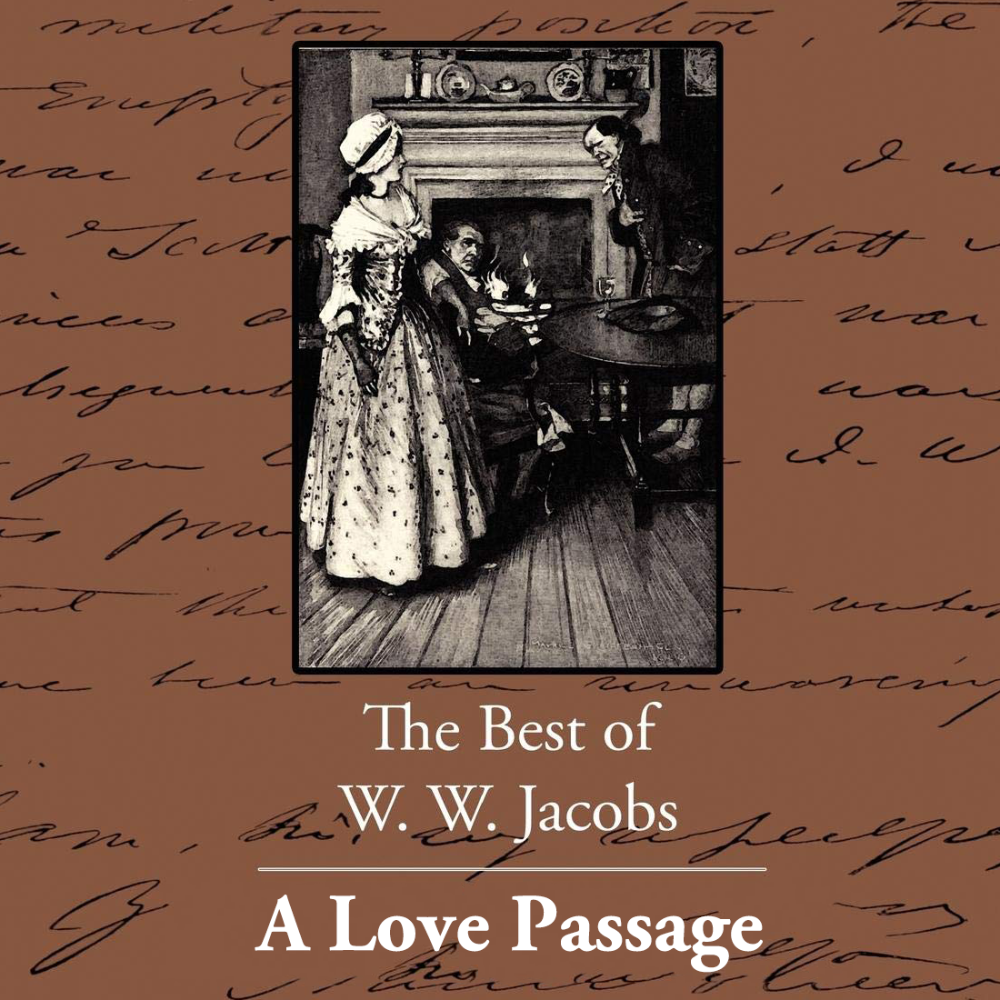

0
стр. з
0
сторінок

завантаження...

Уильям Ваймарк Джейкобс[1]
Любовное плавание и другие истории
Книгу адаптировал Андрей Бессонов
Метод чтения Ильи Франка
Сontents
IN BORROWED PLUMES
(В одолженном оперении).
The master of the Sarah Jane had been missing for two days (хозяин "Сары Джейн" отсутствовал два дня), and all on board, with the exception of the boy, whom nobody troubled about (и все на борту за исключением юнги, о котором никто не беспокоился = которым никто не интересовался), were full of joy at the circumstance (были полны радости этому обстоятельству). Twice before had the skipper, whose habits might, perhaps, be best described as irregular, missed his ship (дважды прежде капитан, чьи привычки могли, возможно, быть лучше всего описаны как неупорядоченные, опаздывал на свой корабль; skipper — шкипер, капитан; to miss — пропускать; опаздывать), and word had gone forth that the third time would be the last (и вышло слово = поговаривали, что третий раз будет последним; to go forth — выйти вперед). His berth was a good one (его койка была хорошей), and the mate wanted it in place of his own (и помощник капитана хотел ее вместо своей собственной), which was wanted by Ted Jones, A.B. (которую /в свою очередь/ хотел Тед Джонс, матрос; A.B. = able seaman — профессиональный матрос; able — способный).
board [bLd], exception [Ik`sepS(q)n], trouble [trAbl], circumstance [`sWkqmstxns], berth [bWT]
The master of the Sarah Jane had been missing for two days, and all on board, with the exception of the boy, whom nobody troubled about, were full of joy at the circumstance. Twice before had the skipper, whose habits might, perhaps, be best described as irregular, missed his ship, and word had gone forth that the third time would be the last. His berth was a good one, and the mate wanted it in place of his own, which was wanted by Ted Jones, A.B.
"Two hours more," said the mate anxiously to the men, as they stood leaning against the side (еще два часа, сказал помощник обеспокоенно людям = матросам, стоявшим облокотившись на борт; to say — сказать; to stand — стоять; as — в то время как, пока), "and I take the ship out (и я вывожу корабль /в море/: "беру наружу")."
"Under two hours'll do it," said Ted, peering over the side (не более двух часов достаточно: "сделает это", сказал Тед, глядя через борт; under — под; менее, не более какого-либо количества) and watching the water as it slowly rose over the mud (и наблюдая за водой, пока она медленно поднималась над илом; to rise — подниматься). "What’s got the old man, I wonder (что стряслось со стариком: "охватило старика", интересно знать; to get — зд.: получать, брать; old man — старик: "старый человек"; to wonder — интересоваться, любопытствовать, задаваться вопросом)?"
hour [aVq], anxiously [`xNkSqsli], wonder [`wAndq]
"Two hours more," said the mate anxiously to the men, as they stood leaning against the side, "and I take the ship out."
"Under two hours'll do it," said Ted, peering over the side and watching the water as it slowly rose over the mud. "What’s got the old man, I wonder?"
"I don’t know, and I don’t care," said the mate (я не знаю, и мне плевать: "не забочусь", сказал помощник). "You chaps stand by me and it’ll be good for all of us (вы, парни, держитесь меня: "стойте рядом со мной", и это будет к лучшему для всех нас). Mr. Pearson said distinct the last time (мистер Пирсон сказал четко в прошлый раз) that if the skipper ever missed his ship again it would be his last trip in her (что если капитан когда-либо опоздает на свой корабль снова, это будет его последнее плавание на нем: "на ней"; хотя в английском языке у неодушевленных существительных нет грамматического рода, некоторые слова традиционно ассоциируются с тем или иным родом, например, корабль — с женским), and he told me afore the old man (и он сказал мне прямо перед стариком = в присутствии старика; to tell — сказать) that I wasn’t to wait two minutes at any time (что мне не следует ждать /даже/ двух минут никогда = ни в какое время), but to bring her out right away (но выводить его /в море/ сразу же)."
care [keq], distinct [dI`stINkt], minute [`mInqt]
"I don’t know, and I don’t care," said the mate. "You chaps stand by me and it’ll be good for all of us. Mr. Pearson said distinct the last time that if the skipper ever missed his ship again it would be his last trip in her, and he told me afore the old man that I wasn’t to wait two minutes at any time, but to bring her out right away."
"He’s an old fool," said Bill Loch, the other hand (он старый дурак, сказал Билл Лох, другой матрос; hand — рука; работник); "and nobody’ll miss him but the boy (и никто не будет скучать по нем, кроме юнги), and he’s been looking reg’lar worried all the morning (а он выглядит этак беспокойно все утро; reg’lar = regular — регулярный, обычный, заправский). He looked so worried at dinner time that I give ‘im a kick (он выглядел таким озабоченным на обеде, что я дал ему пинка; зд.: give вместо gave — дал от to give — давать) to cheer him up a bit (чтобы развеселить его немного). Look at him now (посмотрите на него сейчас)."
worried [`wArId], cheer [CIq]
"He’s an old fool," said Bill Loch, the other hand; "and nobody’ll miss him but the boy, and he’s been looking reg’lar worried all the morning. He looked so worried at dinner time that I give ‘im a kick to cheer him up a bit. Look at him now."
The mate gave a supercilious glance in the direction of the boy, and then turned away (помощник бросил: "дал" презрительный взгляд в направлении юнги, и затем отвернулся прочь). The boy, who had no idea of courting observation (юнга, который не имел понятия о том, что привлек внимание: "о привлечении внимания"), stowed himself away behind the windlass (устроился за брашпилем; to stow — убрать, сложить, спрятать; away — прочь); and, taking a letter from his pocket, perused it for the fourth time (и, взяв = достав письмо из своего кармана, внимательно прочитал его в четвертый раз; to peruse — внимательно прочитывать).
supercilious [sHpq`sIljqs], idea [aI`dIq], court [kLt], observation [Pbzq`veISn]
The mate gave a supercilious glance in the direction of the boy, and then turned away. The boy, who had no idea of courting observation, stowed himself away behind the windlass; and, taking a letter from his pocket, perused it for the fourth time.
"Dear Tommy," it began (дорогой Томми, начиналось оно; to begin — начинать/ся/). "I take my pen in and to inform you (я беру ручку в /руку/ и чтобы сообщить тебе) that I’m staying here and can’t get away (что я нахожусь тут и не могу выбраться: "убраться прочь"; to stay — оставаться; временно находиться где-либо) for the reason that I lost my clothes at cribbage last night (по той причине, что я проиграл свою одежду в криббедж последней ночью = вчера ночью/вечером; to lose — терять; проигрывать), also my money, and everything beside (также свои деньги и все помимо /этого/). Don’t speak to a living soul about it (не разговаривай ни с одной живой душой об этом) as the mate wants my berth (потому что помощник хочет мою койку), but pack up some clothes and bring them to me without saying nothing to nobody (но упакуй = собери немного одежды и принеси ее ко мне, не говоря ничего никому: "без говорения…"). The mate’s clothes will do because I haven’t got any other suit (одежда помощника сойдет: "сделает", потому что у меня нет никакого другого костюма), don’t tell him (не говори ему). You needn’t trouble about socks (тебе не нужно беспокоиться о носках) as I’ve got them left (так как они у меня остались: "я имею их оставшимися"). My head is so bad I must now conclude (моя голова так плоха = болит, что я должен сейчас завершать). Your affectionate uncle and captain Joe Bross (твой любящий дядя и капитан Джо Бросс). P.S. Don’t let the mate see you come (P.S. Не дай помощнику увидеть, как ты придешь /ко мне/: "увидеть тебя приходить"), or else he won’t let you go (а не то он не отпустит тебя: "не даст тебе пойти")."
reason [`rJz(q)n], clothes [klqVDz], conclude [kqn`klHd], affectionate [q`fekS(q)nqt], captain [`kxptIn]
"Dear Tommy," it began. "I take my pen in and to inform you that I’m staying here and can’t get away for the reason that I lost my clothes at cribbage last night, also my money, and everything beside. Don’t speak to a living soul about it as the mate wants my birth, but pack up some clothes and bring them to me without saying nothing to nobody. The mate’s clothes will do because I haven’t got any other suit, don’t tell ‘im. You needn’t trouble about socks as I've got them left. My head is so bad I must now conclude. Your affectionate uncle and captain Joe Bross. P.S. Don’t let the mate see you come, or else he won’t let you go."
"Two hours more," sighed Tommy, as he put the letter back in his pocket (еще два часа, вздохнул Томми, кладя письмо обратно в карман: "когда положил"; to put — класть). "How can I get any clothes when they’re all locked up (как я могу раздобыть какую-либо одежду, когда она вся заперта)? And aunt said I was to look after ‘im (а тетя говорила, что я должен присматривать за ним: "что я был присматривать…") and see he didn’t get into no mischief (и смотреть = следить за тем, чтобы он не попал ни в какую передрягу)."
aunt [Rnt], mischief [`mIsCIf]
"Two hours more," sighed Tommy, as he put the letter back in his pocket. "How can I get any clothes when they’re all locked up? And aunt said I was to look after ‘im and see he didn’t get into no mischief."
He sat thinking deeply (он сидел, глубоко задумавшись), and then, as the crew of the Sarah Jane stepped ashore to take advantage of a glass offered by the mate (а затем, когда команда "Сары Джейн" ступила на берег, чтобы воспользоваться стаканчиком = угощением, предложенным помощником; to take advantage of — воспользоваться: "взять выгоду от"), he crept down to the cabin again for another desperate look round (он прокрался вниз в каюту снова для еще одного отчаянного взгляда вокруг = чтобы еще раз отчаянно осмотреться в поисках одежды; to creep — красться, ползти). The only articles of clothing visible belonged to Mrs. Bross (единственные предметы одежды, /которые были/ видны, принадлежали миссис Бросс), who up to this trip had been sailing in the schooner to look after its master (которая вплоть до этого рейса плавала на этой шхуне, чтобы приглядывать за ее начальником). At these he gazed hard (на них он посмотрел пристально; these — эти; они; to gaze — пристально глядеть; вглядываться; уставиться; hard — жесткий, твердый; тугой, негибкий, негнущийся).
crew [krH], advantage [qd`vRntIG], desperate [`desp(q)rqt], schooner [`skHnq]
He sat thinking deeply, and then, as the crew of the Sarah Jane stepped ashore to take advantage of a glass offered by the mate, he crept down to the cabin again for another desperate look round. The only articles of clothing visible belonged to Mrs. Bross, who up to this trip had been sailing in the schooner to look after its master. At these he gazed hard.
"I’ll take ‘em and try an’ swop ‘em for some men’s clothes," said he suddenly (я возьму их и постараюсь и обменяю = постараюсь обменять их на какую-нибудь мужскую одежду, сказал он вдруг; ‘ em = them — их; an’ = and — и), snatching the garments from the pegs (схватив одеяния с вешалки; peg — колышек; крючок вешалки). "She wouldn’t mind (она бы не возражала) "; and hastily rolling them into a parcel (и, поспешно свернув их в сверток), together with a pair of carpet slippers of the captain’s (вместе с парой ковровых = шерстяных/мягких тапочек капитана), he thrust the lot into an old biscuit bag (он запихнул все это в старый бисквитный мешок = мешок из-под сухарей; to thrust — запихнуть; lot — куча, "все вещи/люди"). Then he shouldered his burden (затем он взвалил на плечо свою ношу), and, going cautiously on deck, gained the shore (и, выйдя опасливо на палубу, достиг берега), and set off at a trot to the address furnished in the letter (и припустил рысью по адресу, указанному в письме; to set off — пуститься прочь = в путь; to furnish — снабжать).
mind [maInd], hastily [`heIstIli], pair [peq], biscuit [`bIskIt], burden [`bWd(q)n], cautiously [`kLSqsli], address [q`dres]
"I’ll take ‘em and try an’ swop ‘em for some men’s clothes," said he suddenly, snatching the garments from the pegs. "She wouldn’t mind"; and hastily rolling them into a parcel, together with a pair of carpet slippers of the captain’s, he thrust the lot into an old biscuit bag. Then he shouldered his burden, and, going cautiously on deck, gained the shore, and set off at a trot to the address furnished in the letter.
It was a long way, and the bag was heavy (это была долгая дорога, а мешок был тяжелый). His first attempt at barter was alarming (его первая попытка обмена была тревожащей = пугающей), for the pawnbroker, who had just been cautioned by the police, was in such a severe and uncomfortable state of morals (ибо хозяин ломбарда, который только что был предупрежден полицией, был в таком суровом и неудобном = неловком расположении духа), that the boy quickly snatched up his bundle again and left (что мальчик живо подхватил свой сверток опять и ушел; to leave — уходить, уезжать, покидать, оставлять). Sorely troubled he walked hastily along (крайне встревоженный, он шагал поспешно вперед), until, in a small bye street, his glance fell upon a baker of mild and benevolent aspect (пока в маленьком переулке его взгляд не упал на пекаря мягкой и доброжелательной наружности; to fall — падать), standing behind the counter of his shop (стоявшего за прилавком своего магазинчика).
heavy [`hevi], attempt [q`tem(p)t], caution [`kLS(q)n], police [p(q)`lJs], severe [sI`vIq], uncomfortable [An`kAmf(q)tqbl], aspect [`xspekt], behind [bI`haInd]
It was a long way, and the bag was heavy. His first attempt at barter was alarming, for the pawnbroker, who had just been cautioned by the police, was in such a severe and uncomfortable state of morals, that the boy quickly snatched up his bundle again and left. Sorely troubled he walked hastily along, until, in a small bye street, his glance fell upon a baker of mild and benevolent aspect, standing behind the counter of his shop.
"If you please, sir," said Tommy, entering (если вам угодно, сэр, сказал Томми, входя), and depositing his bag on the counter (и выкладывая свой мешок на прилавок), "have you got any cast-off clothes you don’t want (есть ли у вас какая-либо бросовая одежда, которой вы не хотите = которая вам не нужна)?" The baker turned to a shelf (пекарь повернулся к полке), and selecting a stale loaf cut it in halves, one of which he placed before the boy (и, выбрав зачерствевший ломоть, разрезал его на /две/ половины, одну из которых он положил перед юнгой; to cut — резать; halves — мн.ч. от half — половина).
deposit [dI`pPzIt], select [sI`lekt], half [hRf], halves [hRvz]
"If you please, sir," said Tommy, entering, and depositing his bag on the counter, "have you got any cast-off clothes you don’t want?" The baker turned to a shelf, and selecting a stale loaf cut it in halves, one of which he placed before the boy.
"I don’t want bread," said Tommy desperately (я не хочу хлеба, сказал Томми отчаянно); "but mother has just died, and father wants mourning for the funeral (но мама только что умерла, и отец хочет оплакивание = плакальщиц на похороны). He’s only got a new suit with him (у него имеется только новый костюм: "имеет с собой"), and if he can change these things of mother’s for an old suit (и если он сможет обменять эти мамины вещи на старый костюм), he’d sell his best ones to bury her with (он бы продал свои лучшие /вещи/, чтобы похоронить ее на /это/)." He shook the articles out on the counter (он вытряхнул предметы = одежду на прилавок), and the baker’s wife, who had just come into the shop, inspected them rather favourably (и жена пекаря, которая только что вошла в лавку, осмотрела их довольно-таки одобрительно).
bread [bred], funeral [`fjHn(q)rql], suit [sjHt], bury [`beri], rather [`rRDq], favourably [`feIv(q)rqbli]
"I don’t want bread," said Tommy desperately; "but mother has just died, and father wants mourning for the funeral. He’s only got a new suit with him, and if he can change these things of mother’s for an old suit, he’d sell his best ones to bury her with." He shook the articles out on the counter, and the baker’s wife, who had just come into the shop, inspected them rather favourably.
"Poor boy, so you’ve lost your mother," she said, turning the clothes over (бедный мальчик, так ты только что потерял свою мать, сказала она, переворачивая одежду; to lose — терять). "It’s a good skirt, Bill (это хорошая юбка, Билл)."
"Yes, ma’am," said Tommy dolefully (да, мэм, сказал Томми уныло).
"What did she die of?" inquired the baker (от чего она умерла? спросил пекарь).
"Scarlet fever," said Tommy, tearfully, mentioning the only disease he knew (скарлатина: "алая горячка", сказал Томми слезно = заливаясь слезами, называя единственную болезнь, которую знал; to know — знать).
"Scar—Take them things away," yelled the baker (скар… забирай эти вещи прочь, заорал пекарь; them — их; в просторечии может заменять родственные слова these/those — эти/те и определенный артикль the), pushing the clothes on to the floor (смахнув одежду на пол; to push — толкать), and following his wife to the other end of the shop (и следуя за женой в другой конец магазина = убегая вслед за женой в дальний угол). "Take ‘em away directly, you young villain (забирай их прочь прямо = немедленно, ты, маленький негодяй)."
poor [pVq], skirt [skWt], inquire [In`kwaIq], fever [`fJvq], disease [dI`zJz], mention [`menS(q)n], know [nqV], knew [njH], villain [`vIlqn]
"Poor boy, so you’ve lost your mother," she said, turning the clothes over. "It’s a good skirt, Bill."
"Yes, ma’am," said Tommy dolefully.
"What did she die of?" inquired the baker.
"Scarlet fever," said Tommy, tearfully, mentioning the only disease he knew.
"Scar—Take them things away," yelled the baker, pushing the clothes on to the floor, and following his wife to the other end of the shop. "Take ‘em away directly, you young villain."
His voice was so loud, his manner so imperative (его голос был столь громок, его манера столь повелительна), that the startled boy, without stopping to argue (что испуганный юнга, не задержавшись, чтобы поспорить: "без останавливания"), stuffed the clothes pell-mell into the bag again and departed (запихнул одежду как попало обратно в мешок: "снова" и убежал: "отбыл"). A farewell glance at the clock made him look almost as horrified as the baker (прощальный взгляд на часы заставил его выглядеть почти так же испуганно, как пекарь; to make — делать; заставлять).
loud [laVd], manner [`mxnq], imperative [Im`perqtIv], argue [`RgjH], farewell [feq`wel]
His voice was so loud, his manner so imperative, that the startled boy, without stopping to argue, stuffed the clothes pell-mell into the bag again and departed. A farewell glance at the clock made him look almost as horrified as the baker.
"There’s no time to be lost," he muttered, as he began to run (нет времени, которое можно терять: "чтобы быть потеряно", пробормотал он, начиная бежать: "когда начал…"; to begin — начать); "either the old man’ll have to come in these (либо старику придется пойти в этой /одежде/; to have to — быть вынужденным или обязанным что-то делать) or else stay where he is (или же оставаться, где он есть /сейчас/)." He reached the house breathless, and paused before an unshaven man in time-worn greasy clothes (он добежал до дома бездыханный = запыхавшийся и остановился перед небритым человеком в потрепанной: "поношенной" временем засаленной одежде; to reach — достигать; to wear — носить /об одежде/), who was smoking a short clay pipe with much enjoyment in front of the door (который курил короткую глиняную трубку с большим наслаждением перед дверью).
either [`aIDq] или [`JDq], breathless [`breTlqs], front [frAnt], door [dL]
"There’s no time to be lost," he muttered, as he began to run; "either the old man’ll have to come in these or else stay where he is." He reached the house breathless, and paused before an unshaven man in time-worn greasy clothes, who was smoking a short clay pipe with much enjoyment in front of the door.
"Is Cap’n Bross here?" he panted (капитан Бросс здесь? выдохнул он; cap’n = captain; to pant — запыхаться).
"He’s upstairs," said the man, with a leer (он наверху, сказал человек с ухмылкой), "sitting in sackcloth and ashes, more ashes than sackcloth (сидящий = сидит во власянице и пепле, больше пепла, чем власяницы). Have you got some clothes for him (ты раздобыл какую-нибудь одежду для него)?"
"Look here," said Tommy (посмотрите: "смотрите сюда", сказал Томми). He was down on his knees (он стоял на коленях: "был внизу на коленях") with the mouth of the bag open again (с отверстием мешка открытым снова; mouth — рот), quite in the style of the practiced hawker (совершенно в духе натренированного = опытного уличного разносчика). "Give me an old suit of clothes for them (дайте мне старый костюм за них). Hurry up (поторопитесь). There’s a lovely frock (вот чудесное платье)."
upstairs [Ap`steqz], sackcloth [`sxk.klPT], ashes [`xSIz], practice [`prxktIs], lovely [`lAvli]
"Is Cap’n Bross here?" he panted.
"He’s upstairs," said the man, with a leer, "sitting in sackcloth and ashes, more ashes than sackcloth. Have you got some clothes for him?"
"Look here," said Tommy. He was down on his knees with the mouth of the bag open again, quite in the style of the practiced hawker. "Give me an old suit of clothes for them. Hurry up. There’s a lovely frock."
"Blimey," said the man, staring (ну и ну, сказал человек, вытаращившись), "I’ve only got these clothes (у меня только эта одежда и есть /та, что на мне/). Wot d’yer take me for? A dook (за кого ты меня принимаешь, за герцога? wot d’yer = what do you; dook = duke)?"
"Well, get me some somewhere," said Tommy (ну, раздобудьте мне какую-нибудь где-нибудь, сказал Томми). "If you don’t (если вы этого не /сделаете/) the cap’n’ll have to come in these (капитану придется пойти в этом; to have to), and I’m sure he won’t like it (и я уверен, что ему это не понравится; won’t = will not — показатель будущего времени + отрицание)."
"I wonder what he’d look like," said the man, with a grin (интересно, как бы он выглядел, сказал человек с усмешкой; to look like — выглядеть каким-либо образом: "выглядеть как"). "Damme if I don’t come up and see (будь я проклят, если не пойду и не взгляну; damme = damn me)."
"Get me some clothes," pleaded Tommy (достаньте мне какую-нибудь одежду, умолял Томми).
sure [SVq]
"Blimey," said the man, staring, "I’ve only got these clothes. Wot d’yer take me for? A dook?"
"Well, get me some somewhere," said Tommy. "If you don’t the cap’n’ll have to come in these, and I’m sure he won’t like it."
"I wonder what he’d look like," said the man, with a grin. "Damme if I don’t come up and see."
"Get me some clothes," pleaded Tommy.
"I wouldn’t get you clothes, no, not for fifty pun," said the man severely (я бы не достал тебе одежды, нет, и за пятьдесят фунтов; pun = pounds). "Wot d’yer mean wanting to spoil people’s pleasure in that way (ты что, желаешь испортить людям удовольствие таким образом: "что ты имеешь в виду, желая испортить…")? Come on, come and tell the cap’n what you’ve got for ‘im (давай, иди и скажи капитану, что у тебя есть для него; ‘ im = him), I want to ‘ear what he ses (я хочу услышать, что он скажет; ‘ ear = to hear — слышать; ses = says). He’s been swearing ‘ard since ten o’clock this morning (он ругается на чем свет стоит: "тяжело, жестко" с десяти часов сегодняшнего утра; ‘ ard = hard), but he ought to say something special over this (но он должен сказать что-нибудь особенное на этот счет)."
pleasure [`pleZq], ought to [`Lt tq], special [`speS(q)l]
"I wouldn’t get you clothes, no, not for fifty pun," said the man severely. "Wot d’yer mean wanting to spoil people’s pleasure in that way? Come on, come and tell the cap’n what you’ve got for ‘im, I want to ‘ear what he ses. He’s been swearing ‘ard since ten o’clock this morning, but he ought to say something special over this."
He led the way up the bare wooden stairs (он пошел, указывая путь, вверх по голым деревянным ступеням: "повел дорогу"; to lead — вести), followed by the harassed boy (а за ним следовал волнующийся/измученный волнением юнга: "преследуемый измученным юнгой"; to harass — беспокоить, изводить; утомлять, изнурять), and entered a small dirty room at the top (и вошел в маленькую грязную комнату наверху), in the centre of which the master of the Sarah Jane sat to deny visitors (в центре которой начальник "Сары Джейн" сидел, чтобы отрицать/не признавать посетителей = как будто посетители были невозможны; to sit — сидеть; to deny — отрицать; отвергать; не признавать существование), in a pair of socks and last week’s paper (/одетый/ в пару носков и /укрытый/ газетой за прошлую неделю; last — последний; прошлый).
bare [beq], harassed [`hxrqst], centre [`sentq], deny [dI`naI], visitor [`vIzItq]
He led the way up the bare wooden stairs, followed by the harassed boy, and entered a small dirty room at the top, in the centre of which the master of the Sarah Jane sat to deny visitors, in a pair of socks and last week’s paper.
"Here’s a young gent come to bring you some clothes, cap’n," said the man (тут вот молодой человек, пришедший, чтобы принести вам немного одежды, капитан, сказал человек), taking the sack from the boy (забирая мешок у юнги).
"Why didn’t you come before?" growled the captain (почему ты не пришел раньше? прорычал капитан), who was reading the advertisements (который читал объявления).
The man put his hand in the sack, and pulled out the clothes (человек сунул руку в мешок и вытащил одежду). "What do you think of ‘em?" he asked expectantly (что вы думаете о ней? спросил он с ожиданием).
gent [Gent], growl [graVl], advertisement [qd`vWtIsmqnt]
"Here’s a young gent come to bring you some clothes, cap’n," said the man, taking the sack from the boy.
"Why didn’t you come before?" growled the captain, who was reading the advertisements.
The man put his hand in the sack, and pulled out the clothes. "What do you think of ‘em?" he asked expectantly.
The captain strove vainly to tell him, but his tongue mercifully forsook its office (капитан тщетно пытался сказать ему, но его язык милосердно оставил свою службу = отказался служить ему; to forsake), and dried between his lips (и засох = застрял между губами). His brain rang with sentences of scorching iniquity, but they got no further (его мозг звенел сентенциями, /отличающимися/ адским: "палящим" неблагочестием, но они не добирались дальше = не были высказаны; to ring — звенеть; to get — зд.: попасть, оказаться, добраться).
"Well, say thank you, if you can’t say nothing else," suggested his tormentor hopefully (ну, скажите /хоть/ спасибо, если не можете сказать ничего другого, предложил его мучитель с надеждой; to torment — мучить).
"I couldn’t bring nothing else," said Tommy hurriedly (я не смог принести ничего другого, сказал Томми поспешно); "all the things was locked up (все вещи были заперты; was — был/а/ вместо were — были). I tried to swop ‘em (я пытался обменять их) and nearly got locked up for it (и меня за это чуть за решетку не посадили: "почти сделался запертым в тюрьму за это"). Put these on and hurry up (надевайте эту /одежду/ и поторопитесь; to put on — надевать)."
tongue [tAN], mercifully [`mWsIf(q)li], sentence [`sentqns], further [`fWDq], suggest [sq`Gest], hurriedly [`hArIdli]
The captain strove vainly to tell him, but his tongue mercifully forsook its office, and dried between his lips. His brain rang with sentences of scorching iniquity, but they got no further.
"Well, say thank you, if you can’t say nothing else," suggested his tormentor hopefully.
"I couldn’t bring nothing else," said Tommy hurriedly; "all the things was locked up. I tried to swop ‘em and nearly got locked up for it. Put these on and hurry up."
The captain moistened his lips with his tongue (капитан смочил губы языком = облизал губы; moist — сырой, влажный; to moisten — увлажнять).
"The mate’ll get off directly she floats," continued Tommy (помощник отплывет сразу же, как она = корабль окажется на воде, продолжал Томми; to float — плыть по поверхности воды, держаться на поверхности). "Put these on and spoil his little game (наденьте эту /одежду/ и испортьте его маленькую игру). It’s raining a little now (сейчас немного моросит; to rain — моросить, "идет дождь"). Nobody’ll see you (никто не увидит вас), and as soon as you git aboard (а как только вы окажетесь на борту; as soon as — как только: "так скоро, как"; git = to get — оказаться, попасть) you can borrow some of the men’s clothes (вы сможете одолжить какую-нибудь одежду у матросов: "людей")."
"That’s the ticket, cap’n," said the man (то, что надо, капитан, сказал человек; ticket — букв. билет; происхождение выражения точно не установлено). "Lord lumme (Господи помилуй: "Господь возлюби меня"; lumme = love me), you’ll’ave everybody falling in love with you (в вас все будут влюбляться: "у вас будут все влюбляющимися в вас"; to fall in love — влюбиться: "впасть в любовь")."
"Hurry up," said Tommy, dancing with impatience. "Hurry up." (торопитесь, сказал Томми, пританцовывая от нетерпения, торопитесь).
continue [kqn`tInjH], impatience [Im`peIS(q)ns]
The captain moistened his lips with his tongue.
"The mate’ll get off directly she floats," continued Tommy. "Put these on and spoil his little game. It’s raining a little now. Nobody’ll see you, and as soon as you git aboard you can borrow some of the men’s clothes."
"That’s the ticket, cap’n," said the man. "Lord lumme, you’ll’ave everybody falling in love with you."
"Hurry up," said Tommy, dancing with impatience. "Hurry up."
The skipper, dazed and wild-eyed, stood still (капитан, ошарашенный и с диким взглядом: "глазами", стоял смирно; to stand — стоять) while his two assistants hastily dressed him (пока его два ассистента поспешно одевали его), bickering somewhat about details as they did so (одновременно переругиваясь немного о деталях: "переругиваясь… пока они делали так").
"He ought to be tight-laced, I tell you," said the man (он должен быть туго зашнурован, говорю тебе, сказал человек).
"He can’t be tight-laced without stays," said Tommy scornfully (он не может быть туго зашнурован без корсета, сказал Томми насмешливо; scorn — презрение; насмешка). "You ought to know that (вам бы следовало это знать)."
"Ho, can’t he," said the other, discomfited (хо, не может он, сказал тот: "другой", смущенный). "You know too much for a young-un (ты знаешь слишком много для юнца; young-un = young one; young — молодой; one — один; человек). Well, put a bit o’ line round ‘im then (ну, обвяжи немного шнура вокруг него тогда; to put — класть, ставить, надевать; ‘im = him)."
wild [waIld], assistant [q`sIstqnt], detail [`dJteIl]
The skipper, dazed and wild-eyed, stood still while his two assistants hastily dressed him, bickering somewhat about details as they did so.
"He ought to be tight-laced, I tell you," said the man.
"He can’t be tight-laced without stays," said Tommy scornfully. "You ought to know that."
"Ho, can’t he," said the other, discomfited. "You know too much for a young-un. Well, put a bit o’ line round ‘im then."
"We can’t wait for a line," said Tommy, who was standing on tip-toe to tie the skipper’s bonnet on (мы не можем ждать шнур, сказал Томми, который стоял на цыпочках, что привязать капитану шляпку; on — надетый, ср.: to put on — надеть). "Now tie the scarf over his chin to hide his beard (теперь повяжи шарф поверх его подбородка, чтобы спрятать его бороду), and put this veil on (и надень эту вуаль). It’s a good job he ain’t got a moustache (хорошо: "хорошая работа", что у него нет усов; ain’t got — зд.: = haven’t got)."
The other complied (тот подчинился), and then fell back a pace or two to gaze at his handiwork (а затем отступил назад на шаг-другой, чтобы полюбоваться на дело рук своих; to fall — падать; to fall back — отступать). "Strewth, though I sees it as shouldn’t, you look a treat!" he remarked complacently (точно, хотя я вижу это, как не должен, вы выглядите конфеткой! заметил он самодовольно; strewth = it’s the truth — это правда; treat — угощение; развлечение, удовольствие). "Now, young-un, take ‘old of his arm (теперь, молодой человек, бери его под руку; ‘ old = hold — хватка от to hold — держать; to take hold of — брать, охватывать). Go up the back streets (идите по задним: "глухим улицам"), and if you see anybody looking at you, call ‘im Mar (а если увидите кого-нибудь смотрящего на вас, зови его мамой; ‘ im = him; Mar = Ma)."
beard [bIqd], moustache [mq`stRS], complacently [kqm`pleIs(q)ntli]
"We can’t wait for a line," said Tommy, who was standing on tip-toe to tie the skipper’s bonnet on. "Now tie the scarf over his chin to hide his beard, and put this veil on. It’s a good job he ain’t got a moustache."
The other complied, and then fell back a pace or two to gaze at his handiwork. "Strewth, though I sees it as shouldn’t, you look a treat!" he remarked complacently. "Now, young-un, take ‘old of his arm. Go up the back streets, and if you see anybody looking at you, call ‘im Mar."
The two set off (двое пустились в путь; to set off), after the man, who was a born realist, had tried to snatch a kiss from the skipper on the threshold (после того как /небритый/, который был прирожденным реалистом, попытался сорвать поцелуй у капитана на пороге; to snatch — схватить; born от to bear — выносить, родить). Fortunately for the success of the venture, it was pelting with rain (к счастью для успеха предприятия, лил дождь; to pelt — швырять; барабанить /о дожде/), and, though a few people gazed curiously at the couple as they went hastily along (и хотя несколько человек уставились с любопытством на эту парочку, пока они поспешно шагали вперед; went от to go — идти), they were unmolested, and gained the wharf in safety (они были нетронуты = к ним не приставали и добрались до пристани в сохранности), arriving just in time to see the schooner shoving off from the side (прибыв как раз вовремя, для того чтобы увидеть шхуну, отчаливавшую бортом).
threshold [`TreS(h)qVld], success [sqk`ses], people [pJpl], curiously [`kjHriqsli], couple [kApl], wharf [wLf], shove [SAv]
The two set off, after the man, who was a born realist, had tried to snatch a kiss from the skipper on the threshold. Fortunately for the success of the venture, it was pelting with rain, and, though a few people gazed curiously at the couple as they went hastily along, they were unmolested, and gained the wharf in safety, arriving just in time to see the schooner shoving off from the side.
At the sight the skipper held up his skirts and ran (при этом виде = при виде этого капитан подобрал свои юбки и побежал; to hold up — подобрать: "держать вверх"). "Ahoy!" he shouted. "Wait a minute." (эгей! крикнул он, подождите минуту).
The mate gave one look of blank astonishment at the extraordinary figure (помощник бросил единственный взгляд пустого = тупого удивления на необычную фигуру), and then turned away (и затем отвернулся); but at that moment the stern came within jumping distance of the wharf (но в этот момент корма пришла = оказалась в прыжковой доступности от пристани), and uncle and nephew, moved with one impulse (и дядя и племянник, движимые одним импульсом) leaped for it and gained the deck in safety (прыгнули за ней = ей вдогонку и достигли = приземлились на палубу в сохранности).
ahoy [q`hOI], astonishment [q`stPnISmqnt], figure [`fIgq], distance [`dIstqns], nephew [`nefjH]
At the sight the skipper held up his skirts and ran. "Ahoy!" he shouted. "Wait a minute."
The mate gave one look of blank astonishment at the extraordinary figure, and then turned away; but at that moment the stern came within jumping distance of the wharf, and uncle and nephew, moved with one impulse leaped for it and gained the deck in safety.
"Why didn’t you wait when I hailed you?" demanded the skipper fiercely (почему ты не подождал, когда я окликнул тебя? спросил капитан яростно).
"How was I to know it was you?" inquired the mate surlily (как мне было знать, что это вы: "как был я знать…"? спросил помощник угрюмо), as he realised his defeat (осознавая свое поражение: "пока он осознавал…"). "I thought it was the Empress of Rooshia (я думал, это императрица России; Rooshia = Russia)."
The skipper stared at him dumbly (капитан уставился на него бессловесно; dumb — немой).
"An’ if you take my advice," said the mate, with a sneer (а если вы примете мой совет, сказал помощник с усмешкой), "you’ll keep them things on (вы оставите эти вещи на себе: "надетыми"). I never see you look so well in anything afore (я никогда не видел, чтобы вы так хорошо выглядели в чем бы то ни было прежде; never see — зд.: вместо have never seen)."
fiercely [`fIqsli], inquire [In`kwaIq], thought [TLt], dumb [dAm]
"Why didn’t you wait when I hailed you?" demanded the skipper fiercely.
"How was I to know it was you?" inquired the mate surlily, as he realised his defeat. "I thought it was the Empress of Rooshia."
The skipper stared at him dumbly.
"An’ if you take my advice," said the mate, with a sneer, "you’ll keep them things on. I never see you look so well in anything afore."
"I want to borrow some o’ your clothes, Bob," said the skipper, eyeing him steadily (я хочу одолжить кое-что из твоей одежды, Боб, сказал капитан, буравя его взглядом: "глазея на него твердо").
"Where’s your own?" asked the other (а где ваша собственная? спросил тот).
"I don’t know," said the skipper (я не знаю, сказал капитан). "I was took with a fit last night, Bob (я был охвачен припадком = у меня был припадок вчера ночью, Боб; was took вместо was taken), and when I woke up this morning they were gone (а когда я очнулся сегодня утром, она пропала; to wake up — проснуться; to be gone — исчезнуть, пропасть). Somebody must have took advantage of my helpless state and taken ‘em." (кто-то, должно быть, воспользовался моим беспомощным состоянием и взял ее; took зд.: вместо taken; to take advantage — воспользоваться).
"Very likely," said the mate, turning away to shout an order to the crew (очень вероятно, сказал помощник, отворачиваясь, чтобы прокричать приказ команде), who were busy setting sail (которая была занята установкой паруса: "устанавливая парус").
steadily [`stedIli], crew [krH], busy [`bIzi]
"I want to borrow some o’ your clothes, Bob," said the skipper, eyeing him steadily.
"Where’s your own?" asked the other.
"I don’t know," said the skipper. "I was took with a fit last night, Bob, and when I woke up this morning they were gone. Somebody must have took advantage of my helpless state and taken ‘em."
"Very likely," said the mate, turning away to shout an order to the crew, who were busy setting sail.
"Where are they, old man?" inquired the skipper (где она, старина? спросил капитан).
"How should I know?" asked the other (откуда мне знать: "как бы мне знать"? спросил тот), becoming interested in the men again (снова становясь заинтересованным в матросах: "людях").
"I mean your clothes," said the skipper, who was fast losing his temper (я имею в виду — твоя одежда, сказал капитан, который быстро терял терпение: "спокойствие"; temper — характер).
"Oh, mine?" said the mate (а, моя? сказал помощник). "Well, as a matter o’ fact (ну, вообще говоря: "в качестве факта"; o’ = of), I don’t like lending my clothes (я не люблю одалживать мою одежду). I’m rather pertickler (я довольно-таки щепетилен; pertickler = particular). You might have a fit in them (у вас может случиться припадок в ней)."
lose [lHz], particular [pq`tIkjqlq]
"Where are they, old man?" inquired the skipper.
"How should I know?" asked the other, becoming interested in the men again.
"I mean your clothes," said the skipper, who was fast losing his temper.
"Oh, mine?" said the mate. "Well, as a matter o’ fact, I don’t like lending my clothes. I’m rather pertickler. You might have a fit in them."
"You won’t lend ‘em to me?" asked the skipper (ты не одолжишь их мне? спросил капитан).
"I won’t," said the mate, speaking loudly (не одолжу, сказал помощник, говоря громко), and frowning significantly at the crew, who were listening (и хмурясь значительно на команду, которая прислушивалась).
"Very good," said the skipper (очень хорошо, сказал капитан). "Ted, come here (Тед, поди сюда). Where’s your other clothes (где твоя другая одежда)?"
"I’m very sorry, sir," said Ted, shifting uneasily from one leg to the other (мне очень жаль, сэр, сказал Тед, переминаясь неловко с одной ноги на другую), and glancing at the mate for support (и поглядывая на помощника /в поисках/ поддержки); "but they ain’t fit for the likes of you to wear, sir (но она не годится, чтобы таким, как вы, ее носить, сэр; fit — подходящий; ain’t — зд.= aren’t)." "I’m the best judge of that," said the skipper sharply. "Fetch ‘em up." (я лучший судья в этом /деле/, сказал капитан резко, неси-ка их сюда).
frown [fraVn], significantly [sIg`nIfIkqntli], listen [`lIs(q)n], support [sq`pLt], judge [GAG]
"You won’t lend ‘em to me?" asked the skipper.
"I won’t," said the mate, speaking loudly, and frowning significantly at the crew, who were listening.
"Very good," said the skipper. "Ted, come here. Where’s your other clothes?"
"I’m very sorry, sir," said Ted, shifting uneasily from one leg to the other, and glancing at the mate for support; "but they ain’t fit for the likes of you to wear, sir." "I’m the best judge of that," said the skipper sharply. "Fetch ‘em up."
"Well, to tell the truth, sir," said Ted, "I’m like the mate (ну, по правде говоря, сэр: "чтобы сказать правду", сказал Тед, я — как помощник). I’m only a poor sailor-man (я только простой моряк), but I wouldn’t lend my clothes to the Queen of England (но я не одолжил бы свою одежду и королеве Англии)."
"You fetch up them clothes," roared the skipper snatching off his bonnet and flinging it on the deck (а ну притащи эту одежку, взревел капитан, срывая с себя шляпку и швыряя его на палубу). "Fetch ‘em up at once (притащи ее сразу же). D’ye think I’m going about in these petticuts (думаешь, я буду ходить тут в этих юбках; petticut = petticoat — нижняя юбка)?"
"They’re my clothes," muttered Ted doggedly (это моя одежда, проворчал Тед упрямо).
poor [pVq], roar [rL]
"Well, to tell the truth, sir," said Ted, "I’m like the mate. I’m only a poor sailor-man, but I wouldn’t lend my clothes to the Queen of England."
"You fetch up them clothes," roared the skipper snatching off his bonnet and flinging it on the deck. "Fetch ‘em up at once. D’ye think I’m going about in these petticuts?"
"They’re my clothes," muttered Ted doggedly.
"Very well, then, I’ll have Bill’s," said the skipper (очень хорошо, что же, я возьму Биллову /одежду/, сказал капитан). "But mind you, my lad (но попомни, приятель; lad — парень), I’ll make you pay for this afore I’ve done with you (я заставлю тебя заплатить за это, прежде чем покончу с тобой; to do — делать). Bill’s the only honest man aboard this ship (Билл — единственный честный человек на борту этого корабля). Gimme your hand, Bill, old man (дай мне твою руку, Билл, старина; gimme = give me)."
"I’m with them two," said Bill gruffly, as he turned away (я с ними двумя, сказал Билл угрюмо, отворачиваясь: "пока он отворачивался").
honest [`Pnqst], turn [tWn]
"Very well, then, I’ll have Bill’s," said the skipper. "But mind you, my lad, I’ll make you pay for this afore I’ve done with you. Bill’s the only honest man aboard this ship. Gimme your hand, Bill, old man."
"I’m with them two," said Bill gruffly, as he turned away.
The skipper, biting his lips with fury (капитан, кусая губы от ярости), turned from one to the other (поворачивался от одного к другому), and then, with a big oath, walked forward (а затем, с большим = страшным проклятием, пошел вперед = на нос). Before he could reach the fo’c’sle Bill and Ted dived down before him (прежде чем он смог добраться до кубрика, Билл и Тед нырнули вниз = быстро спустились перед ним), and, by the time he had descended, sat on their chests side by side confronting him (и, к тому моменту как он спустился, сидели на своих сундуках бок о бок, глядя на него с вызовом; to confront — противостоять, стоять лицом к лицу). To threats and appeals alike they turned a deaf ear (угрозам и призывам одинаково они поворачивали глухое ухо = пропускали их мимо ушей), and the frantic skipper was compelled at last to go on deck again (и сам не свой капитан был вынужден в конце концов пойти на палубу снова; frantic — безумный, неистовый, яростный), still encumbered with the hated skirts (все еще обремененный ненавистными юбками).
fury [`fjHri], oath [qVT], forward [`fLwqd], descend [dI`send], threat [Tret], deaf [def]
The skipper, biting his lips with fury, turned from one to the other, and then, with a big oath, walked forward. Before he could reach the fo’c’sle Bill and Ted dived down before him, and, by the time he had descended, sat on their chests side by side confronting him. To threats and appeals alike they turned a deaf ear, and the frantic skipper was compelled at last to go on deck again, still encumbered with the hated skirts.
"Why don’t you go an’ lay down," said the mate (почему бы вам не пойти и не прилечь: "лечь вниз", сказал помощник; an’ = and), "an’ I’ll send you down a nice cup o’ hot tea (и я пришлю вам вниз отличную чашку горячего чая; o’ = of). You’ll get histericks, if you go on like that (с вами случится истерика, если вы так продолжите дальше; get — зд.: получить; правильно — hysterics)."
"I’ll knock your ‘ead off if you talk to me," said the skipper (я сшибу тебе голову, если ты будешь со мной говорить, сказал капитан; to knock — стучать; off — с, прочь; ‘ead = head).
"Not you," said the mate cheerfully; "you ain’t big enough (/только/ не вы, сказал помощник весело, вы недостаточно крупны; ain’t — зд.: = aren’t). Look at that pore fellow over there (взгляните на беднягу вон там; pore — искаж. poor — бедный; fellow — парень)."
histerics [hI`sterIks], knock [nPk], head [hed], enough [I`nAf]
"Why don’t you go an’ lay down," said the mate, "an’ I’ll send you down a nice cup o’ hot tea. You’ll get histericks, if you go on like that."
"I’ll knock your ‘ead off if you talk to me," said the skipper.
"Not you," said the mate cheerfully; "you ain’t big enough. Look at that pore fellow over there."
The skipper looked in the direction indicated (капитан посмотрел в указанном направлении; to indicate — указывать), and, swelling with impotent rage, shook his fist fiercely at a red-faced man with grey whiskers (и, раздуваясь от бессильной ярости, потряс = погрозил кулаком свирепо краснолицему человеку с седыми бакенбардами; to shake — трясти), who was wafting innumerable tender kisses from the bridge of a passing steamer (который посылал бесчисленные нежные поцелуи с мостика проходящего парохода; to waft — махать крылом).
"That’s right," said the mate approvingly (это правильно, сказал помощник одобрительно; to approve — одобрять); "don’t give ‘im no encouragement (не давайте ему одобрения = не поощряйте его; ‘ im = him). Love at first sight ain’t worth having (любовь с первого взгляда недостойна обладания = того, чтобы ее принимали)."
impotent [Im`pqVt(q)nt], approvingly [q`prHvINli], encouragement [In`kArIGmqnt], worth [wWT]
The skipper looked in the direction indicated, and, swelling with impotent rage, shook his fist fiercely at a red-faced man with grey whiskers, who was wafting innumerable tender kisses from the bridge of a passing steamer.
"That’s right," said the mate approvingly; "don’t give ‘im no encouragement. Love at first sight ain’t worth having."
The skipper, suffering severely from suppressed emotion, went below (капитан, страдая жестоко от подавленных чувств, пошел вниз), and the crew, after waiting a little while (и команда, после того как подождала некоторое время) to make sure that he was not coming up again (чтобы удостовериться, что он не собирался подниматься снова = обратно; to make sure — удостовериться, обеспечить: "сделать уверенным"), made their way quietly to the mate (подошли: "сделали свой путь" тихо к помощнику).
"If we can only take him to Battlesea in this rig it’ll be all right," said the latter (если мы только сможем взять = довезти его до Бэттлси в этом наряде, все будет в порядке). "You chaps stand by me (вы, парни, держитесь меня: "стойте подле меня"). His slippers and sou’-wester is the only clothes he’s got aboard (его туфли и зюйдвестка — единственная одежда, которая у него есть на борту; south-wester). Chuck every needle you can lay your hands on overboard (скиньте за борт каждую иголку, которую увидите: "на которую сможете положить руки"; overboard — за борт), or else he’ll git trying to make a suit out of a piece of old sail or something (а то он станет пытаться сделать одежду из куска старого паруса или что-то /в этом роде/; git = get — сделать, стать, получить, и т.д.). If we can only take him to Mr. Pearson like this (если мы только сможем взять = отвести его к мистеру Пирсону вот так = в таком виде), it won’t be so bad after all (все будет не так уж плохо в конце концов: "после всего")."
severely [sI`vIqli], suppress [sq`pres], sure [SVq], quietly [`kwaIqtli]
The skipper, suffering severely from suppressed emotion, went below, and the crew, after waiting a little while to make sure that he was not coming up again, made their way quietly to the mate.
"If we can only take him to Battlesea in this rig it’ll be all right," said the latter. "You chaps stand by me. His slippers and sou’-wester is the only clothes he’s got aboard. Chuck every needle you can lay your hands on overboard, or else he’ll git trying to make a suit out of a piece of old sail or something. If we can only take him to Mr. Pearson like this, it won’t be so bad after all."
While these arrangements were in hand above (пока эти приготовления совершались: "были в руке" наверху), the skipper and the boy were busy over others below (капитан и юнга были заняты другими внизу). Various startling schemes propounded by the skipper for obtaining possession of his men’s attire (разнообразные пугающие схемы = планы, выдвинутые капитаном, овладения одеждой своих матросов; to obtain — получить; possession — владение) were rejected by the youth as unlawful, and, what was worse, impracticable (были отвергнуты юношей как незаконные и, что было хуже, нереализуемые). For a couple of hours they discussed ways and means (пару часов они обсуждали пути и средства), but only ended in diatribes against the mean ways of the crew (но закончили лишь диатрибами против подлых нравов команды; way — путь, дорога; способ; обычай); and the skipper, whose head ached still from his excesses (и капитан, чья голова все еще болела от его излишеств), fell into a state of sullen despair at length (впал наконец в состояние мрачного отчаяния; at length= at last — наконец; length — длина), and sat silent (и сидел тихий; to sit).
arrangement [q`reInGmqnt], above [q`bAv], busy [`bIzi], various [`veqriqs], scheme [skJm], possession [pq`zeS(q)n], reject [rI`Gekt], youth [jHT], couple [kApl], hour [aVq]
While these arrangements were in hand above, the skipper and the boy were busy over others below. Various startling schemes propounded by the skipper for obtaining possession of his men’s attire were rejected by the youth as unlawful, and, what was worse, impracticable. For a couple of hours they discussed ways and means, but only ended in diatribes against the mean ways of the crew; and the skipper, whose head ached still from his excesses, fell into a state of sullen despair at length, and sat silent.
"By Jove, Tommy, I’ve got it," he cried suddenly (/клянусь/ Юпитером = черт возьми/ей-Богу, Томми, есть! вскричал он вдруг), starting up and hitting the table with his fist (подскочив и ударив по столу кулаком). "Where’s your other suit (где твой другой костюм)?"
"That ain’t no bigger that this one," said Tommy (он не больше, чем этот, сказал Томми; ain’t — зд. = isn’t).
"You git it out," said the skipper, with a knowing toss of his head (ты его доставай, сказал капитан со знающим видом тряхнув головой: "со знающим встряхиванием головы"; git = get — зд.: раздобыть, достать; to toss — вскинуть голову). "Ah, there we are (а, ну вот). Now go in my state-room and take those off (теперь иди в мою каюту и снимай это = то, что на тебе; to take off — снимать: "брать с")."
suit [sjHt], those [DqVz]
"By Jove, Tommy, I’ve got it," he cried suddenly, starting up and hitting the table with his fist. "Where’s your other suit?"
"That ain’t no bigger that this one," said Tommy.
"You git it out," said the skipper, with a knowing toss of his head. "Ah, there we are. Now go in my state-room and take those off."
The wondering Tommy (озадаченный Томми; to wonder — интересоваться, задаваться вопросом, желать знать), who thought that great grief had turned his kinsman’s brain (который подумал, что великое горе повернуло = повредило мозг его родича), complied, and emerged shortly afterwards in a blanket (послушался и появился вскоре: "вкратце после", /завернутый/ в одеяло), bringing his clothes under his arm (неся: "принося" свою одежду под мышкой: "под рукой").
"Now, do you know what I’m going to do?" inquired the skipper, with a big smile (ну, ты знаешь, что я собираюсь сделать? спросил капитан с большой = широкой улыбкой).
"No (нет)."
"Fetch me the scissors, then (принеси мне ножницы тогда). Now do you know what I’m going to do (теперь ты знаешь, что я собираюсь сделать)?"
"Cut up the two suits and make ‘em into one," hazarded the horror-stricken Tommy (разрезать эти два костюма и сделать из них один: "сделать их в один", угадал пораженный = охваченный ужасом Томми; ‘ em = them; to strike — ударить, поразить). "Here, stop it! Leave off (эй, прекратите это, бросьте)!"
wonder [`wAndq], grief [grJf], comply [kqm`plaI], emerge [I`mWG], scissors [`sIzqz]
The wondering Tommy, who thought that great grief had turned his kinsman’s brain, complied, and emerged shortly afterwards in a blanket, bringing his clothes under his arm.
"Now, do you know what I’m going to do?" inquired the skipper, with a big smile.
"No."
"Fetch me the scissors, then. Now do you know what I’m going to do?"
"Cut up the two suits and make ‘em into one," hazarded the horror-stricken Tommy. "Here, stop it! Leave off!"
The skipper pushed him impatiently off (капитан оттолкнул его нетерпеливо прочь), and, placing the clothes on the table, took up the scissors (и, поместив одежду на стол, взялся за ножницы), and, with a few slashing strokes, cut them garments into their component parts (и, несколькими полосующими ударами, разрезал эти самые одежды на их составные части; to cut).
"What am I to wear," said Tommy, beginning to blubber (что мне носить, сказал Томми, начиная плакать). "You didn’t think of that (вы не подумали об этом)?"
push [pVS], impatiently [Im`peISqntli]
The skipper pushed him impatiently off, and, placing the clothes on the table, took up the scissors, and, with a few slashing strokes, cut them garments into their component parts.
"What am I to wear," said Tommy, beginning to blubber. "You didn’t think of that?"
"What are you to wear, you selfish young pig?" said the skipper sternly (что тебе носить, ты, эгоистичный маленький поросенок? сказал капитан сурово). "Always thinking about yourself (все время думаешь о себе). Go and git some needles and thread (иди и найди несколько иголок и нитку; git = get), and if there’s any left over, and you’re a good boy (и если что-нибудь останется: "будет что-то оставшееся", и ты будешь хорошим мальчиком), I’ll see whether I can’t make something for you out of the leavings (я посмотрю, не могу ли я сделать что-нибудь для тебя из остатков)."
wear [weq], thread [Tred]
"What are you to wear, you selfish young pig?" said the skipper sternly. "Always thinking about yourself. Go and git some needles and thread, and if there’s any left over, and you’re a good boy, I’ll see whether I can’t make something for you out of the leavings."
"There ain’t no needles here," whined Tommy, after a lengthened search (здесь нет иголок, прохныкал Томми после затянувшихся поисков; ain’t — зд. = aren’t).
"Go down the fo’c’sle and git the case of sail-makers’ needles, then," said the skipper (тогда спустись в кубрик и возьми ящик с парусными иглами, сказал капитан; sail — парус; sail-maker — изготовитель парусов), "Don’t let anyone see what you’re after, an’ some thread (не позволь никому увидеть, за чем ты /идешь/ и /не забудь/ немного нитки)."
lengthen [`leNkTqn], search [sWC]
"There ain’t no needles here," whined Tommy, after a lengthened search.
"Go down the fo’c’sle and git the case of sail-makers’ needles, then," said the skipper, "Don’t let anyone see what you’re after, an’ some thread."
"Well, why couldn’t you let me go in my clothes before you cut ‘em up," moaned Tommy (ну почему вы не могли дать мне пойти в моей одежде, прежде чем разрезали ее, простонал Томми). "I don’t like going up in this blanket (мне не нравится /идея/ подниматься в этом одеяле). They’ll laugh at me (они будут смеяться надо мной)."
"You go at once!" thundered the skipper (иди сию же секунду! прогромыхал капитан; thunder — гром), and, turning his back on him, whistled softly (и, повернувшись спиной к нему, засвистел тихонько), and began to arrange the pieces of cloth (и начал раскладывать куски ткани; to begin).
"Laugh away, my lads," he said cheerfully (смейтесь-смейтесь, друзья мои: "мои парни", сказал он весело; away — прочь; to laugh away — смеяться, не задумываясь, не сдерживаясь), as an uproarious burst of laughter greeted the appearance of Tommy on deck (когда бурный взрыв хохота встретил появление Томми на палубе). "Wait a bit (подождите немного; bit — кусок)."
could [kVd], laugh [lRf], whistle [wIsl], clothes [klqVDz], cloth [klPT]
"Well, why couldn’t you let me go in my clothes before you cut ‘em up," moaned Tommy. "I don’t like going up in this blanket. They’ll laugh at me."
"You go at once!" thundered the skipper, and, turning his back on him, whistled softly, and began to arrange the pieces of cloth.
"Laugh away, my lads," he said cheerfully, as an uproarious burst of laughter greeted the appearance of Tommy on deck. "Wait a bit."
He waited himself for nearly twenty minutes (он прождал сам почти двадцать минут), at the end of which time Tommy, treading on his blanket, came flying down the companion-ladder (в конце которого времени Томми, наступив на одеяло, слетел вниз по сходному трапу: "пришел, летя вниз"), and rolled into the cabin (и вкатился в каюту). "There ain’t a needle aboard the ship," he said solemnly (нет ни одной иглы на борту этого корабля, сказал он торжественно; ain’t — зд. = isn’t), as he picked himself up and rubbed his head (пока он вставал: "подбирал себя вверх" и потирал голову). "I’ve looked everywhere (я посмотрел везде)."
tread [tred], solemn [sPlqm]
He waited himself for nearly twenty minutes, at the end of which time Tommy, treading on his blanket, came flying down the companion-ladder, and rolled into the cabin.
"There ain’t a needle aboard the ship," he said solemnly, as he picked himself up and rubbed his head. "I’ve looked everywhere."
"What?" roared the skipper, hastily concealing the pieces of cloth (что? взревел капитан, поспешно пряча куски ткани). "Here, Ted! Ted!" (сюда, Тед! Тед!).
"Ay, ay, sir!" said Ted, as he came below (да-да, сэр! сказал Тед, спускаясь вниз).
"I want a sail-maker’s needle," said the skipper glibly (я хочу = мне нужна парусная игла, сказал капитан бойко). "I’ve got a rent in this skirt (у меня дыра в этой юбке)."
"I broke the last one yesterday," said Ted, with an evil grin (я сломал последнюю вчера, сказал Тед со злобной ухмылкой; to break; one — один; слово, заменяющее другие слова, чтобы избежать повторений, зд. заменяет слово "игла").
roar [rL], conceal [kqn`sJl]
"What?" roared the skipper, hastily concealing the pieces of cloth. "Here, Ted! Ted!"
"Ay, ay, sir!" said Ted, as he came below.
"I want a sail-maker’s needle," said the skipper glibly. "I’ve got a rent in this skirt."
"I broke the last one yesterday," said Ted, with an evil grin.
"Any other needle then," said the skipper, trying to conceal his emotion (любую другую иглу тогда, сказал капитан, стараясь скрывать свои чувства).
"I don’t believe there’s such a thing aboard the ship," said Ted, who had obeyed the mate’s thoughtful injunction (я не думаю, что имеется такая вещь на борту этого корабля, сказал Тед, который послушался серьезного запрета помощника; thoughtful — задумчивый; заботливый, чуткий, внимательный; injunction — судебный запрет, запретительная норма). "Nor thread (и нити тоже нет; nor — и не). I was only saying so to the mate yesterday (я только вчера говорил так = это помощнику)."
The skipper sank again to the lowest depths (капитан погрузился снова на нижайшие глубины; to sink), waved him away (взмахом руки отослал его прочь: "отмахнул его прочь"; to wave — махать рукой), and then, getting on a corner of the locker, fell into a gloomy reverie (и затем, устроившись на углу рундука, впал в мрачную задумчивость; reverie — задумчивость, мечтательность).
obey [q`beI], reverie [`rev(q)ri]
"Any other needle then," said the skipper, trying to conceal his emotion.
"I don’t believe there’s such a thing aboard the ship," said Ted, who had obeyed the mate’s thoughtful injunction. "Nor thread. I was only saying so to the mate yesterday."
The skipper sank again to the lowest depths, waved him away, and then, getting on a corner of the locker, fell into a gloomy reverie.
"It’s a pity you do things in such a hurry," said Tommy, sniffing vindictively (жаль: "это жалость", что вы делаете /всякие/ вещи в такой спешке, сказал Томми, фыркнув мстительно). "You might have made sure of the needle (вы могли бы удостовериться в иголке = в том, что она есть; to make sure — удостовериться) before you spoiled my clothes (прежде чем испортили мою одежду). There’s two of us going about ridiculous now (теперь нас двое нелепых ходит: "имеется двое нас, ходящих повсюду нелепыми сейчас"; to go about: "ходить около" — расхаживать)."
The master of the Sarah Jane allowed this insolence to pass unheeded (командир "Сары Джейн" позволил этой наглости пройти незамеченной). It is in moments of deep distress that the mind of man, naturally reverting to solemn things (/именно/ в моменты глубокой скорби ум человека, естественно обращающийся к серьезным вещам), seeks to improve the occasion by a lecture (ищет = пытается улучшить ситуацию назиданием; lecture — лекция; назидание, наставление, нотация, поучение: to read/give smb. a lecture — отчитывать кого-л.). The skipper, chastened by suffering and disappointment (капитан, очищенный страданием и разочарованием; to chasten — /поэт./ подвергать наказанию, наказывать, налагать взыскание; to suffer — страдать), stuck his right hand in his pocket, after a lengthened search for it (сунул правую руку в карман после длительного поиска оного; to stick — зд.: сунуть), and gently bidding the blanketed urchin in front of him to sit down, began (и, ласково попросив завернутого в одеяло: "ободеяленного" отрока перед собой сесть, начал; blanket — одеяло):
pity [`pIti], hurry [`hAri], sure [SVq], ridiculous [rI`dIkjqlqs], allow [q`laV], improve [Im`prHv], lecture [`lekCq]
"It’s a pity you do things in such a hurry," said Tommy, sniffing vindictively. "You might have made sure of the needle before you spoiled my clothes. There’s two of us going about ridiculous now."
The master of the Sarah Jane allowed this insolence to pass unheeded. It is in moments of deep distress that the mind of man, naturally reverting to solemn things, seeks to improve the occasion by a lecture. The skipper, chastened by suffering and disappointment, stuck his right hand in his pocket, after a lengthened search for it, and gently bidding the blanketed urchin in front of him to sit down, began:
"You see what comes of drink and cards," he said mournfully (ты видишь, что выходит из выпивки и карт, сказал он скорбно; to mourn — скорбеть, оплакивать; горевать, печалиться). "Instead of being at the helm of my ship, racing all the other craft down the river (вместо того что бы быть у руля своего корабля, гоняя все прочие суда по реке), I’m skulkin’ down below here like—like"— (я прячусь тут внизу, как… как…).
"Like an actress," suggested Tommy (как актриса, предложил Томми).
The skipper eyed him all over (капитан смерил его взглядом: "оглядел его всего"). Tommy, unconscious of offence, met his gaze serenely (Томми, не осознавший оскорбления, встретил его взгляд безмятежно; to meet — встретить; gaze — пристальный взгляд; serene — ясный; безоблачный; безмятежный, спокойный, невозмутимый).
instead [In`sted], suggest [sq`Gest], eye [aI], unconscious [An`kPnSqs], offence [q`fens], serenely [sI`rJnli]
"You see what comes of drink and cards," he said mournfully. "Instead of being at the helm of my ship, racing all the other craft down the river, I’m skulkin’ down below here like—like"—
"Like an actress," suggested Tommy.
The skipper eyed him all over. Tommy, unconscious of offence, met his gaze serenely.
"If," continued the skipper, "at any time you felt like taking too much (если бы, продолжал капитан, в любое время ты бы почувствовал себя склонным принять слишком много; to feel — чувствовать, чувствовать себя; like — как; to feel like doing something — иметь настроение что-либо сделать, быть склонным), and you stopped with the beer-mug half-way to your lips (и ты бы остановился с пивной кружкой на полпути к губам), and thought of me sitting in this disgraceful state, what would you do (и подумал обо мне, сидящем в этом позорном состоянии, что бы ты сделал; to think — думать)?"
"I dunno," replied Tommy, yawning (я не знаю, ответил Томми, зевая; dunno = don’t know).
"What would you do?" persisted the skipper, with great expression (что бы ты сделал? настаивал капитан с большой выразительностью).
"Laugh, I s’pose," said Tommy, after a moment’s thought (посмеялся бы, я полагаю, сказал Томми после секундного размышления; s’pose = suppose).
continue [kqn`tInjH], would [wVd], persist [pq`sIst], thought [TLt]
"If," continued the skipper, "at any time you felt like taking too much, and you stopped with the beer-mug half-way to your lips, and thought of me sitting in this disgraceful state, what would you do?"
"I dunno," replied Tommy, yawning.
"What would you do?" persisted the skipper, with great expression.
"Laugh, I s’pose," said Tommy, after a moment’s thought.
The sound of a well-boxed ear rang through the cabin (звук хорошо ударенного уха = звук хорошей оплеухи прозвенел в каюте; to ring — звенеть).
"You’re an unnatural, ungrateful little toad," said the skipper fiercely (ты противоестественный, неблагодарный маленький жабенок, сказал капитан яростно). "You don’t deserve to have a good, kind uncle to look after you (ты не заслуживаешь иметь хорошего, доброго дядю, чтобы присматривать за тобой)."
through [TrV], unnatural [An`nxC(q)rql], deserve [dI`zWv]
The sound of a well-boxed ear rang through the cabin.
"You’re an unnatural, ungrateful little toad," said the skipper fiercely. "You don’t deserve to have a good, kind uncle to look after you."
"Anybody can have him for me," sobbed the indignant Tommy (кто угодно может иметь его за меня = пусть его кто-нибудь другой имеет, прорыдал негодующий Томми), as he tenderly felt his ear (нежно = осторожно ощупывая свое ухо; to feel — чувствовать; ощупывать). "You look a precious sight more like an aunt than an uncle (вы выглядите больше как тетя, чем как дядя; precious sight — букв. драгоценный вид = гораздо)."
After firing this shot he vanished in a cloud of blanket (сделав этот выстрел: "после того как выпалить этот выстрел", он исчез в облаке одеяла), and the skipper, reluctantly abandoning a hastily-formed resolve of first flaying him alive and then flinging him overboard (и капитан, неохотно оставив спешно сформировавшееся решение сперва освежевать его живьем, а затем швырнуть за борт), sat down again and lit his pipe (сел снова и зажег трубку; to sit down; to light).
indignant [In`dIgnqnt], precious [`preSqs], aunt [Rnt], vanish [`vxnIS], abandon [q`bxndqn], resolve[rI`zPlv], alive [q`laIv]
"Anybody can have him for me," sobbed the indignant Tommy, as he tenderly felt his ear. "You look a precious sight more like an aunt than an uncle."
After firing this shot he vanished in a cloud of blanket, and the skipper, reluctantly abandoning a hastily-formed resolve of first flaying him alive and then flinging him overboard, sat down again and lit his pipe.
Once out of the river he came on deck again (как только /вышли/ из реки, он вышел на палубу снова), and, ignoring by a great effort the smiles of the crew and the jibes of the mate (и, игнорируя большим усилием /воли/ улыбки команды и подколки помощника), took command (принял командование). The only alteration he made in his dress was to substitute his sou’-wester for the bonnet (единственное изменение, которое он сделал в своей одежде, было заменить зюйдвесткой дамскую шляпку), and in this guise he did his work (и в этом одеянии он делал свою работу), while the aggrieved Tommy hopped it in blankets (в то время как опечаленный Томми скакал в одеялах). The three days at sea passed like a horrid dream (три дня в море прошли, как ужасный сон). So covetous was his gaze (таким жадным был его взгляд), that the crew instinctively clutched their nether garments and looked to the buttoning of their coats (что команда = матросы инстинктивно сжимали свои нижние одежды = штаны и присматривали за застежками своих курток = следили, чтобы они были застегнуты) as they passed him (когда они проходили мимо него).
once [wAns], effort [`efqt], command [kq`mRnd], substitute [`sAbstItjHt], guise [gaIz], aggrieved [q`grJvd], covetous [`kAvItqs], instinctively [In`stINktIvli], coat [kqVt]
Once out of the river he came on deck again, and, ignoring by a great effort the smiles of the crew and the jibes of the mate, took command. The only alteration he made in his dress was to substitute his sou’-wester for the bonnet, and in this guise he did his work, while the aggrieved Tommy hopped it in blankets. The three days at sea passed like a horrid dream. So covetous was his gaze, that the crew instinctively clutched their nether garments and looked to the buttoning of their coats as they passed him.
He saw coats in the mainsail, and fashioned phantom trousers out of the flying jib (он видел куртки в грот-парусе и выкраивал призрачные штаны из бом-кливера), and towards the end began to babble of blue serges and mixed tweeds (и к концу начал бормотать о голубой сарже и смешанном твиде). Oblivious of fame (забывчивый = позабыв о славе), he had resolved to enter the harbour of Battlesea by night (он решил войти в гавань Бэттлси ночью); but it was not to be (но этому не было суждено быть). Near home the wind dropped (рядом с домом ветер спал), and the sun was well up before Battlesea came into view (и солнце было высоко: "хорошо наверху" до того, как Бэттлси показался на горизонте: "вошел в вид"), a grey bank on the starboard bow (серый берег справа по носу).
fashion [`fxS(q)n], phantom [`fxntqm], trousers [`traVzqz], towards [tq`wLdz], oblivious [q`blIviqs], view [vjH], bow [baV]
He saw coats in the mainsail, and fashioned phantom trousers out of the flying jib, and towards the end began to babble of blue serges and mixed tweeds. Oblivious of fame, he had resolved to enter the harbour of Battlesea by night; but it was not to be. Near home the wind dropped, and the sun was well up before Battlesea came into view, a grey bank on the starboard bow.
Until within a mile of the harbour, the skipper held on (пока до гавани оставалось больше мили: "вплоть до пределов мили до гавани", капитан держался; to hold on — держаться: "держать дальше"), and then his grasp on the wheel relaxed somewhat (а затем его хватка на штурвале ослабла несколько), and he looked round anxiously for the mate (и он оглянулся вокруг беспокойно в поисках помощника).
"Where’s Bob?" he shouted (где Боб? крикнул он).
"He’s very ill, sir," said Ted, shaking his head (он очень болен, сэр, сказал Тед, покачивая головой).
"Ill?" gasped the startled skipper (болен? ахнул испуганный капитан). "Here, take the wheel a minute (вот, подержи штурвал минутку)."
until [An`tIl], within [wI`DIn], relax [rI`lxks], anxiously [`xNkSqsli], shout [SaVt]
Until within a mile of the harbour, the skipper held on, and then his grasp on the wheel relaxed somewhat, and he looked round anxiously for the mate.
"Where’s Bob?" he shouted.
"He’s very ill, sir," said Ted, shaking his head.
"Ill?" gasped the startled skipper. "Here, take the wheel a minute."
He handed it over, and grasping his skirts went hastily below (он передал его = штурвал и, подобрав свои юбки, пошел поспешно вниз; to grasp — схватывать, хватать, зажимать /в руке/). The mate was half lying, half sitting, in his bunk, groaning dismally (помощник полулежал, полусидел: "был полулежащим…" в своей койке, стеная уныло).
"What’s the matter?" inquired the skipper (в чем дело? спросил капитан).
"I’m dying," said the mate (я умираю, сказал помощник). "I keep being tied up all in knots inside (у меня внутри все узлом завязалось: "я постоянно завязываюсь весь узлами внутри"; to keep — держать; to keep doing something — постоянно что-то делать). I can’t hold myself straight (я не могу держать себя прямо)."
skirt [skWt], hastily [`heIstIli], below [bI`lqV], dismally [`dIzmqli], inquire [In`kwaIq], knot [nPt], straight [streIt]
He handed it over, and grasping his skirts went hastily below. The mate was half lying, half sitting, in his bunk, groaning dismally.
"What’s the matter?" inquired the skipper.
"I’m dying," said the mate. "I keep being tied up all in knots inside. I can’t hold myself straight."
The other cleared his throat (другой = капитан прочистил свое горло). "You’d better take off your clothes and lie down a bit," he said kindly (ты бы лучше снял свою одежду и прилег немного, сказал он доброжелательно; to take off — снимать одежду: "брать с"). "Let me help you off with them (дай мне помочь тебе снять их = ее /одежду/)."
"No—don’t—trouble," panted the mate (нет… не… утруждайтесь, задыхаясь, сказал помощник).
"It ain’t no trouble," said the skipper, in a trembling voice (это не проблема, сказал капитан дрожащим голосом; ain’t — зд. = isn’t).
"No, I’ll keep ‘em on," said the mate faintly (нет, я оставлю ее на /себе/, сказал помощник слабо). "I’ve always had an idea I’d like to die in my clothes (у меня всегда была идея, что я хотел бы умереть в своей одежде). It may be foolish, but I can’t help it (это может быть глупо, но я ничего не могу поделать: "не могу помочь этому")."
clear [klIq], throat [TrqVt], trouble [trAbl], voice [vOIs], idea [aI`dIq]
The other cleared his throat. "You’d better take off your clothes and lie down a bit," he said kindly. "Let me help you off with them."
"No—don’t—trouble," panted the mate.
"It ain’t no trouble," said the skipper, in a trembling voice.
"No, I’ll keep ‘em on," said the mate faintly. "I’ve always had an idea I’d like to die in my clothes. It may be foolish, but I can’t help it."
"You’ll have your wish some day, never fear, you infernal rascal," shouted the overwrought skipper (у тебя будет твое желание = твое желание исполнится однажды, не бойся, ты, адский плут, закричал перенервничавший капитан; never — никогда; to fear — страшиться; overwrought — переутомленный работой; перенапрягшийся; крайне возбужденный, взволнованный; взвинченный; to overwork /oneself/ — слишком много работать; переутомляться; переутомлять; загружать работой, заставлять много работать). "You’re shamming sickness to make me take the ship into port (ты подделываешь болезнь, чтобы заставить меня завести корабль в порт; to sham — прикидываться, притворяться; симулировать; to take — взять; отвести, отвезти)."
"Why shouldn’t you take her in," asked the mate, with an air of innocent surprise (почему бы вам не завести его в /порт/, спросил помощник с видом невинного удивления). "It’s your duty as cap’n (это ваша обязанность как капитана; cap’n = captain). You’d better get above now (вы бы лучше поднялись наверх сейчас). The bar is always shifting (отмель все время сдвигается)."
infernal [In`fWn(q)l], innocent [`Inqsqnt], surprise [sq`praIz], duty [`djHti], above [q`bAv]
"You’ll have your wish some day, never fear, you infernal rascal," shouted the overwrought skipper. "You’re shamming sickness to make me take the ship into port."
"Why shouldn’t you take her in," asked the mate, with an air of innocent surprise. "It’s your duty as cap’n. You’d better get above now. The bar is always shifting."
The skipper, restraining himself by a mighty effort, went on deck again (капитан, сдержав себя могучим усилием /воли/, пошел на палубу снова), and, taking the wheel, addressed the crew (и, взяв штурвал, обратился к команде). He spoke feelingly of the obedience men owed their superior officers (он говорил прочувствованно о послушании, которое матросы должны своим вышестоящим офицерам), and the moral obligation they were under to lend them their trousers when they required them (и о моральном обязательстве, под которым они были, — одалживать им свои брюки, когда они просили их). He dwelt on the awful punishments awarded for mutiny (он задержался на ужасных наказаниях, присуждаемых = назначаемых за мятеж; to dwell — задерживаться; проживать; to punish — наказывать; карать), and proved clearly, that to allow the master of a ship to enter port in petticoats was mutiny of the worst type (и доказал ясно, что позволять командиру корабля входить в порт в юбках было мятежом наихудшего типа). He then sent them below for their clothing (он затем отослал их вниз за одеждой; to send — посылать, отправлять). They were gone such a long time (их не было такое долгое время; to be gone — исчезнуть, пропасть, отсутствовать от to go — идти, уходить) that it was palpable to the meanest intellect that they did not intend to bring it (что было ощутимо /и/ самому низкому интеллекту, что они не намеревались приносить ее). Meantime the harbour widened out before him (тем временем гавань открылась перед ним: "расширилась").
address [q`dres], obedience [q`bJdiqns], superior [su:`pIqriq], require [rI`kwaIq], awful [`Lf(q)l], award [q`wLd], prove [prHv], mutiny [`mjHtIni], intend [In`tend]
The skipper, restraining himself by a mighty effort, went on deck again, and, taking the wheel, addressed the crew. He spoke feelingly of the obedience men owed their superior officers, and the moral obligation they were under to lend them their trousers when they required them. He dwelt on the awful punishments awarded for mutiny, and proved clearly, that to allow the master of a ship to enter port in petticoats was mutiny of the worst type. He then sent them below for their clothing. They were gone such a long time that it was palpable to the meanest intellect that they did not intend to bring it. Meantime the harbour widened out before him.
There were two or three people on the quay (было два-три человека на набережной) as the Sarah Jane came within hailing distance (когда "Сара Джейн" подошла на расстояние оклика; to hail — окликать, приветствовать). By the time she had passed the lantern at the end of it (ко времени, когда она прошла фонарь в конце ее = набережной) there were two or three dozen (там было две или три дюжины), and the numbers were steadily increasing at the rate of three persons for every five yards she made (и числа неуклонно росли в темпе три человека на каждые пять ярдов, что она делала = проходила).
people [pJpl], quay [kJ], distance [`dIstqns], dozen [`dA z(q)n], steadily [`stedIli]
There were two or three people on the quay as the Sarah Jane came within hailing distance. By the time she had passed the lantern at the end of it there were two or three dozen, and the numbers were steadily increasing at the rate of three persons for every five yards she made.
Kind-hearted, humane men, anxious that their friends should not lose so great and cheap a treat (добросердечные, человеколюбивые люди, беспокойные, как бы их друзья не потеряли = не упустили такого большого и дешевого развлечения), bribed small and reluctant boys with pennies to go in search of them (подкупили маленьких и неохотных мальчиков пенсами — пойти на поиски их = друзей), and by the time the schooner reached her berth (и ко времени, когда шхуна достигла своего причала), a large proportion of the population of the port was looking over each other’s shoulders (большая пропорция = часть населения порта смотрела через плечи друг друга) and shouting foolish and hilarious inquiries to the skipper (и кричала дурацкие и уморительные вопросы капитану). The news reached the owner (новость дошла до владельца), and he came hurrying down to the ship (и он спустился торопясь = в спешке к кораблю; to come down — сойти вниз), just as the skipper, regardless of the heated remonstrances of the sightseers, was preparing to go below (как раз когда капитан, независимо от пылких увещеваний зевак, готовился сойти вниз).
heart [hRt], anxious [`xNkSqs], lose [lHz], owner [`qVnq], prepare [prI`peq]
Kind-hearted, humane men, anxious that their friends should not lose so great and cheap a treat, bribed small and reluctant boys with pennies to go in search of them, and by the time the schooner reached her berth, a large proportion of the population of the port was looking over each other’s shoulders and shouting foolish and hilarious inquiries to the skipper. The news reached the owner, and he came hurrying down to the ship, just as the skipper, regardless of the heated remonstrances of the sightseers, was preparing to go below.
Mr. Pearson was a stout man, and he came down exploding with wrath (мистер Пирсон был тучным человеком, и он пришел, разрываясь от гнева). Then he saw the apparition, and mirth overcame him (затем он увидел это явление, и веселость охватила его; to overcome — охватить). It became necessary for three stout fellows to act as buttresses (стало необходимым трем дюжим молодцам действовать как подпорки), and the more indignant the skipper looked the harder their work became (и, чем более негодующим выглядел капитан, тем тяжелее становилась их работа; to become — становиться). Finally he was assisted, in a weak state, and laughing hysterically, to the deck of the schooner (наконец ему помогли /подняться/, в слабом состоянии и истерически хохочущему, на палубу шхуны), where he followed the skipper below (где он проследовал за капитаном вниз), and in a voice broken with emotion demanded an explanation (и голосом, надломленным от чувств, потребовал объяснения; to break — ломать).
stout [staVt], wrath [rPT], mirth [mWT], necessary [`nesqs(q)ri], assist [q`sIst], laugh [lRf], hysterically [hI`sterIk(q)li]
Mr. Pearson was a stout man, and he came down exploding with wrath. Then he saw the apparition, and mirth overcame him. It became necessary for three stout fellows to act as buttresses, and the more indignant the skipper looked the harder their work became. Finally he was assisted, in a weak state, and laughing hysterically, to the deck of the schooner, where he followed the skipper below, and in a voice broken with emotion demanded an explanation.
"It’s the finest sight I ever saw in my life, Bross," he said when the other had finished (это отменнейшее зрелище, которое я когда-либо видел в жизни, Бросс, сказал он, когда тот окончил). "I wouldn’t have missed it for anything (я бы ни за что не пропустил его). I’ve been feeling very low this last week, and it’s done me good (я чувствовал себя очень неважно прошлую неделю, и это пошло мне на пользу: "сделало добро"; low — низко). Don’t talk nonsense about leaving the ship (не говорите чепухи про то, чтобы оставить корабль). I wouldn’t lose you for anything after this (я бы не потерял вас ни за что после такого: "этого"), but if you like to ship a fresh mate and crew you can please yourself (но если вы желаете ходить со свежим = новым помощником и командой, можете себе в этом не отказывать: "можете порадовать себя"). If you’ll only come up to the house and let Mrs. Pearson see you—she’s been ailing—I’ll give you a couple of pounds (если вы только придете в дом и дадите миссис Пирсон увидеть вас — она /некоторое время/ болеет — я дам вам пару фунтов). Now, get your bonnet and come (ну же, берите шляпку и пойдемте)."
done [dAn], pound [paVnd]
"It’s the finest sight I ever saw in my life, Bross," he said when the other had finished. "I wouldn’t have missed it for anything. I’ve been feeling very low this last week, and it’s done me good. Don’t talk nonsense about leaving the ship. I wouldn’t lose you for anything after this, but if you like to ship a fresh mate and crew you can please yourself. If you’ll only come up to the house and let Mrs. Pearson see you—she’s been ailing—I’ll give you a couple of pounds. Now, get your bonnet and come."
SMOKED SKIPPER
(Прокопченный капитан).
"Wapping Old Stairs?" said the rough individual (Уоппингский старый причал? сказал грубоватый тип), shouldering the bran-new sea-chest, and starting off at a trot with it (взвалив на плечо совершенно новый морской сундучок и пускаясь с ним рысью = быстрым шагом; bran-new = brand-new — новёхонький; to trot — идти рысью /о лошади/; спешить, торопиться); "yus, I know the place, captin (да, я знаю это место, капитан; yus = yes; captin = captain). Fust v’y’ge, sir (первое плавание: "путешествие", сэр? fust = first; v’y’ge = voyage)?"
"Ay, ay, my hearty," replied the owner of the chest, a small, ill-looking lad of fourteen (да-да, мой любезный, ответил владелец сундучка, маленький, нездорово выглядевший паренек четырнадцати /лет/; ay/e/ — да; aye-aye — "есть!"; также — ответ на оклик с другого корабля). "Not so fast with those timbers of yours. D’ye hear (не так быстро на этих твоих ходулях, слышишь; d’ye = do you)?"
"All right, sir," said the man (хорошо, сэр, сказал человек), and, slackening his pace, twisted his head round to take stock of his companion (и, замедлив свой шаг, повернул голову вокруг = обернулся, чтобы оценивающе оглядеть своего спутника; to slacken — ослаблять /натяжение/; замедлять /шаг/; to take — взять; stock — инвентарь, запас, наличность, ассортимент…).
rough [rAf], individual [IndI`vIGVql], captain [`kxptIn], companion [kqm`pxnjqn]
"Wapping Old Stairs?" said the rough individual, shouldering the bran-new sea-chest, and starting off at a trot with it; "yus, I know the place, captin. Fust v’y’ge, sir?"
"Ay, ay, my hearty," replied the owner of the chest, a small, ill-looking lad of fourteen. "Not so fast with those timbers of yours. D’ye hear?"
"All right, sir," said the man, and, slackening his pace, twisted his head round to take stock of his companion.
"This ain’t your fust v’y’ge, captin," he said admiringly (это не ваше первое плавание, капитан, сказал он восхищенно; ain’t — зд.: = isn’t); "don’t tell me (не говорите мне). I could twig that directly I see you (я смог просечь это, прямо как увидел вас; see — вместо saw — увидел). Ho, what’s the use o’ trying to come it over a poor ‘ard-working man like that (в чем польза пытаться провести бедного работягу вот так? o’ = of; ‘ard = hard; hard-working — тяжело/усердно работающий; like that — вот так: "как так")?"
"I don’t think there’s much about the sea I don’t know," said the boy in a satisfied voice (я не думаю, что есть многое насчет моря, чего я не знаю, сказал мальчик довольным голосом). "Starboard, starboard your hellum a bit (право руля, право руля немного; hellum = helm — штурвал; a bit — немного: "кусочек")."
The man obeying promptly, they went the remainder of the distance in this fashion (человек повиновался незамедлительно, /и/ они прошли остальную часть пути: "дистанции" таким манером), to the great inconvenience of people coming from the other direction (к большому неудобству людей, шедших им навстречу: "приходящих из другого направления").
satisfied [`sxtIsfaI], obey [q`beI], fashion [`fxS(q)n], inconvenience [Inkqn`vJniqns]
"This ain’t your fust v’y’ge, captin," he said admiringly; "don’t tell me. I could twig that directly I see you. Ho, what’s the use o’ trying to come it over a poor ‘ard-working man like that?"
"I don’t think there’s much about the sea I don’t know," said the boy in a satisfied voice. "Starboard, starboard your hellum a bit."
The man obeying promptly, they went the remainder of the distance in this fashion, to the great inconvenience of people coming from the other direction.
"And a cheap ‘arf-crown’s worth, too, captin," said the man (и к тому же стоит всего полукрону: "дешевой полукроны стоит", капитан, сказал человек; ‘ arf = half — половина; half-crown — полукрона; worth — стоящий, достойный, имеющий некоторую цену; too — тоже, к тому же), as he put the chest down at the head of the stairs (когда он опустил сундучок: "поставил вниз" у головы = верхней ступеньки лестницы; to put — класть, ставить, надевать) and thoughtfully sat on it pending payment (и задумчиво сел на нее, ожидая оплаты; to sit — сидеть).
"I want to go off to the Susan Jane," said the boy, turning to a waterman who was sitting in his boat (я хочу отплыть на "Сьюзан Джейн" = мне нужно попасть на "Сьюзан Джейн", сказал мальчик, повернувшись к перевозчику, который сидел в своей лодке), holding on to the side of the steps with his hand (держась за боковую часть лестницы рукой).
"All right," said the man, "give us a hold o’ your box." (хорошо, сказал тот, давай нам свой сундук; hold — хватка, "держание").
head [hed], stairs [steqz]
"And a cheap ‘arf-crown’s worth, too, captin," said the man, as he put the chest down at the head of the stairs and thoughtfully sat on it pending payment.
"I want to go off to the Susan Jane," said the boy, turning to a waterman who was sitting in his boat, holding on to the side of the steps with his hand.
"All right," said the man, "give us a hold o’ your box."
"Put it aboard," said the boy to the other man (поставь его на борт = внеси в лодку, сказал мальчик другому человеку).
"A’ right, captin," said the man, with a cheerful smile (хорошо, капитан, сказал человек с веселой улыбкой), "but I’ll ‘ave my ‘arf-crown fust if you don’t mind (но я получу мои полкроны сперва, если вы не возражаете; ‘ ave = have)."
"But you said sixpence at the station," said the boy (но вы же сказали на станции — шесть пенсов, сказал мальчик).
"Two an’ sixpence, captin," said the man, still smiling (два /шиллинга/ и шесть пенсов, капитан, сказал мужчина, все еще улыбаясь), "but I’m a bit ‘usky, an’ p’raps you didn’t hear the two (но я немного сипловат, и, возможно, вы не расслышали "два"; ‘ usky = husky; p’raps = perhaps) —‘arf a crown’s the regler price (полкроны — обычная цена; reglar = regular). We ain’t allowed to do it under (нам не позволяется делать это ниже = за меньшую цену)."
"Well, I won’t tell anybody," said the boy (ну, я никому не скажу, сказал мальчик).
regular [`regjqlq], allow [q`laV]
"Put it aboard," said the boy to the other man.
"A’ right, captin," said the man, with a cheerful smile, "but I’ll ‘ave my ‘arf-crown fust if you don’t mind."
"But you said sixpence at the station," said the boy.
"Two an’ sixpence, captin," said the man, still smiling, "but I’m a bit ‘usky, an’ p’raps you didn’t hear the two—‘arf a crown’s the regler price. We ain’t allowed to do it under."
"Well, I won’t tell anybody," said the boy.
"Give the man ‘is ‘arf-crown," said the waterman, with sudden heat (дай человеку его полкроны, сказал лодочник с внезапной злостью: "жаром"); "that’s ‘is price (это его цена; ‘ is = his), and my fare’s eighteen pence (а моя плата — восемнадцать пенсов)."
"All right," said the boy readily; "cheap, too (хорошо, сказал мальчик с готовностью, и дешево к тому же). I didn’t know the price, that’s all (я не знал цену, вот и все). But I can’t pay either of you till I get aboard (но я не могу заплатить ни одному из вас, пока не попаду на борт). I’ve only got sixpence (у меня только шесть пенсов). I’ll tell the captain to give you the rest (я скажу капитану отдать вам остальное)."
"Tell ‘oo?" demanded the light-porter, with some violence (скажешь кому? спросил носильщик с некоторой угрозой; violence — жестокость, насилие).
"The captain," said the boy (капитану, сказал мальчик).
"Look ‘ere, you give me that ‘arf-crown," said the other (смотри сюда, ты дай мне эту полукрону, сказал другой; ‘ ere = here — здесь, сюда), "else I’ll chuck your box overboard, an’ you after it (а не то я выброшу твой сундук за борт и тебя за ним)."
either [`aIDq] или [`JDq], violence [`vaIqlqns]
"Give the man ‘is ‘arf-crown," said the waterman, with sudden heat; "that’s ‘is price, and my fare’s eighteen pence."
"All right," said the boy readily; "cheap, too. I didn’t know the price, that’s all. But I can’t pay either of you till I get aboard. I’ve only got sixpence. I’ll tell the captain to give you the rest."
"Tell ‘oo?" demanded the light-porter, with some violence.
"The captain," said the boy.
"Look ‘ere, you give me that ‘arf-crown," said the other, "else I’ll chuck your box overboard, an’ you after it."
"Wait a minute, then," said the boy, darting away up the narrow alley which led to the stairs (подождите минутку тогда, сказал мальчик, пулей уносясь по узкому переулку, который вел к причалу; dart — дротик; to dart — мчаться, броситься; away — прочь; to lead — вести; stairs — ступеньки, лестница; также — причал на Темзе); "I’ll go and get change (я пойду и раздобуду сдачу)."
"’E’s goin’ to change ‘arf a suvren, or p’raps a suvren," said the waterman (он собирается разменять полсоверена, а то и соверен, сказал лодочник; ‘ e = he; suvren = sovereign; ‘arf = half; p’raps = perhaps); "you’d better make it five bob, matey (ты бы лучше сделал это = сдери с него пять шиллингов, приятель)."
"Ah, an’ you make yours more," said the light-porter cordially (а, а ты сделай свою /плату/ еще больше, сказал носильщик сердечно). "Well, I’m (ну, я… = черт подери) —— Well of all the—— (из всех…) "
"Get off that box," said the big policeman who had come back with the boy (слезай с этого сундука, сказал большой полисмен, который вернулся с мальчиком). "Take your sixpence an’ go (бери свои шесть пенсов и иди). If I catch you down this way again——" (если я поймаю тебя за этим делом снова…: "на этом пути").
He finished the sentence by taking the fellow by the scruff of the neck (он закончил это предложение, взяв парня за шкирку; scruff — задняя часть шеи, загривок; шиворот) and giving him a violent push as he passed him (и дав ему сильного толчка, когда проходил мимо него; violent — жестокий; относящийся к насилию).
perhaps [pq`hxps], sentence [`sentqns], push [pVS]
"Wait a minute, then," said the boy, darting away up the narrow alley which led to the stairs; "I’ll go and get change."
"’E’s goin’ to change ‘arf a suvren, or p’raps a suvren," said the waterman; "you’d better make it five bob, matey."
"Ah, an’ you make yours more," said the light-porter cordially. "Well, I’m—— Well of all the——"
"Get off that box," said the big policeman who had come back with the boy. "Take your sixpence an’ go. If I catch you down this way again——"
He finished the sentence by taking the fellow by the scruff of the neck and giving him a violent push as he passed him.
"Waterman’s fare is threepence," he said to the boy (плата лодочнику — три пенса, сказал он мальчику), as the man in the boat, with an utterly expressionless face, took the chest from him (когда человек в лодке с совершенно лишенным выражения лицом взял сундук у него), "I’ll stay here till he has put you aboard." (я останусь здесь, пока он не поставит = не высадит тебя на борт).
The boy took his seat, and the waterman, breathing hard, pulled out towards the vessels in the tier (мальчик занял свое место, и лодочник, тяжело дыша, отплыл: "вытянул наружу" к судам на рейде; tier — ряд, ярус). He looked at the boy and then at the figure on the steps (он посмотрел на мальчика и затем на фигуру на причале: "ступеньках"), and, apparently suppressing a strong inclination to speak (и, видимо, подавив сильное желание заговорить: "склонность"), spat violently over the side (плюнул с силой за борт; to spit).
fare [feq], breathe [brJD], pull [pVl], towards [tq`wLdz], figure [`fIgq], apparently [q`peqrqntli], suppress [sq`pres]
"Waterman’s fare is threepence," he said to the boy, as the man in the boat, with an utterly expressionless face, took the chest from him, "I’ll stay here till he has put you aboard."
The boy took his seat, and the waterman, breathing hard, pulled out towards the vessels in the tier. He looked at the boy and then at the figure on the steps, and, apparently suppressing a strong inclination to speak, spat violently over the side.
"Fine big chap, ain’t he?" said the boy (большой мужик, правда? сказал мальчик; fine — славный, прекрасный, зд. — для усиления; ain’t — зд. = isn’t; isn’t he — не правда ли? "не является ли он").
The waterman, affecting not to hear, looked over his shoulder (лодочник, притворившись, что не расслышал, посмотрел через плечо), and pulled strongly with his left towards a small schooner (и сильно загреб левой /рукой/ к маленькой шхуне; to pull — тянуть, грести), from the deck of which a couple of men were watching the small figure in the boat (с палубы которой пара = несколько человек наблюдали за маленькой фигуркой в лодке).
affect [q`fekt], couple [kApl], boat bqVt]
"Fine big chap, ain’t he?" said the boy.
The waterman, affecting not to hear, looked over his shoulder, and pulled strongly with his left towards a small schooner, from the deck of which a couple of men were watching the small figure in the boat.
"That’s the boy I was going to tell you about," said the skipper (это и есть мальчик, о котором я собирался рассказать вам), "and remember this ‘ere ship’s a pirate (и помните, что этот корабль — пират = пиратский; ‘ ere = here — здесь; this here — этот вот: "этот здесь")."
"It’s got a lot o’ pirates aboard of it," said the mate fiercely, as he turned and regarded the crew (у него на борту куча пиратов, сказал помощник капитана злобно, повернувшись и посмотрев на команду: "когда он повернулся..."; o’ = of; a lot of — много), "a set o’ lazy, loafing, idle, worthless——" (компания ленивых, разгильдяйничающих, праздных, никуда не годных: "бес-ценностных"; worth — ценность).
"It’s for the boy’s sake," interrupted the skipper (это ради мальчика, прервал капитан).
pirate [`paIrqt], fiercely [`fIqslI]
"That’s the boy I was going to tell you about," said the skipper, "and remember this ‘ere ship’s a pirate."
"It’s got a lot o’ pirates aboard of it," said the mate fiercely, as he turned and regarded the crew, "a set o’ lazy, loafing, idle, worthless——"
"It’s for the boy’s sake," interrupted the skipper.
"Where’d you pick him up?" inquired the other (где ты его подобрал? спросил тот: "другой").
"He’s the son of a friend o’ mine what I’ve brought aboard to oblige," replied the skipper (он сын одного моего друга, которого я взял на борт, чтобы одолжить = оказать услугу, ответил капитан). "He’s got a fancy for being a pirate (у него есть блажь быть пиратом), so just to oblige his father I told him we was a pirate (так что просто чтобы оказать услугу его отцу, я сказал ему, что мы пиратский корабль). He wouldn’t have come if I hadn’t (он бы не пришел, если бы я не /сказал/)."
"I’ll pirate him," said the mate, rubbing his hands (я его "отпирачю" = покажу ему, сказал помощник, потирая руки).
friend [frend], brought [brLt], oblige [q`blaIG], reply [rI`plaI]
"Where’d you pick him up?" inquired the other.
"He’s the son of a friend o’ mine what I’ve brought aboard to oblige," replied the skipper. "He’s got a fancy for being a pirate, so just to oblige his father I told him we was a pirate. He wouldn’t have come if I hadn’t."
"I’ll pirate him," said the mate, rubbing his hands.
"He’s a dreadful ‘andful, by all accounts," continued the other (он ужасная горсть = он не подарочек по всем описаниям, продолжил тот; account — отчет, сообщение, доклад); "got his ‘ed stuffed full o’ these ‘ere penny dreadfuls (забил себе голову до отказа всякими этими грошовыми страшилками; ‘ ed = head — голова; got — от to get — получить, сделать; to stuff — набивать, фаршировать; to get stuffed — набить, нафаршировать; full — полный) till they’ve turned his brain almost (пока они не повернули его мозг почти = так что чуть не свихнулся). He started by being an Indian, and goin’ off on ‘is own with two other kids (он начал с того, что был индейцем и ушел один = из дома с двумя другими ребятами; ‘ is = his — его; on one’s own — в одиночестве). When ‘e wanted to turn cannibal the other two objected (когда он захотел стать каннибалом, другие двое воспротивились; ‘ e = he), and gave ‘im in charge (и сдали его полиции: "под надзор"; charge — нагрузка, забота, надзор). After that he did a bit o’ burgling (после этого он немного занимался ограблениями; o’ = of; a bit — немного: "кусочек"), and it cost ‘is old man no end o’ money to hush it up (и его старику стоило без конца = кучу денег, чтобы замять это; to cost — стоить; to hush up — замять; hush — цыц)."
dreadful [`dredf(q)l], account [q`kaVnt], continue [kqn`tInjH], cannibal [`kxnIbql]
"He’s a dreadful ‘andful, by all accounts," continued the other; "got his ‘ed stuffed full o’ these ‘ere penny dreadfuls till they’ve turned his brain almost. He started by being an Indian, and goin’ off on ‘is own with two other kids. When ‘e wanted to turn cannibal the other two objected, and gave ‘im in charge. After that he did a bit o’ burgling, and it cost ‘is old man no end o’ money to hush it up."
"Well, what did you want him for?" grumbled the mate (ну, а зачем ты его захотел? проворчал помощник).
"I’m goin’ to knock the nonsense out of him," said the skipper softly, as the boat grazed the side (я собираюсь выбить эту дурь из него, сказал капитан тихо, когда лодка коснулась борта; to graze — слегка касаться, задевать). "Just step for’ard and let the hands know what’s expected of ‘em (просто выступи вперед и дай матросам знать, что ожидается от них: "ожидаемо"; for’ard = forward; hands — матросы: "руки"; to expect — ожидать). When we get to sea it won’t matter (когда мы доберемся до моря, это не будет иметь значения; won’t — принятое сокращение от will not, отрицательного показателя будущего времени)."
The mate moved off grumbling (помощник отошел: "двинулся прочь", ворча), as the small fare stood on the thwarts and scrambled up over the side (в то время как маленький пассажир встал на банку шлюпки и перебрался через борт). The waterman passed up the chest (лодочник передал наверх сундучок), and dropping the coppers into his pocket (и, уронив медяки в свой карман), pushed off again without a word (оттолкнулся снова без единого слова).
knock [nPk], nonsense [`nPnsqns], move [mHv]
"Well, what did you want him for?" grumbled the mate.
"I’m goin’ to knock the nonsense out of him," said the skipper softly, as the boat grazed the side. "Just step for’ard and let the hands know what’s expected of ‘em. When we get to sea it won’t matter."
The mate moved off grumbling, as the small fare stood on the thwarts and scrambled up over the side. The waterman passed up the chest, and dropping the coppers into his pocket, pushed off again without a word.
"Well, you’ve got here all right, Ralph?" said the skipper (ну, ты добрался сюда нормально, Ральф? спросил капитан). "What do you think of her (что ты думаешь о ней = о корабле? хотя в английском языке у неодушевленных существительных нет грамматического рода, некоторые слова традиционно ассоциируются с тем или иным родом, например, корабль — с женским)?"
"She’s a rakish-looking craft," said the boy, looking round the dingy old tub with much satisfaction (это лихо выглядящее судно = выглядит лихо, сказал мальчик, оглядывая потрепанную старую посудину с большим удовлетворением); "but where’s your arms (но где ваше оружие)?"
"Hush!" said the skipper, and laid his finger on his nose (тшшш! сказал капитан и положил палец на свой нос; to lay — положить).
"Oh, all right," said the youth testily, "but you might tell me (а, ладно, сказал юноша раздраженно, но вы могли бы и сказать мне)."
"You shall know all in good time," said the skipper patiently (ты узнаешь все в свое время: "хорошее время", сказал капитан терпеливо), turning to the crew, who came shuffling up, masking broad grins with dirty palms (поворачиваясь к команде, которая подошла, шаркая, закрывая широкие ухмылки грязными ладонями; to come up — подойти: "прийти вверх"; to shuffle — шаркать).
Ralph [rxlf], dingy [`dInGi], youth [jHT], patiently [`peISqntli], crew [krH], palm [pRm]
"Well, you’ve got here all right, Ralph?" said the skipper. "What do you think of her?"
"She’s a rakish-looking craft," said the boy, looking round the dingy old tub with much satisfaction; "but where’s your arms?"
"Hush!" said the skipper, and laid his finger on his nose.
"Oh, all right," said the youth testily, "but you might tell me."
"You shall know all in good time," said the skipper patiently, turning to the crew, who came shuffling up, masking broad grins with dirty palms.
"Here’s a new shipmate for you, my lads (вот новый товарищ для вас, ребята: "корабельный товарищ"; ship — корабль; mate — товарищ). He’s small, but he’s the right stuff (он юн, но он — то, что надо: "правильный материал")."
The newcomer drew himself up (новоприбывший подтянулся; to draw up), and regarded the crew with some dissatisfaction (и посмотрел на команду с некоторым неудовольствием). For desperadoes they looked far too good-tempered and prone to levity (для лихих людей они выглядели слишком добродушными и склонными к легкомыслию; desperado — /из исп./ отчаянный человек; головорез; сорвиголова; too — слишком; far — далеко; far too — усиленное "слишком").
"What’s the matter with you, Jem Smithers?" inquired the skipper (что за дело = что с тобой, Джем Смидерс? спросил капитан), scowling at a huge fair-haired man, who was laughing discordantly (хмурясь на огромного светловолосого человека, который смеялся некстати; discordant — противоречащий; противоречивый; несогласующийся, несоответствующий).
"I was thinkin’ o’ the last party I killed, sir," said Jem, with sudden gravity (я подумал о последнем типе, которого я убил, сэр, сказал Джем с внезапной серьезностью). "I allers laugh when I think ‘ow he squealed (я всегда смеюсь, когда думаю, как он визжал; allers = always; ‘ow = how; to squeal — визжать, пронзительно кричать)."
newcomer [`njHkAmq], desperado [despq`rRdqV], huge [hjHG], laugh [lRf], gravity [`grxvqti]
"Here’s a new shipmate for you, my lads. He’s small, but he’s the right stuff."
The newcomer drew himself up, and regarded the crew with some dissatisfaction. For desperadoes they looked far too good-tempered and prone to levity.
"What’s the matter with you, Jem Smithers?" inquired the skipper, scowling at a huge fair-haired man, who was laughing discordantly.
"I was thinkin’ o’ the last party I killed, sir," said Jem, with sudden gravity. "I allers laugh when I think ‘ow he squealed."
"You laugh too much," said the other sternly, as he laid a hand on Ralph’s shoulder (ты смеешься слишком много, сказал другой = капитан сурово, положив руку на плечо Ральфа: "когда он положил"; to lay — положить). "Take a lesson from this fine feller (возьми урок у этого отменного парня; feller = fellow); he don’t laugh. He acts (он не смеется, он действует; don’t вместо doesn’t). Take ‘im down below an’ show him ‘is bunk (отведи его вниз и покажи ему его койку; ‘ im = him; ‘is = his)."
"Will you please to follow me, sir?" said Smithers, leading the way below (соблаговолите ли вы воспоследовать за мной, сэр? сказал Смидерс, ведя = указывая путь вниз; to follow вместо follow). "I dessay you’ll find it a bit stuffy (осмеливаюсь доложить, вы найдете это = помещение немного душным; dessay = dare say — осмелиться сказать), but that’s owing to Bill Dobbs (но это благодаря Биллу Доббсу; to owe — быть должным, обязанным кому-либо). A regler old sea-dog is Bill (настоящий старый морской пес /этот/ Билл; regler = regular), always sleeps in ‘is clothes and never washes (всегда спит в своей одежде и никогда не моется; ‘ is = his)."
below [bI`lqV], owe [qV], clothes [klqVDz]
"You laugh too much," said the other sternly, as he laid a hand on Ralph’s shoulder. "Take a lesson from this fine feller; he don’t laugh. He acts. Take ‘im down below an’ show him ‘is bunk."
"Will you please to follow me, sir?" said Smithers, leading the way below. "I dessay you’ll find it a bit stuffy, but that’s owing to Bill Dobbs. A regler old sea-dog is Bill, always sleeps in ‘is clothes and never washes."
"I don’t think the worse of him for that," said Ralph, regarding the fermenting Dobbs kindly (я не думаю хуже о нем из-за этого, сказал Ральф, глядя на закипающего Доббса доброжелательно; to ferment — забродить).
"You’d best keep a civil tongue in your ‘ed, my lad," said Dobbs shortly (ты бы лучше держал вежливый язык в голове, приятель, сказал Доббс коротко).
"Never mind ‘im," said Smithers cheerfully (не обращай на него внимания, сказал Смидерс весело; to mind — думать, заботиться, остерегаться; возражать; never — никогда; never mind — не обращать внимания); "nobody takes any notice o’ old Dobbs (никто не принимает всерьез старого Доббса; notice — заметка; to take notice — замечать, воспринимать всерьез, иметь в виду: "брать заметку"; o’ = of). You can ‘it ‘im if you like (можешь ударить его, если хочешь; ‘ it = hit — ударять; ‘im = him; to like — любить; желать). I won’t let him hurt you (я не позволю ему сделать тебе больно; to hurt — причинить боль; ранить; ушибить; травмировать)."
"I don’t want to start by quarrelling," said Ralph seriously (я не хочу начинать с того, чтобы ссориться, сказал Ральф серьезно).
"You’re afraid," said Jem tauntingly (ты боишься, сказал Джем насмешливо; afraid — боящийся; to be afraid — бояться, опасаться; to taunt — дразнить, насмехаться); "you’ll never make one of us (ты никогда не сделаешь = не станешь одним из нас). ‘It ‘im (ударь его); I won’t let him hurt you (я не дам ему сделать тебе больно)."
kindly [`kaIndli], civil [`sIv(q)l], tongue [tAN], notice [`nqVtIs], quarrel [`kwPr(q)l], seriously [`sJriqsli], tauntingly [`tLntINli]
"I don’t think the worse of him for that," said Ralph, regarding the fermenting Dobbs kindly.
"You’d best keep a civil tongue in your ‘ed, my lad," said Dobbs shortly.
"Never mind ‘im," said Smithers cheerfully; "nobody takes any notice o’ old Dobbs. You can ‘it ‘im if you like. I won’t let him hurt you."
"I don’t want to start by quarrelling," said Ralph seriously.
"You’re afraid," said Jem tauntingly; "you’ll never make one of us. ‘It ‘im; I won’t let him hurt you."
Thus aroused, the boy, first directing Dobbs’ attention to his stomach by a curious duck of the head (таким образом побуждаемый, мальчик, направив внимание Доббса на его живот любопытным движением головы), much admired as a feint in his neighbourhood (вызывавшим много восхищения как обманный маневр в его районе; to admire — восхищаться; admired — получающий восхищение), struck him in the face (ударил его в лицо; to strike — ударить). The next moment the forecastle was in an uproar (в следующий момент кубрик был на ушах; uproar — гвалт, шум, гам) and Ralph prostrate on Dobbs’ knees (а Ральф /был/ лежащим на коленях Доббса), frantically reminding Jem of his promise (неистово напоминая Джему о его обещании).
arouse [q`raVz], attention [q`tenS(q)n], stomach [`stPmqk], curious [`kjVqriqs], admire [qd`maIq], forecastle [`fqVks(q)l], uproar [`AprL], knee [nJ], promise [`prPmIs]
Thus aroused, the boy, first directing Dobbs’ attention to his stomach by a curious duck of the head, much admired as a feint in his neighbourhood, struck him in the face. The next moment the forecastle was in an uproar and Ralph prostrate on Dobbs’ knees, frantically reminding Jem of his promise.
"All right, I won’t let him ‘urt you," said Jem consolingly (все в порядке, я не дам ему обидеть тебя, сказал Джем утешительно; ‘ urt = hurt — вредить, делать больно, наносить ущерб, обижать, ранить).
"But he is hurting me," yelled the boy. "He’s hurting me now." (но он обижает меня, крикнул мальчик, он обижает меня прямо сейчас).
"Well, wait till I get ‘im ashore," said Jem (ну подожди, когда я доведу его до берега = когда мы с ним окажемся на берегу, сказал Джем; till — пока /не/), "his old woman won’t know him when I’ve done with him (его старуха не узнает его, когда я с ним покончу/расправлюсь; to do — делать; to have done, to be done with — покончить с кем-либо, чем-либо)."
The boy’s reply to this was a torrent of shrill abuse (ответ мальчика на это был поток пронзительной брани), principally directed to Jem’s facial shortcomings (главным образом направленных на Джемовы лицевые недостатки = недостатки внешности).
consolingly [kqn`sqVlINli], done [dAn], abuse [q`bjHs], principally [`prInsqp(q)li], facial [`feIS(q)l]
"All right, I won’t let him ‘urt you," said Jem consolingly.
"But he is hurting me," yelled the boy. "He’s hurting me now."
"Well, wait till I get ‘im ashore," said Jem, "his old woman won’t know him when I’ve done with him."
The boy’s reply to this was a torrent of shrill abuse, principally directed to Jem’s facial shortcomings.
"Now don’t get rude," said the seaman, grinning (так, не становись грубым, сказал моряк, ухмыляясь).
"Squint-eyes," cried Ralph fiercely (косоглазый, крикнул Ральф яростно; squint — косой; eyes — глаза).
"When you’ve done with that ‘ere young gentleman, Dobbs," said Jem, with exquisite politeness (когда ты закончишь с этим вот юным джентльменом, Доббс, сказал Джем с отменной вежливостью; ‘ ere = here — здесь; that here — этот вот), "I should like to ‘ave ‘im for a little bit (я хотел бы заполучить его ненадолго: "на немного"; a little bit — немного: "маленький кусочек") to teach ‘im manners (чтобы научить его манерам)."
"’E don’t want to go," said Dobbs, grinning, as Ralph clung to him (он не хочет идти, сказал Доббс, ухмыляясь, когда Ральф прижался к нему; to cling). "He knows who’s kind to him (он знает, кто добр к нему)."
"Wait till I get a chance at you," sobbed Ralph, as Jem took him away from Dobbs (подожди, как я до тебя доберусь: "получу шанс на тебя", всхлипнул Ральф, когда Джем забрал его у Доббса).
rude [rHd], exquisite [Ik`skwIzIt], politeness [pq`laItnqs], chance [CRns]
"Now don’t get rude," said the seaman, grinning.
"Squint-eyes," cried Ralph fiercely.
"When you’ve done with that ‘ere young gentleman, Dobbs," said Jem, with exquisite politeness, "I should like to ‘ave ‘im for a little bit to teach ‘im manners."
"’E don’t want to go," said Dobbs, grinning, as Ralph clung to him. "He knows who’s kind to him."
"Wait till I get a chance at you," sobbed Ralph, as Jem took him away from Dobbs.
"Lord lumme," said Jem, regarding him in astonishment (Боже мой: "Господи, возлюби меня", сказал Джем, глядя на него в изумлении; lumme = love me). "Why, he’s actooaly cryin’ (ничего себе, он прямо плачет; actooaly = actually — на самом деле). I’ve seen a good many pirates in my time, Bill (я видал немало пиратов: "хорошо много" в свое время, Билл; to see — видеть), but this is a new sort (но это новый сорт)."
astonishment [q`stPnISmqnt], actually [`xkCVqli]
"Lord lumme," said Jem, regarding him in astonishment. "Why, he’s actooaly cryin’. I’ve seen a good many pirates in my time, Bill, but this is a new sort."
"Leave the boy alone," said the cook, a fat, good-natured man (оставь мальчика одного = в покое, сказал кок, толстый, добродушный человек). "Here, come ‘ere, old man (эй, иди сюда, старик; ‘ ere = here — здесь, сюда, вот, ну). They don’t mean no ‘arm (они не желают /тебе/ серьезного вреда; to mean — значить, иметь в виду, намереваться; ‘arm = harm — вред, ущерб)."
Glad to escape (довольный убежать), Ralph made his way over to the cook (Ральф подошел к коку; to make way — идти: "делать путь"; over — через, по ту сторону; зд.: отдельно не переводится), grinding his teeth with shame (скрежеща зубами от стыда) as that worthy took him between his knees (в то время как этот достойный /человек/ взял его между колен) and mopped his eyes with something which he called a handkerchief (и вытер: "промокнул" его глаза чем-то, что он называл платком; mop — швабра; to mop — мыть, протирать шваброй; /= to mop up/ — вытирать).
nature [`neICq], escape [I`skeIp], grind [graInd], handkerchief [`hxNkqCJf]
"Leave the boy alone," said the cook, a fat, good-natured man. "Here, come ‘ere, old man. They don’t mean no ‘arm."
Glad to escape, Ralph made his way over to the cook, grinding his teeth with shame as that worthy took him between his knees and mopped his eyes with something which he called a handkerchief.
"You’ll be all right," he said kindly (ты будешь в порядке, сказал он доброжелательно). "You’ll be as good a pirate as any of us (ты будешь таким же хорошим пиратом, как любой из нас) before you’ve finished (прежде чем закончишь /плавание/)."
"Wait till the first engagement, that’s all," sobbed the boy (подождите до первого дела, вот и все, всхлипнул мальчик; engagement — дело, занятие; /воен./ бой, схватка). "If somebody don’t get shot in the back it won’t be my fault." (если кое-кто не будет застрелен в спину, это не будет моя вина; to get — зд.: сделаться, стать; to shoot — стрелять; shot — застреленный, пристреленный; don’t вместо doesn’t).
The two seamen looked at each other (два матроса посмотрели друг на друга). "That’s wot hurt my ‘and then," said Dobbs slowly (так вот что отбило мне руку тогда, сказал Доббс медленно; wot = what; ‘and = hand). "I thought it was a jack-knife (я думал, это ножик; to think — думать)."
He reached over (он протянул /руку/; to reach — тянуться, достигать), and unceremoniously grabbing the boy by the collar, pulled him towards him (и, бесцеремонно схватив мальчика за воротник, потянул его к себе), and drew a small cheap revolver from his pocket (и вытащил маленький дешевый револьвер; to draw). "Look at that, Jem (посмотри на это, Джем)."
engagement [In`geIGmqnt], fault [fLlt], unceremoniously [AnserI`mqVniqsli], pull [pVl], revolver [rI`vPlvq]
"You’ll be all right," he said kindly. "You’ll be as good a pirate as any of us before you’ve finished."
"Wait till the first engagement, that’s all," sobbed the boy. "If somebody don’t get shot in the back it won’t be my fault."
The two seamen looked at each other. "That’s wot hurt my ‘and then," said Dobbs slowly. "I thought it was a jack-knife."
He reached over, and unceremoniously grabbing the boy by the collar, pulled him towards him, and drew a small cheap revolver from his pocket. "Look at that, Jem."
"Take your fingers orf the blessed trigger and then I will," said the other, somewhat sourly (сними пальцы с благословенного = чертова спускового крючка, и тогда я стану = посмотрю, сказал тот, довольно-таки кисло; orf = of).
"I’ll pitch it overboard," said Dobbs (я выброшу его за борт, сказал Доббс).
"Don’t be a fool, Bill," said Smithers, pocketing it (не будь дураком, Билл, сказал Смидерс, прикарманивая его), "that’s worth a few pints o’ anybody’s money (это стоит несколько пинт чьих угодно денег = можно продать; worth — стоящий, ценный; anybody — кто угодно). Stand out o’ the way, Bill (встань прочь с дороги = отойди с дороги, Билл), the Pirit King wants to go on deck (Король Пиратов хочет пойти на палубу; pirit = pirate)."
pint [paInt], money [`mAni]
"Take your fingers orf the blessed trigger and then I will," said the other, somewhat sourly.
"I’ll pitch it overboard," said Dobbs.
"Don’t be a fool, Bill," said Smithers, pocketing it, "that’s worth a few pints o’ anybody’s money. Stand out o’ the way, Bill, the Pirit King wants to go on deck."
Bill moved aside as the boy went to the ladder (Билл сдвинулся в сторону, в то время как мальчик пошел к лестнице), and allowing him to get up four or five steps (и, позволив ему подняться на четыре-пять ступенек), did the rest for him with his shoulder (сделал остальное за него своим плечом). The boy reached the deck on all fours (мальчик добрался до палубы на всех четырех = на четвереньках), and, regaining a more dignified position as soon as possible (и, снова приняв более достойную позу как можно скорее; to gain — добыть, получить; to regain — снова добыть; as soon as possible — как можно скорее: "так скоро, как возможно"), went and leaned over the side (пошел и облокотился на борт: "через борт"), regarding with lofty contempt the busy drudges on wharf and river (глядя с высокомерным презрением на деловитую жизнь порта и реки; busy — занятый, занятой, оживленный; drudge — тяжелая, нудная работа, рутина).
contempt [kqn`tem(p)t], busy [`bIzi], wharf [wLf]
Bill moved aside as the boy went to the ladder, and allowing him to get up four or five steps, did the rest for him with his shoulder. The boy reached the deck on all fours, and, regaining a more dignified position as soon as possible, went and leaned over the side, regarding with lofty contempt the busy drudges on wharf and river.
They sailed at midnight and brought up in the early dawn in Longreach (они отплыли в полночь и встали на якорь рано на рассвете: "в раннем рассвете" в Лонгриче; to bring up), where a lighter loaded with barrels came alongside (где лихтер, нагруженный бочками, подошел к ним), and the boy smelt romance and mystery when he learnt that they contained powder (и мальчик почуял романтику и таинственность, когда узнал, что они содержали порох; to smell — чуять, нюхать; to learn — научиться, узнать). They took in ten tons, the lighter drifted away (они приняли на /борт/ десять тонн, лихтер отплыл прочь; to take — брать; to drift — дрейфовать, плыть по течению; лихтер — разновидность баржи), the hatches were put on (люки были задраены; to put on — возложить: "положить на", надеть), and they started once more (и они отплыли еще раз; more — больше, еще).
early [`Wli], romance [rq(V)`mxns], contain [kqn`teIn], once [wAns]
They sailed at midnight and brought up in the early dawn in Longreach, where a lighter loaded with barrels came alongside, and the boy smelt romance and mystery when he learnt that they contained powder. They took in ten tons, the lighter drifted away, the hatches were put on, and they started once more.
It was his first voyage (это было его первое путешествие), and he regarded with eager interest the craft passing up and down (и он смотрел с живым интересом на суда, проходившие вверх и вниз = туда-сюда). He had made his peace with the seamen (он помирился: "сделал свой мир" с матросами), and they regaled him with blood-curdling stories of their adventures (и они потчевали его леденящими душу: "сворачивающими кровь" историями о своих приключениях; blood — кровь; to curdle — сворачиваться /о крови/), in the vain hope of horrifying him (в тщетной надежде привести его в ужас; to horrify — ужасать, приводить в ужас).
interest [`Intrqst], blood [blAd], adventure [qd`venCq], horrify [`hPrIfaI]
It was his first voyage, and he regarded with eager interest the craft passing up and down. He had made his peace with the seamen, and they regaled him with blood-curdling stories of their adventures, in the vain hope of horrifying him.
"’E’s a beastly little rascal, that’s wot ‘e is," said the indignant Bill (он — ужасный маленький мерзавец, вот он что такое, сказал негодующий Билл; ‘ e = he — он; wot = what — что), who had surprised himself by his powers of narration (который /только что/ удивил сам себя своей силой изложения); "fancy larfin’ (представь себе — смеяться; larf = laugh — смеяться) when I told ‘im of pitchin’ the baby to the sharks (когда я рассказал ему о том, как кинули младенца акулам; to tell — рассказывать; ‘im = him — ему)."
"’E’s all right, Bill," said the cook softly (он нормальный, Билл, сказал кок тихо). "Wait till you’ve got seven of ‘em (подожди, вот у тебя будут семеро таких: "их"; till — пока /не/)."
indignant [In`dIgnqnt], power [paVq]
"’E’s a beastly little rascal, that’s wot ‘e is," said the indignant Bill, who had surprised himself by his powers of narration; "fancy larfin’ when I told ‘im of pitchin’ the baby to the sharks."
"’E’s all right, Bill," said the cook softly. "Wait till you’ve got seven of ‘em."
"What are you doing here, boy?" demanded the skipper (что ты делаешь здесь, парень? спросил капитан), as Ralph, finding the seamen’s yarns somewhat lacking in interest (когда Ральф, найдя матросские байки несколько неинтересными: "имеющими недостаток интереса"; to lack — не иметь, иметь недостаточно), strolled aft with his hands in his pockets (забрел на корму, руки в карманах).
"Nothing," said the boy, staring (ничего, сказал мальчик, уставившись /на капитана/; to stare).
"Keep the other end o’ the ship," said the skipper sharply (держись другого конца корабля, сказал капитан резко), "an’ go an’ ‘elp the cook with the taters (и иди помоги коку с картошкой; ‘ elp = help — помогать; taters = ‘tatoes < potatoes — картошка)."
Ralph hesitated (Ральф поколебался), but a grin on the mate’s face decided him (но усмешка на лице помощника решила дело: "решила его /Ральфа/").
stroll [strqVl], nothing [`nATIN], stare [steq], hesitate [`hezIteIt], decide [dI`saId]
"What are you doing here, boy?" demanded the skipper, as Ralph, finding the seamen’s yarns somewhat lacking in interest, strolled aft with his hands in his pockets.
"Nothing," said the boy, staring.
"Keep the other end o’ the ship," said the skipper sharply, "an’ go an’ ‘elp the cook with the taters."
Ralph hesitated, but a grin on the mate’s face decided him.
"I didn’t come here to peel potatoes," he said loftily (я не пришел сюда, чтобы чистить картошку, сказал он высокомерно; to peel — снимать кожуру, чистить /картошку, апельсины, орехи…/).
"Oh, indeed," said the skipper politely (о, правда, сказал капитан вежливо; indeed — в самом деле); "an’ wot might you ‘ave come for (а чего ради мог же ты прийти; wot = what — что; what for — чего ради, зачем; might — мог, мог бы; to come — приходить), if it ain’t being too inquisitive (если я не веду себя слишком навязчиво-любопытно: "если это не /значит/ быть слишком любопытствующим"; ain’t — зд.: is not от to be — быть; inquisitive — любознательный, пытливый)?"
"To fight the enemy," said Ralph shortly (чтобы сражаться с врагом, сказал Ральф коротко).
"Come ‘ere," said the skipper (поди сюда, сказал капитан).
The boy came slowly towards him (мальчик медленно подошел к нему).
indeed [In`dJd], inquisitive [In`kwIzqtIv]
"I didn’t come here to peel potatoes," he said loftily.
"Oh, indeed," said the skipper politely; "an’ wot might you ‘ave come for, if it ain’t being too inquisitive?"
"To fight the enemy," said Ralph shortly.
"Come ‘ere," said the skipper.
The boy came slowly towards him.
"Now look ‘ere," said the skipper (теперь смотри сюда, сказал капитан), "I’m going to try and knock a little sense into that stupid ‘ed o’ yours (я собираюсь попытаться вдолбить немного соображения в эту твою глупую башку; to knock — стучать, ударять; ‘ed = head — голова; of yours — твой, ваш). I’ve ‘eard all about your silly little games ashore (я слышал все о твоих дурацких маленьких играх = проделках на берегу; ‘ eard = heard от to hear — слышать). Your father said he couldn’t manage you (твой отец сказал, что не мог справиться с тобой), so I’m goin’ to have a try (так что я собираюсь попробовать: "иметь попытку"), and you’ll find I’m a very different sort o’ man to deal with (и ты обнаружишь, что я совершенно другой человек: "очень другой сорт человека, с кем иметь дело"; to deal — иметь дело) to wot ‘e is (к = по сравнению с тем, что есть он; wot = what — что). The idea o’ thinking this ship was a pirate (/сама/ идея думать, будто этот корабль пиратский). Why, a boy your age ought to know (ну же, парень твоего возраста должен бы знать) there ain’t such things nowadays (что нет таких вещей в наши дни; ain’t — зд.: = aren’t)."
knock [nPk], hear [hIq], heard [hWd], manage [`mxnIG], idea [aI`dIq], ought to [`Lt tq], know [nqV], nowadays [`naVqdeIz]
"Now look ‘ere," said the skipper, "I’m going to try and knock a little sense into that stupid ‘ed o’ yours. I’ve ‘eard all about your silly little games ashore. Your father said he couldn’t manage you, so I’m goin’ to have a try, and you’ll find I’m a very different sort o’ man to deal with to wot ‘e is. The idea o’ thinking this ship was a pirate. Why, a boy your age ought to know there ain’t such things nowadays."
"You told me you was," said the boy hotly, "else I wouldn’t have come (вы сказали мне, что вы /пиратский корабль/, сказал мальчик горячо, или я бы не пошел /сюда/; to come — приходить)."
"That’s just why I told you," said the skipper (именно поэтому я тебе сказал /это/: "вот точно почему"; to tell — сказать, рассказать, сообщить; that’s why — поэтому, вот почему). "But I didn’t think you’d be such a fool as to believe it (но я не думал, что ты будешь таким дураком, чтобы поверить этому). Pirates, indeed (пираты, ага! indeed — действительно)! Do we look like pirates (мы выглядим как пираты)?"
"You don’t," said the boy with a sneer (не выглядите: "вы не делаете", сказал мальчик с усмешкой); "you look more like—" (вы выглядите больше = скорее, как…).
"Like wot?" asked the skipper, edging closer to him. "Eh, like wot?" (как что? спросил капитан, придвигаясь ближе к нему, а, как что? wot = what).
"I forget the word," said Ralph, with strong good sense (я забываю = забыл слово, сказал Ральф с сильным здравым смыслом = очень благоразумно).
else [els], believe [bI`lJv], sneer [snIq], edge [eG], closer [`klqVsq]
"You told me you was," said the boy hotly, "else I wouldn’t have come."
"That’s just why I told you," said the skipper. "But I didn’t think you’d be such a fool as to believe it. Pirates, indeed! Do we look like pirates?"
"You don’t," said the boy with a sneer; "you look more like—"
"Like wot?" asked the skipper, edging closer to him. "Eh, like wot?"
"I forget the word," said Ralph, with strong good sense.
"Don’t tell any lies now," said the skipper, flushing (не говори никаких врак = не лги теперь, сказал капитан, краснея; lie — ложь), as he heard a chuckle from the mate (так как он услышал смешок помощника). "Go on, out with it (давай, выкладывай; to go on — продолжать, происходить: "идти дальше"; out — наружу; out with it — "наружу с этим"). I’ll give you just two minutes (я дам тебе только две минуты)."
"I forget it," persisted Ralph (я забываю = забыл его, настаивал Ральф).
"Dustman?" suggested the mate, coming to his assistance (мусорщик? предложил помощник, приходя ему на помощь: "на его помощь"). "Coster, chimbley-sweep, mudlark, pickpocket, convict, washer-worn—" (разносчик; трубочист; рабочий, прочищающий водосток; карманник; каторжник; "застиранный"; chimbley — дымовая труба; to sweep — подметать, чистить; mud — грязь, слякоть; lark — жаворонок; to pick — подбирать, выбирать, выискивать, ковырять; pocket — карман; washer — мойка; worn от to wear — носить, изнашивать).
persist [pq`sIst], suggest [sq`Gest], assistance [q`sIst(q)ns], convict [`kPnvIkt]
"Don’t tell any lies now," said the skipper, flushing, as he heard a chuckle from the mate. "Go on, out with it. I’ll give you just two minutes."
"I forget it," persisted Ralph.
"Dustman?" suggested the mate, coming to his assistance. "Coster, chimbley-sweep, mudlark, pickpocket, convict, washer-worn—"
"If you’ll look after your dooty, George (если ты присмотришь за = займешься своими обязанностями, Джордж; dooty = duty — долг, обязанности, пошлина), instead o’ interferin’ in matters that don’t concern you," said the skipper in a choking voice (вместо того, чтобы вмешиваться в дела, которые не касаются тебя, сказал капитан сдавленным голосом), "I shall be obliged (я буду обязан). Now, then, you boy (ну тогда, ты, парень), what were you going to say I was like (на что, как ты собирался сказать, я похож? to be like — быть похожим на…; to be going to do something — собираться что-то сделать)?"
"Like the mate," said Ralph slowly (на помощника, сказал Ральф медленно).
"Don’t tell lies," said the skipper furiously (не лги, сказал капитан яростно: "не говори ложь"; lie — ложь; lies — мн.ч. от "ложь", "враки"); "you couldn’t ‘ave forgot that word (ты не мог забыть это слово; ‘ ave = have; forgot — зд. вместо forgotten от to forget — забывать)."
"I didn’t forget it," said Ralph (я не забывал его, сказал Ральф), "but I didn’t know how you’d like it (но я не знал, как бы оно вам понравилось)."
interfere [Intq`fIq], obliged [q`blaIGd], furiously [`fjVqriqsli]
"If you’ll look after your dooty, George, instead o’ interferin’ in matters that don’t concern you," said the skipper in a choking voice, "I shall be obliged. Now, then, you boy, what were you going to say I was like?"
"Like the mate," said Ralph slowly.
"Don’t tell lies," said the skipper furiously; "you couldn’t ‘ave forgot that word."
"I didn’t forget it," said Ralph, "but I didn’t know how you’d like it."
The skipper looked at him dubiously (капитан посмотрел на него с сомнением), and pushing his cap from his brow scratched his head (и, сдвинув шапку со лба, почесал голову).
"And I didn’t know how the mate ‘ud like it, either," continued the boy (и я не знал к тому же, как бы это понравилось помощнику, продолжил мальчик; ‘ ud = would — бы).
dubiously [`djHbiqsli], push [pVS], brow [braV], either [`aIDq] или [`JDq]
The skipper looked at him dubiously, and pushing his cap from his brow scratched his head.
"And I didn’t know how the mate ‘ud like it, either," continued the boy.
He relieved the skipper from an awkward dilemma (он освободил капитана от неловкой дилеммы = ситуации; to relieve — облегчить, освободить) by walking off to the galley and starting on a bowl of potatoes (уйдя в камбуз и принявшись за котел картошки). The master of the Susan Jane watched him blankly for some time (командир "Сьюзан Джейн" наблюдал за ним пустым взглядом некоторое время) and then looked round at the mate (а затем оглянулся: "посмотрел вокруг" на помощника).
"You won’t get much change out of ‘im," said the latter, with a nod (его не изменишь: "не получишь много перемены из него", сказал тот с кивком = кивнув); "insultin’ little devil (дерзкий чертенок: "оскорбительный маленький дьявол")."
relieve [rI`lJv], awkward [`Lkwqd], bowl [bqVl], devil [`dev(q)l]
He relieved the skipper from an awkward dilemma by walking off to the galley and starting on a bowl of potatoes. The master of the Susan Jane watched him blankly for some time and then looked round at the mate.
"You won’t get much change out of ‘im," said the latter, with a nod; "insultin’ little devil."
The other made no reply (другой = капитан не ответил: "не сделал ответа"), but as soon as the potatoes were finished (но, как только с картошкой было покончено; as soon as — как только: "так скоро, как"; to finish — закончить) set his young friend to clean brass work (засадил своего юного друга чистить медные части корабля; to set — установить, настроить; work — работа, конструкции), and after that to tidy the cabin up and help the cook clean his pots and pans (а затем — наводить порядок в каюте и помогать коку чистить его горшки и кастрюли; to tidy up — наводить порядок). Meantime the mate went below and overhauled his chest (тем временем помощник спустился вниз и перерыл его сундучок).
reply [rI`plaI], tidy [`taIdi], cabin [`kxbIn], overhaul [qVvq`hLl]
The other made no reply, but as soon as the potatoes were finished set his young friend to clean brass work, and after that to tidy the cabin up and help the cook clean his pots and pans. Meantime the mate went below and overhauled his chest.
"This is where he gets all them ideas from," he said, coming aft with a big bundle of penny papers (вот откуда он набирается всех этих бредней: "это есть где…", сказал он, придя на корму с большой кипой грошовых бумажных книжонок; penny — пенни, английская мелкая монета; paper — бумага). "Look at the titles of ‘em (посмотрите на их названия; ‘ em = them — их) —‘The Lion of the Pacific,’ ("Лев Тихого океана") ‘The One-armed Buccaneer,’ ("Однорукий букканир/пират") ‘Captain Kidd’s Last Voyage.’" ("Последнее плавание капитана Кидда").
He sat down on the cabin skylight and began turning them over (он сел на люк каюты и начал листать их: "переворачивать"; to sit down — сесть; to begin — начать), and, picking out certain gems of phraseology, read them aloud to the skipper (и, выбирая некоторые самоцветы фразеологии = жемчужины стиля, прочел их вслух капитану; to read — читать). The latter listened at first with scorn and then with impatience (тот слушал сперва с презрением/насмешкой, а затем с нетерпением).
lion [laIqn], Pacific [pq`sIfIk], buccaneer [bAkq`nIq], skylight [`skaIlaIt], certain [`sWt(q)n], gem [Gem], phraseology [freIzi`PlqGi], read (прошедшее время) [red], aloud [q`laVd], listen [`lIs(q)n]
"This is where he gets all them ideas from," he said, coming aft with a big bundle of penny papers. "Look at the titles of ‘em—‘The Lion of the Pacific,’ ‘The One-armed Buccaneer,’ ‘Captain Kidd’s Last Voyage.’"
He sat down on the cabin skylight and began turning them over, and, picking out certain gems of phraseology, read them aloud to the skipper. The latter listened at first with scorn and then with impatience.
"I can’t make head or tail out of what you’re reading, George," he said snappishly (ни черта не разберу: "я не могу сделать голову или хвост из того", что ты читаешь, Джордж, сказал он раздраженно). "Who was Rudolph (кто был этот Рудольф)? Read straight ahead (читай прямо подряд: "вперед")."
Thus urged (таким образом побужденный), the mate, leaning forward so that his listener might hear better (помощник, наклонившись вперед, чтобы его слушатель мог слышать лучше), read steadily through a serial in the first three numbers (прочитал подряд сериал в первых трех номерах = выпусках; through — сквозь, через; steadily — неуклонно, постоянно). The third instalment left Rudolph swimming in a race with three sharks and a boat-load of cannibals (третья часть оставляла Рудольфа плывущим в гонке = наперегонки с тремя акулами и полной лодкой каннибалов; to leave — оставлять; boat — лодка; load — груз; boat-load — количество в одной лодке); and the joint efforts of both men failed to discover the other numbers (и объединенные усилия обоих мужчин не смогли обнаружить остальные выпуски; to fail — не смочь, провалить, потерпеть неудачу).
read (инфинитив, настоящее время и повелительная форма) [rJd], straight [streIt], ahead [q`hed], forward [`fLwqd], read (прошедшее время) [red], steadily [`stedIli], third [TWd], instalment [In`stLlmqnt], effort [`efqt], both [bqVT], discover [dI`skAvq]
"I can’t make head or tail out of what you’re reading, George," he said snappishly. "Who was Rudolph? Read straight ahead."
Thus urged, the mate, leaning forward so that his listener might hear better, read steadily through a serial in the first three numbers. The third instalment left Rudolph swimming in a race with three sharks and a boat-load of cannibals; and the joint efforts of both men failed to discover the other numbers.
"Just wot I should ‘ave expected of ‘im," said the skipper (как раз то, что мне следовало ожидать от него, сказал капитан; wot = what; ‘ave = have; ‘im = him), as the mate returned from a fruitless search in the boy’s chest (когда помощник вернулся из = после бесплодных поисков в сундучке мальчика). "I’ll make him a bit more orderly on this ship (я сделаю его немножко более дисциплинированным на этом корабле; a bit — немного: "кусочек"). Go an’ lock them other things up in your drawer, George (иди и запри остальные вещи в своем ящике, Джордж; to lock up). He’s not to ‘ave ‘em again (он не есть = не должен получить их снова; ‘ ave = have; ‘em = them)."
fruitless [`frHtlqs], drawer [drL(r)]
"Just wot I should ‘ave expected of ‘im," said the skipper, as the mate returned from a fruitless search in the boy’s chest. "I’ll make him a bit more orderly on this ship. Go an’ lock them other things up in your drawer, George. He’s not to ‘ave ‘em again."
The schooner was getting into open water now (шхуна выходила теперь в открытое море: "воду"), and began to feel it (и начинала чувствовать это = это начинало чувствоваться). In front of them was the blue sea, dotted with white sails and funnels belching smoke (перед ними было синее море, испещренное белыми парусами и трубами, изрыгающими дым), speeding from England to worlds of romance and adventure (спешащими из Англии к мирам романтики и приключений: "приключения"). Something of the kind the cook said to Ralph (что-то такого рода кок сказал Ральфу), and urged him to get up and look for himself (и призывал его подняться и посмотреть самому). He also, with the best intentions, discussed the restorative properties of fat pork (он также из наилучших побуждений обсудил укрепляющие свойства жирной свинины) from a medical point of view (с медицинской точки зрения).
front [frAnt], urge [WG], restorative [rI`stPrqtIv], view [vjH]
The schooner was getting into open water now, and began to feel it. In front of them was the blue sea, dotted with white sails and funnels belching smoke, speeding from England to worlds of romance and adventure. Something of the kind the cook said to Ralph, and urged him to get up and look for himself. He also, with the best intentions, discussed the restorative properties of fat pork from a medical point of view.
The next few days the boy divided between seasickness and work (следующие несколько дней мальчик делил между морской болезнью и работой), the latter being the skipper’s great remedy for piratical yearnings (последняя будучи великим = тем более что последняя была важным средством капитана от пиратских устремлений; to yearn for/after smth., smb. — томиться, тосковать по чему-л., кому-л.; очень сильно хотеть чего-л.). Three or four times he received a mild drubbing (три или четыре раза он получил мягкую трепку; to drub — бить палкой; колотить; бранить), and, what was worse than the drubbing (и, что было хуже, чем порка), had to give an answer in the affirmative to the skipper’s inquiry (был вынужден дать утвердительный ответ: "ответ в утвердительном /смысле/" на вопрос капитана; to have to — быть вынужденным, обязанным) as to whether he felt in a more wholesome frame of mind (насчет того, чувствовал ли он себя в более здоровом образе мыслей; to feel — чувствовать, чувствовать себя; frame of mind — образ мыслей: "рама ума"). On the fifth morning they stood in towards Fairhaven (на пятое утро они подходили к Фейрхейвену; to stand — стоять; to stand in — подходить к порту, к берегу), and to his great joy he saw trees and houses again (и, к его великой радости, он увидел деревья и дома снова).
remedy [`remqdi], piratical [paI`rxtIk(q)l], yearning [`jWnIN], receive [rI`sJv], mild [maIld], answer [`Rnsq], affirmative [q`fWmqtIv], wholesome [`hqVlsqm]
The next few days the boy divided between seasickness and work, the latter being the skipper’s great remedy for piratical yearnings. Three or four times he received a mild drubbing, and, what was worse than the drubbing, had to give an answer in the affirmative to the skipper’s inquiry as to whether he felt in a more wholesome frame of mind. On the fifth morning they stood in towards Fairhaven, and to his great joy he saw trees and houses again.
They stayed at Fairhaven just long enough (они оставались в Фейрхейвене ровно столько: "только долго достаточно") to put out a small portion of their cargo (чтобы выгрузить маленькую порцию своего груза), Ralph, stripped to his shirt and trousers, having to work in the hold with the rest (причем Ральф, раздетый до рубашки и штанов, был должен работать в команде с остальными: "Ральф будучи вынужденным…"), and proceeded to Lowport, a little place some thirty miles distant, to put out their powder (и продолжили путь в Лоупорт, местечко милях в тридцати: "маленькое место на тридцать миль отдаленное", чтобы выгрузить свой порох).
It was evening before they arrived (был = настал вечер, прежде чем они прибыли), and, the tide being out, anchored in the mouth of the river on which the town stands (и, когда начался отлив, бросили якорь в устье реки, на которой стоит этот городок; tide — прилив и отлив; волна, течение; out — наружу).
enough [I`nAf], cargo [`kRgqV], trousers [`traVzqz], powder [`paVdq], evening [`JvnIN], anchor [`xNkq], mouth [maVT]
They stayed at Fairhaven just long enough to put out a small portion of their cargo, Ralph, stripped to his shirt and trousers, having to work in the hold with the rest, and proceeded to Lowport, a little place some thirty miles distant, to put out their powder.
It was evening before they arrived, and, the tide being out, anchored in the mouth of the river on which the town stands.
"Git in about four o’clock," said the skipper to the mate, as he looked over the side towards the little cluster of houses on the shore (отшвартовываемся около четырех часов, сказал капитан помощнику, пока смотрел = глядя через борт в сторону маленькой группки домов на берегу; to get in — зд.: убирать внутрь — о кранцах, прокладках между бортом судна и пристанью). "Do you feel better (чувствуешь ли ты себя лучше) now I’ve knocked some o’ that nonsense out o’ you, boy (теперь, когда я выбил немножко этой дури из тебя, мальчик; nonsense — абсурд, бессмыслица, вздор, ерунда, чепуха)?"
"Much better, sir," said Ralph respectfully (гораздо лучше, сэр, сказал Ральф уважительно).
"Be a good boy," said the skipper, pausing on the companion-ladder (будь хорошим мальчиком, сказал капитан, приостановившись на сходном трапе), "and you can stay with us if you like (и можешь остаться с нами, если хочешь). Better turn in now (лучше заваливайся спать сейчас; to turn in), as you’ll have to make yourself useful again in the morning (так как тебе придется сделать себя полезным = ты пригодишься снова утром) working out the cargo (выгружая груз)."
He went below, leaving the boy on deck (он пошел вниз, оставив мальчика на палубе). The crew were in the forecastle smoking (команда была в кубрике, куря), with the exception of the cook (за исключением кока), who was in the galley over a little private business of his own (который был на камбузе над = занимаясь одним своим маленьким частным делом).
respectfully [rI`spektf(q)li], useful [`jHsf(q)l], forecastle [`fqVks(q)l], private [`praIvIt], business [`bIznIs], own [qVn]
"Git in about four o’clock," said the skipper to the mate, as he looked over the side towards the little cluster of houses on the shore. "Do you feel better now I’ve knocked some o’ that nonsense out o’ you, boy?"
"Much better, sir," said Ralph respectfully.
"Be a good boy," said the skipper, pausing on the companion-ladder, "and you can stay with us if you like. Better turn in now, as you’ll have to make yourself useful again in the morning working out the cargo."
He went below, leaving the boy on deck. The crew were in the forecastle smoking, with the exception of the cook, who was in the galley over a little private business of his own.
An hour later the cook went below to prepare for sleep (часом позже кок пошел вниз, чтобы готовиться ко сну). The other two men were already in bed (другие два человека были уже в постели), and he was about to get into his (и он как раз собирался забраться в свою: "был около забраться") when he noticed that Ralph’s bunk, which was under his own, was empty (когда заметил, что койка Ральфа, которая была под его собственной, была пуста). He went up on deck and looked round (он пошел наверх на палубу и огляделся: "посмотрел вокруг"), and, returning below, scratched his nose in thought (и, вернувшись вниз, почесал нос в задумчивости: "в мысли").
hour [aVq], prepare [prI`peq], notice [`nqVtIs], thought [TLt]
An hour later the cook went below to prepare for sleep. The other two men were already in bed, and he was about to get into his when he noticed that Ralph’s bunk, which was under his own, was empty. He went up on deck and looked round, and, returning below, scratched his nose in thought.
"Where’s the boy?" he demanded, taking Jem by the arm and shaking him (где мальчик? спросил он, беря Джема за руку и тряся его).
"Eh?" said Jem, rousing. "Whose boy?" (а? сказал Джем, просыпаясь, чей мальчик?).
"Our boy, Ralph," said the cook (наш юнга, Ральф, сказал кок). "I can’t see ‘im nowhere (я его нигде не вижу: "не могу видеть"; nowhere — нигде; зд. вместо anywhere). I ‘ope ‘e ain’t gone overboard, pore little chap (надеюсь, он не свалился за борт, бедный парнишка; ‘ ope = hope — надеяться; ain’t — зд. = hasn’t; gone от to go — идти, уйти, исчезнуть; pore = poor — бедный; chap — парень)."
demand [dI`mRnd], whose [hHz]
"Where’s the boy?" he demanded, taking Jem by the arm and shaking him.
"Eh?" said Jem, rousing. "Whose boy?"
"Our boy, Ralph," said the cook. "I can’t see ‘im nowhere. I ‘ope ‘e ain’t gone overboard, pore little chap."
Jem refusing to discuss the matter, the cook awoke Dobbs (Джем, отказавшись = так как Джем отказался обсуждать это дело, кок разбудил Доббса; to awake). Dobbs swore at him peacefully (Доббс мирно выругался на него; to swear — клясться, ругаться), and resumed his slumbers (и возобновил свои сны; slumber — сон; дремота, сонное состояние). The cook went up again and prowled round the deck (кок пошел наверх опять и рыскал по палубе), looking in all sorts of unlikely places for the boy (заглядывая во всякие маловероятные места в поисках мальчика; to look for — искать). He even climbed a little way into the rigging (он даже забрался немного в такелаж), and, finding no traces of him, was reluctantly forced to the conclusion (и, не найдя никаких следов его, с неохотой был принужден = пришел к заключению) that he had gone overboard (что тот свалился за борт).
refuse [rI`fjHz], resume [rI`zjHm], prowl [praVl], climb [klaIm], conclusion [kqn`klHZ(q)n]
Jem refusing to discuss the matter, the cook awoke Dobbs. Dobbs swore at him peacefully, and resumed his slumbers. The cook went up again and prowled round the deck, looking in all sorts of unlikely places for the boy. He even climbed a little way into the rigging, and, finding no traces of him, was reluctantly forced to the conclusion that he had gone overboard.
"Pore little chap," he said solemnly, looking over the ship’s side at the still water (бедный парнишка, сказал он печально, глядя через борт корабля на тихую воду; pore = poor — бедный; chap — парень; solemn — торжественный; серьезный; важный).
He walked slowly aft, shaking his head (он пошел медленно на корму, покачивая головой; to shake — трясти, качать), and looking over the stern, brought up suddenly with a cry of dismay and rubbed his eyes (и, посмотрев через борт, вдруг извергнул крик изумления и потер свои глаза; to bring up — зд.: извергнуть). The ship’s boat had also disappeared (корабельная шлюпка тоже исчезла).
"Wot?" said the two seamen as he ran below and communicated the news (что? сказали двое матросов, когда он сбежал вниз и сообщил эту новость; wot = what; to run — бежать). "Well, if it’s gorn, it’s gorn." (что ж, если она пропала, /значит,/ она пропала; gorn = gone от to go — уйти).
solemnly [`sPlqmli], walk [wLk], dismay [dI`smeI], boat [bqVt], disappear [dIsq`pIq], communicate [kq`mjHnIkeIt]
"Pore little chap," he said solemnly, looking over the ship’s side at the still water.
He walked slowly aft, shaking his head, and looking over the stern, brought up suddenly with a cry of dismay and rubbed his eyes. The ship’s boat had also disappeared.
"Wot?" said the two seamen as he ran below and communicated the news. "Well, if it’s gorn, it’s gorn."
"Hadn’t I better go an’ tell the skipper?" said the cook (не лучше ли мне пойти и рассказать капитану? сказал кок).
"Let ‘im find it out ‘isself (дай ему обнаружить это самому = пусть сам обнаружит; to find — найти; out — наружу; to find out — обнаружить; ‘isself = hisself вместо himself)," said Jem, purring contentedly in the blankets (сказал Джем, мурлыча довольно в одеяло: "одеяла"; to purr). "It’s ‘is boat (это его лодка). Go’ night (спокойной ночи; go’ = good)."
"Time we ‘ad a noo ‘un too," said Dobbs, yawning (к тому же /самое/ время, чтобы у нас была = появилась новая, сказал Доббс, зевая; too — тоже, к тому же; ‘ad = had от to have — иметь; noo ‘un = new one — новая; one — один, зд.: слово-заменитель, позволяющий избежать повторения слова "лодка"). "Don’t you worry your ‘ed, cook (не беспокой свою голову, кок; ‘ ed = head), about what don’t consarn you (о том, что не касается тебя; consarn = concern)."
purr [pW], yawn [jLn], worry [`wAri]
"Hadn’t I better go an’ tell the skipper?" said the cook.
"Let ‘im find it out ‘isself," said Jem, purring contentedly in the blankets. "It’s ‘is boat. Go’ night."
"Time we ‘ad a noo ‘un too," said Dobbs, yawning. "Don’t you worry your ‘ed, cook, about what don’t consarn you."
The cook took the advice (кок принял совет; to take — брать), and, having made his few simple preparations for the night (и, совершив свои немногочисленные простые приготовления к ночи), blew out the lamp and sprang into his bunk (задул лампу и запрыгнул в койку; to blow — дуть; to blow out — задуть; to spring — прыгнуть). Then he uttered a sharp exclamation (затем он издал резкий возглас), and getting out again (и, выбравшись снова) fumbled for the matches and relit the lamp (нащупал спички и заново зажег лампу; re- — приставка, означающая повторное действие; relit от to relight — заново зажечь). A minute later he awoke his exasperated friends for the third time (минутой позже он разбудил своих выведенных из себя друзей в третий раз; to awake).
advice [qd`vaIs], blew [blH]
The cook took the advice, and, having made his few simple preparations for the night, blew out the lamp and sprang into his bunk. Then he uttered a sharp exclamation, and getting out again fumbled for the matches and relit the lamp. A minute later he awoke his exasperated friends for the third time.
"S’elp me, cook," began Jem fiercely (ей-богу, кок, начал Джем сердито).
"If you don’t I will," said Dobbs, sitting up and trying to reach the cook with his clenched fist (если ты не /сделаешь этого/, я сделаю, сказал Доббс, садясь и пытаясь достать кока своим сжатым кулаком; to sit up — сесть из положения лежа: "сесть вверх").
"It’s a letter pinned to my pillow," said the cook in trembling tones (вот письмо, приколотое к моей подушке, сказал кок дрожащим голосом: "тоном"), as he held it to the lamp (пока он держал его = поднося его к лампе; to hold — держать).
"Well, we don’t want to ‘ear it," said Jem (ну а мы не хотим слышать его, сказал Джем; ‘ ear = to hear — слышать). "Shut up, d’ye hear (заткнись, слышь)?"
But there was that in the cook’s manner which awed him (но было что-то в манере = поведении кока, что внушило ему страх; to awe — внушать страх; awe — /благоговейный/ страх, трепет, благоговение).
manner [`mxnq], awe [L]
"S’elp me, cook," began Jem fiercely.
"If you don’t I will," said Dobbs, sitting up and trying to reach the cook with his clenched fist.
"It’s a letter pinned to my pillow," said the cook in trembling tones, as he held it to the lamp.
"Well, we don’t want to ‘ear it," said Jem. "Shut up, d’ye hear?"
But there was that in the cook’s manner which awed him.
"Dear cook," he read feverishly (дорогой кок, прочел он лихорадочно; to read — читать), "I have made an infernal machine with clockwork (я сделал адскую машину с часовым механизмом; to make — делать), and hid it in the hold near the gunpowder when we were at Fairhaven (и спрятал ее в трюме возле пороха, когда мы были в Фейрхейвене). I think it will go off between ten and eleven tonight (я думаю, она сработает между десятью и одиннадцатью сегодня ночью), but I am not quite sure about the time (но я не вполне уверен насчет времени). Don’t tell those other beasts, but jump overboard and swim ashore (не говори этим другим зверям = скотам, но прыгай за борт и плыви к берегу). I have taken the boat I would have taken you too (я взял лодку я взял бы тебя тоже), but you told me you swam seven miles once (но ты рассказывал мне, что проплыл семь миль однажды; to tell — рассказывать; to swim — плавать), so you can eas—" (так что ты можешь лег…; eas— от easily — легко).
feverishly [`fJv(q)rISli], infernal [In`fWn(q)l], machine [mq`SJn], sure [SVq]
"Dear cook," he read feverishly, "I have made an infernal machine with clockwork, and hid it in the hold near the gunpowder when we were at Fairhaven. I think it will go off between ten and eleven tonight, but I am not quite sure about the time. Don’t tell those other beasts, but jump overboard and swim ashore. I have taken the boat I would have taken you too, but you told me you swam seven miles once, so you can eas—"
The reading came to an abrupt termination as his listeners sprang out of their bunks (чтение подошло к резкому завершению, в то время как его слушатели выскочили из коек; to spring — прыгнуть), and, bolting on dock, burst wildly into the cabin (и, стремительно вылетев на палубу, ворвались дико в каюту; to burst), and breathlessly reeled off the heads of the letter to its astonished occupants (и бездыханно = взахлеб выложили содержание письма ее пораженным обитателям; to reel off — быстро говорить, выпалить).
"Stuck a wot in the hold?" gasped the skipper (засунул что в трюм? выдохнул капитан; wot = what; to gasp — дышать с трудом, ловить ртом воздух).
"Infernal machine," said the mate (адскую машину, сказал помощник); "one of them things wot you blow up the ‘Ouses of Parliament with (одна из таких вещей, какими взрываешь Парламент: "Палаты Парламента"; ‘ ouse = house — дом; to blow up — взрывать; with — с; при помощи)."
wildly [`waIldli], breathlessly [`breTlqsli], occupant [`Pkjqpqnt], parliament [`pRlqmqnt]
The reading came to an abrupt termination as his listeners sprang out of their bunks, and, bolting on dock, burst wildly into the cabin, and breathlessly reeled off the heads of the letter to its astonished occupants.
"Stuck a wot in the hold?" gasped the skipper.
"Infernal machine," said the mate; "one of them things wot you blow up the ‘Ouses of Parliament with."
"Wot’s the time now?" interrogated Jem anxiously (который сейчас час? спросил Джем взволнованно; wot = what).
"’Bout ha’-past ten," said the cook trembling (около половины одиннадцатого: "половина после десяти", сказал кок, дрожа; ha’ = half — половина; past — мимо, за; to tremble — дрожать; трястись). "Let’s give ‘em a hail ashore (давайте крикнем им там, на берегу: "давайте дадим им оклик на берегу"; to let — позволять, давать; let us = let’s — давайте)."
They leaned over the side, and sent a mighty shout across the water (они перегнулись через борт и послали = испустили мощный вопль через воду; to send — посылать). Most of Lowport had gone to bed, but the windows in the inn were bright (большая часть Лоупорта пошла в постель = большинство жителей уже легли спать, но окна на постоялом дворе были яркими = ярко освещены), and lights showed in the upper windows of two or three of the cottages (и свет показывался = виднелся в верхних окнах двух или трех из коттеджей).
anxiously [`xNkSqsli], half [hRf], cottage [`kPtIG]
"Wot’s the time now?" interrogated Jem anxiously.
"’Bout ha’-past ten," said the cook trembling. "Let’s give ‘em a hail ashore."
They leaned over the side, and sent a mighty shout across the water. Most of Lowport had gone to bed, but the windows in the inn were bright, and lights showed in the upper windows of two or three of the cottages.
Again they shouted in deafening chorus (снова они закричали оглушающим хором), casting fearful looks behind them (бросая боязливые взгляды за себя = назад), and in the silence a faint answering hail came from the shore (и в тишине слабый ответный окрик долетел с берега). They shouted again like madmen (они закричали снова, как сумасшедшие; mad — сумасшедший; man — человек), until listening intently they heard a boat’s keel grate on the beach (пока, прислушиваясь старательно, они не услышали, как лодочный киль скребет по берегу; to hear — услышать; beach — прибрежная полоса), and then the welcome click of oars in the rowlocks (а затем — желанное клацанье весел в уключинах; to row — грести; lock — замок, затвор; rowlock — уключина).
deafening [`def(q)nIN], chorus [`kPrqs], behind [bI`haInd], hear [hIq], heard [hWd], oar [L(r)]
Again they shouted in deafening chorus, casting fearful looks behind them, and in the silence a faint answering hail came from the shore. They shouted again like madmen, until listening intently they heard a boat’s keel grate on the beach, and then the welcome click of oars in the rowlocks.
"Make haste," bawled Dobbs vociferously, as the boat came creeping out of the darkness (поторопитесь: "сделайте спешку", проорал Доббс громогласно, пока лодка выползала из темноты: "приходила, подползая…"). "W’y don’t you make ‘aste (что же вы не торопитесь; w’y = why — почему; ‘aste = haste — спешка)?"
"Wot’s the row?" cried a voice from the boat (что за галдеж? крикнул голос с лодки).
"Gunpowder!" yelled the cook frantically (порох! заорал кок неистово); "there’s ten tons of it aboard just going to explode (имеется десять тонн его = его десять тонн на борту, сейчас взорвется: "как раз собирающиеся взорваться"). Hurry up (торопитесь)."
The sound of the oars ceased and a startled murmur was heard from the boat (звук весел прекратился, и испуганный шепот послышался с лодки); then an oar was pulled jerkily (затем одно весло резко потянули: "весло было потянуто дерганно"; to pull — тянуть; to jerk — резко толкать, дергать).
vociferously [vq`sIf(q)rqsli], row [raV], cease [sJs], murmur [`mWmq]
"Make haste," bawled Dobbs vociferously, as the boat came creeping out of the darkness. "W’y don’t you make ‘aste?"
"Wot’s the row?" cried a voice from the boat.
"Gunpowder!" yelled the cook frantically; "there’s ten tons of it aboard just going to explode. Hurry up."
The sound of the oars ceased and a startled murmur was heard from the boat; then an oar was pulled jerkily.
"They’re putting back," said Jem suddenly (они плывут назад = в гавань, сказал Джем вдруг). "I’m going to swim for it (я поплыву к ней = догоню лодку). Stand by to pick me up, mates," he shouted (подождите, чтобы подобрать меня, друзья, крикнул он; to stand by — ожидать), and lowering himself with a splash into the water (и, погрузившись с плеском в воду) struck out strongly towards them (энергично погреб к ним: "сильно"; to strike out — направляться; ударить с плеча; двигать руками и ногами при плавании; to strike — ударить; out — наружу).
Dobbs, a poor swimmer, after a moment’s hesitation, followed his example (Доббс, никудышный пловец, после секундного колебания последовал его примеру).
"I can’t swim a stroke," cried the cook, his teeth chattering (я не могу проплыть ни дюйма: "ни одного взмаха", крикнул кок, стуча зубами: "его зубы стуча"; stroke — зд.: движение руки при плавании; to chatter — болтать; стучать /о зубах/).
lower [`lqVq], towards [tq`wLdz]
"They’re putting back," said Jem suddenly. "I’m going to swim for it. Stand by to pick me up, mates," he shouted, and lowering himself with a splash into the water struck out strongly towards them.
Dobbs, a poor swimmer, after a moment’s hesitation, followed his example.
"I can’t swim a stroke," cried the cook, his teeth chattering.
The others, who were in the same predicament, leaned over the side, listening (другие, которые были в том же затруднении, перегнулись через борт, прислушиваясь). The swimmers were invisible in the darkness (пловцы были невидимы в темноте), but their progress was easily followed by the noise they made (но их продвижение было легко преследуемо = за их продвижением было легко следить по шуму, который они издавали: "делали"). Jem was the first to be hauled on board (Джем был первым, кого вытащили на борт: "первым быть втащенным на борт"), and a minute or two later the listeners on the schooner heard him assisting Dobbs (и минутой или двумя позже слушавшие на шхуне услышали, как он помогает Доббсу: "услышали его помогать"). Then the sounds of strife, of thumps, and wicked words broke on their delighted ears (затем звуки борьбы, глухих ударов и крепких словечек донеслись до их обрадованных ушей; to break — ломать; раздаться).
"They’re coming back for us," said the mate, taking a deep breath (они возвращаются за нами, сказал помощник, переводя дыхание: "беря глубокое дыхание"). "Well done, Jem (хорошо сделано = молодец, Джем)."
predicament [prI`dIkqmqnt], invisible [In`vIzIbl], progress [`prqVgres], haul [hLl], wicked [`wIkId], breath [breT], done [dAn]
The others, who were in the same predicament, leaned over the side, listening. The swimmers were invisible in the darkness, but their progress was easily followed by the noise they made. Jem was the first to be hauled on board, and a minute or two later the listeners on the schooner heard him assisting Dobbs. Then the sounds of strife, of thumps, and wicked words broke on their delighted ears.
"They’re coming back for us," said the mate, taking a deep breath. "Well done, Jem."
The boat came towards them, impelled by powerful strokes (лодка двигалась к ним, подгоняемая мощными ударами: "гребками"), and was soon alongside (и была = оказалась вскоре рядом). The three men tumbled in hurriedly (трое ввалились поспешно /в лодку/), their fall being modified by the original crew (причем их падение было сдержано изначальной командой = их подхватили люди, бывшие в лодке; to modify — модифицировать), who were lying crouched up in the bottom of the boat (которые лежали скорчившись на дне лодки). Jem and Dobbs gave way with hearty goodwill (Джем и Доббс освободили место: "дали путь" с сердечной доброй волей), and the doomed ship receded into the darkness (и обреченный корабль отступил во тьму). A little knot of people had gathered on the shore (маленький узел = группка людей собралась на берегу), and, receiving the tidings, became anxious for the safety of their town (и, получив вести, стала взволнованной за безопасность своего городка; to become — стать). It was felt that the windows, at least, were in imminent peril (чувствовалось, что окна, по крайней мере, были в неминуемой опасности), and messengers were hastily sent round (и посланцы были поспешно отосланы /по городу/: "вокруг"; to send — посылать) to have them opened (чтобы приказать открыть их: "иметь их открытыми").
hurriedly [`hAridli], modify [`mPdIfaI], original [q`rIG(q)n(q)l], recede [rI`sJd], knot [nPt]
The boat came towards them, impelled by powerful strokes, and was soon alongside. The three men tumbled in hurriedly, their fall being modified by the original crew, who were lying crouched up in the bottom of the boat. Jem and Dobbs gave way with hearty goodwill, and the doomed ship receded into the darkness. A little knot of people had gathered on the shore, and, receiving the tidings, became anxious for the safety of their town. It was felt that the windows, at least, were in imminent peril, and messengers were hastily sent round to have them opened.
Still the deserted Susan Jane made no sign (все еще брошенная "Сьюзан Джейн" не подавала признака /взрыва/; sign — знак). Twelve o’clock struck from the little church at the back of the town (двенадцать часов пробило с маленькой церкви в задней = дальней части города; to strike — бить, пробить), and she was still intact (а она все еще была целехонька: "нетронута").
"Something’s gone wrong," said an old fisherman with a bad way of putting things (что-то пошло не так, сказал старый рыбак некстати: "с плохим способом выражать мысли"; way — путь, способ; to put — класть, ставить, надевать; выражаться, формулировать; things — вещи = всякое, зд. — мысли). "Now’s the time for somebody to go and tow her out to sea (теперь время кому-нибудь пойти и отбуксировать ее наружу в море = подальше)."
There was no response (ответа не было).
deserted [dI`zWtId], sign [saIn], church [CWC], wrong [rPN], tow [tqV], response [rI`spPns]
Still the deserted Susan Jane made no sign. Twelve o’clock struck from the little church at the back of the town, and she was still intact.
"Something’s gone wrong," said an old fisherman with a bad way of putting things. "Now’s the time for somebody to go and tow her out to sea."
There was no response.
"To save Lowport," said the speaker feelingly (чтобы спасти Лоупорт, сказал говоривший прочувствованно). "If I was only twenty years younger—" (если бы я только был на двадцать лет моложе…).
"It’s old men’s work," said a voice (это работа /для/ стариков, сказал какой-то голос).
The skipper, straining his eyes through the gloom in the direction of his craft, said nothing (капитан, напрягая = вперив глаза сквозь мрак в направлении своего судна, не сказал ничего). He began to think that she had escaped after all (он начал думать, что она в конце концов = все-таки спасена; to escape — спастись бегством, избежать; she — она — относится к кораблю).
younger [`jANgq], through [TrV]
"To save Lowport," said the speaker feelingly. "If I was only twenty years younger—"
"It’s old men’s work," said a voice.
The skipper, straining his eyes through the gloom in the direction of his craft, said nothing. He began to think that she had escaped after all.
Two o’clock struck, and the crowd began to disperse (два часа пробило, и толпа начала рассеиваться; to strike — пробить; to begin — начать). Some of the bolder inhabitants who were fidgety about draughts closed their windows (некоторые из более отважных жителей, которые нервничали из-за сквозняков, закрыли свои окна; bold — смелый, отважный; fidgety — нервный, беспокойный; to fidget = fidget about — проявлять нетерпение, беспокойно двигаться; ёрзать), and children who had been routed out of their beds to take a nocturnal walk inland were led slowly back (а дети, которые были подняты с кроватей, чтобы взять = совершить ночную прогулку вглубь суши, были отведены медленно назад; to rout — вытащить; поднять с постели; to lead — вести). By three o’clock the danger was felt to be over (к трем часам почувствовалось, что опасность миновала: "опасность была почуяна закончиться"; to be over — закончиться), and day broke and revealed the forlorn Susan Jane still riding at anchor (и настал день и открыл брошенную Сьюзан-Джейн, все еще стоящую на якоре; to break — разбить, сломать; зд.: начаться; to ride — ездить верхом; стоять на якоре).
disperse [dI`spWs], inhabitant [In`hxbIt(q)nt], draught [drRft], rout [raVt], nocturnal [nPk`tWn(q)l], danger [`deInGq]
Two o’clock struck, and the crowd began to disperse. Some of the bolder inhabitants who were fidgety about draughts closed their windows, and children who had been routed out of their beds to take a nocturnal walk inland were led slowly back. By three o’clock the danger was felt to be over, and day broke and revealed the forlorn Susan Jane still riding at anchor.
"I’m going aboard," said the skipper suddenly (я отправляюсь на борт, сказал капитан вдруг); "who’s coming with me (кто идет со мной)?"
Jem and the mate and the town policeman volunteered (Джем, помощник и городской полицейский вызвались добровольцами), and, borrowing the boat which had served them before (и, позаимствовав лодку, которая послужила им прежде), pulled swiftly out to their vessel (быстро погребли наружу = в море к своему судну), and, taking the hatches off with unusual gentleness, commenced their search (и, сняв люки с необычной нежностью = осторожностью, начали свои поиск; to take — взять; to take off — снять). It was nervous work at first, but they became inured to it (это была нервная работа сперва, но они стали привычны к ней; to become — стать; to inure — приучать), and, moreover, a certain suspicion, slight at first, but increasing in intensity as the search proceeded (и, более того, некое подозрение, легкое сперва, но растущее в силе, в то время как продолжались поиски), gave them some sense of security (давало им некоторое чувство безопасности). Later still they began to eye each other shamefacedly (еще позднее они начали смотреть друг на друга с пристыженными лицами; shame — стыд; face — лицо).
policeman [pq`lJsmqn], volunteer [vPlqn`tIq], unusual [An`jHZ(q)l], nervous [`nWvqs], inure [I`njVq]
"I’m going aboard," said the skipper suddenly; "who’s coming with me?"
Jem and the mate and the town policeman volunteered, and, borrowing the boat which had served them before, pulled swiftly out to their vessel, and, taking the hatches off with unusual gentleness, commenced their search. It was nervous work at first, but they became inured to it, and, moreover, a certain suspicion, slight at first, but increasing in intensity as the search proceeded, gave them some sense of security. Later still they began to eye each other shamefacedly.
"I don’t believe there’s anything there," said the policeman, sitting down and laughing boisterously (не думаю, что там что-нибудь есть, сказал полицейский, садясь и смеясь громогласнозаливисто; boisterous — возбужденный; бурный, неистовый; громкоголосый, громогласный, шумный); "that boy’s been making a fool of you (этот мальчик дурил вас: "делал дурака из вас")."
"That’s about the size of it," groaned the mate (вроде того: "примерно того размера", простонал помощник). "We’ll be the laughing-stock o’ the town (мы будем посмешищем города)."
groan [grqVn]
"I don’t believe there’s anything there," said the policeman, sitting down and laughing boisterously; "that boy’s been making a fool of you."
"That’s about the size of it," groaned the mate. "We’ll be the laughing-stock o’ the town."
The skipper, who was standing with his back towards him, said nothing (капитан, который стоял спиной к нему, ничего не сказал); but, peering about, stooped suddenly (но, хорошенько осмотревшись по сторонам, нагнулся внезапно; to peer — вглядываться), and, with a sharp exclamation, picked up something from behind a damaged case (и с резким возгласом поднял что-то из-за поврежденного = сломанного ящика; to pick up — подобрать; from — из; behind — за; from behind — из-за).
"I’ve got it," he yelled suddenly (есть, крикнул он вдруг: "у меня есть это"); "stand clear (разойдись! to stand — стоять; clear — начисто; в стороне)!"
behind [bI`haInd], damaged [`dxmIGd]
The skipper, who was standing with his back towards him, said nothing; but, peering about, stooped suddenly, and, with a sharp exclamation, picked up something from behind a damaged case.
"I’ve got it," he yelled suddenly; "stand clear!"
He scrambled hastily on deck, and, holding his find at arm’s length (он забрался поспешно на палубу и, держа свою находку на длине /вытянутой/ руки), with his head averted (с головой, отвернутой /назад/), flung it far into the water (швырнул ее далеко в воду; to fling). A loud cheer from a couple of boats which were watching greeted his action (громкие крики радости из пары лодок, которые наблюдали /за происходящим/, приветствовали его действие), and a distant response came from the shore (и далекий ответ донесся с берега).
avert [q`vWt], couple [kApl], distant [`dIst(q)nt], response [rI`spPns]
He scrambled hastily on deck, and, holding his find at arm’s length, with his head averted, flung it far into the water. A loud cheer from a couple of boats which were watching greeted his action, and a distant response came from the shore.
"Was that a infernal machine?" whispered the bewildered Jem to the mate (это была адская машина? прошептал ошарашенный Джем помощнику). "Why, it looked to me just like one o’ them tins o’ corned beef." (ба, да это выглядело для меня прямо как одна из этих жестянок соленой говядины = солонины).
The mate shook his head at him and glanced at the constable (помощник покачал головой ему и глянул на констебля; to shake — трясти, качать), who was gazing longingly over the side (который смотрел жадно за борт). "Well, I’ve ‘eard of people being killed by them sometimes," he said with a grin (ну, я слыхал о том, что люди бывали убиты ими иногда = иногда и от консервов умирают, сказал он с усмешкой; ‘ eard = heard от to hear — слышать).
bewilder [bI`wIldq], heard [hWd], being [`bJIN]
"Was that a infernal machine?" whispered the bewildered Jem to the mate. "Why, it looked to me just like one o’ them tins o’ corned beef."
The mate shook his head at him and glanced at the constable, who was gazing longingly over the side. "Well, I’ve ‘eard of people being killed by them sometimes," he said with a grin.
A LOVE PASSAGE
(Любовное плавание).
The mate was leaning against the side of the schooner (помощник капитана опирался о борт шхуны; against — против, о), idly watching a few red-coated linesmen lounging on the Tower Quay (лениво наблюдая за несколькими одетыми в красные куртки солдатами, слонявшимися по набережной Тауэр). Careful mariners were getting out their side-lights (осторожные моряки вывешивали свои бортовые огни), and careless lightermen were progressing by easy bumps from craft to craft on their way up the river (а беспечные матросы на лихтерах продвигались легкими толчками от судна к судну в своем пути вверх по реке). A tug, half burying itself in its own swell, rushed panting by (буксир, наполовину зарываясь в собственную волну, пронесся, задыхаясь, мимо; swell — нарастание, нарост, набухание; волна), and a faint scream came from aboard an approaching skiff (и слабый = тихий крик донесся с борта приближающегося ялика) as it tossed in the wash (когда его качнуло: "он качнулся" в кильватере).
against [q`genst], schooner [`skHnq], idly [`aIdli], lounge [laVnG], quay [kJ], careful [`keqf(q)l], mariner [`mxrInq], careless [`keqlqs], bury [`beri], approach [q`prqVC]
The mate was leaning against the side of the schooner, idly watching a few red-coated linesmen lounging on the Tower Quay. Careful mariners were getting out their side-lights, and careless lightermen were progressing by easy bumps from craft to craft on their way up the river. A tug, half burying itself in its own swell, rushed panting by, and a faint scream came from aboard an approaching skiff as it tossed in the wash.
"JESSICA ahoy!" bawled a voice from the skiff as she came rapidly alongside (Эй, на "Джессике"! проревел голос на ялике, когда она = ялик быстро подошел рядом = к ее борту).
The mate, roused from his reverie, mechanically caught the line and made it fast (помощник капитана, разбуженный от своей дремы, машинально поймал трос и привязал его; to catch; to make — делать; fast — зд.: крепкий, твердый; to make fast — привязать, прикрепить), moving with alacrity as he saw that the captain’s daughter was one of the occupants (двигаясь с живостью, так как увидел, что дочь капитана была одним из пассажиров). Before he had got over his surprise she was on deck with her boxes (прежде чем он справился со своим удивлением, она была /уже/ на палубе со своими коробками = багажом; to get over — справиться: "перейти через"), and the captain was paying off the watermen (а капитан расплачивался с перевозчиками).
ahoy [q`hOI], rapidly [`rxpIdli], rouse [raVz], reverie [`rev(q)ri], mechanically [mI`kxnIk(q)li], caught [kLt], move [mHv], daughter [`dLtq], occupant [`Pkjqpqnt], surprise [sq`praIz], captain [`kxptIn]
"JESSICA ahoy!" bawled a voice from the skiff as she came rapidly alongside.
The mate, roused from his reverie, mechanically caught the line and made it fast, moving with alacrity as he saw that the captain’s daughter was one of the occupants. Before he had got over his surprise she was on deck with her boxes, and the captain was paying off the watermen.
"You’ve seen my daughter Hetty afore, haven’t you?" said the skipper (ты видел мою дочь Хетти раньше, да? сказал капитан; afore — устар. "раньше" вместо совр. before). "She’s coming with us this trip (она идет с нами в этом плавании). You’d better go down and make up her bed, Jack (ты бы спустился и постелил ее постель, Джек; / you/ had better — ты бы лучше), in that spare bunk (на той свободной койке; spare — запасной, лишний, свободный)."
"Ay, ay," said the mate dutifully, moving off (да-да, сказал помощник послушно, отходя; duty — почтение, уважение, повиновение; долг; to move — двигаться; off — с, прочь).
"Thank you, I’ll do it myself," said the scandalised Hetty, stepping forward hastily (спасибо, я сделаю это сама, сказала возмущенная Хетти, выступая вперед поспешно).
"As you please," said the skipper, leading the way below (как пожелаешь, сказал капитан, указывая: "ведя" путь вниз). "Let’s have a light on, Jack (давай зажжем свет, Джек: "иметь свет включенным"; to let — давать, позволять; let us = let’s — давай/те/: "дадим нам"; on — зд.: включенный)."
spare [speq], dutifully [`djHtIf(q)li], forward [`fLwqd], hastily [`heIstIli], below [bI`lqV]
"You’ve seen my daughter Hetty afore, haven’t you?" said the skipper. "She’s coming with us this trip. You’d better go down and make up her bed, Jack, in that spare bunk."
"Ay, ay," said the mate dutifully, moving off.
"Thank you, I’ll do it myself," said the scandalised Hetty, stepping forward hastily.
"As you please," said the skipper, leading the way below. "Let’s have a light on, Jack."
The mate struck a match on his boot, and lit the lamp (помощник чиркнул спичкой о сапог = подошву и зажег лампу; to light).
"There’s a few things in there’ll want moving," said the skipper, as he opened the door (есть несколько вещей там внутри, /которые/ будут нуждаться в перемещении = будет нужно переместить, сказал капитан, открывая дверь; to want — хотеть, нуждаться; as — в то время как, когда). "I don’t know where we’re to keep the onions now, Jack." (я не знаю, где нам хранить лук теперь, Джек).
"We’ll find a place for ‘em," said the mate confidently (мы найдем место для них, сказал помощник уверенно; ‘ em = them), as he drew out a sack and placed it on the table (вытаскивая мешок и кладя его на стол; to place — помещать, класть).
few [fjH], onion [`Anjqn], confidently [`kPnfIdqntli]
The mate struck a match on his boot, and lit the lamp.
"There’s a few things in there’ll want moving," said the skipper, as he opened the door. "I don’t know where we’re to keep the onions now, Jack."
"We’ll find a place for ‘em," said the mate confidently, as he drew out a sack and placed it on the table.
"I’m not going to sleep in there," said the visitor decidedly, as she peered in (я не стану спать там, сказала посетительница решительно, вглядываясь внутрь). "Ugh! There’s a beetle. Ugh!" (фу! там жук, фу!).
"It’s quite dead," said the mate reassuringly (он вполне мертвый, сказал помощник успокоительно; to reassure — заверять, уверять, убеждать). "I’ve never seen a live beetle on this ship (я никогда не видел живого жука на этом корабле)."
"I want to go home," said the girl (я хочу домой, сказала девушка). "You’ve no business to make me come when I don’t want to (у тебя нет дела = права заставлять меня идти, когда я не хочу /делать этого/)."
"You should behave yourself then," said her father magisterially (ты должна тогда вести себя как следует, сказал ее отец властно; to behave — вести себя, поступать, держаться; to behave oneself — вести себя хорошо). "What about sheets, Jack; and pillers (что насчет простынь, Джек, и подушек? piller = pillow)?"
visitor [`vIzItq], decidedly [dI`saIdIdli], peer [pIq], dead [ded], reassuringly [ri.q`SVqrINli], business [`bIznIs], behave [bI`heIv], magisterially [mxGI`stIqriqli], pillow [`pIlqV]
"I’m not going to sleep in there," said the visitor decidedly, as she peered in. "Ugh! There’s a beetle. Ugh!"
"It’s quite dead," said the mate reassuringly. "I’ve never seen a live beetle on this ship."
"I want to go home," said the girl. "You’ve no business to make me come when I don’t want to."
"You should behave yourself then," said her father magisterially. "What about sheets, Jack; and pillers?"
The mate sat on the table, and, grasping his chin, pondered (помощник сидел на столе и, держа себя за подбородок, размышлял; to sit — сидеть; to grasp — охватить). Then as his gaze fell upon the pretty, indignant face of the passenger (затем, когда его взгляд упал на хорошенькое негодующее лицо пассажирки; to fall — падать), he lost the thread of his ideas (он потерял нить своих мыслей; to lose — терять).
"She’ll have to have some o’ my things for the present," said the skipper (ей придется иметь = воспользоваться некоторыми из моих вещей на "настоящее" время, сказал капитан).
"Why not," said the mate, looking up again—"why not let her have your state-room (почему бы не…, сказал помощник, глядя вверх = поднимая глаза снова, почему бы не позволить ей иметь = занять вашу каюту)?"
"’Cos I want it myself," replied the other calmly (потому что я хочу /занять/ ее сам, ответил тот спокойно; ‘ cos = because).
pretty [`prIti], indignant [In`dIgnqnt], passenger [`pxsInGq], thread [Tred], idea [aI`dIq], reply [rI`plaI], calmly [`kRmli]
The mate sat on the table, and, grasping his chin, pondered. Then as his gaze fell upon the pretty, indignant face of the passenger, he lost the thread of his ideas.
"She’ll have to have some o’ my things for the present," said the skipper.
"Why not," said the mate, looking up again—"why not let her have your state-room?"
"’Cos I want it myself," replied the other calmly.
The mate blushed for him (помощник покраснел за него), and, the girl leaving them to arrange matters as they pleased (и, /в то время как/ девушка оставила их устраивать дела, как им заблагорассудится: "девушка, оставив"), the two men, by borrowing here and contriving there, made up the bunk (двое мужчин, беря тут и изловчаясь там, застелили койку; to borrow — брать в долг, занимать; to contrive — придумывать, изобретать, умудриться, замышлять, изловчиться; to make up — застилать /постель/). The girl was standing by the galley when they went on deck again (девушка стояла у камбуза, когда они вышли на палубу снова), an object of curious and respectful admiration to the crew (объект любопытного и почтительного восхищения команды), who had come on board in the meantime (которая вышла на борт = на палубу тем временем). She stayed on deck until the air began to blow fresher in the wider reaches (она оставалась на палубе, пока воздух = ветер не начал дуть свежее на более широких участках реки; to begin — начать; reach — кругозор, охват, протяжение, пространство, участок реки), and then, with a brief good-night to her father, retired below (а затем, с коротким пожеланием доброй ночи своему отцу, удалилась вниз).
arrange [q`reInG], contrive [kqn`traIv], curious [`kjVqriqs], crew [krH], board [bLd], air [eq], brief [brJf], retire [rI`taIq]
The mate blushed for him, and, the girl leaving them to arrange matters as they pleased, the two men, by borrowing here and contriving there, made up the bunk. The girl was standing by the galley when they went on deck again, an object of curious and respectful admiration to the crew, who had come on board in the meantime. She stayed on deck until the air began to blow fresher in the wider reaches, and then, with a brief good-night to her father, retired below.
"She made up her mind to come with us rather suddenly, didn’t she?" inquired the mate after she had gone (она решила плыть с нами довольно-таки внезапно, правда? спросил помощник, после того как она ушла; to make up one’s mind — принять решение: "составить свое намерение, мысли").
"She didn’t make up her mind at all," said the skipper (она вовсе не решала /этого/, сказал капитан; at all — совсем /нет/); "we did it for her, me an’ the missus (мы сделали это за нее, я и миссис = жена). It’s a plan on our part (это план с нашей стороны)."
"Wants strengthening?" said the mate suggestively (нуждается в укреплении /здоровья/? сказал помощник предположительно; strength — сила; to strengthen — усиливать; укреплять).
mind [maInd], rather [`rRDq], inquire [In`kwaIq], suggestively [sq`GestIvli]
"She made up her mind to come with us rather suddenly, didn’t she?" inquired the mate after she had gone.
"She didn’t make up her mind at all," said the skipper; "we did it for her, me an’ the missus. It’s a plan on our part."
"Wants strengthening?" said the mate suggestively.
"Well, the fact is," said the skipper (ну, дело в том, сказал капитан), "it’s like this, Jack (это вот как, Джек); there’s a friend o’ mine, a provision dealer in a large way o’ business (есть один мой друг, торговец провиантом, в большом пути бизнеса = крупный делец), wants to marry my girl (хочет жениться на моей девочке), and me an’ the missus want him to marry her (и я и миссис хотим, чтобы он на ней женился: "хотим его жениться на ней"), so, o’ course, she wants to marry someone else (так что, конечно же, она хочет выйти замуж за кого-то еще). Me an’ ‘er mother we put our ‘eads together (я с ее матерью, мы сложили головы вместе = посовещались) and decided for her to come away (и положили ей уехать; away — прочь). When she’s at ‘ome (когда она дома; ‘ ome = home), instead o’ being out with Towson (вместо того чтобы гулять с Таусоном; to be out — гулять, развлекаться не дома: "быть наружу"), direckly her mother’s back’s turned (как только ее мать отвернется: "только спина ее матери повернута"; direckly = directly — прямо, как только) she’s out with that young sprig of a clerk (она гуляет с этим юным хлыщом-клерком)."
provision [prq`vIZ(q)n], someone [`sAmwAn], instead [In`sted], clerk [klWk]
"Well, the fact is," said the skipper, "it’s like this, Jack; there’s a friend o’ mine, a provision dealer in a large way o’ business, wants to marry my girl, and me an’ the missus want him to marry her, so, o’ course, she wants to marry someone else. Me an’ ‘er mother we put our ‘eads together and decided for her to come away. When she’s at ‘ome, instead o’ being out with Towson, direckly her mother’s back’s turned she’s out with that young sprig of a clerk."
"Nice-looking young feller, I s’pose?" said the mate somewhat anxiously (привлекательный: "мило выглядящий" молодой человек, я полагаю? сказал помощник несколько обеспокоенно; feller = fellow; s’pose = suppose).
"Not a bit of it," said the other firmly (ничуть не бывало, сказал тот: "другой" твердо). "Looks as though he had never had a good meal in his life (выглядит /так/, будто он никогда не ел приличного обеда в своей жизни; meal — трапеза, напр., обед; блюдо). Now my friend Towson, he’s all right (ну а мой дружище Таусон, он в порядке); he’s a man of about my own figger (он человек примерно моей собственной фигуры; figger = figure)."
"She’ll marry the clerk," said the mate, with conviction (она выйдет за клерка, сказал помощник с убежденностью).
suppose [sq`pqVz], anxiously [`xNkSqsli], though [DqV]
"Nice-looking young feller, I s’pose?" said the mate somewhat anxiously.
"Not a bit of it," said the other firmly. "Looks as though he had never had a good meal in his life. Now my friend Towson, he’s all right; he’s a man of about my own figger."
"She’ll marry the clerk," said the mate, with conviction.
"I’ll bet you she don’t," said the skipper (поспорю с тобой = готов поспорить, что она не сделает /этого/, сказал капитан; don’t вместо doesn’t). "I’m an artful man, Jack, an’ I, generally speaking, get my own way (я хитрый человек, Джек, и я, вообще говоря, получаю мой собственный путь = что хочу). I couldn’t live with my missus peaceable (я не мог бы жить с моей миссис мирно) if it wasn’t for management (если бы не /всякие/ хитрости; to manage — суметь, организовать)."
The mate smiled safely in the darkness (помощник улыбнулся безопасно в темноте = потому что его не было видно), the skipper’s management consisting chiefly of slavish obedience (/так как/ капитанские хитрости состояли главным образом из рабского повиновения; slave — раб).
management [`mxnIGmqnt], consist [kqn`sIst], chiefly [`CJfli], obedience [q`bJdiqns]
"I’ll bet you she don’t," said the skipper. "I’m an artful man, Jack, an’ I, generally speaking, get my own way. I couldn’t live with my missus peaceable if it wasn’t for management."
The mate smiled safely in the darkness, the skipper’s management consisting chiefly of slavish obedience.
"I’ve got a cabinet fortygraph of him for the cabin mantel-piece, Jack," continued the wily father (у меня есть его фотография для каминной полки в каюте, Джек, продолжал хитроумный отец; fortygraph — искаж. photograph; cabinet photograph — фотография кабинетного формата, 10.16 х 15.24 см). "He gave it to me o’ purpose (он дал мне ее нарочно; o’ = on; purpose — цель; on purpose — нарочно). She’ll see that when she won’t see the clerk (она будет видеть ее, пока не видит клерка; won’t = will not), an’ by-and-bye she’ll fall into our way of thinking (и мало-помалу она придет к нашему образу мыслей: "упадет в…"). Anyway, she’s going to stay here till she does (как бы то ни было, она останется здесь, пока не сделает этого)."
"You know your way about, cap’n," said the mate, in pretended admiration (вы знаете жизнь: "вы знаете свой путь вокруг", капитан, сказал помощник в притворном восхищении; to pretend — притворяться, делать вид; симулировать).
continue [kqn`tInjH], purpose [`pWpqs], pretend [prI`tend]
"I’ve got a cabinet fortygraph of him for the cabin mantel-piece, Jack," continued the wily father. "He gave it to me o’ purpose. She’ll see that when she won’t see the clerk, an’ by-and-bye she’ll fall into our way of thinking. Anyway, she’s going to stay here till she does."
"You know your way about, cap’n," said the mate, in pretended admiration.
The skipper laid his finger on his nose, and winked at the mainmast (капитан положил палец на нос и подмигнул грот-мачте; to lay — положить). "There’s few can show me the way, Jack," he answered softly; "very few (есть очень мало, /кто/ может указать мне путь, Джек = мало на свете людей умнее меня, Джек, ответил он мягко, очень мало). Now I want you to help me too (теперь я хочу, чтобы ты мне помог тоже: "хочу тебя помочь мне"); I want you to talk to her a great deal (я хочу, чтобы ты с ней разговаривал побольше: "хочу тебя разговаривать")."
"Ay, ay," said the mate, winking at the mast in his turn (да-да, сказал помощник, подмигивая мачте в свою очередь).
"Admire the fortygraph on the mantel-piece," said the skipper (восхищайся фортиграфией на полке, сказал капитан).
"I will," said the other (я буду = хорошо, сказал тот).
answer [`Rnsq], great [greIt], admire [qd`maIq]
The skipper laid his finger on his nose, and winked at the mainmast. "There’s few can show me the way, Jack," he answered softly; "very few. Now I want you to help me too; I want you to talk to her a great deal."
"Ay, ay," said the mate, winking at the mast in his turn.
"Admire the fortygraph on the mantel-piece," said the skipper.
"I will," said the other.
"Tell her about a lot o’ young girls you know as married young middle-aged men (рассказывай ей о многих юных девушках, которых ты знаешь, каковые вышли за юных людей среднего возраста; middle — средний; age — возраст; middle-aged — среднего возраста), an’ loved ‘em more an’ more every day of their lives," continued the skipper (и любили их больше и больше каждый день своей жизни: "своих жизней"; an’ = and; ‘em = them).
"Not another word," said the mate (ни слова больше, сказал помощник; another — другой; еще один). "I know just what you want (я знаю точно, чего вы хотите). She shan’t marry the clerk if I can help it (она не выйдет за клерка, если я могу помочь этому = только через мой труп)."
The other turned and gripped him warmly by the hand (другой = капитан повернулся и схватил его тепло за руку = с теплотой пожал ему руку). "If ever you are a father your elf, Jack," he said with emotion (если когда-нибудь ты сам станешь отцом, Джек, сказал он с чувством; you elf = yourself), "I hope as how somebody’ll stand by you as you’re standing by me (я надеюсь, как вот кто-нибудь будет стоять за тебя, как ты стоишь за меня: "рядом")."
young [jAN], word [wWd]
"Tell her about a lot o’ young girls you know as married young middle-aged men, an’ loved ‘em more an’ more every day of their lives," continued the skipper.
"Not another word," said the mate. "I know just what you want. She shan’t marry the clerk if I can help it."
The other turned and gripped him warmly by the hand. "If ever you are a father your elf, Jack," he said with emotion, "I hope as how somebody’ll stand by you as you’re standing by me."
The mate was relieved the next day when he saw the portrait of Towson (помощник был облегчен = почувствовал облегчение на следующий день, когда увидел портрет Таусона). He stroked his moustache (он погладил свои усы), and felt that he gained in good looks every time he glanced at it (и чувствовал, что прибавлял в привлекательности каждый раз, когда взглядывал на него; to feel — чувствовать; good looks — привлекательность: "хорошие виды").
Breakfast finished (/когда/ завтрак /был/ окончен), the skipper, who had been on deck all night, retired to his bunk (капитан, который был на палубе всю ночь, удалился в свою каюту). The mate went on deck and took charge (помощник пошел на палубу и принял вахту; charge — обязанности, ответственность, нагрузка, заряд, попечение, надзор), watching with great interest the movements of the passenger (наблюдая с большим интересом движения пассажирки) as she peered into the galley and hotly assailed the cook’s method of washing up (в то время как она заглянула в камбуз и горячо атаковала метод кока мыть посуду; to wash up — мыть посуду).
relieved [rI`lJvd], portrait [`pLtrIt], moustache [mq`stRS], retire [rI`taIq], movement [`mHvmqnt], assail [q`seIl], method [`meTqd], wash [wPS]
The mate was relieved the next day when he saw the portrait of Towson. He stroked his moustache, and felt that he gained in good looks every time he glanced at it.
Breakfast finished, the skipper, who had been on deck all night, retired to his bunk. The mate went on deck and took charge, watching with great interest the movements of the passenger as she peered into the galley and hotly assailed the cook’s method of washing up.
"Don’t you like the sea?" he inquired politely (не нравится ли вам море? спросил он вежливо), as she came and sat on the cabin skylight (когда она подошла и села на люк, ведущий в каюту).
Miss Alsen shook her head dismally (мисс Олсен покачала головой уныло; to shake). "I’ve got to it," she remarked (я /просто/ попала сюда, заметила она).
"Your father was saying something to me about it," said the mate guardedly (ваш отец говорил что-то мне об этом, сказал помощник осторожно).
"Did he tell the cook and the cabin boy too?" inquired Miss Alsen, flushing somewhat (а коку и юнге он тоже рассказал? спросила мисс Олсен, краснея немного). "What did he tell you (что он рассказал вам)?"
inquire [In`kwaIq], dismally [`dIzmqli], remark [rI`mRk], guardedly [`gRdIdli], somewhat [`sAmwPt]
"Don’t you like the sea?" he inquired politely, as she came and sat on the cabin skylight.
Miss Alsen shook her head dismally. "I’ve got to it," she remarked.
"Your father was saying something to me about it," said the mate guardedly.
"Did he tell the cook and the cabin boy too?" inquired Miss Alsen, flushing somewhat. "What did he tell you?"
"Told me about a man named Towson," said the mate, becoming intent on the sails (рассказал мне о человеке по имени: "именуемом" Таусон, сказал помощник, заинтересовавшись парусами: "становясь сосредоточенным на парусах"), "and—another fellow (и… о другом человеке)."
"I took a little notice of him just to spoil the other," said the girl (я обратила на него немного внимания: "взяла", только чтобы досадить другому, сказала девушка), "not that I cared for him (не то что бы я любила его; to care — заботиться, беспокоиться, любить). I can’t understand a girl caring for any man (я не могу понять девушку, любящую какого-либо мужчину). Great, clumsy, ugly things (большие, неуклюжие, уродливые существа)."
"You don’t like him then?" said the mate (тогда = значит, он вам не нравится? сказал помощник).
"Of course not," said the girl, tossing her head (конечно, нет, сказала девушка, тряхнув головой).
intent [In`tent], notice [`nqVtIs], care [keq], clumsy [`klAmzi]
"Told me about a man named Towson," said the mate, becoming intent on the sails, "and—another fellow."
"I took a little notice of him just to spoil the other," said the girl, "not that I cared for him. I can’t understand a girl caring for any man. Great, clumsy, ugly things."
"You don’t like him then?" said the mate.
"Of course not," said the girl, tossing her head.
"And yet they’ve sent you to sea to get out of his way," said the mate meditatively (и все же вас отправили в море, чтобы убрать с его дороги = от него подальше, сказал помощник задумчиво; to send — послать, отправить). "Well, the best thing you can do (что ж, лучшая вещь, /которую/ вы можете сделать) "—His hardihood failed him at the pitch (его отвага изменила ему в полный голос = на полном ходу; to fail — потерпеть поражение; изменить; не смочь).
"Go on," said the girl (продолжайте, сказала девушка).
"Well, it’s this way," said the mate, coughing (ну это вот как: "таким образом", сказал помощник, откашлявшись); "they’ve sent you to sea to get you out of this fellow’s way (вас отправили в море, чтобы убрать вас подальше от этого мужчины), so if you fall in love with somebody on the ship (так что если вы влюбитесь в кого-нибудь на корабле; to fall in love — влюбиться: "впасть в любовь") they’ll send you home again (вас отправят снова домой)."
"So they will," said the girl eagerly (так они и сделают, сказала девушка живо/с живым интересом; eager — страстно желающий, жаждущий). "I’ll pretend to fall in love with that nice-looking sailor you call Harry (я притворюсь, что влюбилась в того симпатичного матроса, которого вы зовете Гарри: "притворюсь влюбиться"; nice — милый, приятный; to look — смотреть; выглядеть; nice-looking — приятно выглядящий). What a lark (как забавно; lark — жаворонок; шутка, проказа, шалость)!"
meditatively [`medItqtIvli], Harry [`hxri]
"And yet they’ve sent you to sea to get out of his way," said the mate meditatively. "Well, the best thing you can do"—His hardihood failed him at the pitch.
"Go on," said the girl.
"Well, it’s this way," said the mate, coughing; "they’ve sent you to sea to get you out of this fellow’s way, so if you fall in love with somebody on the ship they’ll send you home again."
"So they will," said the girl eagerly. "I’ll pretend to fall in love with that nice-looking sailor you call Harry. What a lark!"
"I shouldn’t do that," said the mate gravely (я бы не делал этого, сказал помощник важно; grave — важный, степенный, серьезный).
"Why not?" said the girl (почему нет? сказала девушка).
"’Tisn’t discipline," said the mate very firmly (это не дисциплина = это нарушение дисциплины, сказал помощник твердо); "it wouldn’t do at all (это бы не сгодилось совсем). He’s before the mast (он перед мачтой = его место — на носу)."
"Oh, I see," remarked Miss Alsen, smiling scornfully (о, я вижу = понимаю, заметила мисс Олсен, улыбаясь насмешливо).
"I only mean pretend, of course," said the mate, colouring (я имею в виду лишь притвориться, конечно, сказал помощник, краснея). "Just to oblige you (просто чтобы сделать вам одолжение; to oblige — обязывать; делать одолжение, угождать /чем-л./; оказывать услугу)."
should [SVd], discipline [`dIsqplIn], firmly [`fWmli], colour [`kAlq], oblige [q`blaIG]
"I shouldn’t do that," said the mate gravely.
"Why not?" said the girl.
"’Tisn’t discipline," said the mate very firmly; "it wouldn’t do at all. He’s before the mast."
"Oh, I see," remarked Miss Alsen, smiling scornfully.
"I only mean pretend, of course," said the mate, colouring. "Just to oblige you."
"Of course," said the girl calmly (конечно, сказала девушка спокойно). "Well, how are we to be in love (ну и как нам быть влюбленными: "в любви")?"
The mate flushed darkly (помощник густо покраснел: "глубоко, темно"). "I don’t know much about such things," he said at length (я не много знаю о таких вещах, сказал он наконец); "but we’ll have to look at each other (но нам придется смотреть друг на друга), and all that sort of thing, you know (и все такое прочее, знаете = понимаете)."
"I don’t mind that," said the girl (я не возражаю против этого, сказала девушка).
"Then we’ll get on by degrees," said the other (тогда мы будем продвигаться постепенно: "по степеням", сказал тот; to get on — уживаться, ладить, делать успехи, продвигаться; degree — степень, градус). "I expect we shall both find it come easier after a time (ожидаю = полагаю, нам обоим это станет легче после некоторого времени: "мы оба найдем, что это приходит легче"; easy — легкий, легко; easier — легче)."
"Anything to get home again," said the girl, rising and walking slowly away (что угодно, чтобы оказаться дома снова, сказала девушка, поднимаясь и медленно отходя прочь).
length [leNkT], mind [maInd], degree [dI`grJ]
"Of course," said the girl calmly. "Well, how are we to be in love?"
The mate flushed darkly. "I don’t know much about such things," he said at length; "but we’ll have to look at each other, and all that sort of thing, you know."
"I don’t mind that," said the girl.
"Then we’ll get on by degrees," said the other. "I expect we shall both find it come easier after a time."
"Anything to get home again," said the girl, rising and walking slowly away.
The mate began his part of the love-making at once (помощник начал свою роль любовного ухаживания: "делания" сразу же; to begin — начать), and, fixing a gaze of concentrated love on the object of his regard (и, вперив взгляд сосредоточенной любви в объект своего расположения), nearly ran down a smack (чуть не сшиб шлюп; to run down — уничтожить, сбить с ног, переехать, унижать, третировать: "бежать вниз"). As he had prognosticated, it came easy to him (как он и предсказывал, это далось ему легко), and other well-marked symptoms, such as loss of appetite and a partiality for bright colours, developed during the day (и прочие хорошо = ярко выраженные симптомы, такие как потеря аппетита и увлечение яркими цветами, развились в течение дня). Between breakfast and tea he washed five times (между завтраком и чаем он умывался пять раз), and raised the ire of the skipper to a dangerous pitch (и поднял гнев капитана до опасной = опасно высокой ноты) by using the ship’s butter to remove tar from his fingers (использовав корабельное сливочное масло, чтобы убрать = смыть смолу со своих пальцев).
once [wAns], concentrate [`kPns(q)ntreIt], object [`PbGqkt], regard [rI`gRd], symptom [`sIm(p)tqm], appetite [`xpItaIt], partiality [pRSi`xlqti], ire [aIq], remove [rI`mHv]
The mate began his part of the love-making at once, and, fixing a gaze of concentrated love on the object of his regard, nearly ran down a smack. As he had prognosticated, it came easy to him, and other well-marked symptoms, such as loss of appetite and a partiality for bright colours, developed during the day. Between breakfast and tea he washed five times, and raised the ire of the skipper to a dangerous pitch by using the ship’s butter to remove tar from his fingers.
By ten o’clock that night he was far advanced in a profound melancholy (к десяти часам тем вечером: "ночью" он далеко продвинулся в глубокой меланхолии). All the looking had been on his side (все разглядывание было на его стороне = безответно), and, as he stood at the wheel keeping the schooner to her course (и, пока он стоял у руля, держа шхуну по курсу; to stand — стоять), he felt a fellow-feeling for the hapless Towson (он испытывал товарищеское чувство к несчастному Таусону; to feel — чувствовать; hapless — злополучный, несчастливый, несчастный). His meditations were interrupted by a slight figure which emerged from the companion (его размышления были прерваны изящной фигурой, которая появилась из сходного люка), and, after a moment’s hesitation, came and took its old seat on the skylight (и, после секундного колебания, подошла и заняла свое старое место: "сиденье" на люке).
advanced [qd`vRnst], profound [prq`faVnd], melancholy [`melqnk(q)li], emerge [I`mWG], hesitation [hezI`teISn]
By ten o’clock that night he was far advanced in a profound melancholy. All the looking had been on his side, and, as he stood at the wheel keeping the schooner to her course, he felt a fellow-feeling for the hapless Towson. His meditations were interrupted by a slight figure which emerged from the companion, and, after a moment’s hesitation, came and took its old seat on the skylight.
"Calm and peaceful up here, isn’t it?" said he (спокойно и мирно здесь наверху, да? сказал он), after waiting some time for her to speak (после ожидания = подождав некоторое время, чтобы она заговорила). "Stars are very bright to-night (звезды очень яркие сегодня ночью)."
"Don’t talk to me," said Miss Alsen snappishly (не разговаривайте со мной, сказала мисс Олсен раздражительно; snappish — капризный, несдержанный, раздражительный; to snap — щелкать, хлопать, издавать щелчок; говорить резко, отрывисто; выкрикивать). "Why doesn’t this nasty little ship keep still (почему этот гадкий кораблик не держится спокойно)? I believe it’s you making her jump about like this (думаю, это вы заставляете ее = его так прыгать: "прыгать вокруг таким образом"; like this — таким образом: "как так")."
"Me?" said the mate in amazement (я? сказал помощник в изумлении).
"Yes, with that wheel (да, этим колесом)."
believe [bI`lJv], amazement [q`meIzmqnt]
"Calm and peaceful up here, isn’t it?" said he, after waiting some time for her to speak. "Stars are very bright to-night."
"Don’t talk to me," said Miss Alsen snappishly. "Why doesn’t this nasty little ship keep still? I believe it’s you making her jump about like this."
"Me?" said the mate in amazement.
"Yes, with that wheel."
"I can assure you"—began the mate (я могу уверить вас, начал помощник).
"Yes, I knew you’d say so," said the girl (да, я знала, что вы скажете так, сказала девушка).
"Come and steer yourself," said the mate; "then you’ll see (идите и порулите сами, сказал помощник, тогда вы увидите)."
assure [q`SVq]
"I can assure you"—began the mate.
"Yes, I knew you’d say so," said the girl.
"Come and steer yourself," said the mate; "then you’ll see."
Much to his surprise she came (много к его удивлению = к его большому удивлению она подошла), and, leaning limply against the wheel, put her little hands on the spokes (и, оперевшись обессиленно на штурвал, положила свои маленькие руки на рукоятки; to put), while the mate explained the mysteries of the compass (пока помощник объяснял тайны компаса). As he warmed with his subject (пока/так как он разогревался от своей темы = разгорячившись) he ventured to put his hands on the same spokes (он отважился положить свои руки на те же рукоятки), and, gradually becoming more venturesome (и, постепенно становясь /все/ более склонным к риску; venture — рискованное предприятие, рискованное начинание), boldly supported her with his arm every time the schooner gave a lurch (смело поддерживал ее своей рукой всякий раз, как шхуна давала крен).
surprise [sq`praIz], mystery [`mIst(q)ri], venture [`venCq], put [pVt], gradually [`grxGVqli], support [sq`pLt]
Much to his surprise she came, and, leaning limply against the wheel, put her little hands on the spokes, while the mate explained the mysteries of the compass. As he warmed with his subject he ventured to put his hands on the same spokes, and, gradually becoming more venturesome, boldly supported her with his arm every time the schooner gave a lurch.
"Thank you," said Miss Alsen, coldly extricating herself (спасибо, сказала мисс Олсен, холодно высвобождаясь: "высвобождая себя"; to extricate — распутывать, высвобождать), as the male fancied another lurch was coming (в то время как мужчина вообразил, будто корабль снова накренится: "еще один крен приходит"; to fancy — воображать, представлять себе). "Good-night (спокойной ночи)."
She retired to the cabin (она удалилась в каюту) as a dark figure, which was manfully knuckling the last remnant of sleep from its eyelids (в то время как темная фигура, которая мужественно сгоняла костяшками пальцев последние остатки сна с век; knuckles — костяшки пальцев), stood before the mate, chuckling softly (встала перед помощником, мягко посмеиваясь).
"Clear night," said the seaman, as he took the wheel in his great paws (ясная ночь, сказал матрос, когда взял = беря штурвал своими большими лапами).
"Beastly," said the mate absently (зверская, сказал помощник с отсутствующим видом; beast — зверь, животное; absent — отсутствующий), and, stifling a sigh, went below and turned in (и, подавив вздох, пошел вниз и лег спать; to turn — поворачивать, поворачиваться, вращать, вращаться, превращать, превращаться; to turn in — ложиться спать).
knuckle [nAkl], eyelid [`aIlId], paw [pL], absently [`xbs(q)ntli], stifle [staIfl], sigh [saI]
"Thank you," said Miss Alsen, coldly extricating herself, as the male fancied another lurch was coming. "Good-night."
She retired to the cabin as a dark figure, which was manfully knuckling the last remnant of sleep from its eyelids, stood before the mate, chuckling softly.
"Clear night," said the seaman, as he took the wheel in his great paws.
"Beastly," said the mate absently, and, stifling a sigh, went below and turned in.
He lay awake for a few minutes (он лежал без сна: "бодрствующий" несколько минут; to lie — лежать), and then, well satisfied with the day’s proceedings (а затем, хорошо = вполне удовлетворенный событиями дня; proceeding — акт, действие, поступок; to proceed — направляться, идти; отправляться; действовать, поступать), turned over and fell asleep (перевернулся и заснул; to fall asleep — засыпать). He was pleased to discover, when he awoke (он был обрадован обнаружить, когда проснулся; to awake), that the slight roll of the night before had disappeared (что легкая качка прошлой ночи исчезла; slight — маленький, незначительный), and that there was hardly any motion on the schooner (и что едва было какое-то движение = не было движения на шхуне). The passenger herself was already at the breakfast-table (сама пассажирка была уже за столом, завтракая: "за столом завтрака").
minute [`mInIt], discover [dI`skAvq], disappear [dIsq`pIq], motion [`mqVS(q)n]
He lay awake for a few minutes, and then, well satisfied with the day’s proceedings, turned over and fell asleep. He was pleased to discover, when he awoke, that the slight roll of the night before had disappeared, and that there was hardly any motion on the schooner. The passenger herself was already at the breakfast-table.
"Cap’n’s on deck, I s’pose?" said the mate, preparing to resume negotiations where they were broken off the night before (капитан на палубе, я полагаю? спросил помощник, готовясь возобновить переговоры там, где они были оборваны прошлой ночью; cap’n = captain; s’pose = to suppose — полагать, предполагать; to break — ломать; off — с, прочь; to break off — оборвать; before — прежде). "I hope you feel better than you did last night (я надеюсь, вы чувствуете себя лучше, чем прошлой ночью)."
"Yes, thank you," said she (да, благодарю вас, сказала она).
"You’ll make a good sailor in time," said the mate (вы сделаете = из вас выйдет хороший матрос со временем, сказал помощник).
"I hope not," said Miss Alsen, who thought it time (надеюсь, что нет, сказала мисс Олсен, которая считала это временем = считала, что настало самое время; to think — думать) to quell a gleam of peculiar tenderness plainly apparent in the mate’s eyes (успокоить = погасить сияние особенной нежности, ясно очевидно заметной в глазах помощника). "I shouldn’t like to be a sailor even if I were a man (я бы не захотела быть моряком, даже если бы была мужчиной)."
prepare [prI`peq], resume [rI`zjHm], peculiar [pI`kjHliq], apparent [q`pxr(q)nt]
"Cap’n’s on deck, I s’pose?" said the mate, preparing to resume negotiations where they were broken off the night before. "I hope you feel better than you did last night."
"Yes, thank you," said she.
"You’ll make a good sailor in time," said the mate.
"I hope not," said Miss Alsen, who thought it time to quell a gleam of peculiar tenderness plainly apparent in the mate’s eyes. "I shouldn’t like to be a sailor even if I were a man."
"Why not?" inquired the other (почему нет? спросил тот).
"I don’t know," said the girl meditatively (я не знаю, сказала девушка задумчиво); "but sailors are generally such scrubby little men, aren’t they (но моряки вообще такие плюгавые маленькие человечки, не так ли; scrubby — поросший кустарником, низкорослыми деревьями; низкий, низкорослый; недоразвитый; жалкий, ничтожный; незначительный, пустяковый; scrub — невысокий кустарник, низкая поросль; низкорослая растительность)?"
"Scrubby?" repeated the mate, in a dazed voice (плюгавые?! повторил помощник потрясенным голосом; to daze — оглушить ударом; изумить; ошеломить, потрясти).
generally [`Gen(q)r(q)li], repeat [rI`pJt]
"Why not?" inquired the other.
"I don’t know," said the girl meditatively; "but sailors are generally such scrubby little men, aren’t they?"
"Scrubby?" repeated the mate, in a dazed voice.
"I’d sooner be a soldier," she continued (я бы скорее была солдатом, продолжала она); "I like soldiers—they’re so manly (мне нравятся солдаты — они такие мужественные). I wish there was one here now (я желаю = хотела бы я, чтобы один /солдат/ был здесь сейчас)."
"What for?" inquired the mate, in the manner of a sulky schoolboy (зачем? спросил помощник тоном: "в манере" угрюмого школьника).
"If there was a man like that here now," said Miss Alsen thoughtfully (если бы здесь сейчас был такой человек, сказала мисс Олсен задумчиво), "I’d dare him to mustard old Towson’s nose (я бы подговорила его намазать горчицей нос старому Таусону; to dare — посметь, рискнуть, подзадорить, бросать вызов, брать на слабо)."
"Do what?" inquired the astonished mate (сделать что? спросил ошарашенный помощник).
"Mustard old Towson’s nose," said Miss Alsen, glancing lightly from the cruet-stand to the portrait (намазать горчицей нос старому Таусону, сказала мисс Олсен, легко = живо переводя взгляд: "взглядывая" с судка на портрет).
soldier [`sqVlGq], schoolboy [`skHlbOI], thoughtfully [`TLtf(q)li], mustard [`mAstqd], cruet [`krHIt]
"I’d sooner be a soldier," she continued; "I like soldiers—they’re so manly. I wish there was one here now."
"What for?" inquired the mate, in the manner of a sulky schoolboy.
"If there was a man like that here now," said Miss Alsen thoughtfully, "I’d dare him to mustard old Towson’s nose."
"Do what?" inquired the astonished mate.
"Mustard old Towson’s nose," said Miss Alsen, glancing lightly from the cruet-stand to the portrait.
The infatuated man hesitated a moment, and then, reaching over to the cruet, took out the spoon (влюбленный по уши мужчина поколебался секунду и затем, потянувшись к судку, вытащил ложку; to take out — вытащить: "взять наружу"), and with a pale, determined face, indignantly daubed the classic features of the provision dealer (и, с бледным, решительным лицом, негодующе мазнул в классические черты торговца провизией). His indignation was not lessened by the behaviour of the temptress (его негодование не было уменьшено поведением искусительницы), who, instead of fawning upon him for his bravery (которая, вместо того чтобы приласкаться к нему за его храбрость), crammed her handkerchief to her mouth and giggled foolishly (прижала платок ко рту и глупо хихикнула).
"Where’s father," she said suddenly, as a step sounded above (где отец? спросила она вдруг, когда шаг = шаги прозвучали наверху). "Oh, you will get it (ох, вы и получите! "вы получите это")!"
infatuated [In`fxtjVeItId], determined [dI`tWmInd], indignantly [In`dIgnqntli], daub [dLb], feature [`fJCq], behaviour [bI`heIvjq], handkerchief [`hxNkqCJf]
The infatuated man hesitated a moment, and then, reaching over to the cruet, took out the spoon, and with a pale, determined face, indignantly daubed the classic features of the provision dealer. His indignation was not lessened by the behaviour of the temptress, who, instead of fawning upon him for his bravery, crammed her handkerchief to her mouth and giggled foolishly.
"Where’s father," she said suddenly, as a step sounded above. "Oh, you will get it!"
She rose from her seat, and, standing aside to let her father pass, went on deck (она поднялась со своего стула: "сиденья" и, встав в стороне, чтобы дать своему отцу пройти, пошла на палубу; to rise — подниматься). The skipper sank on to a locker, and, raising the tea-pot, poured himself out a cup of tea (капитан опустился на рундук и, подняв чайник, налил себе чашку чая; to sink — погружаться, опускаться; to pour — лить; to pour out — налить), which he afterwards decanted into a saucer (который он после отлил в блюдце). He had just raised it to his lips (он как раз поднял его к губам), when he saw something over the rim of it (когда увидел поверх его обода что-то) which made him put it down again untasted (что заставило его поставить его обратно непопробованным; to make — делать; заставлять; to taste — пробовать на вкус; to put down — поставить вниз; again — снова), and stare blankly at the mantel-piece (и уставиться тупо на полку).
aside [q`saId], pour [pL], saucer [`sLsq], stare [steq]
She rose from her seat, and, standing aside to let her father pass, went on deck. The skipper sank on to a locker, and, raising the tea-pot, poured himself out a cup of tea, which he afterwards decanted into a saucer. He had just raised it to his lips, when he saw something over the rim of it which made him put it down again untasted, and stare blankly at the mantel-piece.
"Who the—what the—who the devil’s done this?" he inquired in a strangulated voice (кто, черт побери, сделал это? спросил он придушенным: "сдавленным" голосом), as he rose and regarded the portrait (пока он встал = вставая и разглядывая портрет; to rise — подняться, встать).
"I did," said the mate (я: "я сделал", сказал помощник).
"You did?" roared the other. "You? What for?" (ты? проревел тот, ты? зачем? "чего ради").
"I don’t know," said the mate awkwardly (я не знаю, сказал помощник неловко). "Something seemed to come over me all of a sudden (что-то, кажется, нашло на меня внезапно: "что-то показалось найти на меня"; sudden — внезапный; all of a sudden — внезапно), and I felt as though I must do it (и я почувствовал, будто должен сделать это; to feel — чувствовать)."
devil [`dev(q)l], strangulated [`strxNgjqleItId], roar [rL], awkwardly [`Lkwqdli]
"Who the—what the—who the devil’s done this?" he inquired in a strangulated voice, as he rose and regarded the portrait.
"I did," said the mate.
"You did?" roared the other. "You? What for?"
"I don’t know," said the mate awkwardly. "Something seemed to come over me all of a sudden, and I felt as though I must do it."
"But what for? Where’s the sense of it?" said the skipper (но зачем? где смысл этого? спросил капитан).
The mate shook his head sheepishly (помощник робко покачал головой; to shake — трясти, качать; sheep — овца; sheepish — робко).
"But what did you want to do such a monkey-trick for?" roared the skipper (но чего ради ты захотел вытворить такую обезьянью проделку? взревел капитан).
"I don’t know," said the mate doggedly (я не знаю, сказал помощник упрямо); "but it’s done, ain’t it? (но это уже сделано, не так ли? ain’t = isn’t — не есть ли) and it’s no good talking about it (и нет ничего хорошего = бесполезно говорить об этом)."
sense [sens], monkey [`mANki], done [dAn]
"But what for? Where’s the sense of it?" said the skipper.
The mate shook his head sheepishly.
"But what did you want to do such a monkey-trick for?" roared the skipper.
"I don’t know," said the mate doggedly; "but it’s done, ain’t it? and it’s no good talking about it."
The skipper looked at him in wrathful perplexity (капитан посмотрел на него в гневной озадаченности; wrath — гнев). "You’d better have advice when we get to port, Jack," he said at length (ты бы лучше принял совет = послушай моего совета, когда мы доберемся до порта, Джек, сказал он наконец); "the last few weeks I’ve noticed you’ve been a bit strange in your manner (последние несколько недель я замечал, что ты был странноват в своей манере). You go an’ show that ‘ed of yours to a doctor (ты пойди и покажи эту свою голову доктору; ‘ ed = head — голова; of yours = your — твой, ваш)."
wrathful [`rPTf(q)l], perplexity [pq`pleksqti], notice [`nqVtIs], strange [streInG], manner [`mxnq]
The skipper looked at him in wrathful perplexity. "You’d better have advice when we get to port, Jack," he said at length; "the last few weeks I’ve noticed you’ve been a bit strange in your manner. You go an’ show that ‘ed of yours to a doctor."
The mate grunted, and went on deck for sympathy (помощник буркнул /что-то/ и пошел на палубу за сочувствием), but, finding Miss Alsen in a mood far removed from sentiment, and not at all grateful (но, найдя мисс Олсен в настроении, далеко отдаленном = далеком от сантиментов и совсем не благодарном), drew off whistling (удалился, насвистывая; to draw — тянуть; off — прочь; to draw off — удалиться). Matters were in this state when the skipper appeared, wiping his mouth (дела были в этом состоянии, когда капитан появился, вытирая рот).
sympathy [`sImpqTi], removed [rI`mHvd],whistle [wIsl], appear [q`pIq], mouth [maVT]
The mate grunted, and went on deck for sympathy, but, finding Miss Alsen in a mood far removed from sentiment, and not at all grateful, drew off whistling. Matters were in this state when the skipper appeared, wiping his mouth.
"I’ve put another portrait on the mantel-piece, Jack," he said menacingly (я поставил другой портрет на полку, Джек, сказал он угрожающе; to menace — грозить, угрожать); "it’s the only other one I’ve got (это единственный другой /портрет/, который у меня есть), an’ I wish you to understand (и я хочу, чтобы ты уяснил: "желаю тебя понять") that if that only smells mustard, there’ll be such a row in this ‘ere ship (что если он будет только пахнуть горчицей, будет такой скандал на этом вот корабле; ‘ ere = here — здесь, вот) that you won’t be able to ‘ear yourself speak for the noise (что ты не будешь способен = не сможешь расслышать, как сам говоришь, за шумом; ‘ ear = to hear — слышать)."
menacingly [`menqsINli], row [raV], noise [nOIz]
"I’ve put another portrait on the mantel-piece, Jack," he said menacingly; "it’s the only other one I’ve got, an’ I wish you to understand that if that only smells mustard, there’ll be such a row in this ‘ere ship that you won’t be able to ‘ear yourself speak for the noise."
He moved off with dignity (он удалился: "двинулся прочь" с достоинством) as his daughter, who had overheard the remark, came sidling up to the mate (в то время как его дочь, которая подслушала это замечание, бочком подошла к помощнику; to hear — слышать; to overhear — подслушать; to come up — подойти; to sidle — идти бочком) and smiled on him agreeably (и улыбнулась ему любезно).
"He’s put another portrait there," she said softly (он поставил там другой портрет, сказала она нежно).
"You’ll find the mustard-pot in the cruet," said the mate coldly (вы найдете горчичницу в судке, сказал помощник холодно).
dignity [`dIgnqti], overhear [qVvq`hIq], overheard [qVvq`hWd], remark [rI`mRk], sidle [saIdl]
He moved off with dignity as his daughter, who had overheard the remark, came sidling up to the mate and smiled on him agreeably.
"He’s put another portrait there," she said softly.
"You’ll find the mustard-pot in the cruet," said the mate coldly.
Miss Alsen turned and watched her father as he went forward (мисс Олсен повернулась и смотрела на своего отца, пока он шел вперед = идущего вперед), and then, to the mate’s surprise, went below without another word (а затем, к удивлению помощника, пошла вниз без единого другого слова). A prey to curiosity, but too proud to make any overture (жертва любопытства, но слишком гордый, чтобы сделать какую-либо попытку примирения), he compromised matters by going and standing near the companion (он удовлетворился: "пришел к компромиссу с вещами" тем, что пошел и встал рядом с трапом; companion = companionway — сходной трап; сходной люк).
surprise [sq`praIz], below [bI`lqV], curiosity [kjVqri`Psqti], overture [`qVvqtjVq], compromise [`kPmprqmaIz]
Miss Alsen turned and watched her father as he went forward, and then, to the mate’s surprise, went below without another word. A prey to curiosity, but too proud to make any overture, he compromised matters by going and standing near the companion.
"Mate!" said a stealthy whisper at the foot of the ladder (помощник! произнес тихий шепот у подножья лестницы; stealthy — тайный, "украдкой").
The mate gazed calmly out to sea (помощник смотрел спокойно в море: "наружу").
"Jack!" said the girl again, in a lower whisper than before (Джек! сказала девушка снова, более тихим шепотом, чем раньше).
The mate went hot all over, and at once descended (помощник погорячел весь целиком = помощника бросило в жар, и он сразу же спустился). He found Miss Alsen, her eyes sparkling, with the mustard-pot in her left hand and the spoon in her right (он нашел мисс Олсен, со сверкающими глазами, с горшочком горчицы в левой руке и ложкой в правой; to sparkle — сверкать; to find — найти), executing a war-dance in front of the second portrait (исполняющей боевую пляску перед вторым портретом).
stealthy [`stelTi], descend [dI`send], execute [`eksIkjHt], war [wL], front [frAnt]
"Mate!" said a stealthy whisper at the foot of the ladder.
The mate gazed calmly out to sea.
"Jack!" said the girl again, in a lower whisper than before.
The mate went hot all over, and at once descended. He found Miss Alsen, her eyes sparkling, with the mustard-pot in her left hand and the spoon in her right, executing a war-dance in front of the second portrait.
"Don’t do it," said the mate, in alarm (не делайте этого, сказал помощник в тревоге).
"Why not?" she inquired, going within an inch of it (почему нет? спросила она, подходя на дюйм к нему = к портрету).
"He’ll think it’s me," said the mate (он подумает, что это я, сказал помощник).
"That’s why I called you down here," said she (поэтому я и позвала вас сюда вниз, сказала она); "you don’t think I wanted you, do you (вы же не думаете, будто я хотела вас /видеть/, правда)?"
"You put that spoon down," said the mate (вы положите = немедленно положите эту ложку, сказал помощник), who was by no means desirous of another interview with the skipper (который никоим образом не желал: "не был желающим" еще одной беседы с капитаном).
"Shan’t!" said Miss Alsen (не сделаю = не положу! сказала мисс Олсен).
alarm [q`lRm], inquire [In`kwaIq], desirous [dI`zaIqrqs]
"Don’t do it," said the mate, in alarm.
"Why not?" she inquired, going within an inch of it.
"He’ll think it’s me," said the mate.
"That’s why I called you down here," said she; "you don’t think I wanted you, do you?"
"You put that spoon down," said the mate, who was by no means desirous of another interview with the skipper.
"Shan’t!" said Miss Alsen.
The mate sprang at her, but she dodged round the table (помощник прыгнул на нее, но она увернулась за стол = увернулась и обежала вокруг стола; to spring — прыгнуть). He leaned over, and, catching her by the left arm, drew her towards him (он перегнулся через /стол/ и, поймав ее за левую руку, притянул ее к себе; to draw — тянуть); then, with her flushed, laughing face close to his (затем, с ее раскрасневшимся, смеющимся лицом, /оказавшимся/ близко к его /лицу/), he forgot everything else, and kissed her (он забыл все остальное = все на свете и поцеловал ее).
"Oh!" said Hetty indignantly (о! сказала Хетти негодующе).
"Will you give it to me now?" said the mate, trembling at his boldness (отдадите вы ее мне теперь? сказал помощник, дрожа от собственной смелости).
towards [tq`wLdz], laugh [lRf]
The mate sprang at her, but she dodged round the table. He leaned over, and, catching her by the left arm, drew her towards him; then, with her flushed, laughing face close to his, he forgot everything else, and kissed her.
"Oh!" said Hetty indignantly.
"Will you give it to me now?" said the mate, trembling at his boldness.
"Take it," said she (берите ее, сказала она). She leaned across the table (она перегнулась через стол), and, as the mate advanced (и, когда помощник придвинулся), dabbed viciously at him with the spoon (сделала коварный выпад против него ложкой; to dab — ударять, тыкать, клевать; прикладывать мягкое или мокрое; намазывать; viciously — злобно, злостно). Then she suddenly dropped both articles on the table and moved away (затем она вдруг уронила оба предмета на стол и двинулась прочь = ушла), as the mate, startled by a footstep at the door (в то время как помощник, испуганный шагом = шагами у двери), turned a flushed visage, ornamented with three streaks of mustard, on to the dumbfounded skipper (повернул залитую краской физиономию, украшенную тремя полосками горчицы, к ошарашенному капитану).
advance [qd`vRns], viciously [`vISqsli], both [bqVT], move [mHv], dumbfounded [dAm`faVndId]
"Take it," said she. She leaned across the table, and, as the mate advanced, dabbed viciously at him with the spoon. Then she suddenly dropped both articles on the table and moved away, as the mate, startled by a footstep at the door, turned a flushed visage, ornamented with three streaks of mustard, on to the dumbfounded skipper.
"Sakes alive!" said that astonished mariner, as soon as he could speak (вот тебе раз! сказал сей пораженный мореход, как только смог заговорить; as soon as — как только: "так скоро, как"); "if he ain’t a-mustarding his own face now (если он не = никак он мажет горчицей свое собственное лицо теперь) — I never ‘card of such a thing in all my life (я никогда не слыхал о подобной вещи во всю мою жизнь; ‘ card = heard от to hear — слышать). Don’t go near ‘im, Hetty. Jack!" (не подходи к нему, Хетти. Джек!; near — близко, рядом; ‘im = him — его, ему).
"Well," said the mate, wiping his smarting face with his handkerchief (ну, сказал помощник, вытирая свое горящее от жжения лицо платком; to smart — испытывать боль, болеть).
mariner [`mxrInq], handkerchief [`hxNkqCJf]
"Sakes alive!" said that astonished mariner, as soon as he could speak; "if he ain’t a-mustarding his own face now—I never ‘card of such a thing in all my life. Don’t go near ‘im, Hetty. Jack!"
"Well," said the mate, wiping his smarting face with his handkerchief.
"You’ve never been took like this before?" queried the skipper anxiously (ты никогда не был взят = одержим так прежде? спросил капитан обеспокоенно; took вместо taken от to take — брать; like this — таким образом: "как так").
"O’course not," said the mortified mate (конечно, нет, сказал уязвленный помощник; o’ course = of course).
"Don’t you say o’course not to me," said the other warmly (ты мне не говори "конечно, нет", сказал тот тепло = сердечно), "after behaving like this (после того как ведешь себя таким образом). A straight weskit’s what you want (смирительная рубашка — вот что тебе нужно; weskit = waistcoat — жилет или, что вероятнее здесь, камзол; straight jacket — смирительная рубашка: "прямая куртка"). I’ll go an’ see old Ben about it (пойду и увижу = потолкую со старым Беном насчет этого). He’s got an uncle in a ‘sylum (у него дядя /работает/ в психушке; ‘ sylum = asylum — приют; сумасшедший дом). You come up too, my girl (пойдем со мной, моя девочка: "ты подойди тоже"; to come up — подойти)."
query [`kwIqri], anxiously [`xNkSqsli], asylum [q`saIlqm]
"You’ve never been took like this before?" queried the skipper anxiously.
"O’course not," said the mortified mate.
"Don’t you say o’course not to me," said the other warmly, "after behaving like this. A straight weskit’s what you want. I’ll go an’ see old Ben about it. He’s got an uncle in a ‘sylum. You come up too, my girl."
He went in search of Ben (он отправился на поиски Бена), oblivious of the fact that his daughter, instead of following him, came no farther than the door (забывчивый = не обратив внимания на тот факт, что его дочь, вместо того что бы последовать за ним, дошла не дальше, чем до двери), where she stood and regarded her victim compassionately (где она встала и посмотрела на свою жертву сочувственно).
"I’m so sorry," she said "Does it smart (мне так жаль = простите, пожалуйста, сказала она, болит = жжет; sorry — сожалеющий; to smart — вызывать, причинять жгучую боль)?"
"A little," said the mate; "don’t you trouble about me (немного, ответил помощник, вы не беспокойтесь обо мне)."
"You see what you get for behaving badly," said Miss Alsen judicially (видите, что вы получаете за то, что ведете себя плохо, сказала мисс Олсен рассудительно; judicially — рассудительно; критически).
"It’s worth it," said the mate, brightening (это достойно этого = это того стоит, сказал помощник, просияв; bright — яркий; to brighten — стать ярким, просиять).
oblivious [q`blIviqs], regard [rI`gRd], compassionately [kqm`pqS(q)nqtli], trouble [trAbl], judicially [GH`dIS(q)li], worth [wWT]
He went in search of Ben, oblivious of the fact that his daughter, instead of following him, came no farther than the door, where she stood and regarded her victim compassionately.
"I’m so sorry," she said "Does it smart?"
"A little," said the mate; "don’t you trouble about me."
"You see what you get for behaving badly," said Miss Alsen judicially.
"It’s worth it," said the mate, brightening.
"I’m afraid it’ll blister," said she (я боюсь, она = кожа покроется волдырями, сказала она; afraid — боящийся; to be afraid — быть боящимся = бояться). She crossed over to him (она подошла к нему через комнату: "пересекла через к нему"), and putting her head on one side (и, склонив голову на бок: "положив голову на одну сторону"), eyed the traces wisely (осмотрела следы мудро = с видом знатока). "Three marks," she said (три следа, сказала она).
"I only had one," suggested the mate (/а/ я имел один = и только за один, намекнул помощник; to have — иметь, получить).
"One what?" enquired Hetty (один что? спросила Хетти).
"Those," said the mate (/из/ этих сказал помощник).
In full view of the horrified skipper (в полном виду = на виду у приведенного в ужас капитана; horror — ужас; to horrify — приводить в ужас), who was cautiously peeping at the supposed lunatic through the skylight (который опасливо подглядывал за предполагаемым безумцем через люк), he kissed her again (он поцеловал ее снова).
"You can go away, Ben," said the skipper huskily to the expert (ты можешь идти, Бен, сказал капитан хрипло эксперту). "D’ye hear, you can go away, and not a word about this, mind (слышишь, ты можешь идти прочь, и ни слова об этом, имей в виду; d’ye = do you)."
eye [aI], enquire [In`kwaIq], full [fVl], view [vjH], cautiously [`kLSqsli], supposed [sq`pqVzd], lunatic [`lHnqtIk], expert [`ekspWt]
"I’m afraid it’ll blister," said she. She crossed over to him, and putting her head on one side, eyed the traces wisely. "Three marks," she said.
"I only had one," suggested the mate.
"One what?" enquired Hetty.
"Those," said the mate.
In full view of the horrified skipper, who was cautiously peeping at the supposed lunatic through the skylight, he kissed her again.
"You can go away, Ben," said the skipper huskily to the expert. "D’ye hear, you can go away, and not a word about this, mind."
The expert went away grumbling (эксперт ушел прочь, ворча), and the father, after another glance, which showed him his daughter nestling comfortably on the mate’s right shoulder (а отец, после еще одного взгляда, который показал ему его дочь, устроившуюся удобно на правом плече помощника: "угнездившуюся"), stole away and brooded darkly over this crowning complication (крадучись ушел прочь и размышлял = стал размышлять мрачно над этим венчающим = главным осложнением; to steal — красть; передвигаться крадучись). An ordinary man would have run down and interrupted them (обычный человек сбежал бы вниз и прервал бы их; to run — бежать); the master of the Jessica thought he could attain his ends more certainly by diplomacy (командир "Джессики" подумал, что сможет более верно = наверняка достичь своих целей дипломатией), and so careful was his demeanour (и так осторожно было его поведение) that the couple in the cabin had no idea that they had been observed (что парочка в каюте не имела представления о том, что они были замечены; to observe — наблюдать) —the mate listening calmly to a lecture on incipient idiocy which the skipper thought it advisable to bestow (помощник прослушав = и помощник даже спокойно прослушал лекцию о начинающемся идиотизме, которую капитан счел полезным прочитать; advisable — полезный, подобающий, то, что можно посоветовать, от to advise — советовать; to bestow — давать, даровать, пожаловать).
comfortably [`kAmf(q)tqbli], shoulder [`SqVldq], crown [kraVn], ordinary [`Ld(q)n(q)ri], interrupt [Intq`rApt], certainly [`sWt(q)nli], diplomacy [dI`plqVmqsi], demeanour [dI`mJnq], couple [kApl], observe [qb`zWv], lecture [`lekCq], incipient [In`sIpiqnt], idiocy [`Idiqsi]
The expert went away grumbling, and the father, after another glance, which showed him his daughter nestling comfortably on the mate’s right shoulder, stole away and brooded darkly over this crowning complication. An ordinary man would have run down and interrupted them; the master of the Jessica thought he could attain his ends more certainly by diplomacy, and so careful was his demeanour that the couple in the cabin had no idea that they had been observed—the mate listening calmly to a lecture on incipient idiocy which the skipper thought it advisable to bestow.
Until the mid-day meal on the day following he made no sign (до обеда: "еды середины дня" на следующий день он не сделал = не подал никакого знака; to follow — преследовать, следовать; following — следующий). If anything he was even more affable than usual (если что бы то ни было = если уж на то пошло, он был даже более дружелюбен, чем обычно; affable — приветливый; дружеский, любезный), though his wrath rose at the glances which were being exchanged across the table (хотя его гнев поднимался = вскипал при взглядах, которыми обменивались через стол).
"By the way, Jack," he said at length, "what’s become of Kitty Loney (кстати, Джек, сказал он наконец, что стало с Китти Лоуни? to become — стать)?"
"Who?" inquired the mate. "Who’s Kitty Loney?" (с кем? спросил помощник, кто такая Китти Лоуни?).
It was now the skipper’s turn to stare (теперь была очередь капитана уставиться /недоумевающе/), and he did it admirably (и он сделал это блестяще; to admire — восхищаться; admirably — достойно восхищения, блестяще).
"Kitty Loney," he said in surprise, "the little girl you are going to marry." (Китти Лоуни, сказал он в изумлении, девушка, на которой ты собираешься жениться; to be going to do something — собираться сделать что-либо).
sign [saIn], usual [`jHZ(q)l], wrath [rPT], admirably [`xdm(q)rqbli]
Until the mid-day meal on the day following he made no sign. If anything he was even more affable than usual, though his wrath rose at the glances which were being exchanged across the table.
"By the way, Jack," he said at length, "what’s become of Kitty Loney?"
"Who?" inquired the mate. "Who’s Kitty Loney?"
It was now the skipper’s turn to stare, and he did it admirably.
"Kitty Loney," he said in surprise, "the little girl you are going to marry."
"Who are you getting at?" said the mate, going scarlet as he met the gaze opposite (кого вы имеете в виду? спросил помощник, зардевшись, когда встретил взгляд напротив; to get at — намекать на что-либо, иметь в виду что-либо).
"I don’t know what you mean," said the skipper with dignity (я не знаю, что ты имеешь в виду, сказал капитан с достоинством). "I’m allooding to Kitty Loney (я имею в виду Китти Лоуни; allood = to allude — ссылаться на что-либо, кого-либо; ср. allusion — аллюзия), the little girl in the red hat and white feathers you introduced to me as your future (девушку в красной шляпке и белых перьях, которую ты мне представил как свою будущую = суженую)."
The mate sank back in his seat (помощник осел на своем стуле: "погрузился назад в своем сиденье"; to sink — опускаться, погружаться, тонуть), and regarded him with open-mouthed, horrified astonishment (и смотрел на него, открыв рот в ужасе и изумлении: "с открыто-ротым, приведенным в ужас изумлением"; open — открытый; mouth — рот).
opposite [`PpqzIt], feather [`feDq], introduce [Intrq`djHs], future [`fjHCq], regard [rI`gRd], mouth [maVT]
"Who are you getting at?" said the mate, going scarlet as he met the gaze opposite.
"I don’t know what you mean," said the skipper with dignity. "I’m allooding to Kitty Loney, the little girl in the red hat and white feathers you introduced to me as your future."
The mate sank back in his seat, and regarded him with open-mouthed, horrified astonishment.
"You don’t mean to say you’ve chucked ‘er," pursued the heartless skipper (ты же не хочешь сказать, что бросил ее, продолжал бессердечный капитан; ‘ er = her), "after getting an advance from me to buy the ring with, too (к тому же после получения = получив аванс от меня, чтобы купить кольцо: "на который купить кольцо"; too — тоже, к тому же)? Didn’t you buy the ring with the money (разве ты не купил кольцо на эти деньги)?"
"No," said the mate, "I—oh, no—of course—what on earth are you talking about (нет, сказал помощник, я… о нет… конечно… о чем, черт побери, вы говорите? "о чем на земле вы говорите"; on earth — /усилительный оборот/)?"
pursue [pq`sjH], advance [qd`vRns], earth [WT]
"You don’t mean to say you’ve chucked ‘er," pursued the heartless skipper, "after getting an advance from me to buy the ring with, too? Didn’t you buy the ring with the money?"
"No," said the mate, "I—oh, no—of course—what on earth are you talking about?"
The skipper rose from his seat and regarded him sorrowfully but severely (капитан встал со своего места и посмотрел на него печально, но строго; to rise — вставать). "I’m sorry, Jack," he said stiffly, "if I’ve said anything to annoy you, or anyway hurt your feelings (я сожалею = извини, Джек, сказал он церемонно, если я сказал что-либо, что рассердило тебя или как-нибудь ранило твои чувства: "что-либо, чтобы рассердить или ранить твои чувства"; stiffly — сухо, чопорно, натянуто; stiff — жесткий, тугой, негибкий). O’ course it’s your business, not mine (конечно, это твое дело, не мое; o’ course = of course). P’raps you’ll say you never heard o’ Kitty Loney (возможно, ты скажешь, что никогда и не слыхал о Китти Лоуни; p’raps = perhaps — возможно; to hear — слышать, слыхать)?"
"I do say so," said the bewildered mate; "I do say so (именно так я и говорю, ответил озадаченный помощник, именно так я и говорю: "я делаю говорить так")."
The skipper eyed him sternly, and without another word left the cabin (капитан строго смерил его взглядом и без единого другого слова = не говоря больше ни слова, покинул каюту; to leave — покидать). "If she’s like her mother," he said to himself, chuckling as he went up the companion-ladder (если она похожа на свою мать, сказал он себе, посмеиваясь, пока поднимался по лестнице из каюты; to go up — идти вверх, подниматься), "I think that’ll do (я думаю, этого достаточно: "это сделает")."
severely [sI`vIqli], annoy [q`nOI], hurt [hWt], business [`bIznIs], bewildered [bI`wIldqd]
The skipper rose from his seat and regarded him sorrowfully but severely. "I’m sorry, Jack," he said stiffly, "if I’ve said anything to annoy you, or anyway hurt your feelings. O’ course it’s your business, not mine. P’raps you’ll say you never heard o’ Kitty Loney?"
"I do say so," said the bewildered mate; "I do say so."
The skipper eyed him sternly, and without another word left the cabin. "If she’s like her mother," he said to himself, chuckling as he went up the companion-ladder, "I think that’ll do."
There was an awkward pause after his departure (была неловкая пауза после его ухода). "I’m sure I don’t know what you must think of me," said the mate at length (я уверен, что не знаю, что вы должны обо мне думать, сказал помощник наконец), "but I don’t know what your father’s talking about (но я не знаю, о чем говорит ваш отец)."
"I don’t think anything," said Hetty calmly (я ничего не думаю, сказала Хетти спокойно). "Pass the potatoes, please (передайте картошку, пожалуйста)."
"I suppose it’s a joke of his," said the mate, complying (я полагаю, это его шутка, сказал помощник, подчиняясь; a joke of his = his joke; to comply /with smth./ — исполнять /просьбу, требование/, удовлетворять /запросы, пожелания/).
"And the salt," said she; "thank you (и соль, сказала она, спасибо)."
awkward [`Lkwqd], pause [pLz], departure [dI`pRCq], sure [SVq]
There was an awkward pause after his departure. "I’m sure I don’t know what you must think of me," said the mate at length, "but I don’t know what your father’s talking about."
"I don’t think anything," said Hetty calmly. "Pass the potatoes, please."
"I suppose it’s a joke of his," said the mate, complying.
"And the salt," said she; "thank you."
"But you don’t believe it?" said the mate pathetically (но вы же не верите этому? сказал помощник жалостно).
"Oh, don’t be silly," said the girl calmly (о, не будьте глупы, сказала девушка спокойно). "What does it matter whether I do or not (какое имеет значение, верю я или нет? to matter — иметь значение)?"
"It matters a great deal," said the mate gloomily (это имеет большое значение: "значит очень много", сказал помощник мрачно; deal — доля; a great deal — много: "большая доля"). "It’s life or death to me (это жизнь или смерть для меня)."
"Oh, nonsense," said Hetty (ах, чепуха, сказала Хетти). "She won’t know of your foolishness (она не узнает о вашем легкомыслии). I won’t tell her (я не расскажу ей)."
"I tell you," said the mate desperately (говорю вам, сказал помощник отчаянно), "there never was a Kitty Loney (никогда не было никакой Китти Лоуни). What do you think of that (что вы об этом думаете)?"
believe [bI`lJv], pathetically [pq`TetIk(q)li], desperately [`desp(q)rqtli]
"But you don’t believe it?" said the mate pathetically.
"Oh, don’t be silly," said the girl calmly. "What does it matter whether I do or not?"
"It matters a great deal," said the mate gloomily. "It’s life or death to me."
"Oh, nonsense," said Hetty. "She won’t know of your foolishness. I won’t tell her."
"I tell you," said the mate desperately, "there never was a Kitty Loney. What do you think of that?"
"I think you are very mean," said the girl scornfully (я думаю, вы очень низкий /человек/, сказала девушка насмешливо); "don’t talk to me any more, please (не разговаривайте со мной больше, пожалуйста)."
"Just as you like," said the mate, beginning to lose his temper (как пожелаете, сказал помощник, начиная терять терпение).
He pushed his plate from him and departed (он оттолкнул свою тарелку от себя и ушел), while the girl, angry and resentful, put the potatoes back (в то время как девушка, сердитая и возмущенная, положила картошку назад) as being too floury for consumption in the circumstances (– как слишком мучнистую для потребления в этих обстоятельствах; consumption — потребление).
lose [lHz], push [pVS], angry [`xNgri], resentful [rI`zentf(q)l], floury [`flaVqri], circumstance [`sWkqmstxns]
"I think you are very mean," said the girl scornfully; "don’t talk to me any more, please."
"Just as you like," said the mate, beginning to lose his temper.
He pushed his plate from him and departed, while the girl, angry and resentful, put the potatoes back as being too floury for consumption in the circumstances.
For the remainder of the passage she treated him with a politeness and good humour (остальную часть путешествия она обращалась с ним с вежливостью и хорошим настроением) through which he strove in vain to break (через которые он тщился напрасно пробиться; to strive — стремиться, тщиться). To her surprise her father made no objection, at the end of the voyage (к ее удивлению ее отец не сделал никакого возражения в конце путешествия), when she coaxingly suggested going back by train (когда она просительно предложила = попросила вернуться назад на поезде; to coax — упрашивать, уговаривать, задабривать, улещивать); and the mate, as they sat at dummy-whist on the evening before her departure (и помощник, когда они сидели за /игрой в/ вист "с болваном" в вечер перед ее отъездом), tried in vain to discuss the journey in an unconcerned fashion (пытался напрасно обсуждать поездку беззаботным тоном: "манерой"; in vain — тщетно, напрасно, зря).
remainder [rI`meIndq], passage [`pxsIG], humour [`hjHmq], voyage [`vOI.IG], coax [kqVks], suggest [sq`Gest], departure [dI`pRCq], journey [`GWni], unconcerned [Ankqn`sWnd], fashion [`fxS(q)n]
For the remainder of the passage she treated him with a politeness and good humour through which he strove in vain to break. To her surprise her father made no objection, at the end of the voyage, when she coaxingly suggested going back by train; and the mate, as they sat at dummy-whist on the evening before her departure, tried in vain to discuss the journey in an unconcerned fashion.
"It’ll be a long journey," said Hetty, who still liked him well enough to make him smart a bit (это будет долгая поездка, сказала Хетти, которой он все еще нравился достаточно, чтобы немного помучить его: "сделать ему больно немножко"), "What’s trumps (какие козыри)?"
"You’ll be all right," said her father. "Spades." (ты будешь в порядке, сказал ее отец, пики).
He won for the third time that evening (он выиграл в третий раз в тот вечер; to win), and, feeling wonderfully well satisfied with the way in which he had played his cards generally (и, чувствуя себя чудесно удовлетворенным тем, как он вообще разыграл свои карты; wonderfully — чудесно; way — путь, способ, "то, как"), could not resist another gibe at the crestfallen mate (не смог противиться еще одной колкости в адрес поникшего помощника; crestfallen — упавший духом, унылый, мрачный, подавленный, удручённый: "с упавшим гребешком /как у петуха/").
"You’ll have to give up playing cards and all that sort o’ thing when you’re married, Jack," said he (тебе придется бросить играть в карты и все такое прочее, когда женишься, Джек, сказал он; to have to — быть вынужденным; o’ = of).
"Ay, ay," said the mate recklessly, "Kitty don’t like cards." (да-да, сказал помощник беспечно, Китти не любит карт; don’t вместо doesn’t).
enough [I`nAf], satisfied [`sxtIsfaId], resist [rI`zIst]
"It’ll be a long journey," said Hetty, who still liked him well enough to make him smart a bit, "What’s trumps?"
"You’ll be all right," said her father. "Spades."
He won for the third time that evening, and, feeling wonderfully well satisfied with the way in which he had played his cards generally, could not resist another gibe at the crestfallen mate.
"You’ll have to give up playing cards and all that sort o’ thing when you’re married, Jack," said he.
"Ay, ay," said the mate recklessly, "Kitty don’t like cards."
"I thought there was no Kitty," said the girl, looking up, scornfully (я думала, нет никакой Китти, сказала девушка, подняв глаза: "глядя вверх", насмешливо).
"She don’t like cards," repeated the mate (она не любит карт, повторил помощник). "Lord, what a spree we had, Cap’n, when we went to the Crystal Palace with her that night (Боже, как мы повеселились: "какое веселье мы имели", капитан, когда ходили в "Хрустальный дворец" с ней тем вечером; night — ночь; вечер развлечений)."
"Ay, that we did," said the skipper (да, это точно: "это мы сделали", сказал капитан).
"Remember the roundabouts?" said the mate (помните карусели? сказал помощник).
"I do," said the skipper merrily. "I’ll never forget ‘em." (помню, сказал капитан весело, никогда их не забуду).
repeat [rI`pJt], roundabout [`raVndqbaVt]
"I thought there was no Kitty," said the girl, looking up, scornfully.
"She don’t like cards," repeated the mate. "Lord, what a spree we had, Cap’n, when we went to the Crystal Palace with her that night."
"Ay, that we did," said the skipper.
"Remember the roundabouts?" said the mate.
"I do," said the skipper merrily. "I’ll never forget ‘em."
"You and that friend of hers, Bessie Watson, lord how you did go on!" continued the mate (вы и эта ее подружка, Бесси Уотсон, Боже, как вы веселились! продолжал помощник; to go on — продолжать, происходить), in a sort of ecstasy (в чем-то вроде экстаза). The skipper stiffened suddenly in his chair (капитан вдруг застыл на своем стуле). "What on earth are you talking about?" he inquired gruffly (о чем, черт побери, ты говоришь? спросил он резко: "о чем на земле ты говоришь").
"Bessie Watson," said the mate, in tones of innocent surprise (Бесси Уотсон, сказал помощник тоном невинного удивления). "Little girl in a blue hat with white feathers, and a blue frock, that came with us (девушка в синей шляпке с белыми перьями и в синем платье, которая ходила с нами)."
"You’re drunk," said the skipper, grinding his teeth, as he saw the trap into which he had walked (ты пьян, сказал капитан, скрипя зубами, когда увидел = увидев ловушку, в которую он зашел = попал).
friend [frend], continue [kqn`tInjH], ecstasy [`ekstqsi], innocent [`Inqsqnt], grind [graInd]
"You and that friend of hers, Bessie Watson, lord how you did go on!" continued the mate, in a sort of ecstasy. The skipper stiffened suddenly in his chair. "What on earth are you talking about?" he inquired gruffly.
"Bessie Watson," said the mate, in tones of innocent surprise. "Little girl in a blue hat with white feathers, and a blue frock, that came with us."
"You’re drunk," said the skipper, grinding his teeth, as he saw the trap into which he had walked.
"Don’t you remember when you two got lost, an’ me and Kitty were looking all over the place for you?" demanded the mate (разве вы не помните, как вы двое потерялись, и мы с Китти искали вас по всему заведению? спросил помощник; to get — зд.: стать, сделаться; to lose — терять; lost — потерянный, потерявшийся), still in the same tones of pleasant reminiscence (все тем же тоном приятных воспоминаний).
He caught Hetty’s eye, and noticed with a thrill that it beamed with soft and respectful admiration (он поймал глаз = взгляд Хетти и заметил с радостной дрожью, что он лучился мягким и уважительным восхищением; to catch — поймать).
"You’ve been drinking," repeated the skipper, breathing hard (ты пил = слишком много выпил, повторил капитан, тяжело дыша). "How dare you talk like that afore my daughter (как ты осмеливаешься говорить так перед моей дочерью)?"
"It’s only right I should know," said Hetty, drawing herself up (только правильно, чтобы я знала, сказала Хетти, выпрямляясь; to draw up — выпрямляться: "потянуться вверх"). "I wonder what mother’ll say to it all (интересно, что мама скажет на все это? to wonder — интересоваться, желать знать, задаваться вопросом)?"
demand [dI`mRnd], pleasant [`plez(q)nt], reminiscence [remI`nIs(q)ns], caught [kLt], notice [`nqVtIs], respectful [rI`spektf(q)l], admiration [xdmq`reIS(q)n], breathe [brJD], wonder [`wAndq]
"Don’t you remember when you two got lost, an’ me and Kitty were looking all over the place for you?" demanded the mate, still in the same tones of pleasant reminiscence.
He caught Hetty’s eye, and noticed with a thrill that it beamed with soft and respectful admiration.
"You’ve been drinking," repeated the skipper, breathing hard. "How dare you talk like that afore my daughter?"
"It’s only right I should know," said Hetty, drawing herself up. "I wonder what mother’ll say to it all?"
"You say anything to your mother if you dare," said the now maddened skipper (ты скажи что бы то ни было матери, если посмеешь, сказал теперь /уже/ разъяренный капитан). "You know what she is (ты знаешь, что она такое). It’s all the mate’s nonsense (это все бредни помощника; nonsense — бессмыслица, чушь)."
"I’m very sorry, cap’n," said the mate, "if I’ve said anything to annoy you, or anyway hurt your feelings (мне очень жаль, капитан, ответил помощник, если я сказал что-нибудь, что рассердило вас или как-либо ранило ваши чувства: "что-нибудь рассердить или ранить"). O’ course it’s your business, not mine (конечно, это ваше дело, не мое). Perhaps you’ll say you never heard o’ Bessie Watson (может быть, вы скажете, что никогда и не слыхали о Бесси Уотсон)?"
"Mother shall hear of her," said Hetty, while her helpless sire was struggling for breath (мама услышит о ней, сказала Хетти, пока ее беспомощный отец с трудом дышал: "боролся за дыхание").
"Perhaps you’ll tell us who this Bessie Watson is, and where she lives?" he said at length (может быть, ты скажешь нам, кто такая эта Бесси Уотсон и где она живет? сказал он наконец).
"She lives with Kitty Loney," said the mate simply (она живет с Китти Лоуни, сказал помощник просто).
dare [deq], perhaps [pq`hxps], breath [breT]
"You say anything to your mother if you dare," said the now maddened skipper. "You know what she is. It’s all the mate’s nonsense."
"I’m very sorry, cap’n," said the mate, "if I’ve said anything to annoy you, or anyway hurt your feelings. O’ course it’s your business, not mine. Perhaps you’ll say you never heard o’ Bessie Watson?"
"Mother shall hear of her," said Hetty, while her helpless sire was struggling for breath.
"Perhaps you’ll tell us who this Bessie Watson is, and where she lives?" he said at length.
"She lives with Kitty Loney," said the mate simply.
The skipper rose, and his demeanour was so alarming (капитан встал, и его поведение было таким пугающим; to rise) that Hetty shrank instinctively to the mate for protection (что Хетти прижалась инстинктивно к помощнику за защитой; to shrink — сжаться, уменьшиться; отпрянуть). In full view of his captain (на виду у своего капитана: "в полном виду"), the mate placed his arm about her waist (помощник положил руку ей на талию: "вокруг ее талии"), and in this position they confronted each other for some time in silence (и в этой позе они стояли друг напротив друга некоторое время в тишине). Then Hetty looked up and spoke (затем Хетти взглянула вверх = подняла глаза и заговорила).
"I’m going home by water," she said briefly (я еду домой морем: "водой", сказала она коротко).
instinctively [In`stINktIvli], protection [prq`tekS(q)n], confront [kqn`frAnt], briefly [`brJfli]
The skipper rose, and his demeanour was so alarming that Hetty shrank instinctively to the mate for protection. In full view of his captain, the mate placed his arm about her waist, and in this position they confronted each other for some time in silence. Then Hetty looked up and spoke.
"I’m going home by water," she said briefly.
CHOICE SPIRITS
(Разборчивые привидения).
The day was fine (день был прекрасный), and the breeze so light (а ветерок такой легкий) that the old patched sails were taking the schooner along at a gentle three knots per hour (что старые заплатанные паруса несли шхуну вперед с мягкой = спокойной /скоростью/ трех узлов в час; to take — взять, отвести, отвезти; along — вдоль, вместе с, вперед). A sail or two shone like snow in the offing (один или два паруса сияли, как снег, в открытом море), and a gull hovered in the air astern (и чайка парила в воздухе за кормой). From the cabin to the galley, and from the galley to the untidy tangle in the bows (от каюты до камбуза и от камбуза до неряшливого спутанного клубка /такелажа/ в носовой части; tangle — спутанный клубок, путаница), there was no sign of anybody to benefit by the conversation of the skipper and mate (не было и признака кого-нибудь = не было совсем никого, чтобы подслушать разговор капитана и помощника капитана; to benefit — получить выгоду, выиграть, воспользоваться) as they discussed a wicked and mutinous spirit which had become observable in the crew (пока они обсуждали зловредный и мятежный дух, который стал заметен в команде).
schooner [`skHnq], gentle [Gentl], knot [nPt], shone [SPn], cabin [`kxbIn], galley [`gxli], wicked [`wIkId], mutinous [`mjHtInqs], observable [qb`zWvqbl]
The day was fine, and the breeze so light that the old patched sails were taking the schooner along at a gentle three knots per hour. A sail or two shone like snow in the offing, and a gull hovered in the air astern. From the cabin to the galley, and from the galley to the untidy tangle in the bows, there was no sign of anybody to benefit by the conversation of the skipper and mate as they discussed a wicked and mutinous spirit which had become observable in the crew.
"It’s sheer rank wickedness, that’s what it is," said the skipper (это самая что ни на есть явная зловредность, вот что это /такое/, сказал капитан; rank — отъявленный, буйно разросшийся; sheer — чистейший, абсолютный, полнейший; to say — сказать), a small elderly man, with grizzled beard and light blue eyes (маленький пожилой человек с седеющей бородой и светло-голубыми глазами).
"Rank," agreed the mate, whose temperament was laconic (явная, согласился помощник, чей темперамент был лаконический).
"Why, when I was a boy you wouldn’t believe what I had to eat," said the skipper (да когда я был юнгой, ты бы не поверил, что мне приходилось есть, сказал капитан; boy — мальчик, юнга; to have to — быть вынужденным, обязанным); "not if I took my Bible oath on it, you wouldn’t." (даже если бы я поклялся в этом Библией, ты бы не /поверил/: "не если бы я взял мою библейскую клятву"; took от to take — брать; oath — клятва; to take oath — давать клятву).
"They’re dainty," said the mate (они лакомки, сказал помощник).
"Dainty!" said the other indignantly (лакомки! сказал тот негодующе). "What right have hungry sailormen to be dainty? (какое право имеют голодные матросы быть лакомками?) Don’t I give them enough to eat? (разве я не даю им достаточно есть? "не даю ли я…") Look! Look there!" (смотри! смотри туда!).
sheer [SIq], beard [bIqd], temperament [`temp(q)rqmqnt], laconic [lq`kPnIk], oath [qVT], indignantly [In`dIgnqntli], enough [I`nAf]
"It’s sheer rank wickedness, that’s what it is," said the skipper, a small elderly man, with grizzled beard and light blue eyes.
"Rank," agreed the mate, whose temperament was laconic.
"Why, when I was a boy you wouldn’t believe what I had to eat," said the skipper; "not if I took my Bible oath on it, you wouldn’t."
"They’re dainty," said the mate.
"Dainty!" said the other indignantly. "What right have hungry sailormen to be dainty? Don’t I give them enough to eat? Look! Look there!"
He drew back, choking (он отступил назад, поперхнувшись; to draw — тащить, тянуть; to draw back — отдергивать, отходить назад), and pointed with his forefinger (и указал своим указательным пальцем) as Bill Smith, A.B., came on deck with a plate held at arm’s length (в то время как Билл Смит, матрос, вышел на палубу с тарелкой, держимой = которую он держал на длине /вытянутой/ руки; held от to hold — держать; A.B. = able seaman — профессиональный матрос; able — способный), and a nose disdainfully elevated (с носом, презрительно задранным; disdain — презрение, пренебрежение). He affected not to see the skipper (он притворился, что не видит капитана), and, walking in a mincing fashion to the side, raked the food from the plate into the sea with his fingers (и, подойдя нарочитым манером к борту, сгреб еду с тарелки в море пальцами; to mince — держаться жеманно; семенить ногами, ступать маленькими шажками). He was followed by George Simpson, A.B. (за ним последовал Джордж Симпсон, матрос: "он был последован"; to follow — следовать, преследовать, следить), who in the same objectionable fashion wasted food (который в той же возмутительной манере выбросил еду) which the skipper had intended should nourish his frame (которая, как намеревался капитан, должна была напитать его телесную оболочку; frame — рама, кадр, тело).
forefinger [`fLfINgq], affect [q`fekt], mincing [`mInsIN], fashion [`fxS(q)n], intend [In`tend], nourish [`nArIS]
He drew back, choking, and pointed with his forefinger as Bill Smith, A.B., came on deck with a plate held at arm’s length, and a nose disdainfully elevated. He affected not to see the skipper, and, walking in a mincing fashion to the side, raked the food from the plate into the sea with his fingers. He was followed by George Simpson, A.B., who in the same objectionable fashion wasted food which the skipper had intended should nourish his frame.
"I’ll pay ‘em for this!" murmured the skipper (я отплачу им за это! пробормотал капитан; ‘ em = them — им).
"There’s some more," said the mate (а вот еще, сказал помощник; there’s = there is — имеется, есть; more — больше, еще).
Two more men came on deck, grinning consciously (еще два матроса вышли на палубу, сознательно = нарочито ухмыляясь), and disposed of their dinners (и избавились от своих обедов). Then there was an interval (затем была пауза: "интервал") —an interval in which everybody, fore and aft, appeared to be waiting for something (пауза, в которой все, на носу и на корме, казалось, ждали чего-то: "казались ждать чего-то "; to appear — казаться, появляться); the something being at that precise moment standing at the foot of the foc’sle ladder (а то самое нечто точно в этот момент стояло у подножья лестницы, ведущей в кубрик; foc’sle = forecastle — кубрик), trying to screw its courage up (пытаясь собрать /всю/ свою храбрость; to screw up — подвинтить, подтянуть).
murmur [`mWmq], consciously [`kPnSqsli], interval [`Intqvql], appear [q`pIq], precise [prI`saIs], forecastle [`fqVks(q)l], courage [`kArIG]
"I’ll pay ‘em for this!" murmured the skipper.
"There’s some more," said the mate.
Two more men came on deck, grinning consciously, and disposed of their dinners. Then there was an interval—an interval in which everybody, fore and aft, appeared to be waiting for something; the something being at that precise moment standing at the foot of the foc’sle ladder, trying to screw its courage up.
"If the boy comes," said the skipper in a strained, unnatural voice (если юнга придет, сказал капитан напряженным, неестественным голосом), "I’ll flay him alive (я освежую его заживо)."
"You’d better get your knife out then," said the mate (тогда вам бы лучше достать свой нож = тогда доставайте нож, сказал помощник; to get — получить, взять, раздобыть; to get out — достать, вынуть).
The boy appeared on deck, very white about the gills (юнга появился на палубе, очень белый = бледный лицом: "у жабр"), and looking piteously at the crew for support (и глядя жалостно на команду в поисках поддержки: "для поддержки"). He became conscious from their scowls that he had forgotten something (он стал сознателен = он понял по их ухмылкам, что он забыл что-то; to become — стать; from — от, из; to forget — забывать), and remembering himself, stretched out his skinny arms to their full extent (и, сам вспомнив, вытянул свои тощие руки на их полную длину; to stretch out — вытянуть; extent — протяженность, степень), and, crinkling his nose, walked with great trepidation to the side (и, сморщив нос, зашагал с большой = сильной дрожью к борту; trepidation — трепет, дрожь).
unnatural [An`nxC(q)rql], alive [q`laIv], knife [naIf], piteously [`pItiqsli], support [sq`pLt], conscious [`kPnSqs]
"If the boy comes," said the skipper in a strained, unnatural voice, "I’ll flay him alive."
"You’d better get your knife out then," said the mate.
The boy appeared on deck, very white about the gills, and looking piteously at the crew for support. He became conscious from their scowls that he had forgotten something, and remembering himself, stretched out his skinny arms to their full extent, and, crinkling his nose, walked with great trepidation to the side.
"Boy!" vociferated the skipper suddenly (юнга! заорал вдруг капитан).
"Yessir," said the urchin hastily (есть сэр: "да, сэр", ответил мальчишка поспешно).
"Comm’ere," said the skipper sternly (иди сюда, сказал капитан твердо; comm’ere = come here).
"Shove your dinner over first," said four low, menacing voices (брось свой обед за /борт/ сперва, сказали четыре тихих, угрожающих голоса; over — через, за).
vociferate [vqV`sIfqreIt], urchin [`WCIn], hastily [`heIstili], shove [SAv], menacing [`menIsIN]
"Boy!" vociferated the skipper suddenly.
"Yessir," said the urchin hastily.
"Comm’ere," said the skipper sternly.
"Shove your dinner over first," said four low, menacing voices.
The boy hesitated, then walked slowly towards the skipper (юнга поколебался, затем пошел медленно к капитану).
"What are you going to do with that dinner?" demanded the latter grimly (что ты собираешься сделать с этим обедом? спросил тот угрюмо).
"Eat it," said the youth modestly (съесть его, ответил юноша скромно).
"What d’yer bring it on deck for, then?" inquired the other (зачем тогда ты принес его на палубу? спросил тот; what — что; for — для; what for — зачем, для чего; then — тогда, затем; yer = you — ты, вы), bending his brows on him (хмуря: "сгибая" брови на него).
"I thought it would taste better on deck, sir," said the boy (я думал, он будет лучше на вкус на палубе, сэр, ответил юнга; to taste — иметь вкус, быть каким-то на вкус).
"Taste better!" growled the skipper ferociously (лучше на вкус! проревел капитан яростно). "Ain’t it good (разве он не хорош? ain’t = isn’t = is not)?"
"Yessir," said the boy (так точно, сэр, сказал юнга).
"Speak louder," said the skipper sternly (говори громче, сказал капитан строго/грозно; stern — строгий, суровый). "Is it very good (он очень хорош)?"
"Beautiful," said the boy in a shrill falsetto (прекрасен, сказал юнга пронзительным фальцетом).
towards [tq`wLdz], demand [dI`mRnd], youth [jHT], inquire [In`kwaIq], thought [TLt], ferociously [fq`rqVSqsli], beautiful [`bjHtIf(q)l]
The boy hesitated, then walked slowly towards the skipper.
"What are you going to do with that dinner?" demanded the latter grimly.
"Eat it," said the youth modestly.
"What d’yer bring it on deck for, then?" inquired the other, bending his brows on him.
"I thought it would taste better on deck, sir," said the boy.
"Taste better!" growled the skipper ferociously. "Ain’t it good?"
"Yessir," said the boy.
"Speak louder," said the skipper sternly. "Is it very good?"
"Beautiful," said the boy in a shrill falsetto.
"Did you ever taste better wittles than you get aboard this ship?" demanded the skipper (ты когда-нибудь пробовал лучшую жратву, чем ты получаешь на борту этого корабля? спросил капитан; to taste — иметь вкус, быть на вкус; пробовать на вкус), setting him a fine example in loud speaking (подавая его прекрасный пример громкой речи; to set — устанавливать).
"Never," yelled the boy, following it (никогда, проорал юнга, следуя ему = этому примеру).
"Everything as it should be?" roared the skipper (все как и должно быть? проревел капитан).
"Better than it should be," shrilled the craven (лучше, чем должно быть, провизжал сей трус; craven — малодушный; трусливый).
"Sit down and eat it," commanded the other (садись и ешь его, скомандовал тот; to sit — сидеть; down — вниз; to sit down — сесть: "садиться вниз").
roar [rL], command [kq`mRnd]
"Did you ever taste better wittles than you get aboard this ship?" demanded the skipper, setting him a fine example in loud speaking.
"Never," yelled the boy, following it.
"Everything as it should be?" roared the skipper.
"Better than it should be," shrilled the craven.
"Sit down and eat it," commanded the other.
The boy sat on the cabin skylight (юнга сел на люк каюты), and, taking out his pocket-knife, began his meal with every appearance of enjoyment (и, достав карманный нож, начал свою трапезу со всеми признаками наслаждения: "с каждой внешностью наслаждения"; to take — брать; to take out — достать; to begin — начать), the skipper, with his elbows on the side, and his legs crossed, regarding him serenely (в то время как капитан, с локтями на борту и скрещенными ногами, смотрел на него безмятежно: "капитан… смотря").
appearance [q`pIqrqns], regard [rI`gRd], serenely [sI`rJnli]
The boy sat on the cabin skylight, and, taking out his pocket-knife, began his meal with every appearance of enjoyment, the skipper, with his elbows on the side, and his legs crossed, regarding him serenely.
"I suppose," he said loudly, after watching the boy for some time (я полагаю, сказал он громко, понаблюдав за юнгой некоторое время), "I s’pose the men threw theirs overboard (я полагаю, матросы выбросили свои /обеды/ за борт; s’pose = suppose — предполагать; to throw — бросать) becos they hadn’t been used to such good food (потому что они не привыкли к такой хорошей еде; becos = because — потому что)?"
"Yessir," said the boy (так точно, сэр, сказал юнга).
"Did they say so?" bawled the other (они так /и/ сказали? рявкнул тот).
The boy hesitated, and glanced nervously forward (юнга поколебался и нервно взглянул вперед = в сторону, где находились матросы). "Yessir," he said at length (так точно, сэр, сказал он наконец), and shuddered as a low, ominous growl came from the crew (и вздрогнул, когда тихий, зловещий ропот донесся от команды; to come — прийти, донестись).
suppose [sq`pqVz], glance [glRns], nervously [`nWvqsli], forward [`fLwqd], ominous [`PmInqs], growl [graVl]
"I suppose," he said loudly, after watching the boy for some time, "I s’pose the men threw theirs overboard becos they hadn’t been used to such good food?"
"Yessir," said the boy.
"Did they say so?" bawled the other.
The boy hesitated, and glanced nervously forward. "Yessir," he said at length, and shuddered as a low, ominous growl came from the crew.
Despite his slowness, the meal came to an end at last (несмотря на его медленность, обед подошел к завершению в конце концов; meal — трапеза; блюдо; end — конец; last — последний; at last — наконец), and, in obedience to orders, he rose (и, подчиняясь приказам: "в подчинении", он встал; to rise — вставать, подниматься), and taking his plate forward, looked entreatingly at the crew as he passed them (и, относя свою тарелку вперед = на ют, посмотрел умоляюще на команду, когда проходил мимо них).
"Come down below," said Bill (спускайся-ка вниз, сказал Билл); "we want to have a talk with you." (мы хотим поговорить с тобой: "иметь разговор").
"Can’t," said the boy (не могу, сказал юнга). "I’ve got my work to do (у меня работа, /которую надо/ делать). I haven’t got time to talk (у меня нет времени разговаривать)."
obedience [q`bJdiqns], pass [pRs], below [bI`lqV]
Despite his slowness, the meal came to an end at last, and, in obedience to orders, he rose, and taking his plate forward, looked entreatingly at the crew as he passed them.
"Come down below," said Bill; "we want to have a talk with you."
"Can’t," said the boy. "I’ve got my work to do. I haven’t got time to talk."
He stayed up on deck until evening (он оставался наверху, на палубе, до вечера), and then, the men’s anger having evaporated somewhat (а затем, когда ярость матросов: "людей" слегка испарилась: "ярость матросов испарившись немного"; man — человек, мужчина; матрос; somewhat — некоторым образом, слегка), crept softly below, and climbed into his bunk (прокрался тихонько вниз и забрался в свою койку; to creep — ползти, пробираться, прокрадываться). Simpson leaned over and made a clutch at him (Симпсон свесился сверху: "склонился над" и схватил его: "сделал хватку"), but Bill pushed him aside (но Билл оттолкнул его в сторону).
"Leave him alone," said he quietly (оставь его в покое: "одного", сказал он тихо); "we’ll take it out of him tomorrow (мы отплатим ему завтра: "вынем это из него")."
evening [`JvnIN], anger [`xNgq], evaporate [I`vxpqreIt], climb [klaIm], push [pVS], quietly [`kwaIqtli]
He stayed up on deck until evening, and then, the men’s anger having evaporated somewhat, crept softly below, and climbed into his bunk. Simpson leaned over and made a clutch at him, but Bill pushed him aside.
"Leave him alone," said he quietly; "we’ll take it out of him tomorrow."
For some time Tommy lay worrying over the fate in store for him (некоторое время Томми лежал, беспокоясь о судьбе, уготованной ему: "в припасах для него"; for — в течение /некоторого времени/; to lie — лежать; store — склад, хранилище, запасы; амер. магазин), and then, yielding to fatigue, turned over and slept soundly (а затем, поддавшись усталости, перевернулся ничком: "повернулся через" и спал крепко; to sleep — спать) until he was awakened some three hours later by the men’s voices (пока не был разбужен примерно тремя часами позже голосами матросов; some — какой-то, несколько; примерно; late — поздно, later — позже), and, looking out, saw that the lamp was alight and the crew at supper (и, выглянув "наружу", увидел, что лампа была зажжена, а команда /сидит/ за ужином), listening quietly to Bill, who was speaking (тихо = молчаливо слушая Билла, который говорил).
worry [`wAri], yield [jJld], fatigue [fq`tJg], hour [aVq], listen [`lIs(q)n]
For some time Tommy lay worrying over the fate in store for him, and then, yielding to fatigue, turned over and slept soundly until he was awakened some three hours later by the men’s voices, and, looking out, saw that the lamp was alight and the crew at supper, listening quietly to Bill, who was speaking.
"I’ve a good mind to strike (у меня хорошее настроение = мне так и хочется бастовать; mind — мысли, сознание, намерение; настроение, расположение духа), that’s what I’ve a good mind to do," (вот что мне хочется сделать) he said savagely, as, after an attempt at the butter (сказал он свирепо, в то время как, после попытки /съесть/ масло), he put it aside and ate dry biscuit (он отложил его в сторону и съел сухарь: "сухой бисквит"; to put — класть, ставить).
"An’ get six months," said old Ned (и получить шесть месяцев, сказал старый Нед). "That won’t do, Bill (это не подойдет, Билл)."
"Are we to go a matter of six or seven days on dry biscuit and rotten taters" demanded the other fiercely (должны ли мы пройти = прожить дней шесть-семь на сухарях и гнилой картошке? спросил тот яростно; to be to do — быть обязанным, вынужденным сделать что-либо; matter — дело, зд.: приблизительное количество; ‘taters = potatoes — картошка)? "Why, it’s slow sooicide (это же медленное самоубийство; why — почему; как же, же; sooicide = suicide — самоубийство)."
savagely [`sxvIGli], attempt [q`tempt], put [pVt], biscuit [`bIskIt], fiercely [`fIqsli], suicide [`sHIsaId]
"I’ve a good mind to strike, that’s what I’ve a good mind to do," he said savagely, as, after an attempt at the butter, he put it aside and ate dry biscuit.
"An’ get six months," said old Ned. "That won’t do, Bill."
"Are we to go a matter of six or seven days on dry biscuit and rotten taters?" demanded the other fiercely. "Why, it’s slow sooicide."
"I wish one of you would commit sooicide," said Ned, looking wistfully round at the faces (я бы хотел, чтобы один из вас совершил самоубийство, сказал Нед, глядя мечтательно вокруг на лица; sooicide = suicide), "that ‘ud frighten the old man, and bring him round a bit (это бы напугало старика и немного привело бы его в чувство; ‘ ud = would — бы; to bring round — привести в сознание, в чувство: "привести обратно")."
"Well, you’re the eldest," said Bill pointedly (что ж, ты самый старый, сказал Билл со значением; to point — указывать).
"Drowning’s a easy death too," said Simpson persuasively (утонуть — к тому же легкая смерть, сказал Симпсон убеждающе; to persuade —убеждать). "You can’t have much enjoyment in life at your age, Ned (ты же не можешь иметь = не может быть, чтобы ты получал много наслаждения/удовольствия от жизни в твоем возрасте, Нед)?"
"And you might leave a letter behind to the skipper (и ты мог бы оставить письмо к капитану; to leave behind — оставить сзади, за /собой/), saying as ‘ow you was drove to it by bad food," said the cook, who was getting excited (говоря, как ты был доведен до этого плохой едой, сказал кок, который становился взволнованным; ‘ ow = how — как; drove вместо driven от to drive — вести, довести).
"Talk sense!" said the old man very shortly (говорите смысл = не болтайте чушь! сказал старик очень коротко = резко/отрывисто).
commit [kq`mIt], drown [draVn],death [deT], persuasively [pq`sweIsIvli], behind [bI`haInd]
"I wish one of you would commit sooicide," said Ned, looking wistfully round at the faces, "that ‘ud frighten the old man, and bring him round a bit."
"Well, you’re the eldest," said Bill pointedly.
"Drowning’s a easy death too," said Simpson persuasively. "You can’t have much enjoyment in life at your age, Ned?"
"And you might leave a letter behind to the skipper, saying as ‘ow you was drove to it by bad food," said the cook, who was getting excited.
"Talk sense!" said the old man very shortly.
"Look here," said Bill suddenly (смотрите сюда = смотрите-ка, сказал вдруг Билл). "I tell you what we can do (я говорю = скажу вам, что мы можем сделать): let one of us pretend to commit suicide (пусть один из нас притворится, что совершил самоубийство: "притворится совершить"; to let — позволять, разрешать, давать; let us — давайте; let one of us — букв. дайте одному из нас), and write a letter as Slushy here ses (и напишем письмо, как говорит "здесь" кок; slushy — морск. жарг. кок; ses = says говорит; here — здесь), saying as ‘ow we’re gone overboard sooner than be starved to death (говоря, как мы скорее прыгнем за борт, чем будем уморены голодом до смерти; ‘ ow = how — как; gone от to go — идти, уйти; we’re gone — мы ушли, исчезли; soon — скоро; sooner — скорее, раньше; to starve — умирать от голода, морить голодом). It ‘ud scare the old man proper (это бы напугало старика как следует; ‘ ud = would — бы); and p’raps he’d let us start on the other meat (и, возможно, он бы дал нам начать то другое мясо; p’raps = perhaps — возможно) without eating up this rotten stuff first (без того, чтобы доедать эту гнилую дрянь сперва; to eat up — подъедать, доедать; stuff — материя; какая-либо вещь, вещи; дрянь)."
pretend [prI`tend], scare [skeq], proper [`prPpq], perhaps [pq`hxps]
"Look here," said Bill suddenly. "I tell you what we can do: let one of us pretend to commit suicide, and write a letter as Slushy here ses, saying as ‘ow we’re gone overboard sooner than be starved to death. It ‘ud scare the old man proper; and p’raps he’d let us start on the other meat without eating up this rotten stuff first."
"How’s it to be done?" asked Simpson, staring (как это должно быть сделано? спросил Симпсон).
"Go an’ ‘ide down the fore ‘old," said Bill (пойти и спрятаться в носовом трюме, сказал Билл; ‘ ide = hide — прятать, прятаться; ‘old = hold — трюм). "There’s not much stuff down there (там внизу не много вещей). We’ll take off the hatch when one of us is on watch tonight (мы снимем люк, когда один из нас будет на вахте сегодня ночью; to take — брать; to take off — снять), and—whoever wants to (и, тот, кто захочет сделать это; whoever — кто бы ни) —can go and hide down there till the old man’s come to his senses (может пойти = спуститься и спрятаться там внизу, пока старик не придет в чувство: "в чувства"). What do you think of it, mates (что вы думаете об этом, товарищи)?"
done [dAn], stare [steq], watch [wPC]
"How’s it to be done?" asked Simpson, staring.
"Go an’ ‘ide down the fore ‘old," said Bill. "There’s not much stuff down there. We’ll take off the hatch when one of us is on watch tonight, and—whoever wants to—can go and hide down there till the old man’s come to his senses. What do you think of it, mates?"
"It’s all right as an idea," said Ned slowly (это годится как идея, сказал Нед медленно; all right — все в порядке, хорошо; right — правый, правильный), "but who’s going (но кто пойдет)?"
"Tommy," replied Bill simply (Томми, ответил Билл просто).
"Blest if I ever thought of him," said Ned admiringly (/будь я/ благословен = черт меня побери, если я подумал о нем, сказал Нед восхищенно; to admire smb. — восхищаться кем-либо); "did you, cookie (а ты, кок)?"
"Never crossed my mind," said the cook (никогда не приходило мне в голову: "не пересекало мои мысли", сказал кок).
idea [aI`dIq], admiringly [qd`maIqrINli]
"It’s all right as an idea," said Ned slowly, "but who’s going?"
"Tommy," replied Bill simply.
"Blest if I ever thought of him," said Ned admiringly; "did you, cookie?"
"Never crossed my mind," said the cook.
"You see the best o’ Tommy’s going," said Bill (видишь ли, самое лучшее в том, чтобы пошел Томми, сказал Билл), "is that the old man ‘ud only give him a flogging if he found it out (это что старик только задаст ему трепку, если обнаружит это; ‘ ud = would — зд.: необходимый вспомогательный глагол для условного предложения этого типа; found от to find — найти; to find out — обнаружить, узнать, разнюхать; to flog — хлестать). We wouldn’t split as to who put the hatch on over him (мы бы не раскололись насчет того, кто положил люк сверху на него; to split — разделять, разделяться, расколоться). He can be there as comfortable as you please (он может быть там со всеми удобствами: "такой удобно устроившийся, как тебе захочется"; comfortable — удобный, удобно устроившийся; to please — радовать; пожелать), do nothing, and sleep all day if he likes (ничего не делать и спать весь день, если ему захочется: "понравится"). O’ course we don’t know anything about it (конечно, мы ничего не знаем об этом), we miss Tommy, and find the letter wrote on this table (мы не находим Томми и находим написанное письмо на этом столе; to miss smb. — обнаружить отсутствие кого-либо; скучать по ком-либо; wrote вместо written от to write — писать)."
comfortable [`kAmf(q)tqbl], find [faInd]
"You see the best o’ Tommy’s going," said Bill, "is that the old man ‘ud only give him a flogging if he found it out. We wouldn’t split as to who put the hatch on over him. He can be there as comfortable as you please, do nothing, and sleep all day if he likes. O’ course we don’t know anything about it, we miss Tommy, and find the letter wrote on this table."
The cook leaned forward and regarded his colleague favourably (кок наклонился вперед и посмотрел на своего коллегу с одобрением; favourable — благоприятный; благосклонный; favour — расположение; благосклонность); then he pursed his lips, and nodded significantly at an upper bunk (затем он поджал губы и кивнул со значением на = в сторону верхней койки; purse — кошелек; to purse — морщить, поджимать) from which the face of Tommy, pale and scared, looked anxiously down (с которой лицо Томми, бледное и испуганное, смотрело беспокойно вниз).
"Halloa!" said Bill (так-так! сказал Билл; hello — привет; восклицание так-так, ну и ну и т.п.), "have you heard what we’ve been saying (ты слышал, что мы говорили)?"
"I heard you say something about going to drown old Ned," said Tommy guardedly (я слышал, как вы говорите насчет того, чтобы пойти утопить старого Неда, сказал Томми осторожно).
colleague [`kPlJg], favourably [`feIv(q)rqbli], purse [pWs], significantly [sI`gnIfIkqntli], anxiously [`xNkSqsli], guardedly [`gRdIdli]
The cook leaned forward and regarded his colleague favourably; then he pursed his lips, and nodded significantly at an upper bunk from which the face of Tommy, pale and scared, looked anxiously down.
"Halloa!" said Bill, "have you heard what we’ve been saying?"
"I heard you say something about going to drown old Ned," said Tommy guardedly.
"He’s heard all about it," said the cook severely (он слышал все об этом, сказал кок сурово). "Do you know where little boys who tell lies go to, Tommy (ты знаешь, куда отправляются маленькие мальчики, которые врут: "рассказывают ложь", Томми)?"
"I’d sooner go there than down the fore ‘old," said Tommy, beginning to knuckle his eyes (я бы скорее отправился туда, чем вниз, в носовой трюм, ответил Томми, начиная тереть глаза; ' old = hold — трюм; knuckle — костяшка пальца; to knuckle — тереть костяшками пальцев). "I won’t go (я не пойду; won’t = will not). I’ll tell the skipper (я расскажу капитану)."
"No you won’t," said Bill sternly (нет, не расскажешь, сказал Билл строго/грозно). "This is your punishment for them lies you told about us today (это твое наказание за те враки, которые ты рассказывал про нас сегодня; them — их, простореч. вместо the, that и т.д.; to tell — рассказывать), an’ very cheap you’ve got off too (и очень дешево ты отделался к тому же: "тоже"). Now, get out o’ that bunk (ну-ка, вылезай из этой койки). Come on afore I pull you out (давай, пока я не вытащил тебя; afore = before — до, прежде)."
hear [hIq], heard [hWd], severely [sI`vIqli], knuckle [nAkl], punishment [`pAnISmqnt]
"He’s heard all about it," said the cook severely. "Do you know where little boys who tell lies go to, Tommy?"
"I’d sooner go there than down the fore ‘old," said Tommy, beginning to knuckle his eyes. "I won’t go. I’ll tell the skipper."
"No you won’t," said Bill sternly. "This is your punishment for them lies you told about us today, an’ very cheap you’ve got off too. Now, get out o’ that bunk. Come on afore I pull you out."
With a miserable whimper the youth dived beneath his blankets (с жалким хныканьем юноша нырнул под свои одеяла), and, clinging frantically to the edge of his berth, kicked convulsively (и, отчаянно ухватившись за край своей койки, конвульсивно лягался) as he was lifted down, blankets and all (в то время как его сняли вниз: "подняли вниз", с одеялами и вообще = со всей постелью), and accommodated with a seat at the table (и усадили на стул у стола: "он был снят… и пристроен…"; to accommodate — подгонять; приспосабливать; давать пристанище; предоставлять жилье, помещение).
"Pen and ink and paper, Ned," said Bill (перо, и чернила, и бумагу, Нед, сказал Билл).
The old man produced them (старик достал их), and Bill, first wiping off with his coat-sleeve a piece of butter which the paper had obtained from the table (и Билл, сперва вытерев рукавом куртки кусочек масла, который бумага получила от стола = который прилип к бумаге со стола), spread it before the victim (разложил ее перед жертвой).
"I can’t write," said Tommy suddenly (я не умею писать, сказал Томми вдруг).
miserable [`mIz(q)rqbl], youth [jHT], beneath [bI`nJT], cling [klIN], edge [eG], convulsively [kqn`vAlsIvli], produce [prq`djHs], coat [kqVt], piece [pJs], spread [spred]
With a miserable whimper the youth dived beneath his blankets, and, clinging frantically to the edge of his berth, kicked convulsively as he was lifted down, blankets and all, and accommodated with a seat at the table.
"Pen and ink and paper, Ned," said Bill.
The old man produced them, and Bill, first wiping off with his coat-sleeve a piece of butter which the paper had obtained from the table, spread it before the victim.
"I can’t write," said Tommy suddenly.
The men looked at each other in dismay (матросы посмотрели друг на друга в замешательстве).
"It’s a lie," said the cook (это ложь, сказал кок).
"I tell you I can’t," said the urchin, becoming hopeful (говорю вам, я не умею, сказал мальчишка, с пробудившейся надеждой: "становясь надеющимся"); "that’s why they sent me to sea, becos I couldn’t read or write (вот почему меня и отправили в море, потому что я не умел ни читать, ни писать; to send — послать, отправить; becos = because)."
"Pull his ear, Bill," said Ned, annoyed at these aspersions upon an honourable profession (потяни его ухо = дерни его за ухо, Билл, сказал Нед, рассерженный этими клеветническими нападками на достопочтенную профессию /моряка/; aspersion — клевета).
"It don’t matter," said Bill calmly (это не важно, сказал Билл спокойно; don’t вместо doesn’t; to matter — иметь значение). "I’ll write it for ‘im (я напишу его за него); the old man don’t know my fist (старик не знает моего кулака = моей руки/моего почерка)."
dismay [dIs`meI], become [bI`kAm], annoyed [q`nOId], honourable [`hPn(q)rqbl], calmly [`kRmli]
The men looked at each other in dismay.
"It’s a lie," said the cook.
"I tell you I can’t," said the urchin, becoming hopeful; "that’s why they sent me to sea, becos I couldn’t read or write."
"Pull his ear, Bill," said Ned, annoyed at these aspersions upon an honourable profession.
"It don’t matter," said Bill calmly. "I’ll write it for ‘im; the old man don’t know my fist."
He sat down at the table, and, squaring his shoulders, took a noisy dip of ink (он сел за стол и, расправив плечи, с шумом окунул перо в чернила: "взял шумное макание чернил"), and scratching his head, looked pensively at the paper (и, почесав голову, посмотрел задумчиво на бумагу).
"Better spell it bad, Bill," suggested Ned (лучше напиши его плохо = с ошибками, предложил Нед; to spell — правильно писать; иметь написание, "писаться" /о слове/).
"Ay, ay," said the other (да-да, сказал тот). "’Ow do you think a boy would spell ‘suicide,’ Ned (как, думаешь, мальчишка написал бы "самоубийство", Нед; ‘ ow = how — как)?"
The old man pondered (старик задумался). "S-o-o-e-y-s-i-d-e," he said slowly (" S-o-o-e-y-s-i-d-e", сказал он медленно).
"Why, that’s the right way, ain’t it?" inquired the cook (эй, это же правильный способ = так же правильно на самом деле, разве нет? спросил кок; ain’t = isn’t = is not), looking from one to the other (глядя то на одного, то на другого: "с одного на другого").
square [skweq], pensively [`pensIvli]
He sat down at the table, and, squaring his shoulders, took a noisy dip of ink, and scratching his head, looked pensively at the paper.
"Better spell it bad, Bill," suggested Ned.
"Ay, ay," said the other. "’Ow do you think a boy would spell ‘suicide,’ Ned?"
The old man pondered. "S-o-o-e-y-s-i-d-e," he said slowly.
"Why, that’s the right way, ain’t it?" inquired the cook, looking from one to the other.
"We mustn’t spell it right," said Bill, with his pen hovering over the paper (мы не должны = нельзя написать его правильно, сказал Билл, с пером, парящим = нависшим над бумагой). "Be careful, Ned (будь осторожен, Нед)."
"We’ll say ‘killed myself’ instead," said the old man (мы скажем "убил себя" вместо этого, сказал старик). "A boy wouldn’t use such a big word as that p’raps (мальчишка бы не использовал такое большое = длинное слово, как то = "самоубийство", возможно)."
Bill bent over his work, and, apparently paying great attention to his friends’ entreaties not to write it too well (Билл склонился над своей работой и, очевидно, обратив большое внимание = отнесясь с большим вниманием к мольбам своих друзей не написать его слишком хорошо), slowly wrote the letter (медленно написал письмо).
"How’s this?" he inquired, sitting back in his seat (ну как оно? спросил он, садясь назад = откидываясь на своем стуле).
careful [`keqf(q)l], instead [In`sted], apparently [q`pxrqntli]
"We mustn’t spell it right," said Bill, with his pen hovering over the paper. "Be careful, Ned."
"We’ll say ‘killed myself’ instead," said the old man. "A boy wouldn’t use such a big word as that p’raps."
Bill bent over his work, and, apparently paying great attention to his friends’ entreaties not to write it too well, slowly wrote the letter.
"How’s this?" he inquired, sitting back in his seat.
"’Dear captain, I take my pen in hand for the last time (дорогой капитан, я беру перо в руку в последний раз) to inform you that I am no more sooner than eat the ‘orrible stuff that you call meat (чтобы сообщить вам, что я не существую больше, чем есть жуткую дрянь, которую вы называете мясом; sooner — скорее; ‘orrible = horrible — ужасный). I have drowned myself, it is a more easy death than starvin’ (я утопился, это более легкая смерть, чем с голоду помирать; to starve — умирать с голоду). I ‘ave left my clasp knife to Bill an’ my silver watch too (я оставил мой складной нож Биллу и мои серебряные часы тоже). It is ‘ard to die so young (тяжело умирать таким молодым; ‘ ard = hard — трудно, тяжело). Tommy Brown.’"
captain [`kxptIn], inform [In`fLm]
"’Deer captin i take my pen in hand for the larst time to innform you that i am no more suner than heat the ‘orrible stuff what you kail meet i have drownded miself it is a moor easy death than starvin’ i ‘ave left my clasp nife to bill an’ my silver wotch to it is ‘ard too dee so young tommie brown.’"
"Splendid!" said Ned, as the reader finished and looked inquiringly round (великолепно! сказал Нед, когда чтец окончил и осмотрелся вопросительно вокруг).
"I put in that bit about the knife and the watch to make it seem real," said Bill, with modest pride (я вставил этот кусочек про нож и часы, чтобы оно казалось настоящим: "чтобы заставить его казаться настоящим", сказал Билл со скромной гордостью; to put — класть, ставить; to put in — вставить); "but, if you like, I’ll leave ‘em to you instead, Ned (но, если хочешь, я оставлю их тебе вместо этого, Нед)."
"I don’t want ‘em," said the old man generously (я не хочу их = они мне не нужны, сказал старик щедро; ‘ em = them — их).
inquiringly [In`kwaIqrINli], generously [`Gen(q)rqsli]
"Splendid!" said Ned, as the reader finished and looked inquiringly round.
"I put in that bit about the knife and the watch to make it seem real," said Bill, with modest pride; "but, if you like, I’ll leave ‘em to you instead, Ned."
"I don’t want ‘em," said the old man generously.
"Put your cloes on," said Bill, turning to the whimpering Tommy (надевай свою одежду, сказал Билл, поворачиваясь к хныкавшему Томми; cloes = clothes — одежда; to put on — надевать).
"I’m not going down that fore ‘old," said Tommy desperately (я не спускаюсь в этот носовой трюм: "не иду вниз", сказал Томми отчаянно). "You may as well know now as later on—I won’t go (вы можете узнать прямо сейчас: "вы можете так же хорошо знать теперь, как позже" — я не пойду)."
"Cookie," said Bill calmly, "just ‘and me them cloes, will you (кок, сказал Билл спокойно, лишь передай мне эту одежду, будь добр; ‘ and = to hand — вручать, передавать; cloes = clothes — одежда; will you — вежливое окончание просьбы, букв. "сделаешь?")? Now, Tommy (ну же, Томми)."
"I tell you I’m not going to," said Tommy (говорю тебе, я не собираюсь этого делать, сказал Томми).
"An’ that little bit o’ rope, cookie," said Bill (и этот небольшой кусок веревки, кок, сказал Билл); "it’s just down by your ‘and (он лежит: "внизу" прямо у твоей руки). Now, Tommy (ну же, Томми)."
The youngest member of the crew looked from his clothes to the rope (младший член команды посмотрел = перевел взгляд со своей одежды на веревку), and from the rope back to his clothes again (и с веревки обратно на свою одежду; back… again — назад снова = обратно).
clothes [klqVDz], desperately [`desp(q)rqtli]
"Put your cloes on," said Bill, turning to the whimpering Tommy.
"I’m not going down that fore ‘old," said Tommy desperately. "You may as well know now as later on—I won’t go."
"Cookie," said Bill calmly, "just ‘and me them cloes, will you? Now, Tommy."
"I tell you I’m not going to," said Tommy.
"An’ that little bit o’ rope, cookie," said Bill; "it’s just down by your ‘and. Now, Tommy."
The youngest member of the crew looked from his clothes to the rope, and from the rope back to his clothes again.
"How ‘m I goin’ to be fed?" he demanded sullenly, as he began to dress (как меня будут кормить: "буду накормлен"? спросил он угрюмо, начиная одеваться: "в то время как начал одеваться"; ‘ m = am — /я/ есть; to feed — кормить).
"You’ll have a stone bottle o’ water to take down with you an’ some biskits," replied Bill (у тебя будет стоуновая бутыль воды, /которую ты сможешь/ взять вниз с собой и немного сухарей, ответил Билл; stone — зд.: стоун, мера веса, равная 14 фунтам; biskit = biscuit — бисквит, сухарь), "an’ of a night-time we’ll hand you down some o’ that meat (а в ночное время мы будем передавать тебе вниз немного того мяса) you’re so fond of (которое ты так любишь; to be fond of sth. — любить что-либо). Hide ‘em behind the cargo (спрячь их = всю эту еду за грузом; ‘ em = them — их), an’ if you hear anybody take the hatch off in the daytime (а если услышишь, как кто-нибудь снимает люк в дневное время; to take off — снимать), nip behind it yourself (спрячься за ним сам; to nip — заскочить, смотаться, сгонять)."
reply [rI`plaI], cargo [`kRgqV]
"How ‘m I goin’ to be fed?" he demanded sullenly, as he began to dress.
"You’ll have a stone bottle o’ water to take down with you an’ some biskits," replied Bill, "an’ of a night-time we’ll hand you down some o’ that meat you’re so fond of. Hide ‘em behind the cargo, an’ if you hear anybody take the hatch off in the daytime, nip behind it yourself."
"An’ what about fresh air?" demanded the sacrifice (а что насчет свежего воздуха? спросил обреченный на жертвоприношение юноша: "жертва"; sacrifice — жертвоприношение; жертва).
"You’ll ‘ave fresh air of a night when the hatch is took off," said Bill (у тебя будет свежий воздух ночью, когда люк будет снят, сказал Билл; took off вместо taken off от to take off — снимать). "Don’t you worry, I’ve thought of everything (ты не волнуйся, я подумал обо всем; to think — думать)."
The arrangements being concluded (когда приготовления были завершены: "приготовления будучи завершенными"), they waited until Simpson relieved the mate at the helm (они подождали, пока Симпсон облегчил = сменил помощника у штурвала), and then trooped up on deck (а затем собрались на палубе; troop — отряд; to troop up — собраться, выстроиться), half pushing and half leading their reluctant victim (наполовину толкая и наполовину ведя свою упиравшуюся жертву; reluctant — делающий что-л. с большой неохотой, по принуждению; сопротивляющийся).
air [eq], conclude [kqn`klHd], relieve [rI`lJv], half [hRf]
"An’ what about fresh air?" demanded the sacrifice.
"You’ll ‘ave fresh air of a night when the hatch is took off," said Bill. "Don’t you worry, I’ve thought of everything."
The arrangements being concluded, they waited until Simpson relieved the mate at the helm, and then trooped up on deck, half pushing and half leading their reluctant victim.
"It’s just as if he was going on a picnic," said old Ned, as the boy stood unwillingly on the deck (это прямо как если бы он шел на пикник, сказал старый Нед, пока юнга стоял недовольно: "нежелающе" на палубе), with a stone bottle in one hand and some biscuits wrapped up in an old newspaper in the other (с стоуновой бутылью в одной руке и несколькими сухарями, завернутыми в старую газету, в другой).
"Lend a ‘and, Bill (помоги-ка, Билл: "одолжи руку"; ‘ and = hand — рука). Easy does it." (потихоньку…; easy does it — без лишнего напряжения, легонько, потихоньку, расслабленно, спокойно, букв.: "легко делает это").
Noiselessly the two seamen took off the hatch (бесшумно два матроса сняли люк; to take off), and, as Tommy declined to help in the proceedings at all (и, так как Томми отказался помогать процедуре вовсе; to decline — отклонять, давать вежливый отказ; вежливо отказываться), Ned clambered down first to receive him (Нед спустился вниз первым, чтобы принять его: "получить"; to clamber — карабкаться; цепляться; взбираться, спускаться, карабкаясь). Bill took him by the scruff of the neck (Билл взял его за шкирку; scruff — шиворот, загривок; neck — шея) and lowered him, kicking strongly, into the hold (и спустил его, сильно лягающегося, в трюм).
wrap [rxp], decline [dI`klaIn], receive [rI`sJv]
"It’s just as if he was going on a picnic," said old Ned, as the boy stood unwillingly on the deck, with a stone bottle in one hand and some biscuits wrapped up in an old newspaper in the other.
"Lend a ‘and, Bill. Easy does it."
Noiselessly the two seamen took off the hatch, and, as Tommy declined to help in the proceedings at all, Ned clambered down first to receive him. Bill took him by the scruff of the neck and lowered him, kicking strongly, into the hold.
"Have you got him?" he inquired (взял его? спросил он; to get — получить, взять, раздобыть, поймать).
"Yes," said Ned in a smothered voice (да, сказал Нед приглушенным голосом; to smother — душить, вызвать приступ удушья; гасить, тушить; сдерживать, подавлять), and, depositing the boy in the hold (и, ссадив юнгу в трюм), hastily clambered up again, wiping his mouth (поспешно вскарабкался обратно наверх, вытирая рот; again — снова, обратно).
"Been having a swig at the bottle?" inquired Bill (пил из бутыли? спросил Билл; swig — большой глоток; полный рот).
"Boy’s heel," said Ned very shortly (мальчишка — мерзавец, сказал Нед очень коротко; heel — пятка; /разг./ подонок, мерзавец, подлец, обманщик). "Get the hatch on (клади люк; to get on — зд.: класть сверху)."
smother [`smADq], deposit [dI`pPzIt]
"Have you got him?" he inquired.
"Yes," said Ned in a smothered voice, and, depositing the boy in the hold, hastily clambered up again, wiping his mouth.
"Been having a swig at the bottle?" inquired Bill.
"Boy’s heel," said Ned very shortly. "Get the hatch on."
The hatch was replaced (люк положили на место; to replace — помещать, возвращать обратно /на место/), and Bill and his fellow conspirator, treading quietly and not without some apprehension for the morrow (и Билл и его товарищ-заговорщик, ступая тихо и не без некоторой опаски за завтрашний день), went below and turned in (пошли внз = в кубрик и улеглись спать). Tommy, who had been at sea long enough to take things as he found them (Томми, который был на море достаточно долго, чтобы принимать вещи /такими/, какими он их нашел = какие они есть; to find — найти), curled up in the corner of the hold (свернулся в углу трюма; to curl up), and with his bottle as a pillow fell asleep (и, с бутылью в качестве подушки, заснул; asleep — спящий; to fall — падать; to fall asleep — заснуть).
conspirator [kqn`spIrqtq], apprehension [xprI`henS(q)n], enough [I`nAf]
The hatch was replaced, and Bill and his fellow conspirator, treading quietly and not without some apprehension for the morrow, went below and turned in. Tommy, who had been at sea long enough to take things as he found them, curled up in the corner of the hold, and with his bottle as a pillow fell asleep.
It was not until eight o’clock next morning that the master of the Sunbeam discovered (лишь в восемь часов следующим утром предводитель "Солнечного луча" обнаружил: "не было вплоть до восьми часов…, что он обнаружил") that he was a boy short (что ему не хватает юнги; short — короткий; не имеющий). He questioned the cook as he sat at breakfast (он расспросил кока, когда уселся за завтрак). The cook, who was a very nervous man, turned pale (кок, который был очень нервным человеком, сделался бледен; to turn — вращать, вращаться, превращаться, становиться /каким-либо/), set the coffee-pot down with a thump which upset some of the liquor (поставил кофейник вниз = на стол с глухим ударом, которое пролило: "перевернуло" немного жидкости; to upset — перевернуть, опрокинуть), and bolted up on deck (и умчался наверх, на палубу). The skipper, after shouting for him in some of the most alluring swear words known on the high seas (капитан, после того как прокричал ему вслед некоторые из самых забористых бранных словечек, известных в высоких морях = открытом море; to shout for — кричать, чтобы позвать; to know — знать), went raging up on deck, where he found the men standing in a little knot (поднялся, бушуя, на палубу, где он нашел матросов, стоявших узелком = в кружок), looking very ill at ease (выглядевших очень неловко; ease — легкость, непринужденность; at ease — непринужденно; ill — дурной, больной; ill at ease — смущенно, неловко).
eight [eIt], discover [dI`skAvq], liquor [`lIkq]
It was not until eight o’clock next morning that the master of the Sunbeam discovered that he was a boy short. He questioned the cook as he sat at breakfast. The cook, who was a very nervous man, turned pale, set the coffee-pot down with a thump which upset some of the liquor, and bolted up on deck. The skipper, after shouting for him in some of the most alluring swear words known on the high seas, went raging up on deck, where he found the men standing in a little knot, looking very ill at ease.
"Bill," said the skipper uneasily, "what’s the matter with that damned cook (Билл, спросил капитан беспокойно, в чем дело с этим чертовым коком)?"
"’E’s ‘ad a shock, sir," said Bill, shaking his head (у него был шок, сэр, сказал Билл, качая головой; ’ ad = had от to have — иметь); "we’ve all ‘ad a shock (у нас у всех был шок)."
"You’ll have another in a minute," said the skipper emotionally (у вас через минуту = сейчас будет еще один, сказал капитан с чувством: "эмоционально"). "Where’s the boy (где юнга)?"
For a moment Bill’s hardihood forsook him, and he looked helplessly at his mates (на секунду дерзость Билла покинула его, и он посмотрел беспомощно на своих товарищей; to forsake — оставлять, покидать; бросать). In their anxiety to avoid his gaze they looked over the side (в своем беспокойстве, чтобы избежать его взгляда, они посмотрели за борт), and a horrible fear came over the skipper (и ужасный страх охватил капитана; to come over — охватить /о чувстве/: "найти на"). He looked at Bill mutely, and Bill held out a dirty piece of paper (он посмотрел без слов: "немо" на Билла, и Билл протянул грязный клочок бумаги; to hold — держать; out — наружу; to hold out — протянуть; dirt — грязь).
damned [dxmd], minute [`mInIt], anxiety [xN`zaIqti]
"Bill," said the skipper uneasily, "what’s the matter with that damned cook?"
"’E’s ‘ad a shock, sir," said Bill, shaking his head; "we’ve all ‘ad a shock."
"You’ll have another in a minute," said the skipper emotionally. "Where’s the boy?"
For a moment Bill’s hardihood forsook him, and he looked helplessly at his mates. In their anxiety to avoid his gaze they looked over the side, and a horrible fear came over the skipper. He looked at Bill mutely, and Bill held out a dirty piece of paper.
The skipper read it through in a state of stupefaction (капитан пробежал его глазами: "прочитал его насквозь" в состоянии остолбенелости; to read — читать), then he handed it to the mate, who had followed him on deck (затем он вручил его помощнику, который последовал = пришел за ним на палубу). The mate read it and handed it back (помощник прочитал его и отдал обратно).
"It’s yours," he said shortly (это ваше, сказал он коротко).
"I don’t understand it," said the skipper, shaking his head (я не понимаю этого, сказал капитан, качая головой). "Why, only yesterday he was up on deck here eating his dinner (ну как же, лишь вчера он был здесь "наверху" на палубе, поедая свой обед), and saying it was the best meat he ever tasted (и говоря, что это лучшее мясо, которое он когда-либо пробовал). You heard him, Bob (ты слышал его = как он сказал это, Боб)?"
"I heard him, pore little devil!" said the mate (я слышал его, бедняжку: "бедного маленького черта = чертенка"! сказал помощник; pore = poor — бедный).
read (читать) [rJd], read (прочел) [red], hear [hIq], heard [hWd], devil [`dev(q)l]
The skipper read it through in a state of stupefaction, then he handed it to the mate, who had followed him on deck. The mate read it and handed it back.
"It’s yours," he said shortly.
"I don’t understand it," said the skipper, shaking his head. "Why, only yesterday he was up on deck here eating his dinner, and saying it was the best meat he ever tasted. You heard him, Bob?"
"I heard him, pore little devil!" said the mate.
"You all heard him," said the skipper (вы все слышали его, сказал капитан). "Well, there’s five witnesses I’ve got (что ж, у меня есть пять свидетелей: "имеется пять свидетелей, которые у меня есть"). He must have been mad (он, должно быть, сошел с ума; mad — безумный). Didn’t nobody hear him go overboard (неужели никто не слышал, как он бросился за борт)?"
"I ‘eard a splash, sir, in my watch," said Bill (я слышал какой-то всплеск, сэр, в мою вахту, ответил Билл).
"Why didn’t you run and see what it was?" demanded the other (почему ты не побежал и не посмотрел, что это было? спросил тот).
"I thought it was one of the chaps come up (я подумал, что это один из ребят, поднявшийся /на палубу/) to throw his supper overboard," said Bill simply (чтобы выбросить за борт свой ужин, сказал Билл просто).
"Ah!" said the skipper, biting his lip, "did you (а! сказал капитан, закусив губу, ты подумал)? You’re always going on about the grub (вы все время ноете насчет жратвы; to go on — продолжать, происходить, болтать, бранить). What’s the matter with it (что с ней /не так/)?"
"It’s pizon, sir," said Ned, shaking his head (это отрава, сэр, сказал Нед, качая головой; pizon = poison — яд). "The meat’s awful (это мясо ужасно)."
"It’s as sweet as nuts," said the skipper (оно сладкое, как орешки, сказал капитан). "Well, you can have it out of the other tank if you like (что ж, можете иметь = брать его из другого ящика, если хотите). Will that satisfy you (это удовлетворит вас)?"
The men brightened up a little and nudged each other (матросы немного просветлели и стали подталкивать друг друга; to nudge — слегка подталкивать локтем).
poison [`pOIzqn], awful [`Lf(q)l], satisfy [`sxtIsfaI]
"You all heard him," said the skipper. "Well, there’s five witnesses I’ve got. He must have been mad. Didn’t nobody hear him go overboard?"
"I ‘eard a splash, sir, in my watch," said Bill.
"Why didn’t you run and see what it was?" demanded the other.
"I thought it was one of the chaps come up to throw his supper overboard," said Bill simply.
"Ah!" said the skipper, biting his lip, "did you? You’re always going on about the grub. What’s the matter with it?"
"It’s pizon, sir," said Ned, shaking his head. "The meat’s awful."
"It’s as sweet as nuts," said the skipper. "Well, you can have it out of the other tank if you like. Will that satisfy you?"
The men brightened up a little and nudged each other.
"The butter’s bad too, sir," said Bill (масло тоже плохое, сэр, сказал Билл).
"Butter bad!" said the skipper, frowning (масло плохое! сказал капитан, нахмурившись). "How’s that, cook (как это так, кок)?"
"I ain’t done nothing to it, sir," said the cook helplessly (я ничего с ним не делал, сэр, сказал кок беспомощно; ain’t = haven’t).
"Give ‘em butter out o’ the firkin in the cabin," growled the skipper (давай им масло из бочонка в /моей/ каюте, проревел капитан). "It’s my firm belief you’d been ill-using that boy (мое твердое убеждение — ты плохо обращался с этим юнгой; belief — вера; мнение, убеждение); the food was delicious (еда была очень вкусная)."
He walked off, taking the letter with him (он ушел, взяв письмо с собой), and, propping it up against the sugar-basin, made but a poor breakfast (и, прислонив его к сахарнице, позавтракал без аппетита: "сделал лишь бедный = жалкий завтрак").
frown [fraVn], firm [fWm], belief [bI`lJf], delicious [dI`lISqs], sugar [`SVgq], poor [pVq]
"The butter’s bad too, sir," said Bill.
"Butter bad!" said the skipper, frowning. "How’s that, cook?"
"I ain’t done nothing to it, sir," said the cook helplessly.
"Give ‘em butter out o’ the firkin in the cabin," growled the skipper. "It’s my firm belief you’d been ill-using that boy; the food was delicious."
He walked off, taking the letter with him, and, propping it up against the sugar-basin, made but a poor breakfast.
For that day the men lived, as Ned put it, on the fat of the land (этот день матросы жили, как выразился Нед, на туке земли = купались в роскоши; to put — класть, ставить; формулировать, выразиться; fat — жир), in addition to the other luxuries (в дополнение к остальным роскошествам), figgy duff, a luxury hitherto reserved for Sundays, being also served out to them (причем фиговый пудинг, роскошь, до тех пор приберегавшаяся для воскресений, тоже был выдан им; to serve — служить; подавать еду; out — наружу; to serve out — выдавать). Bill was regarded as a big-brained benefactor of the human race (на Билла смотрели как на хитроумного: "с большим мозгом" благодетеля рода человеческого); joy reigned in the foc’sle (радость царила в кубрике; foc’sle = forecastle), and at night the hatch was taken off and the prisoner regaled with a portion which had been saved for him (а ночью люк был поднят, а узник — награжден порцией, которая была припасена для него; to take off — снимать; to save — спасать, сохранять, экономить, беречь, копить). He ate it ungratefully (он съел ее неблагодарно; to eat — есть), and put churlish and inconvenient questions as to what was to happen at the end of the voyage (и ставил = задавал невежливые и неудобные вопросы насчет того, что должно произойти по окончании путешествия).
luxury [`lAkSqri], reserve [rI`zWv], human [`hjHmqn], reign [reIn], prisoner [`prIz(q)nq], inconvenient [Inkqn`vJniqnt], voyage [`vOI.IG]
For that day the men lived, as Ned put it, on the fat of the land, in addition to the other luxuries, figgy duff, a luxury hitherto reserved for Sundays, being also served out to them. Bill was regarded as a big-brained benefactor of the human race; joy reigned in the foc’sle, and at night the hatch was taken off and the prisoner regaled with a portion which had been saved for him. He ate it ungratefully, and put churlish and inconvenient questions as to what was to happen at the end of the voyage.
"We’ll smuggle you ashore all right," said Bill (мы проведем тебя на берег как нечего делать, сказал Билл; to smuggle — провозить контрабандой; all right — все в порядке); "none of us are going to sign back in this old tub (никто из нас не подпишется = не наймется обратно на эту старую посудину). I’ll take you aboard some ship with me—Eh (я возьму тебя на борт какого-нибудь корабля со мной… что)?"
"I didn’t say anything," said Tommy untruthfully (я ничего не говорил, нечестно сказал = соврал Томми).
none [nAn], sign [saIn], untruthfully [An`trHTf(q)li]
"We’ll smuggle you ashore all right," said Bill; "none of us are going to sign back in this old tub. I’ll take you aboard some ship with me—Eh?"
"I didn’t say anything," said Tommy untruthfully.
To the wrath and confusion of the crew (к ярости и смущению команды), next day their commanding officer put them back on the old diet again (на следующий день их командир: "командующий офицер" посадил их обратно на старую диету; to put — класть, ставить). The old meat was again served out (снова было выдано старое мясо; to serve out), and the grass-fed luxury from the cabin stopped (и /сделанная на/ подножном корму роскошь из каюты прекратилась = масло прекратилось; grass-fed — букв. вскормленный травой = сеном, фуражом; to feed — кормить). Bill shared the fate of all leaders when things go wrong (Билл разделил судьбу всех лидеров, когда вещи = дела идут не так), and, from being the idol of his fellows, became a butt for their gibes (и из кумира своих товарищей стал мишенью для их насмешек: "из бытия кумиром… стал"; to become — становиться).
wrath [rPT], confusion [kqn`fjHZ(q)n], officer [`PfIsq], diet [daIqt], share [Seq], wrong [rPN], idol [`aId(q)l], gibe [GaIb]
To the wrath and confusion of the crew, next day their commanding officer put them back on the old diet again. The old meat was again served out, and the grass-fed luxury from the cabin stopped. Bill shared the fate of all leaders when things go wrong, and, from being the idol of his fellows, became a butt for their gibes.
"What about your little idea now?" grunted old Ned, scornfully, that evening (ну и что насчет твоей идейки теперь? проворчал старый Нед насмешливо тем вечером) as he broke his biscuit roughly with his teeth, and dropped it into his basin of tea (разламывая свой сухарь грубо зубами и опуская его в свою чашку чая: "в то время как он разламывал… и окунал"; to break — ломать).
"You ain’t as clever as you thought you was, Bill," said the cook with the air of a discoverer (ты не такой умный, как ты думал "что ты есть", Билл, сказал кок с видом первооткрывателя; ain’t = aren’t).
"And there’s that pore dear boy shut up in the dark for nothing," said Simpson, with somewhat belated thoughtfulness (а там этот бедный дорогой = милый мальчик, запертый в темноте ни за что, сказал Симпсон с несколько запоздалой вдумчивостью = сожалением; pore = poor — бедный; to shut — закрывать; to shut up — запирать кого-либо). "An’ cookie doing his work (а кок делает его работу: "делающий")."
roughly [`rAfli], basin [`beIs(q)n]
"What about your little idea now?" grunted old Ned, scornfully, that evening as he broke his biscuit roughly with his teeth, and dropped it into his basin of tea.
"You ain’t as clever as you thought you was, Bill," said the cook with the air of a discoverer.
"And there’s that pore dear boy shut up in the dark for nothing," said Simpson, with somewhat belated thoughtfulness. "An’ cookie doing his work."
"I’m not going to be beat," said Bill blackly (я не собираюсь потерпеть поражение: "быть битым", сказал Билл мрачно; to beat — бить); "the old man was badly scared yesterday (старик был плохо = отчаянно напуган вчера). We must have another sooicide, that’s all (у нас должно быть еще одно самоубийство, вот и все; sooicide = suicide)."
"Let Tommy do it again," suggested the cook flippantly, and they all laughed (давайте Томми сделает это снова, предложил кок легкомысленно, и они все рассмеялись; flippant — легкомысленный, несерьезный; бездумный; беспечный).
scared [skeqd], suggest [sq`Gest], laugh [lRf]
"I’m not going to be beat," said Bill blackly; "the old man was badly scared yesterday. We must have another sooicide, that’s all."
"Let Tommy do it again," suggested the cook flippantly, and they all laughed.
"Two on one trip’ll about do the old man up," said Bill, regarding the interruption unfavourably (двое за одно плавание — /это/ как раз доведет старика до ручки: "примерно доведет…", сказал Билл, с недовольством восприняв вмешательство /в разговор/ = огорченный тем, что его перебили; ‘ ll = will — показатель будущего времени; about — около, примерно; to do up — утомить; to regard — рассматривать, расценивать; interruption — перерыв; пауза; заминка; unfavourably — неблагосклонно). "Now, who’s going to be the next (ну так кто же будет следующим)?"
"We’ve had enough o’ this game," said Simpson, shrugging his shoulders (с нас хватит этой игры: "мы имели достаточно этой игры ", сказал Симпсон, пожимая плечами); "you’ve gone cranky, Bill (ты сошел с ума, Билл; to go — идти; становиться /каким-либо/; cranky — сумасбродный)."
unfavourably [An`feIv(q)rqbli], shoulder [`SqVldq]
"Two on one trip’ll about do the old man up," said Bill, regarding the interruption unfavourably. "Now, who’s going to be the next?"
"We’ve had enough o’ this game," said Simpson, shrugging his shoulders; "you’ve gone cranky, Bill."
"No I ain’t," said Bill (нет, не сошел, сказал Билл; ain’t = am not); "I’m not going to be beat, that’s all (я не собираюсь принять поражение: "быть битым", вот и все; to beat). Whoever goes down, they’ll have a nice, easy, lazy time (кто спустится вниз, у того настанет приятное, легкое, ленивое время; whoever — кто бы ни; they — они, также обозначение неизвестного человека или людей). Sleep all day if he likes (спать весь день, если ему так захочется), and nothing to do (и ничего /не нужно/ делать). You ain’t been looking very well lately, Ned." (ты последнее время выглядел не очень хорошо, Нед; ain’t = haven’t; lately — в последнее время).
"Oh?" said the old man coldly (мда? сказал старик холодно).
"Well, settle it between you," said Bill carelessly (что ж, договоритесь между собой: "утрясите это между вами", сказал Билл беспечно; to settle — поселить; уладить); "it’s all one to me, which of you goes (мне все одно, который из вас пойдет)."
carelessly [`keqlqsli]
"No I ain’t," said Bill; "I’m not going to be beat, that’s all. Whoever goes down, they’ll have a nice, easy, lazy time. Sleep all day if he likes, and nothing to do. You ain’t been looking very well lately, Ned."
"Oh?" said the old man coldly.
"Well, settle it between you," said Bill carelessly; "it’s all one to me, which of you goes."
"Ho, an’ what about you?" demanded Simpson (хо, а как насчет тебя? спросил Симпсон).
"Me?" inquired Bill in astonishment (меня? спросил Билл в изумлении). "Why, I’ve got to stay up here and manage it (ну как, я должен остаться здесь наверху и управлять этим)."
"Well, we’ll stay up and help you," said Simpson derisively (что ж, мы останемся наверху и поможем тебе, сказал Симпсон насмешливо).
Ned and the cook laughed, Simpson joined in (Нед и кок расхохотались, Симпсон присоединился /к ним/). Bill rose, and, going to his bunk, fished out a pack of greasy cards from beneath his bedding (Билл встал и, пойдя к своей койке, выудил пачку сальных карт из-под своей постели; to rise — вставать; to fish out; grease — /животный/ жир).
"Larst cut, sooicide," he said briefly (последняя срезка = младшая карта — самоубийство, сказал он коротко; larst = last), "I’m in it (я /участвую/ в этом)."
manage [`mxnIG], derisively [dI`raIsIvli]
"Ho, an’ what about you?" demanded Simpson.
"Me?" inquired Bill in astonishment. "Why, I’ve got to stay up here and manage it."
"Well, we’ll stay up and help you," said Simpson derisively.
Ned and the cook laughed, Simpson joined in. Bill rose, and, going to his bunk, fished out a pack of greasy cards from beneath his bedding.
"Larst cut, sooicide," he said briefly, "I’m in it."
He held the pack before the cook (он поднес пачку к коку: "держал перед коком"; to hold — держать). The cook hesitated, and looked at the other two (кок колебался и посмотрел на остальных двоих: "других").
"Don’t be a fool, Bill," said Simpson (не будь дураком, Билл, сказал Симпсон).
"Why, do you funk it?" sneered Bill (ага, трусишь? усмехнулся Билл).
"It’s a fool’s game, I tell you," said Simpson (это игра для дураков, говорю тебе, сказал Симпсон: "игра дурака").
"Well, you ‘elped me start it," said the other (а ты помог мне начать ее, сказал тот; ‘ elp = to help). "You’re afraid, that’s what you are,—afraid (вы боитесь, вот что: "вы есть боящиеся, вот что вы есть"). You can let the boy go down there (вы можете позволить мальчишке спуститься туда), but when it comes to yourselves (но когда это = дело доходит до вас самих) you turn chicken-‘arted (у вас куриные сердца: "вы становитесь куриносердыми"; ‘ art = heart — сердце)."
"All right," said Simpson recklessly (хорошо, сказал Симпсон беспечно; reckless — необдуманный, безрассудный; опрометчивый, беспечный), "let Bill ‘ave ‘is way; cut, cookie." (пусть Билл делает, как хочет: "пусть Билл имеет свой способ"; снимай, кок; ‘ ave = to have — иметь, получить; way — путь, способ).
hesitate [`hezIteIt], heart [hRt]
He held the pack before the cook. The cook hesitated, and looked at the other two.
"Don’t be a fool, Bill," said Simpson.
"Why, do you funk it?" sneered Bill.
"It’s a fool’s game, I tell you," said Simpson.
"Well, you ‘elped me start it," said the other. "You’re afraid, that’s what you are,—afraid. You can let the boy go down there, but when it comes to yourselves you turn chicken-‘arted."
"All right," said Simpson recklessly, "let Bill ‘ave ‘is way; cut, cookie."
Sorely against his will the cook complied, and drew a ten (мучительно, против своей воли, кок подчинился и вытянул десятку; to draw — тащить); Ned, after much argument, cut and drew seven (Нед, после многих споров, снял и вытянул семерку; to cut — резать; to draw — тянуть); Simpson, with a king in his fist, leaned back on the locker and fingered his beard nonchalantly (Симпсон, с королем в кулаке, откинулся назад на сундук и беспечно теребил свою бороду). "Go on, Bill," he said; "see what you can do (давай, Билл, сказал он, посмотри, что ты можешь сделать = постарайся сделать что-нибудь)."
comply [kqm`plaI], argument [`RgjVmqnt], nonchalantly [`nPnSqlqntli]
Sorely against his will the cook complied, and drew a ten; Ned, after much argument, cut and drew seven; Simpson, with a king in his fist, leaned back on the locker and fingered his beard nonchalantly. "Go on, Bill," he said; "see what you can do."
Bill took the pack and shuffled it (Билл взял пачку и перетасовал ее; to take — брать; to shuffle — откладывать в сторону; засовывать, запихивать; смешивать, перемешивать /в беспорядке/; тасовать /карты/: to shuffle the pack — тасовать колоду карт). "I orter be able to beat seven," he said slowly (я должен суметь побить семерку, сказал он медленно; orter = ought to — должен; able — способный; to be able — быть способным, смочь). He handed the pack to Ned, drew a card, and the other three sat back and laughed boisterously (он передал пачку Неду, вытянул карту, и остальные трое откинулись назад и шумно расхохотались; to draw; to sit back — откинуться: "сесть" назад).
"Three!" said Simpson (тройка! сказал Симпсон). "Bravo, Bill (браво, Билл)! I’ll write your letter for you (я напишу твое письмо за тебя); he’d know your writing (/а то/ он бы узнал твой почерк). What shall I say (что мне сказать)?"
"Say what you like," retorted Bill (говори, что хочешь, парировал Билл; to retort — резко возражать), breathing hard as he thought of the hold (тяжело дыша, думая о трюме: "пока думал"; to breathe; to think — думать).
ought to [`Lt tq], retort [rI`tLt]
Bill took the pack and shuffled it. "I orter be able to beat seven," he said slowly. He handed the pack to Ned, drew a card, and the other three sat back and laughed boisterously.
"Three!" said Simpson. "Bravo, Bill! I’ll write your letter for you; he’d know your writing. What shall I say?"
"Say what you like," retorted Bill, breathing hard as he thought of the hold.
He sat back sneering disdainfully (он откинулся назад /на спинку стула/, презрительно ухмыляясь; to sit back; disdain — презрение, пренебрежение), as the other three merrily sat down to compose his letter (пока остальные трое весело уселись сочинять его письмо), replying only by a contemptuous silence when Simpson asked him whether he wanted any kisses put in (отвечая лишь презрительным молчанием, когда Симпсон спросил его, не хочет ли он добавить поцелуев: "не хочет ли он какие-либо поцелуи вставленными"; contempt — презрение; to put in — вставить). When the letter was handed over for his inspection (когда письмо было вручено ему для ревизии; inspection — осмотр; освидетельствование; инспектирование, обследование) he only made one remark (он сделал лишь одно замечание).
sneer [snIq], compose [kqm`pqVz], contemptuous [kqn`tempCVqs], remark [rI`mRk]
He sat back sneering disdainfully, as the other three merrily sat down to compose his letter, replying only by a contemptuous silence when Simpson asked him whether he wanted any kisses put in. When the letter was handed over for his inspection he only made one remark.
"I thought you could write better than that, George," he said haughtily (я думал, ты умеешь писать лучше: "лучше, чем это", Джордж, сказал он высокомерно; haughty — высокомерный, заносчивый, надменный).
"I’m writing it for you," said Simpson (я же за тебя пишу, сказал Симпсон).
Bill’s hauteur vanished and he became his old self again (надменность Билла испарилась и он стал как прежде: "стал своей старой личностью снова"; to become — стать). "If you want a plug in the eye, George," he said feelingly, "you’ve only got to say so, you know (если ты хочешь удар в глаз, Джордж, сказал он с чувством, тебе нужно всего лишь сказать, ты же знаешь; plug — пробка, затычка; /разг./ сильный удар /особенно кулаком/)."
haughtily [`hLtIli], hauteur [qV`tW]
"I thought you could write better than that, George," he said haughtily.
"I’m writing it for you," said Simpson.
Bill’s hauteur vanished and he became his old self again. "If you want a plug in the eye, George," he said feelingly, "you’ve only got to say so, you know."
His temper was so unpleasant that half the pleasure of the evening was spoiled (его настроение было таким неприятным, что половина удовольствия этого вечера была испорчена), and instead of being conducted to his hiding-place with quips and light laughter (и, вместо того, чтобы быть сопровожденным в свое укрытие с остротами и легким смехом), the proceedings were more like a funeral than anything else (эта процедура была больше похожа на похороны, чем на что-либо еще). The crowning touch to his ill-nature was furnished by Tommy (венчающий штрих его неприятному нраву был сделан Томми), who upon coming up and learning that Bill was to be his room-mate (который, выйдя наверх и узнав, что Биллу суждено быть его соседом; upon — на; после того как), gave way to a fit of the most unfeigned horror (дал путь = поддался приступу самого неподдельного ужаса; to give way — поддаться, уступить; to feign — притворяться, делать вид).
unpleasant [An`plez(q)nt], pleasure [`pleZq], laughter [`lRftq], funeral [`fjHn(q)rql]
His temper was so unpleasant that half the pleasure of the evening was spoiled, and instead of being conducted to his hiding-place with quips and light laughter, the proceedings were more like a funeral than anything else. The crowning touch to his ill-nature was furnished by Tommy, who upon coming up and learning that Bill was to be his room-mate, gave way to a fit of the most unfeigned horror.
"There’s another letter for you this morning," said the mate (имеется еще одно письмо для вас сегодня утром: "этим утром", сказал помощник), as the skipper came out of his stateroom buttoning up his waistcoat (когда капитан вышел из своей каюты, застегивая жилет).
"Another what?" demanded the other, turning pale (еще одно — что? спросил тот, бледнея: "становясь бледным").
The mate jerked his thumb upwards (помощник ткнул большим пальцем вверх; to jerk — дергать). "Old Ned has got it," he continued (оно у старого Неда, продолжал он). "I can’t think what’s come over the men." (я не могу подумать = понять, что нашло на матросов; to come over — охватить, найти на /о чувстве/).
thumb [TAm], continue [kqn`tInjH]
"There’s another letter for you this morning," said the mate, as the skipper came out of his stateroom buttoning up his waistcoat.
"Another what?" demanded the other, turning pale.
The mate jerked his thumb upwards. "Old Ned has got it," he continued. "I can’t think what’s come over the men."
The skipper dashed up on deck (капитан метнулся наверх на палубу), and mechanically took the letter from Ned and read it through (и механически взял письмо у Неда и прочел его целиком: "насквозь"). He stood for some time like a man in a dream (он стоял некоторое время, как человек во сне; to stand — стоять), and then stumbled down the forecastle (а затем проковылял вниз, в кубрик), and looked in all the bunks and even under the table (и заглянул во все койки и даже под стол); then he came up and stood by the hold, with his head on one side (затем он поднялся наверх и встал у трюма, склонив голову на бок: "с головой на боку"). The men held their breath (матросы задержали дыхание; to hold — держать).
mechanically [mI`kxnIk(q)li], through [TrH], breath [breT]
The skipper dashed up on deck, and mechanically took the letter from Ned and read it through. He stood for some time like a man in a dream, and then stumbled down the forecastle, and looked in all the bunks and even under the table; then he came up and stood by the hold, with his head on one side. The men held their breath.
"What’s the meaning of all this?" he demanded at length (что все это значит: "каково значение всего этого"? спросил он наконец), sitting limply on the hatch, with his eyes down (обессиленно садясь на крышку люка, /опустив/ глаза вниз: "с глазами вниз").
"Bad grub, sir," said Simpson, gaining courage from his manner (плохая жратва, сэр, сказал Симпсон, добывая = черпая смелость из его манеры); "that’s what we’ll have to say when we get ashore (это то, что мы будем должны сказать, когда сойдем на берег; to get — зд.: попасть, оказаться; ashore — на берег; shore — берег /моря, озера, океана, но не реки — bank/; побережье)."
"You’re not to say a word about it!" said the other, firing up (вы не должны говорить ни слова об этом! сказал тот, распаляясь).
"It’s our dooty, sir," said Ned impressively (это наш долг, сэр , сказал Нед внушительно; dooty = duty).
duty [`djHti]
"What’s the meaning of all this?" he demanded at length, sitting limply on the hatch, with his eyes down.
"Bad grub, sir," said Simpson, gaining courage from his manner; "that’s what we’ll have to say when we get ashore."
"You’re not to say a word about it!" said the other, firing up.
"It’s our dooty, sir," said Ned impressively.
"Look here now," said the skipper (ну смотрите сюда = смотрите-ка, сказал капитан), and he looked at the remaining members of the crew entreatingly (и он посмотрел на оставшихся членов команды умоляюще; to entreat — умолять). "Don’t let’s have no more suicides (давайте у нас не будет больше самоубийств; don’t let’s — простореч. вместо let’s not). The old meat’s gone now (старое мясо теперь кончилось: "исчезло"; to be gone от to go — уходить, исчезать), and you can start the other (и вы можете приняться за другое), and when we get to port I’ll ship in some fresh butter and vegetables (а когда мы доберемся до порта, я загружу /нам/ свежего масла и овощей). But I don’t want you to say anything about the food being bad (но я не хочу, чтобы вы говорили что-либо о том, что еда плохая: "я не хочу вас говорить… о еде, являющейся плохой"), or about these letters (или об этих письмах), when we get to port I shall simply say the two of ‘em disappeared (когда мы придем в порт, я просто скажу, что они двое исчезли; ‘ em = them — их; two of them — двое их, они двое), an’ I want you to say the same (и я хочу, чтобы вы сказали то же самое: "хочу вас сказать")."
"It can’t be done, sir," said Simpson firmly (это не может быть сделано, сэр, сказал Симпсон твердо).
remain [rI`meIn], entreat [In`trJt], vegetables [`veGtqb(q)lz], disappear [dIsq`pIq]
"Look here now," said the skipper, and he looked at the remaining members of the crew entreatingly. "Don’t let’s have no more suicides. The old meat’s gone now, and you can start the other, and when we get to port I’ll ship in some fresh butter and vegetables. But I don’t want you to say anything about the food being bad, or about these letters, when we get to port I shall simply say the two of ‘em disappeared, an’ I want you to say the same."
"It can’t be done, sir," said Simpson firmly.
The skipper rose and walked to the side (капитан встал и подошел к борту; to rise — вставать). "Would a fi’pun note make any difference?" he asked in a low voice (а сделала бы какую-то разницу = а изменила бы что-нибудь пятифунтовая купюра? спросил он тихим голосом; fi’pun = five-pound — пятифунтовая).
"It ‘ud make a little difference," said Ned cautiously (она бы сделала маленькую разницу = что-нибудь изменила бы, сказал Нет осторожно).
The skipper looked up at Simpson (капитан взглянул вверх = поднял глаза на Симпсона). On the face of Simpson was an expression of virtuous arithmetical determination (на лице Симпсона было выражение благородных арифметических подсчетов).
The skipper looked down again (капитан снова посмотрел вниз = опустил глаза). "Or a fi’pun note each?" he said, in a low voice (или пятифунтовая купюра каждому? сказал он тихим голосом). "I can’t go beyond that (я не могу выйти за пределы этого = дать больше; beyond — вне, за пределы)."
difference [`dIf(q)rqns], cautiously [`kLSqsli], virtuous [`vWCVqs], arithmetical [xrIT`metIk(q)l], determination [dItWmI`neIS(q)n]
The skipper rose and walked to the side. "Would a fi’pun note make any difference?" he asked in a low voice.
"It ‘ud make a little difference," said Ned cautiously.
The skipper looked up at Simpson. On the face of Simpson was an expression of virtuous arithmetical determination.
The skipper looked down again. "Or a fi’pun note each?" he said, in a low voice. "I can’t go beyond that."
"Call it twenty pun and it’s a bargain, ain’t it, mates?" said Simpson (назовем это = скажем, двадцать фунтов, и договорились: "это сделка", да, ребята? сказал Симпсон; pun = pound — фунт).
Ned said it was (Нед сказал, что договорились: "что это была /сделка/"), and even the cook forgot his nervousness, and said it was evident the skipper meant to do the generous thing (и даже кок забыл свою нервозность и сказал, что это очевидно, что капитан намеревается совершить щедрый поступок: "вещь"; meant от to mean — означать; подразумевать; намереваться), and they’d stand by him (и что они с ним заодно: "будут стоять рядом с ним").
"Where’s the money coming from?" inquired the mate (откуда деньги: "приходят"? спросил помощник; where — где, куда; from — от, из; where from — откуда), as the skipper went down to breakfast, and discussed the matter with him (когда капитан спустился к завтраку и обсудил это дело с ним; went down от to go down — идти вниз, спускаться). "They wouldn’t get nothing out of me (от меня они бы ничего не получили)!"
bargain [`bRgIn], nervousness [`nWvqsnqs], evident [`evIdqnt], generous [`Gen(q)rqs], discuss [dI`skAs]
"Call it twenty pun and it’s a bargain, ain’t it, mates?" said Simpson.
Ned said it was, and even the cook forgot his nervousness, and said it was evident the skipper meant to do the generous thing, and they’d stand by him.
"Where’s the money coming from?" inquired the mate, as the skipper went down to breakfast, and discussed the matter with him. "They wouldn’t get nothing out of me!"
The skylight was open (люк был открыт; skylight — верхний свет, потолочный свет; застекленная крыша; световой люк); the skipper with a glance at it bent forward (капитан, со взглядом = бросив взгляд на него, наклонился вперед; to bend — гнуть, гнуться, наклоняться) and whispered in his ear (и зашептал ему на ухо).
"Wot!" said the mate (что! сказал помощник; wot = what). He endeavoured to suppress his laughter with hot coffee and bacon (он попытался подавить свой смех горячим кофе и беконом), with the result that he had to rise from his seat and stand patiently (с тем результатом, что он был вынужден встать со своего стула и стоять терпеливо) while the skipper dealt him some hearty thumps on the back (пока капитан давал ему несколько сердечных хлопков = от всей души по спине; to deal — распределять; раздавать, выдавать).
forward [`fLwqd], endeavour [In`devq], suppress [sq`pres], bacon [`beIk(q)n], result [rI`zAlt], patiently [`peIS(q)ntli], deal [dJl], dealt [delt]
The skylight was open; the skipper with a glance at it bent forward and whispered in his ear.
"Wot!" said the mate. He endeavoured to suppress his laughter with hot coffee and bacon, with the result that he had to rise from his seat and stand patiently while the skipper dealt him some hearty thumps on the back.
With the prospect of riches before them the men cheerfully faced the extra work (с перспективой богатств, /открывшейся/ перед ними, матросы весело приняли дополнительную работу; to face — встречать лицом к лицу, признавать реальность, браться за проблему); the cook did the boy’s (кок выполнял /работу/ юнги), while Ned and Simpson did Bill’s between them (а Нед и Симпсон делали Биллову /работу/ между собой = поделили; while — в то время как). When night came they removed the hatch again (когда пришла ночь, они снова сняли люк), and with a little curiosity waited to hear (и с небольшим = с некоторым любопытством ожидали услышать) how their victims were progressing (как поживают: "продвигаются" их жертвы).
prospect [`prPspqkt], cheerfully [`CIqf(q)li], remove [rI`mHv], curiosity [kjVqri`Psqti], progress (глагол) [prq`gres]
With the prospect of riches before them the men cheerfully faced the extra work; the cook did the boy’s, while Ned and Simpson did Bill’s between them. When night came they removed the hatch again, and with a little curiosity waited to hear how their victims were progressing.
"Where’s my dinner?" growled Bill hungrily (где мой обед? проревел Билл голодно), as he drew himself up on deck (пока он вылезал = вылезая на палубу: "втащил себя наверх"; to draw — тащить, тянуть).
"Dinner!" said Ned, in surprise (обед! сказал Нед в изумлении); "why, you ain’t got none." (так у тебя его нет; none — никакой; ain’t = haven’t).
"Wot?" said Bill ferociously (что? сказал Билл яростно; wot = what).
"You see the skipper only serves out for three now," said the cook (видишь ли, капитан выдает нам лишь на троих теперь, сказал кок; to serve out).
"Well, why didn’t you save us some?" demanded the other (ну а почему ты не оставил нам немного? спросил тот; us — нам; to save — спасать; сохранять, экономить, беречь).
"There ain’t enough of it, Bill, there ain’t indeed," said Ned (ее = еды нет достаточно, Билл, правда нет, сказал Нед; ain’t = isn’t). "We have to do more work now (мы вынуждены делать больше работы теперь), and there ain’t enough even for us (и нет достаточно = недостаточно даже для нас). You’ve got biscuit and water, haven’t you (у тебя же есть сухарь = сухари и вода, разве нет)?"
ferociously [fq`rqVSqsli], enough [I`nAf]
"Where’s my dinner?" growled Bill hungrily, as he drew himself up on deck.
"Dinner!" said Ned, in surprise; "why, you ain’t got none."
"Wot?" said Bill ferociously.
"You see the skipper only serves out for three now," said the cook.
"Well, why didn’t you save us some?" demanded the other.
"There ain’t enough of it, Bill, there ain’t indeed," said Ned. "We have to do more work now, and there ain’t enough even for us. You’ve got biscuit and water, haven’t you?"
Bill swore at him (Билл выругался на него; to swear — клясться; ругаться).
"I’ve ‘ad enough o’ this," he said fiercely (я поимел достаточно этого = с меня хватит, сказал он яростно). "I’m coming up, let the old man do what he likes (я поднимаюсь наверх, пусть старик делает, что хочет: "дайте старику…"). I don’t care (мне плевать : "я не забочусь")."
"Don’t do that, Bill," said the old man persuasively (не делай этого, Билл, сказал старик убедительно; persuasive — убедительный). "Everything’s going beautiful (все идет прекрасно: "красиво"). You was quite right what you said about the old man (ты был совершенно прав — что ты сказал про старика). We was wrong (мы были неправы; was — был вместо were — были). He’s skeered fearful (он страшно напуган; skeered = scared — испуганный), and he’s going to give us twenty pun (и он собирается дать нам двадцать фунтов; pun = pounds) to say nothing about it when we get ashore (чтобы не говорить ничего = за то, чтобы мы ничего не сказали об этом, когда сойдем на берег)."
beautiful [`bjHtIf(q)l]
Bill swore at him.
"I’ve ‘ad enough o’ this," he said fiercely. "I’m coming up, let the old man do what he likes. I don’t care."
"Don’t do that, Bill," said the old man persuasively. "Everything’s going beautiful. You was quite right what you said about the old man. We was wrong. He’s skeered fearful, and he’s going to give us twenty pun to say nothing about it when we get ashore."
"I’m going to have ten out o’ that," said Bill, brightening a little (я получу десять из этого, сказал Билл, просветлев немного; to brighten — становиться ярче; bright — яркий), "and it’s worth it too (и уж это того стоит: "это того стоит тоже"; worth — достойный, стоящий). I get the ‘orrors shut up down there all day (я получаю ужасы = мне жутко запертым там внизу целый день; ‘ orror = horror — ужас)."
"Ay, ay," said Ned, with a side kick at the cook (да-да, сказал Нед, пнув кока сбоку; side — бок; боковой; kick — удар ногой, пинок), who was about to question Bill’s method of division (который как раз собирался: "был около" подвергнуть сомнению Биллов метод дележки; to question — подвергать сомнению от question — вопрос).
"The old man sucked it all in beautiful," said the cook (старик всосал = проглотил все это прекрасно, сказал кок; to suck — сосать; to suck in — всасывать). "He’s in a dreadful way (он в жутком состоянии). He’s got all your clothes and things, and the boy’s (у него вся твоя одежда и вещи, и юнги /тоже/), and he’s going to ‘and ‘em over to your friends (и он собирается передать их твоим друзьям; ‘ and over = to hand over — вручить, передать кому-либо; ‘em = them — их). It’s the best joke I ever heard (это лучшая шутка, которую я когда-либо слышал)."
"You’re a fool!" said Bill shortly (ты дурак! сказал Билл коротко), and lighting his pipe went and squatted in the bows (и, зажегши = закурив трубку, пошел и присел на корточки на баке) to wrestle grimly with a naturally bad temper (чтобы угрюмо бороться с естественно плохим настроением).
worth [wWT], method [`meTqd], division [dI`vIZ(q)n], dreadful [`dredf(q)l], squat [skwPt], wrestle [resl]
"I’m going to have ten out o’ that," said Bill, brightening a little, "and it’s worth it too. I get the ‘orrors shut up down there all day."
"Ay, ay," said Ned, with a side kick at the cook, who was about to question Bill’s method of division.
"The old man sucked it all in beautiful," said the cook. "He’s in a dreadful way. He’s got all your clothes and things, and the boy’s, and he’s going to ‘and ‘em over to your friends. It’s the best joke I ever heard."
"You’re a fool!" said Bill shortly, and lighting his pipe went and squatted in the bows to wrestle grimly with a naturally bad temper.
For the ensuing four days things went on smoothly enough (в течение последовавших четырех дней вещи = дела шли довольно гладко; to go on — продолжать, происходить). The weather being fair (так как погода была ясная: "погода будучи ясной"), the watch at night was kept by the men (матросы несли ночную вахту: "вахта держалась матросами"; kept от to keep — держать, хранить), and regularly they had to go through the unpleasant Jack-in-the-box experience (и регулярно они были вынуждены проходить через неприятное — /как/ чертик из коробочки — переживание: "опыт") of taking the lid off Bill (– снимать крышку с Билла). The sudden way he used to pop out and rate them about his sufferings and their callousness (внезапная манера, которую он использовал, чтобы выскакивать наружу и бранить их за свои страдания и их жестокосердие; to suffer — страдать; callous — мозолистый; загрубелый, затвердевший) was extremely trying (была крайне мучительной; to try — подвергать испытанию, испытывать), and it was only by much persuasion and reminders of his share of the hush-money (и лишь многим = долгим убеждением и напоминаниями о его доле денег за молчание; hush — тшш! цыц! молчание) that they could persuade him to return again to his lair at daybreak (могли они убедить его вернуться снова в свое логово на рассвете).
ensue [In`sjH], weather [`weDq], regularly [`regjqlqli], experience [Ik`spJriqns], extremely [Ik`strJmli], lair [leq]
For the ensuing four days things went on smoothly enough. The weather being fair, the watch at night was kept by the men, and regularly they had to go through the unpleasant Jack-in-the-box experience of taking the lid off Bill. The sudden way he used to pop out and rate them about his sufferings and their callousness was extremely trying, and it was only by much persuasion and reminders of his share of the hush-money that they could persuade him to return again to his lair at daybreak.
Still undisturbed they rounded the Land’s End (все еще непобеспокоенные = без происшествий они обогнули /мыс/ Лендс-Энд: букв. "конец земли, суши"). The day had been close and muggy (день был душный и влажный; muggy — сырой и теплый /о погоде, времени года/), but towards night the wind freshened (но к ночи ветер посвежел), and the schooner began to slip at a good pace through the water (и шхуна начала скользить хорошим ходом в воде: "сквозь воду"; pace — шаг, ход). The two prisoners, glad to escape from the stifling atmosphere of the hold, sat in the bows (два узника, довольные сбежать из удушающей атмосферы трюма, сидели на носу/на баке; to sit — сидеть) with an appetite which the air made only too keen for the preparations made to satisfy it (с аппетитом, который воздух очень обострял: "делал только слишком острым" для приготовлений, совершавшихся, чтобы удовлетворить его).
undisturbed [AndI`stWbd], close [klqVs], stifle [staIfl], atmosphere [`xtmqsfIq], appetite [`xpItaIt]
Still undisturbed they rounded the Land’s End. The day had been close and muggy, but towards night the wind freshened, and the schooner began to slip at a good pace through the water. The two prisoners, glad to escape from the stifling atmosphere of the hold, sat in the bows with an appetite which the air made only too keen for the preparations made to satisfy it.
Ned was steering, and the other two men having gone below and turned in (Нед правил, а /так как/ остальные два матроса ушли вниз и легли спать: "и остальные два матроса, уйдя и улегшись…"), there were no listeners to their low complaints about the food (не было слушателей их тихим жалобам насчет еды).
"It’s a fool’s game, Tommy," said Bill, shaking his head (это дурацкая игра: "игра дурака", Томми, сказал Билл, качая головой).
"Game?" said Tommy, sniffing (игра? сказал Томми, фыркнув). "’Ow are we going to get away when we get to Northsea (как мы собираемся убраться /отсюда/, когда доберемся до Нортси; ‘ ow = how — как)?"
"You leave that to me," said Bill (это ты оставь мне, сказал Билл). "Old Ned seems to ha’ got a bad cough," he added (кажется, у старого Неда плохой = сильный кашель, добавил он).
"He’s choking, I should think," said Tommy, leaning forward (он задыхается, я бы подумал, сказал Томми, наклоняясь вперед). "Look! He’s waving his hand at us (смотри! он машет нам рукой)."
complaint [kqm`pleInt], cough [kPf]
Ned was steering, and the other two men having gone below and turned in, there were no listeners to their low complaints about the food.
"It’s a fool’s game, Tommy," said Bill, shaking his head.
"Game?" said Tommy, sniffing. "’Ow are we going to get away when we get to Northsea?"
"You leave that to me," said Bill. "Old Ned seems to ha’ got a bad cough," he added.
"He’s choking, I should think," said Tommy, leaning forward. "Look! He’s waving his hand at us."
Both sprang up hastily (оба поспешно подскочили; to spring — прыгать; to spring up — подпрыгнуть), but ere they could make any attempt to escape (но, прежде чем они могли сделать какую-либо попытку убежать; ere — устар. прежде) the skipper and mate emerged from the companion and walked towards them (капитан и помощник показались из каюты и пошли к ним).
"Look here," said the skipper, turning to the mate (смотри-ка сюда, сказал капитан, поворачиваясь к помощнику), and indicating the culprits with his hand (и указывая на преступников рукой); "perhaps you’ll disbelieve in dreams now (возможно, вы и теперь не будете верить снам)."
"’Straordinary!" said the mate, rubbing his eyes (необычайно! сказал помощник, протирая глаза; ‘ straordinary = extraordinary — необычный, экстраординарный), as Bill stood sullenly waiting events (пока Билл мрачно стоял, ожидая событий), while the miserable Tommy skulked behind him (в то время как бедный Томми прятался за ним).
emerge [I`mWG], disbelieve [dIsbI`lJv], extraordinary [Ik`strLd(q)n(q)ri]
Both sprang up hastily, but ere they could make any attempt to escape the skipper and mate emerged from the companion and walked towards them.
"Look here," said the skipper, turning to the mate, and indicating the culprits with his hand; "perhaps you’ll disbelieve in dreams now."
"’Straordinary!" said the mate, rubbing his eyes, as Bill stood sullenly waiting events, while the miserable Tommy skulked behind him.
"I’ve heard o’ such things," continued the skipper, in impressive tones (я слыхал о таких штуках, продолжал капитан внушительным тоном), "but I never expected to see it (но я никогда не ожидал увидеть это). You can’t say you haven’t seen a ghost now, Bob (теперь ты не можешь сказать, что не видал ни одного привидения, Боб)."
"’Straordinary!" said the mate, shaking his head again (необычайно! сказал помощник, снова качая головой; extraordinary). "Lifelike (как живые)!"
"The ship’s haunted, Ned," cried the skipper in hollow tones (на этом корабле привидения, Нед! закричал капитан глухим голосом: "тонами"; to haunt — посещать /о привидениях/; haunted /о доме или другом помещении/ — с привидениями; hollow — пустой, полый; глухой, "замогильный" /о звуке/). "Here’s the sperrits o’ Bill and the boy (вот привидения Билла и юнги; sperrit = spirit — дух, душа, привидение) standing agin the windlass (стоящие перед брашпилем; agin = against — против, на фоне)."
The bewildered old seaman made no reply (ошеломленный старый матрос не ответил: "не сделал ответа"); the smaller spirit sniffed and wiped his nose on his cuff (привидение поменьше хлюпнуло и вытерло нос об обшлаг), and the larger one began to whistle softly (а привидение побольше стало тихонько насвистывать).
ghost [gqVst], haunted [`hLntId], bewildered [bI`wIldqd], whistle [wIsl]
"I’ve heard o’ such things," continued the skipper, in impressive tones, "but I never expected to see it. You can’t say you haven’t seen a ghost now, Bob."
"’Straordinary!" said the mate, shaking his head again. "Lifelike!"
"The ship’s haunted, Ned," cried the skipper in hollow tones. "Here’s the sperrits o’ Bill and the boy standing agin the windlass."
The bewildered old seaman made no reply; the smaller spirit sniffed and wiped his nose on his cuff, and the larger one began to whistle softly.
"Poor things!" said the skipper (бедняжки! сказал капитан; thing — вещь; существо), after they had discussed these extraordinary apparitions for some time (после того как они пообсуждали эти необычные привидения некоторое время). "Can you see the windlass through the boy, Bob (ты можешь увидеть = тебе виден брашпиль сквозь юнгу, Боб)?"
"I can see through both of ‘em," said the mate slyly (я могу видеть сквозь них обоих, сказал помощник лукаво; ‘ em = them — их; both — оба; both of them — они оба).
They stayed on deck a little longer (они оставались = побыли на палубе немного дольше = еще немного), and then coming to the conclusion that their presence on deck could do no good (а затем, придя к заключению, что их присутствие на палубе не могло сделать хорошего = ни к чему), and indeed seemed only to embarrass their visitors (и, по правде говоря, казалось, лишь смущает их гостей: "казалось лишь смущать"; visitor — посетитель, визитер; привидение), went below again (пошли обратно вниз), leaving all hands a prey to the wildest astonishment (оставив всех матросов: "руки" жертвою сильнейшей: "дичайшей" ошеломленности; to astonish — изумлять, поражать).
apparition [xpq`rIS(q)n], both [bqVT], conclusion [kqn`klHZ(q)n], presence [`prez(q)ns], embarrass [Im`bxrqs], visitor [`vIzItq], wild [waIld]
"Poor things!" said the skipper, after they had discussed these extraordinary apparitions for some time. "Can you see the windlass through the boy, Bob?"
"I can see through both of ‘em," said the mate slyly.
They stayed on deck a little longer, and then coming to the conclusion that their presence on deck could do no good, and indeed seemed only to embarrass their visitors, went below again, leaving all hands a prey to the wildest astonishment.
"Wot’s ‘is little game?" asked Simpson, coming cautiously up on deck (в чем его маленькая игра = какую игру он ведет? спросил Симпсон, поднимаясь опасливо на палубу; wot = what — что, какой, каков; ‘is = his — его).
"Damned if I know," said Bill savagely (/будь я/ проклят, если знаю, сказал Билл остервенело; savage — дикий; находящийся в природном состоянии; не подвергшийся воздействию человека; /разг./ взбешенный, разгневанный).
"He don’t really think you’re ghosts?" suggested the cook feebly (он на самом деле не думает, что вы привидения? предположил кок робко: "слабо"; don’t вместо doesn’t).
"O’ course not," said Bill scornfully (конечно, нет, сказал Билл насмешливо). "He’s got some little game on (он ведет какую-то игру: "он имеет какую-то маленькую игру затеянной/включенной"). Well, I’m going to my bunk (что ж, я иду на свою койку). You’d better come too, Tommy (ты бы тоже лучше шел, Томми). We’ll find out what it all means tomorrer, I’ve no doubt (мы узнаем, что это все значит, завтра, у меня нет сомнения; to find — найти; out — наружу; to find out — обнаружить, узнать; tomorrer = tomorrow — завтра)."
cautiously [`kLSqsli], doubt [daVt]
"Wot’s ‘is little game?" asked Simpson, coming cautiously up on deck.
"Damned if I know," said Bill savagely.
"He don’t really think you’re ghosts?" suggested the cook feebly.
"O’ course not," said Bill scornfully. "He’s got some little game on. Well, I’m going to my bunk. You’d better come too, Tommy. We’ll find out what it all means tomorrer, I’ve no doubt."
On the morrow they received a little enlightenment (наутро они получили немного просвещения = ситуация немного прояснилась), for after breakfast the cook came forward nervously to break the news (ибо после завтрака кок нервно пришел вперед = на нос, чтобы выложить новость; to break — ломать, рвать; to break news — сообщать новости, особенно первым) that meat and vegetables had only been served out for three (что мясо и овощи были выданы только на троих). Consternation fell upon all (оцепенение пало на всех; to fall — падать).
"I’ll go an’ see ‘im," said Bill ravenously (я пойду и увижу его = увижусь = поговорю с ним, сказал Билл, алча удовлетворения; ravenous — жадный, жаждущий удовлетворения).
receive [rI`sJv], ravenously [`rxvqnqsli]
On the morrow they received a little enlightenment, for after breakfast the cook came forward nervously to break the news that meat and vegetables had only been served out for three. Consternation fell upon all.
"I’ll go an’ see ‘im," said Bill ravenously.
He found the skipper laughing heartily over something with the mate (он нашел капитана смеющимся от всего сердца над чем-то с помощником; to find — найти). At the seaman’s approach he stepped back and eyed him coolly (при приближении матроса он отступил назад и холодно смерил его взглядом; to eye — разглядывать, смерить взглядом).
"Mornin’, sir," said Bill, shuffling up (/доброе/ утро, сэр, сказал Билл, подходя шаркающей походкой; mornin’ = morning — утро; up — вверх; по направлению к…, напр., to come up — подходить; to shuffle — ходить шаркающей походкой; to shuffle up — подходить так). "We’d like to know, sir, me an’ Tommy (мы хотели бы узнать, сэр, я и Томми), whether we can have our rations for dinner served out now same as before (могут ли наши рационы на обед быть выданы теперь так же, как раньше: "можем ли мы иметь наши рационы на обед выданными…"; whether — ли)?"
"Dinner?" said the skipper in surprise (обед? сказал капитан в изумлении). "What do you want dinner for (зачем вам понадобился обед: "для чего вы хотите обед")?"
"Eat," said Bill, eyeing him reproachfully (съесть, сказал Билл, укоризненно глядя на него).
approach [q`prqVC], surprise [sq`praIz], reproachfully [rI`prqVCf(q)li]
He found the skipper laughing heartily over something with the mate. At the seaman’s approach he stepped back and eyed him coolly.
"Mornin’, sir," said Bill, shuffling up. "We’d like to know, sir, me an’ Tommy, whether we can have our rations for dinner served out now same as before?"
"Dinner?" said the skipper in surprise. "What do you want dinner for?"
"Eat," said Bill, eyeing him reproachfully.
"Eat?" said the skipper (съесть? сказал капитан). "What’s the good o’ giving dinner to a ghost (в чем благо = какой смысл — давать обед привидению)? Why, you’ve got nowhere to put it (ведь тебе некуда поместить его)."
By dint of great self-control Bill smiled in a ghastly fashion (усилием огромного самообладания Билл криво/потусторонне улыбнулся; здесь игра слов: ghastly — кривой /об улыбке, усмешке/ и призрачный, мертвенный; fashion — манера, образ), and patted his stomach (и похлопал себя по животу: "похлопал свой желудок").
"All air," said the skipper turning away (/это/ все воздух, сказал капитан, отворачиваясь: "поворачиваясь прочь").
control [kqn`trqVl], ghastly [`gRstli], stomach [`stAmqk]
"Eat?" said the skipper. "What’s the good o’ giving dinner to a ghost? Why, you’ve got nowhere to put it."
By dint of great self-control Bill smiled in a ghastly fashion, and patted his stomach.
"All air," said the skipper turning away.
"Can we have our clothes and things then?" said Bill grinding his teeth (можем мы тогда получить свою одежду и вещи? сказал Билл, скрипя зубами; to have — иметь, получить; then — тогда; tooth — зуб; teeth — зубы). "Ned says as how you’ve got ‘em (Нед говорит вот они у тебя: простореч. "говорит как ты имеешь их")."
"Certainly not," said the skipper (конечно, нет, ответил капитан). "I take ‘em home and give ‘em to your next o’ kin (я забираю их домой и отдаю их вашим родным: "близким по роду"). That’s the law, ain’t it, Bob (это закон, не так ли, Боб)?"
"It is," said the mate (это так: "это есть", сказал помощник).
"They’ll ‘ave your effects and your pay up to the night you committed suicide," said the skipper (они получат ваши личные вещи и вашу плату вплоть до той ночи, /когда/ вы совершили самоубийство, сказал капитан).
grind [graInd], certainly [`sWt(q)nli], law [lL], effect [I`fekt]
"Can we have our clothes and things then?" said Bill grinding his teeth. "Ned says as how you’ve got ‘em."
"Certainly not," said the skipper. "I take ‘em home and give ‘em to your next o’ kin. That’s the law, ain’t it, Bob?"
"It is," said the mate.
"They’ll ‘ave your effects and your pay up to the night you committed suicide," said the skipper.
"We didn’t commit sooicide," said Bill (мы не совершали самоубийство, сказал Билл; sooicide = suicide); "how could we when we’re standing here (как мы могли /сделать это/, когда мы тут стоим)?"
"Oh, yes, you did," said the other (о нет, вы совершили, сказал тот; yes — да — согласие с утверждением /в данном случае — было самоубийство/, а не с собеседником). "I’ve got your letters in my pocket to prove it (у меня в кармане ваши письма, чтобы доказать это); besides, if you didn’t (кроме того, если вы не /совершили самоубийство/) I should give you in charge for desertion directly we get to port (я должен отдать вас под стражу за дезертирство как только мы придем в порт; directly — прямо; как только)."
prove [prHv], desertion [dI`zWS(q)n]
"We didn’t commit sooicide," said Bill; "how could we when we’re standing here?"
"Oh, yes, you did," said the other. "I’ve got your letters in my pocket to prove it; besides, if you didn’t I should give you in charge for desertion directly we get to port."
He exchanged glances with the mate (он обменялся взглядами с помощником), and Bill, after standing first on one leg and then on the other, walked slowly away (и Билл, после того как постоял сперва на одной ноге, а затем на другой, = помявшись, медленно ушел прочь). For the rest of the morning he stayed below (остаток утра он оставался внизу = в кубрике) setting the smaller ghost a bad example in the way of language (подавая меньшому привидению плохой пример в том, что касается языка; way — путь; in the way of — в плане чего-либо), and threatening his fellows with all sorts of fearful punishments (и угрожая своим товарищам всякими разновидностями страшных кар = различными страшными карами).
language [`lxNgwIG], threaten [`Tret(q)n]
He exchanged glances with the mate, and Bill, after standing first on one leg and then on the other, walked slowly away. For the rest of the morning he stayed below setting the smaller ghost a bad example in the way of language, and threatening his fellows with all sorts of fearful punishments.
Until dinner-time the skipper heard no more of them (до обеденного времени капитан не слышал больше /ничего/ от них), but he had just finished that meal and lit his pipe (но только он покончил с этой трапезой и зажег свою трубку; to light — зажигать) when he heard footsteps on the deck (когда услышал шаги на палубе), and the next moment old Ned, hot and angry, burst into the cabin (и в следующее мгновение старый Нед, разгоряченный и рассерженный, ворвался в каюту; to burst — взрываться, разрываться; врываться).
burst [bWst]
Until dinner-time the skipper heard no more of them, but he had just finished that meal and lit his pipe when he heard footsteps on the deck, and the next moment old Ned, hot and angry, burst into the cabin.
"Bill’s stole our dinner, sir," he panted unceremoniously (Билл украл наш обед, сэр, бесцеремонно выпалил он, запыхавшись; stole вместо stolen от to steal — красть; to pant — задыхаться, запыхаться).
"Who?" inquired the skipper coldly (кто? спросил капитан холодно).
"Bill, sir, Bill Smith," replied Ned (Билл, сэр, Билл Смит, ответил Нед).
"Who?" inquired the skipper more coldly than before (кто? спросил капитан /еще/ более холодно, чем прежде).
"The ghost o’ Bill Smith," growled Ned, correcting himself savagely (привидение Билла Смита, взревел Нед, поправляя себя неистово), "has took our dinner away (отобрал наш обед: "взял прочь"; took вместо taken от to take — брать), an’ him an’ the ghost o’ Tommy Brown is a-sitting down and boltin’ of it as fast as they can bolt (и оно и привидение Томми Брауна сидят и поглощают его так быстро, как они /только/ могут поглощать; a-sitting простореч. = sitting; to bolt — глотать не разжевывая)."
unceremoniously [AnserI`mqVniqsli], correct [kq`rekt]
"Bill’s stole our dinner, sir," he panted unceremoniously.
"Who?" inquired the skipper coldly.
"Bill, sir, Bill Smith," replied Ned.
"Who?" inquired the skipper more coldly than before.
"The ghost o’ Bill Smith," growled Ned, correcting himself savagely, "has took our dinner away, an’ him an’ the ghost o’ Tommy Brown is a-sitting down and boltin’ of it as fast as they can bolt."
"Well, I don’t see what I can do," said the skipper lazily (ну, я не вижу, что я могу сделать, сказал капитан лениво). "What ‘d you let ‘em for (зачем вы им позволили; what — что; for — для; what for — для чего, зачем; ‘em = them — им)?"
"You know what Bill is, sir," said Ned (вы знаете, что такое /этот/ Билл, сэр, сказал Нед). "I’m an old man, cook’s no good (я старый человек, кок никуда не годится: "ничего хорошего"), and unless Simpson has a bit o’ raw beef for his eyes (а если Симпсон не раздобудет кусочек сырой говядины для своих глаз; unless — если не; to have — иметь, получить), he won’t be able to see for a week (он не будет способен = не сможет видеть неделю)."
"Rubbish!" said the skipper jocularly (чушь! сказал капитан шутливым тоном). "Don’t tell me, three men all afraid o’ one ghost (не рассказывай мне, три мужчины /которые/ все боятся: "боящиеся" одного привидения). I shan’t interfere (я не стану вмешиваться). Don’t you know what to do (разве вы не знаете, что делать)?"
"No, sir," said Ned eagerly (нет, сэр, сказал Нед живо).
"Go up and read the Prayer-book to him (идите наверх и почитайте ему молитвенник; prayer — молитва; book — книга), and he’ll vanish in a cloud of smoke," said the skipper (и он испарится в облаке дыма, сказал капитан).
jocularly [`GPkjqlqli], interfere [Intq`fIq], prayer [preq]
"Well, I don’t see what I can do," said the skipper lazily. "What ‘d you let ‘em for?"
"You know what Bill is, sir," said Ned. "I’m an old man, cook’s no good, and unless Simpson has a bit o’ raw beef for his eyes, he won’t be able to see for a week."
"Rubbish!" said the skipper jocularly. "Don’t tell me, three men all afraid o’ one ghost. I shan’t interfere. Don’t you know what to do?"
"No, sir," said Ned eagerly.
"Go up and read the Prayer-book to him, and he’ll vanish in a cloud of smoke," said the skipper.
Ned gazed at him for a moment speechlessly (Нед секунду безмолвно смотрел на него во все глаза; to gaze — глазеть), and then going up on deck (а затем, поднявшись на палубу) leaned over the side and swore himself faint (перегнулся через борт и стал изрыгать проклятия до потери сознания: "обругался обморочно"; to swear — клясться, ругаться; faint — слабый, ослабевший, обморочный). The cook and Simpson came up and listened respectfully (кок и Симпсон поднялись наверх и слушали с уважением), contenting themselves with an occasional suggestion (довольствуясь сделанной изредка подсказкой; to content — удовлетворять; occasional — случающийся изредка; suggestion — предложение, совет) when the old man's memory momentarily failed him (когда память старика на секунду подводила его).
respectfully [rI`spektf(q)li], content (удовлетворять) [kqn`tent], occasional [q`keIZ(q)n(q)l]
Ned gazed at him for a moment speechlessly, and then going up on deck leaned over the side and swore himself faint. The cook and Simpson came up and listened respectfully, contenting themselves with an occasional suggestion when the old man's memory momentarily failed him.
For the rest of the voyage the two culprits suffered all the inconvenience peculiar to a loss of citizenship (в течение остальной части путешествия два преступника переносили все неудобства, особенные = присущие потере гражданства). The skipper blandly ignored them (капитан мягко игнорировал их), and on two or three occasions gave great offence (а в двух-трех случаях дал = нанес большую обиду) by attempting to walk through Bill as he stood on the deck (попытавшись пройти сквозь Билла, когда тот стоял на палубе.
inconvenience [Inkqn`vJniqns], peculiar [pI`kjHljq], ignore [I`gnL], offence [q`fens]
For the rest of the voyage the two culprits suffered all the inconvenience peculiar to a loss of citizenship. The skipper blandly ignored them, and on two or three occasions gave great offence by attempting to walk through Bill as he stood on the deck.
Speculation was rife in the forecastle as to what would happen when they got ashore (пересуды были многочисленными в кубрике насчет того, что случится, когда они попадут на берег; rife — зрелый, спелый; изобилующий, кишащий; to get — оказаться, попасть), and it was not until Northsea was sighted that the skipper showed his hand (и только когда увидели Нортси, капитан показал свою руку = раскрыл карты: "было не до того, как Нортси был увиден, что капитан…"). Then he appeared on deck with their effects done up neatly in two bundles (тогда он появился на палубе с их вещами, аккуратно сложенными в два узла; to do up — заворачивать), and pitched them on the hatches (и бросил их на крышку люка). The crew stood and eyed him expectantly (команда стояла и смотрела на него во все глаза выжидательно).
speculation [spekjq`leIS(q)n], expectantly [Ik`spektqntli]
Speculation was rife in the forecastle as to what would happen when they got ashore, and it was not until Northsea was sighted that the skipper showed his hand. Then he appeared on deck with their effects done up neatly in two bundles, and pitched them on the hatches. The crew stood and eyed him expectantly.
"Ned," said the skipper sharply (Нед, сказал капитан резко).
"Sir," said the old man (сэр, сказал старик).
"As soon as we’re made fast," said the other (как только мы причалим: "будем причалены", сказал тот; fast — прикрепленный; to make fast — прикреплять, привязывать, причалить), "I want you to go ashore for me (я хочу, чтобы ты сходил мне на берег: "хочу тебя пойти") and fetch an undertaker and a policeman (и привести гробовщика и полицейского). I can’t quite make up my mind which we want (я не могу вполне решить, который из них нам нужен; mind — сознание, мысли, намерение; to make up one’s mind — решить, определиться)."
"Ay, ay, sir," murmured the old man (да-да = есть, сэр, пробормотал старик).
policeman [pq`lJsmqn], quite [kwaIt], ay [aI]
"Ned," said the skipper sharply.
"Sir," said the old man.
"As soon as we’re made fast," said the other, "I want you to go ashore for me and fetch an undertaker and a policeman. I can’t quite make up my mind which we want."
"Ay, ay, sir," murmured the old man.
The skipper turned away (капитан отвернулся), and seizing the helm from the mate took his ship in (и, перехватив штурвал у помощника, повел судно в гавань: "взял свое судно внутрь"; to take — брать, взять; отвести, отвезти). He was so intent upon this business (он был так сосредоточен на своем деле; intent — сосредоточенный, погруженный) that he appeared not to notice the movements of Bill and Tommy (что, казалось, не замечал движения Билла и Томми: "казался не замечать") as they edged nervously towards their bundles (в то время как они нервно подвигались бочком к своим узлам; edge — край; to edge — идти бочком), and waited impatiently for the schooner to get alongside the quay (и нетерпеливо ждали, чтобы шхуна поравнялась с причалом; to get — оказаться, попасть; alongside — рядом, бок о бок).
seize [sJz], intent [In`tent], business [`bIznIs], movement [`mHvmqnt], quay [kJ]
The skipper turned away, and seizing the helm from the mate took his ship in. He was so intent upon this business that he appeared not to notice the movements of Bill and Tommy as they edged nervously towards their bundles, and waited impatiently for the schooner to get alongside the quay.
Then he turned to the mate and burst into a loud laugh (затем он повернулся к помощнику и разразился громким смехом; to burst — взорваться, ворваться, разразиться) as the couple, bending suddenly, snatched up their bundles (в то время как эта парочка, вдруг согнувшись, схватила свои узлы), and, clambering up the side ashore and took to their heels (и, перевалившись через борт на берег, пустилась наутек: "взялась за свои каблуки/пятки"; to take to one’s heels — пуститься бежать). The mate too (помощник тоже /захохотал/), and a faint but mirthless echo came from the other end of the schooner (и слабое, но безрадостное эхо донеслось с другого конца шхуны).
couple [kApl], mirthless [`mWTlqs], echo [`ekqV]
Then he turned to the mate and burst into a loud laugh as the couple, bending suddenly, snatched up their bundles, and, clambering up the side ashore and took to their heels. The mate too, and a faint but mirthless echo came from the other end of the schooner.
BILL’S PAPER CHASE
(Биллова погоня за деньгами: "бумагой").
Sailormen ‘ave their faults, said the night watchman, frankly (моряки имеют свои недостатки, сказал ночной вахтенный матрос, откровенно говоря; ‘ ave = have — иметь). I’m not denying of it (я не отрицаю этого). I used to ‘ave myself when I was at sea (я когда-то и сам имел /недостатки/, когда ходил в море: "бывал"; used to — конструкция, вводящая описание старой, уже не существующей привычки или обыкновения), but being close with their money is a fault as can seldom be brought ag’in ‘em (но чтобы быть скупыми со своими деньгами = чтобы трястись над своими деньгами — это недостаток, который редко может быть вменен им в вину: "приведен против них"; close — закрытый; скупой, скаредный to bring — принести, привести; ag’in = against — против).
fault [fLlt], watchman [`wPCmqn], deny [dI`naI], close [klqVs], money [`mAni], brought [brLt]
Sailormen ‘ave their faults, said the night watchman, frankly. I’m not denying of it. I used to ‘ave myself when I was at sea, but being close with their money is a fault as can seldom be brought ag’in ‘em.
I saved some money once—two golden sovereigns, owing to a ‘ole in my pocket (я сберег немного денег однажды — два золотых соверена, благодаря дырке в кармане; to save — спасать, сохранять, беречь, экономить; to owe — быть в долгу; ‘ole = hole — дыра). Before I got another ship I slept two nights on a doorstep and ‘ad nothing to eat (до того как я получил очередной корабль = отправился в очередное плавание, я провел две ночи на пороге и мне было нечего есть: "не имел ничего, чтобы есть"; to get — получить; to sleep — спать; ‘ad = had от to have — иметь), and I found them two sovereigns in the lining o’ my coat (и я нашел эти два соверена в подкладке моей куртки; to find — найти; them — их; в просторечии может заменять определенный артикль the) when I was over two thousand miles away from the nearest pub (когда я был более чем в двух тысячах миль от ближайшего паба; over — через; свыше, больше).
once [wAns], sovereign [`sPv(q)rIn], thousand [`TaVz(q)nd]
I saved some money once—two golden sovereigns, owing to a ‘ole in my pocket. Before I got another ship I slept two nights on a doorstep and ‘ad nothing to eat, and I found them two sovereigns in the lining o’ my coat when I was over two thousand miles away from the nearest pub.
I on’y knew one miser all the years I was at sea (я знал только одного скрягу за все годы, что ходил в море; on’y = only — только; to know — знать; was от to be — быть). Thomas Geary ‘is name was (Томас Гири его звали: "его имя было"; ‘ is = his — его), and we was shipmates aboard the barque Grenada (и мы были товарищами по кораблю = вместе шли на борту барка "Гренада"; was вместо were — были от to be — быть; mate — товарищ), homeward bound from Sydney to London (возвращавшегося из Сиднея в Лондон; homeward — в сторону дома от home — дом; bound — связанный, привязанный, зд.: направляющийся куда-либо).
miser [`maIzq], aboard [q`bLd], barque [bRk], homeward [`hqVmwqd], bound [baVnd], Sydney [`sIdni], London [`lAndqn]
I on’y knew one miser all the years I was at sea. Thomas Geary ‘is name was, and we was shipmates aboard the barque Grenada, homeward bound from Sydney to London.
Thomas was a man that was getting into years (Томас был человеком, который входил в годы = был пожилым человеком); sixty, I think ‘e was (шестьдесят, думаю, ему было), and old enough to know better (достаточно старый, чтобы знать лучше = понимать жизнь). ‘E’d been saving ‘ard for over forty years (он копил изо всех сил больше сорока лет; ‘ e’d = he’d = he had; to save — копить, экономить; ‘ard = hard — твердый, жесткий; тяжело, сильно, изо всех сил), and as near as we could make out (и, насколько мы могли понять: "так близко, как мы могли"; to make out — составить представление, разглядеть) ‘e was worth a matter o’ six ‘undered pounds (он стоил что-то около шестисот фунтов; worth — стоящий, достойный; matter — дело, материя; ‘e = he — он; o’ = of; hundred — сто). He used to be fond o’ talking about it (он любил говорить об этом; to be fond of smth. — любить что-либо), and letting us know (и давать нам понять: "знать") how much better off ‘e was than any of the rest of us (насколько богаче он был, чем любой из нас, остальных; well — хорошо; better — лучше; well off — состоятельный, при деньгах; better off — состоятельнее, богаче).
enough [I`nAf], worth [wWT], hundred [`hAndrqd], pound [paVnd], know [nqV]
Thomas was a man that was getting into years; sixty, I think ‘e was, and old enough to know better. ‘E’d been saving ‘ard for over forty years, and as near as we could make out ‘e was worth a matter o’ six ‘undered pounds. He used to be fond o’ talking about it, and letting us know how much better off ‘e was than any of the rest of us.
We was about a month out from Sydney (мы примерно месяц шли из Сиднея: "мы были около месяца из Сиднея"; was вместо were — были) when old Thomas took sick (когда старый Томас захворал; sick— больной, болезненный; нездоровый, испытывающий недомогание). Bill Hicks said that it was owing to a ha’penny he couldn’t account for (Билл Хикс сказал, что это было из-за полпенни, которого он не смог досчитаться; to account for — дать отчет); but Walter Jones, whose family was always ill, and thought ‘e knew a lot about it (но Уолтер Джонс, чья семья всегда болела и который думал, что знает много об этом; to be ill — болеть, быть больным; to think — думать; a lot — много, множество), said that ‘e knew wot it was, but ‘e couldn’t remember the name of it (сказал, что знает, что это, но не может вспомнить название этого; wot = what — что), and that when we got to London and Thomas saw a doctor (и что когда мы доберемся до Лондона и Томас сходит к доктору), we should see as ‘ow ‘e was right (мы увидим, как он прав; ‘ ow = how — как; right — правый, правильный).
month [mAnT], Thomas [`tPmqs], account [q`kaVnt], Jones [GqVnz], thought [TLt]
We was about a month out from Sydney when old Thomas took sick. Bill Hicks said that it was owing to a ha’penny he couldn’t account for; but Walter Jones, whose family was always ill, and thought ‘e knew a lot about it, said that ‘e knew wot it was, but ‘e couldn’t remember the name of it, and that when we got to London and Thomas saw a doctor, we should see as ‘ow ‘e was right.
Whatever it was the old man got worse and worse (что бы это ни было, старику становилось все хуже и хуже: "старик становился хуже и хуже"; to get — зд.: становиться). The skipper came down and gave ‘im some physic and looked at ‘is tongue (капитан спустился вниз и дал ему какое-то лекарство, и посмотрел на его язык), and then ‘e looked at our tongues to see wot the difference was (а затем он посмотрел на наши языки, чтобы увидеть, какая разница; wot = what — какой; что). Then ‘e left the cook in charge of ‘im and went off (затем он оставил кока ухаживать за ним и ушел прочь; to leave — оставить; charge — зд.: ответственность; /to be/ in charge — отвечать за что-либо).
worse [wWs], tongue [tAN], cook [kVk]
Whatever it was the old man got worse and worse. The skipper came down and gave ‘im some physic and looked at ‘is tongue, and then ‘e looked at our tongues to see wot the difference was. Then ‘e left the cook in charge of ‘im and went off.
The next day Thomas was worse (на следующий день Томасу стало хуже), and it was soon clear to everybody but ‘im (и скоро было ясно всем, кроме него /самого/; but — но; кроме) that ‘e was slipping ‘is cable (что он отдает концы: "травит канат/трос"; to slip — скользить, плавно передвигаться; давать выскользнуть, выпускать). He wouldn’t believe it at first (он не верил этому сперва), though the cook told ‘im, Bill Hicks told him (хотя кок говорил ему, Билл Хикс говорил ему; to tell — рассказать, сообщить, сказать), and Walter Jones ‘ad a grandfather that went off in just the same way (а у Уолтера Джонса был дедушка, который ушел = умер точно таким же образом; to go off — уйти; way — путь, способ, образ).
would [wVd], believe [bI`lJv], first [fWst]
The next day Thomas was worse, and it was soon clear to everybody but ‘im that ‘e was slipping ‘is cable. He wouldn’t believe it at first, though the cook told ‘im, Bill Hicks told him, and Walter Jones ‘ad a grandfather that went off in just the same way.
"I’m not going to die," says Thomas "How can I die and leave all that money (я не собираюсь умирать, говорит Томас, как я могу умереть и оставить все эти деньги)?"
"It’ll be good for your relations, Thomas," says Walter Jones (они будут благом для твоих родственников, Томас, говорит Уолтер Джонс).
"I ain’t got any," says the old man (у меня нет никаких /родственников/, говорит старик).
"Well, your friends, then, Thomas," says Walter, soft-like (ну тогда для твоих друзей, Томас, говорит Уолтер, этак нежно).
"Ain’t got any," says the old man ag’in (нету никаких, снова говорит старик; ag’in = again — снова).
"Yes, you ‘ave, Thomas," says Walter, with a kind smile (нет, есть, Томас, говорит Уолтер с доброй улыбкой; yes — да; а также "нет", в качестве возражения на no — нет); "I could tell you one you’ve got (я мог бы сказать = назвать тебе одного, который у тебя есть)."
friend [frend], kind [kaInd]
"I’m not going to die," says Thomas "How can I die and leave all that money?"
"It’ll be good for your relations, Thomas," says Walter Jones.
"I ain’t got any," says the old man.
"Well, your friends, then, Thomas," says Walter, soft-like.
"Ain’t got any," says the old man ag’in.
"Yes, you ‘ave, Thomas," says Walter, with a kind smile; "I could tell you one you’ve got."
Thomas shut his eyes at ‘im (Томас закрыл глаза на него = чтобы его не видеть; to shut) and began to talk pitiful about ‘is money (и начал говорить жалобно о своих деньгах; pity — жалость) and the ‘ard work ‘e’d ‘ad saving of it (и о тяжелом труде, которым он занимался, копя их: "который он имел"; ‘ ard = hard; ‘e’d ‘ad = he’d had). And by-and-by ‘e got worse (и мало-помалу ему становилось хуже: "он становился"; to get — делаться, становиться), and didn’t reckernise us, but thought we was a pack o’ greedy, drunken sailormen (и он не узнавал нас, но думал, что мы шайка жадных, пьяных матросов; to recognise — узнавать; greed — жадность). He thought Walter Jones was a shark, and told ‘im so (он думал, что Уолтер Джонс — акула, и так и сказал ему), and, try all ‘e could, Walter couldn’t persuade ‘im different (и, как он ни старался, Уолтер не смог убедить его в обратном: "пытайся все, что он мог", "убедить его по-другому").
pitiful [`pItIf(q)l], recognise [`rekqgnaIz], could [kVd], persuade [pq`sweId]
Thomas shut his eyes at ‘im and began to talk pitiful about ‘is money and the ‘ard work ‘e’d ‘ad saving of it. And by-and-by ‘e got worse, and didn’t reckernise us, but thought we was a pack o’ greedy, drunken sailormen. He thought Walter Jones was a shark, and told ‘im so, and, try all ‘e could, Walter couldn’t persuade ‘im different.
He died the day arter (он умер днем позже: "после"; arter = after — после). In the morning ‘e was whimpering about ‘is money ag’in (утром он снова ныл насчет своих денег; to whimper — хныкать, ныть), and angry with Bill when ‘e reminded ‘im that ‘e couldn’t take it with ‘im (и /был/ сердит на Билла, когда тот напомнил ему, что он не может взять их с собой), and ‘e made Bill promise that ‘e should be buried just as ‘e was (и он заставил Билла пообещать, что он будет похоронен прямо как был; to make — делать, заставить). Bill tucked him up arter that (Билл подоткнул ему одеяло после этого: "подоткнул его"; arter = after), and when ‘e felt a canvas belt tied round the old man’s waist (и когда он нащупал холщевый пояс, завязанный вокруг талии старика; to feel — чувствовать; щупать; to tie — связать, завязать) ‘e began to see wot ‘e was driving at (он начал видеть = понимать, к чему тот ведет; wot = what; to drive — гнать).
remind [rI`maInd], promise [`prPmIs], bury [`beri], canvas [`kxnvqs]
He died the day arter. In the morning ‘e was whimpering about ‘is money ag’in, and angry with Bill when ‘e reminded ‘im that ‘e couldn’t take it with ‘im, and ‘e made Bill promise that ‘e should be buried just as ‘e was. Bill tucked him up arter that, and when ‘e felt a canvas belt tied round the old man’s waist ‘e began to see wot ‘e was driving at.
The weather was dirty that day and there was a bit o’ sea running (погода была бурная в тот день, и немного штормило: "было немного бегания моря"; to run — бегать), consequently all ‘ands was on deck (следовательно, все матросы были на палубе: "руки"; ‘ and = hand — рука; матрос), and a boy about sixteen wot used to ‘elp the steward down aft (а юнга: "мальчик" около шестнадцати /лет/, который помогал стюарду на корме; wot = what вместо that — который; ‘elp = help — помогать) was lookin’ arter Thomas (приглядывал за Томасом; arter = after). Me and Bill just run down to give a look at the old man in time (я и Билл сбежали вниз, чтобы дать = бросить последний взгляд на старика как раз вовремя; just — только, как раз; run вместо ran — побежали от to run — бежать).
weather [`weDq], dirty [`dWti], consequently [`kPnsIkwqntli], steward [`stjHqd]
The weather was dirty that day and there was a bit o’ sea running, consequently all ‘ands was on deck, and a boy about sixteen wot used to ‘elp the steward down aft was lookin’ arter Thomas. Me and Bill just run down to give a look at the old man in time.
"I am going to take it with me, Bill," says the old man (я заберу их с собой, Билл, говорит старик).
"That’s right," says Bill (точно, говорит Билл).
"My mind’s—easy now," says Thomas (мой ум… спокоен теперь, говорит Томас; easy — легкий, облегченный, спокойный, расслабленный). "I gave it to Jimmy—to—to—throw overboard for me (я дал их Джимми, чтобы… выбросить их за борт для меня)."
"Wot?" says Bill, staring (что? говорит Билл, уставившись /на него/; wot = what — что).
"That’s right, Bill," says the boy (это точно, Билл, говорит юнга). "He told me to (он сказал мне /сделать это/). It was a little packet o’ banknotes (это была маленькая пачка банкнот). He gave me tuppence for doing it (он дал мне двухпенсовик за то, чтобы я сделал это)."
throw [TrqV], overboard [`qVvqbLd], stare [steq]
"I am going to take it with me, Bill," says the old man.
"That’s right," says Bill.
"My mind’s—easy now," says Thomas. "I gave it to Jimmy—to—to—throw overboard for me."
"Wot?" says Bill, staring.
"That’s right, Bill," says the boy. "He told me to. It was a little packet o’ banknotes. He gave me tuppence for doing it."
Old Thomas seemed to be listening (старый Томас, казалось, слушал: "казался слушать"). ‘Is eyes was open (его глаза были открыты; was вместо were — были от to be — быть), and ‘e looked artful at Bill to think what a clever thing ‘e’d done (и он смотрел хитро на Билла, чтобы подумать, какую хитроумную вещь он сделал).
"Nobody’s goin’—to spend—my money," ‘e says. "Nobody’s" (никто не будет… тратить… мои деньги, говорит он, никто).
We drew back from ‘is bunk and stood staring at ‘im (мы отодвинулись от его койки и стояли, уставившись на него; to draw — тянуть, двигать; to stand — стоять; to stare — уставиться). Then Bill turned to the boy (затем Билл повернулся к юнге).
listen [`lIs(q)n], eye [aI], do [dH], done [dAn]
Old Thomas seemed to be listening. ‘Is eyes was open, and ‘e looked artful at Bill to think what a clever thing ‘e’d done.
"Nobody’s goin’—to spend—my money," ‘e says. "Nobody’s"
We drew back from ‘is bunk and stood staring at ‘im. Then Bill turned to the boy.
"Go and tell the skipper ‘e’s gone," ‘e says (иди и скажи капитану, что он ушел = умер, говорит он; to go — идти, уйти, исчезнуть, умереть; to be gone — исчезнуть, умереть), "and mind, for your own sake, don’t tell the skipper or anybody else (и имей в виду, ради собственного же блага, не говори капитану или кому-либо еще; sake — благо, только в выражении for someone’s/something’s sake — ради кого-либо/чего-либо) that you’ve thrown all that money overboard (что ты выбросил все эти деньги за борт; to throw — бросать)."
"Why not?" says Jimmy (почему нет? говорит Джимми).
"Becos you’ll be locked up for it," says Bill (потому что тебя посадят за это, говорит Билл: "будешь заперт"; to lock — запирать замок; to lock up — запирать кого-то, сажать в тюрьму); "you’d no business to do it (ты не имел права: "дела" делать это). You’ve been and broke the law (ты взял и нарушил закон: "был и…"; broke вместо broken от to break — ломать, разбивать, нарушать). It ought to ha’ been left to somebody (они должны были быть оставлены кому-нибудь; ought to — должен; to leave — оставлять)."
gone [gPn], because [bI`kPz], business [`bIznIs], law [lL], ought [Lt]
"Go and tell the skipper ‘e’s gone," ‘e says, "and mind, for your own sake, don’t tell the skipper or anybody else that you’ve thrown all that money overboard."
"Why not?" says Jimmy.
"Becos you’ll be locked up for it," says Bill; "you’d no business to do it. You’ve been and broke the law. It ought to ha’ been left to somebody."
Jimmy looked scared (Джимми выглядел испуганным), and arter ‘e was gone I turned to Bill (и после того как он ушел, я повернулся к Биллу), and I looks at ‘im and I says (и я смотрю на него и говорю; looks, says вместо look, say — просторечие) "What’s the little game, Bill (что это за игрушки: "маленькая игра", Билл?)?"
"Game?" said Bill, snorting at me (игра? сказал Билл, фыркнув на меня). "I don’t want the pore boy to get into trouble, do I (я не хочу, чтобы этот бедный мальчишка попал в беду, ведь так; pore = poor)? Pore little chap (бедный парнишка). You was young yourself once (ты был молодой и сам когда-то)."
scared [skeqd], poor [pVq], trouble [trAbl], young [jAN], once [wAns]
Jimmy looked scared, and arter ‘e was gone I turned to Bill, and I looks at ‘im and I says "What’s the little game, Bill?"
"Game?" said Bill, snorting at me. "I don’t want the pore boy to get into trouble, do I? Pore little chap. You was young yourself once."
"Yes," I says; "but I’m a bit older now, Bill (да, говорю я, но я немного старше теперь, Билл; says — простореч. вместо say; a bit — немного: "кусочек"), and unless you tell me what your little game is (и если ты не скажешь мне, что у тебя за игра: "какова твоя маленькая игра"; unless — если не), I shall tell the skipper myself, and the chaps too (я расскажу капитану сам, и парням тоже). Pore old Thomas told ‘im to do it (бедный старый Томас сказал ему сделать это; pore = poor; to tell — рассказать, сказать, приказать; ‘im = him), so where’s the boy to blame (так что в чем вина юнги: "так где юнгу винить")?"
"Do you think Jimmy did?" says Bill, screwing up his nose at me (ты думаешь, Джимми сделал /это/? говорит Билл, сморщив нос на меня). "That little varmint is walking about worth six ‘undered quid (этот маленький шалопай ходит тут, стоящий шестьсот фунтов; worth — достойный, стоящий; ‘undered = hundred = 100; varmint — шалопай, шалун; неприятный человек /от vermin — паразиты /насекомые/, вредители/). Now you keep your mouth shut (так, ты держи рот на замке: "захлопнутым") and I’ll make it worth your while (и я сделаю это стоящим твоего времени = и ты не пожалеешь об этом)."
unless [An`les], screw [skrH], mouth [maVT], worth [wWT]
"Yes," I says; "but I’m a bit older now, Bill, and unless you tell me what your little game is, I shall tell the skipper myself, and the chaps too. Pore old Thomas told ‘im to do it, so where’s the boy to blame?"
"Do you think Jimmy did?" says Bill, screwing up his nose at me. "That little varmint is walking about worth six ‘undered quid. Now you keep your mouth shut and I’ll make it worth your while."
Then I see Bill’s game (тогда я вижу = понимаю игру Билла). "All right, I’ll keep quiet for the sake of my half," I says, looking at ‘im (хорошо, я буду молчать: "продержусь молчаливым" ради моей половины, говорю я, глядя на него; sake — благо, только в выражении for someone’s/something’s sake — ради кого-либо/чего-либо; says — зд.: вместо say).
I thought he’d ha’ choked (я думал, он подавился; he’d ha’ = he had had), and the langwidge ‘e see fit to use (а язык, который он счел уместным использовать; langwidge = language; fit — подходящий; to see fit — видеть подходящим = считать разумным, уместным, правильным; see — зд.: вместо saw) was a’most as much as I could answer (был почти настолько /силен/, насколько я мог поручиться = я едва мог вообразить себе такую силу выражений; a’most = almost — почти).
"Very well, then," ‘e says, at last (очень хорошо тогда, говорит он наконец; then — тогда, затем, в таком случае), "halves it is (значит, пополам: "половины это есть"; обратный порядок слов имеет здесь значение принятого решения; half — половина, halves — половины). It ain’t robbery becos it belongs to nobody (это не грабеж, потому что они не принадлежат никому; ain’t — зд.: isn’t; becos = because), and it ain’t the boy’s becos ‘e was told to throw it overboard (и они не юнговы, потому что ему было приказано выбросить их за борт; told от to tell — сказать, рассказать; приказать,)."
quiet [kwaIqt], half [hRf], language [`lxNgwIG], almost [`LlmqVst], answer [`Rnsq]
Then I see Bill’s game. "All right, I’ll keep quiet for the sake of my half," I says, looking at ‘im.
I thought he’d ha’ choked, and the langwidge ‘e see fit to use was a’most as much as I could answer.
"Very well, then," ‘e says, at last, "halves it is. It ain’t robbery becos it belongs to nobody, and it ain’t the boy’s becos ‘e was told to throw it overboard."
They buried pore old Thomas next morning (они похоронили бедного старого Томаса на следующее утро; pore = poor), and arter it was all over Bill put ‘is ‘and on the boy’s shoulder as they walked for’ard and ‘e says (а после того, как это все кончилось, Билл положил руку на плечо юнге, пока они шли вперед = на нос, и он говорит; arter = after; to put — класть, ставить; ‘and = hand; for’ard = forward — вперед), "Poor old Thomas ‘as gone to look for ‘is money," he says (бедный старый Томас ушел искать свои деньги, говорит он; to look for — искать: "смотреть для/за"); "wonder whether ‘e’ll find it (интересно, найдет ли он их: "интересуюсь"; to wonder — интересоваться, желать знать, задаваться вопросом; whether — ли)! Was it a big bundle, Jimmy?" (это был большой сверток, Джимми?).
"No," says the boy, shaking ‘is ‘ead (нет, говорит юнга, покачивая головой). "They was six ‘undered pound notes and two sovereigns (они были = это было шестьсот фунтовых банкнот и два соверена; was — зд. вместо were — были от to be — быть; ‘undered = hundred — сто), and I wrapped the sovereigns up in the notes to make ‘em sink (и я завернул эти соверены в банкноты, чтобы заставить их потонуть). Fancy throwing money away like that, Bill (подумать только — выбросить деньги прочь вот так): seems a sin, don’t it (кажется грехом, да?)?"
bury [`beri], wonder [`wAndq], wrap [rxp]
They buried pore old Thomas next morning, and arter it was all over Bill put ‘is ‘and on the boy’s shoulder as they walked for’ard and ‘e says, "Poor old Thomas ‘as gone to look for ‘is money," he says; "wonder whether ‘e’ll find it! Was it a big bundle, Jimmy?"
"No," says the boy, shaking ‘is ‘ead. "They was six ‘undered pound notes and two sovereigns, and I wrapped the sovereigns up in the notes to make ‘em sink. Fancy throwing money away like that, Bill: seems a sin, don’t it?"
Bill didn’t answer ‘im (Билл не ответил ему), and that afternoon the other chaps below being asleep we searched ‘is bunk through and through without any luck (и в тот день, /пока/ другие парни внизу спали, мы обыскали его койку вдоль и поперек: "через и через" без какого-либо везения), and at last Bill sat down and swore ‘e must ha’ got it about ‘im (и наконец Билл сел и поклялся, что, должно быть, у него они с собой: "он должен иметь их при себе"; to sit down — сесть; to swear — клясться, ругаться; must — должен, должно быть; about — вокруг).
below [bI`lqV], search [sWC], through [TrH]
Bill didn’t answer ‘im, and that afternoon the other chaps below being asleep we searched ‘is bunk through and through without any luck, and at last Bill sat down and swore ‘e must ha’ got it about ‘im.
We waited till night (мы ждали до ночи), and when everybody was snoring ‘ard (и, когда все вовсю захрапели; to snore; ‘ard = hard — тяжело, усердно, сильно, изо всех сил) we went over to the boy’s bunk and went all through ‘is pockets and felt the linings (мы подошли к койке юнги и прошлись по его карманам и ощупали швы; went от to go — идти; to feel — чувствовать, щупать), and then we went back to our side (а затем мы пошли обратно к себе: "к нашей стороне") and Bill said wot ‘e thought about Jimmy in whispers (и Билл сказал, что он думает о Джимми, шепотом; wot = what).
"He must ha’ got it tied round ‘is waist next to ‘is skin, like Thomas ‘ad," I says (он, должно быть, держит их привязанными к поясу, прямо на коже, как Томас, говорю я; next to — рядом, вплотную: "следующий к"; says — простореч. вместо say).
snore [snL], thought [TLt]
We waited till night, and when everybody was snoring ‘ard we went over to the boy’s bunk and went all through ‘is pockets and felt the linings, and then we went back to our side and Bill said wot ‘e thought about Jimmy in whispers.
"He must ha’ got it tied round ‘is waist next to ‘is skin, like Thomas ‘ad," I says.
We stood there in the dark whispering (мы стояли там в темноте, перешептываясь), and then Bill couldn’t stand it any longer (а затем Билл не смог выносить этого больше; to stand — стоять; выстоять, вынести, вытерпеть), and ‘e went over on tiptoe to the bunk ag’in (и он подошел на цыпочках к этой койке снова). He was tremblin’ with excitement and I wasn’t much better (он дрожал от возбуждения, да и я был не намного лучше), when all of a sudden the cook sat up in ‘is bunk with a dreadful laughing scream (когда вдруг кок сел в своей койке с ужасающим смеющимся криком; to sit up — сесть из лежачего положения: "сесть вверх") and called out that somebody was ticklin’ ‘im (и воскликнул, что кто-то его щекочет; to call out — воскликнуть, воззвать: "позвать наружу"; to tickle).
tiptoe [`tIptqV], excitement [Ik`saItmqnt], dreadful [`dredf(q)l], laugh [lRf]
We stood there in the dark whispering, and then Bill couldn’t stand it any longer, and ‘e went over on tiptoe to the bunk ag’in. He was tremblin’ with excitement and I wasn’t much better, when all of a sudden the cook sat up in ‘is bunk with a dreadful laughing scream and called out that somebody was ticklin’ ‘im.
I got into my bunk and Bill got into ‘is, and we lay there listening (я забрался в мою койку, а Билл забрался в свою, и мы лежали там, прислушиваясь) while the cook, who was a terrible ticklish man, leaned out of ‘is bunk (в то время как кок, который ужасно боялся щекотки, высунулся из своей койки; ticklish — боящийся щекотки, чувствительный к щекотке) and said wot ‘e’d do if it ‘appened ag’in (и сказал, что он сделает, если это случится еще раз; wot = what; ‘appen = happen — случаться; ag’in = again — снова).
"Go to sleep," says Walter Jones; "you’re dreamin’ (иди спать, сказал Уолтер Джонс, тебе приснилось: "ты видишь сны"). Who d’you think would want to tickle you?" (кто, ты думаешь, захотел бы щекотать тебя?).
happen [`hxpqn]
I got into my bunk and Bill got into ‘is, and we lay there listening while the cook, who was a terrible ticklish man, leaned out of ‘is bunk and said wot ‘e’d do if it ‘appened ag’in.
"Go to sleep," says Walter Jones; "you’re dreamin’. Who d’you think would want to tickle you?"
"I tell you," says the cook (говорю тебе, говорит кок), "somebody come over and tickled me with a ‘and the size of a leg o’ mutton (кто-то подошел и пощекотал меня рукой размером с баранью ногу; come over вместо came over; ‘and = hand — рука). I feel creepy all over (у меня мурашки по всему телу: "я чувствую себя в мурашках целиком"; creepy — испытывающий страх или отвращение, чувствующий мурашки; страшный или отвратительный; to creep — ползать; пресмыкаться)."
somebody [`sAmbqdi]
"I tell you," says the cook, "somebody come over and tickled me with a ‘and the size of a leg o’ mutton. I feel creepy all over."
Bill gave it up for that night (Билл оставил это той ночью; to give up — бросать, прекращать), but the next day ‘e pretended to think Jimmy was getting fat (но на следующий день он притворился думать = что думает, будто Джимми толстеет: "становится толстым") an’ ‘e caught ‘old of ‘im and prodded ‘im all over (и он схватил его и всего ощупал; to catch hold — схватить: "поймать хватку"; to prod — колоть, тыкать). He thought ‘e felt something round ‘is waist (он подумал, что нащупал что-то вокруг его пояса; to feel — чувствовать, ощущать, щупать), but ‘e couldn’t be sure (но он не мог быть уверен), and Jimmy made such a noise that the other chaps interfered and told Bill to leave ‘im alone (а Джимми сделал = поднял такой шум, что остальные парни вмешались и сказали Биллу оставить его в покое: "одного").
pretend [prI`tend], caught [kLt], sure [SVq], interfere [Intq`fIq]
Bill gave it up for that night, but the next day ‘e pretended to think Jimmy was getting fat an’ ‘e caught ‘old of ‘im and prodded ‘im all over. He thought ‘e felt something round ‘is waist, but ‘e couldn’t be sure, and Jimmy made such a noise that the other chaps interfered and told Bill to leave ‘im alone.
For a whole week we tried to find that money, and couldn’t (целую неделю мы пытались найти эти деньги и не могли), and Bill said it was a suspicious thing that Jimmy kept aft a good deal more than ‘e used to (и Билл сказал, что это была подозрительная вещь = подозрительно, что Джимми держался на корме гораздо больше, чем делал это раньше; kept от to keep — держать, держаться; aft — корма; deal — доля; a good deal — хорошая доля = много, сильно, гораздо; used to do something — когда-то раньше делал что-либо), and ‘e got an idea that the boy might ha’ ‘idden it somewhere there (и у него была идея, что юнга мог спрятать их где-нибудь там; might ha’ ‘idden = might have hidden от to hide — прятать). At the end of that time, ‘owever (под конец этого времени, однако; however), owing to our being short-‘anded (из-за того что нам не хватало рук: "быть коротко-рукими"; owing to — из-за от to owe — быть должным, обязанным), Jimmy was sent for’ard to work as ordinary seaman (Джимми посылали на тяжелую работу, как обычных матросов; to send — посылать; hard), and it began to be quite noticeable the way ‘e avoided Bill (и это начало быть довольно-таки заметно — то, как он избегал Билла; way — путь, способ, образ действия, "то, как").
whole [hqVl], suspicious [sq`spISqs], idea [aI`dIq], however [haV`evq], forward [`fLwqd], ordinary [`Ld(q)n(q)ri], noticeable [`nqVtIsqbl], avoid [q`vOId]
For a whole week we tried to find that money, and couldn’t, and Bill said it was a suspicious thing that Jimmy kept aft a good deal more than ‘e used to, and ‘e got an idea that the boy might ha’ ‘idden it somewhere there. At the end of that time, ‘owever, owing to our being short-‘anded, Jimmy was sent for’ard to work as ordinary seaman, and it began to be quite noticeable the way ‘e avoided Bill.
At last one day we got ‘im alone down the fo’c’sle (наконец однажды: "один день" мы застали его одного в кубрике; to get — получить, найти, зд.: застать), and Bill put ‘is arm round ‘im (и Билл положил свою руку вокруг него = приобнял его; to put — помещать, класть, ставить) and got ‘im on the locker and asked ‘im straight out where the money was (и усадил его на рундук и спросил его прямо начистоту: "наружу", где деньги; to get — поместить, зд.: усадить).
"Why, I chucked it overboard," he says (ну как же, я выбросил их за борт, говорит он). "I told you so afore (я так и сказал тебе раньше; to tell — сказать, рассказать; so — так; afore вместо before — раньше). What a memory you’ve got, Bill!" (какая у тебя /плохая/ память, Билл!).
forecastle [`fqVks(q)l], memory [`mem(q)ri]
At last one day we got ‘im alone down the fo’c’sle, and Bill put ‘is arm round ‘im and got ‘im on the locker and asked ‘im straight out where the money was.
"Why, I chucked it overboard," he says. "I told you so afore. What a memory you’ve got, Bill!"
Bill picked ‘im up and laid ‘im on the locker (Билл взял его и уложил его на рундук; to pick up — поднимать, подбирать; laid от to lay — положить), and we searched ‘im thoroughly (и мы обыскали его хорошенько; thoroughly — основательно, тщательно). We even took ‘is boots off (мы даже сняли его башмаки; to take off — снимать: "брать с"), and then we ‘ad another look in ‘is bunk (а затем мы еще раз заглянули в его койку: "мы имели еще один взгляд…") while ‘e was putting ‘em on ag’in (пока он их надевал обратно; to put on — надевать; ‘em = them — их от they — они; ag’in = again — снова, обратно).
"If you’re innercent," says Bill, "why don’t you call out?—eh?" (если ты невиновен, говорит Билл, почему ты не кричишь? а? innercent = innocent — невиновный; to call out — кричать: "взывать наружу").
"Because you told me not to say anything about it, Bill," says the boy (потому что ты сказал мне не говорить ничего об этом, Билл, говорит юнга; to tell — сказать; приказать). "But I will next time (но я буду /кричать/ в следующий раз). Loud, I will (громко буду)."
laid [leId], search [sWC], thoroughly [`TArqli], put [pVt], innocent [`Inqsqnt], loud [laVd]
Bill picked ‘im up and laid ‘im on the locker, and we searched ‘im thoroughly. We even took ‘is boots off, and then we ‘ad another look in ‘is bunk while ‘e was putting ‘em on ag’in.
"If you’re innercent," says Bill, "why don’t you call out?—eh?"
"Because you told me not to say anything about it, Bill," says the boy. "But I will next time. Loud, I will."
"Look ‘ere," says Bill (смотри сюда = смотри-ка, говорит Билл; ‘ ere = here — здесь), "you tell us where it is (ты рассказываешь нам, где они), and the three of us’ll go shares in it (и мы трое входим в доли в них = поделим их; us от we — мы; the three of us — мы трое: "трое нас"; share — доля). That’ll be two ‘undered pounds each (это будет двести фунтов каждому; ‘ undered = hundred — сто), and we’ll tell you ‘ow to get yours changed without getting caught (и мы расскажем тебе, как разменять твою /долю/, чтобы тебя не поймали: "как получить твою /долю/ размененной без того, чтобы сделаться пойманным"; ‘ ow = how — как, каким образом; yours — твой, ваш /используется без называния предмета, например, здесь опущено слово "доля" или "деньги"/; caught от to catch — ловить, поймать). We’re cleverer than you are, you know (мы сообразительнее, чем ты, знаешь ли)."
share [Seq], caught [kLt]
"Look ‘ere," says Bill, "you tell us where it is, and the three of us’ll go shares in it. That’ll be two ‘undered pounds each, and we’ll tell you ‘ow to get yours changed without getting caught. We’re cleverer than you are, you know."
"I know that, Bill," says the boy (я знаю это, Билл, говорит юнга); "but it’s no good me telling you lies (но нехорошо мне врать тебе: "это ничего хорошего, мне рассказывать тебе враки"; lie — ложь; lies — ложь во множ. ч., "враки"). I chucked it overboard (я выбросил их за борт; to chuck — выкинуть, выбросить)."
"Very good, then," says Bill, getting up (очень хорошо тогда, говорит Билл, вставая; to get up). "I’m going to tell the skipper (я собираюсь рассказать капитану)."
"Tell ‘im," says Jimmy. "I don’t care (расскажи ему, говорит Джимми, мне все равно: "я не забочусь")."
care [keq]
"I know that, Bill," says the boy; "but it’s no good me telling you lies. I chucked it overboard."
"Very good, then," says Bill, getting up. "I’m going to tell the skipper."
"Tell ‘im," says Jimmy. "I don’t care."
"Then you’ll be searched arter you’ve stepped ashore," says Bill (тогда ты будешь обыскан после того, как ступишь на берег, говорит Билл; arter = after — после; to step — шагнуть), "and you won’t be allowed on the ship ag’in (и тебя больше не пустят на корабль; to allow — позволять, допускать; ag’in = again — снова). You’ll lose it all by being greedy (ты потеряешь все: "все это", будучи жадным; by — посредством чего-либо), whereas if you go shares with us (в то время как = напротив, если ты войдешь с нами в долю) you’ll ‘ave two ‘undered pounds (у тебя будет двести фунтов; ‘ undered = hundred — сто)."
I could see as ‘ow the boy ‘and’t thought o’ that (я мог видеть, как = что юнга не подумал об этом; ‘ ow = how — как; ‘adn’t thought = hadn’t thought), and try as ‘e would (и, как бы он ни старался: "и старайся, как он ни желал") ‘e couldn’t ‘ide ‘is feelin’s (он не мог скрыть свои чувства; ‘ ide = to hide — спрятать, прятаться; feelin’s = feelings). He called Bill a red-nosed shark (он назвал Билла красноносой акулой; nose — нос), and ‘e called me somethin’ I’ve forgotten now (и он назвал меня чем-то, что я теперь забыл = не припомню; to forget — забывать).
ashore [q`SL], allow [q`laV], lose [lHz], whereas [weq`rxz], thought [TLt]
"Then you’ll be searched arter you’ve stepped ashore," says Bill, "and you won’t be allowed on the ship ag’in. You’ll lose it all by being greedy, whereas if you go shares with us you’ll ‘ave two ‘undered pounds."
I could see as ‘ow the boy ‘and’t thought o’ that, and try as ‘e would ‘e couldn’t ‘ide ‘is feelin’s. He called Bill a red-nosed shark, and ‘e called me somethin’ I’ve forgotten now.
"Think it over," says Bill (обдумай это, говорит Билл); "mind, you’ll be collared (имей в виду, тебя задержат; collar — воротник; to collar — хватать за шиворот) as soon as you’ve left the gangway and searched by the police (как только ты сойдешь с трапа и будешь обыскан полицией; as soon as — как только: "так скоро, как"; left от to leave — оставлять, покидать, уходить)."
"And will they tickle the cook too, I wonder?" says Jimmy, savagely (а они тоже будут щекотать кока, интересно знать? говорит Джимми раздраженно: "дико"; to wonder — интересоваться, желать знать, задаваться вопросом).
"And if they find it you’ll go to prison," says Bill, giving ‘im a clump o’ the side o’ the ‘ead (и если они найдут их, ты пойдешь в тюрьму, говорит Билл, давая ему затрещину; the side of the head — букв. бок головы), "and you won’t like that, I can tell you (а тебе это не понравится, могу тебе сказать)."
"Why, ain’t it nice, Bill?" says Jimmy, holding ‘is ear (что же, разве там не мило: "разве она не мила", Билл? говорит Джимми, держась за ухо; ain’t зд. = isn’t).
collar [kPlq], gangway [`gxNweI], search [sWC], police [pq`lJs], savagely [`sxvIGli], prison [`prIz(q)n]
"Think it over," says Bill; "mind, you’ll be collared as soon as you’ve left the gangway and searched by the police."
"And will they tickle the cook too, I wonder?" says Jimmy, savagely.
"And if they find it you’ll go to prison," says Bill, giving ‘im a clump o’ the side o’ the ‘ead, "and you won’t like that, I can tell you."
"Why, ain’t it nice, Bill?" says Jimmy, holding ‘is ear.
Bill looked at ‘im and then ‘e steps to the ladder (Билл посмотрел на него и затем шагает к лестнице). "I’m not going to talk to you any more, my lad," ‘e says (я не собираюсь разговаривать с тобой больше, молодой человек: "мой парень", говорит он). "I’m going to tell the skipper (я собираюсь рассказать капитану)."
He went up slowly (он пошел наверх медленно), and just as ‘e reached the deck Jimmy started up and called ‘im (и как только он добрался до палубы, Джимми подскочил и позвал его; to start — вздрогнуть, резко дернуться; to start up — подскочить: "дернуться вверх"). Bill pretended not to ‘ear (Билл притворился, что не расслышал: "не расслышать"; ‘ ear = to hear — слышать), and the boy ran up on deck and follered ‘im (и юнга взбежал на палубу и побежал за ним; to run — бежать; to run up — взбежать наверх; foller = to follow — следовать); and arter a little while they both came down again together (и недолгое время спустя: "после немногого времени" они оба спустились обратно вниз вместо; arter = after — после; while — небольшой период времени; to come down — спуститься: "прийти вниз"; again — снова, обратно).
pretend [prI`tend], hear [hIq], follow [`fPlqV], again [q`gen]
Bill looked at ‘im and then ‘e steps to the ladder. "I’m not going to talk to you any more, my lad," ‘e says. "I’m going to tell the skipper."
He went up slowly, and just as ‘e reached the deck Jimmy started up and called ‘im. Bill pretended not to ‘ear, and the boy ran up on deck and follered ‘im; and arter a little while they both came down again together.
"Did you wish to speak to me, my lad?" says Bill, ‘olding ‘is ‘ead up (ты желал говорить со мной, молодой человек? говорит Билл, держа голову прямо: "вверх"; ‘ old = to hold — держать; ‘ead = head — голова).
"Yes," says the boy, fiddling with ‘is fingers (да, говорит юнга, играя со своими пальцами = ломая пальцы; fiddle — /разг./ скрипка; to fiddle — /разг./ вертеть в руках /что-л./, играть /чем-л./); "if you keep your ugly mouth shut, we’ll go shares (если ты будешь держать свой уродливый рот закрытым, мы войдем в долю; to shut — закрывать)."
"Ho!" says Bill, "I thought you throwed it overboard!" (хо! говорит Билл, я думал, ты выбросил их за борт; throwed вместо threw от to throw — бросать).
"I thought so, too, Bill," says Jimmy, very softly (я тоже так думал, Билл, говорит Джимми очень тихо), "and when I came below ag’in (а когда я спустился обратно вниз; ag’in = again — снова, обратно) I found it in my trousers pocket." (я нашел их в моем кармане брюк; to find — найти).
mouth [maVT], trousers [`traVzqz]
"Did you wish to speak to me, my lad?" says Bill, ‘olding ‘is ‘ead up.
"Yes," says the boy, fiddling with ‘is fingers; "if you keep your ugly mouth shut, we’ll go shares."
"Ho!" says Bill, "I thought you throwed it overboard!"
"I thought so, too, Bill," says Jimmy, very softly, "and when I came below ag’in I found it in my trousers pocket."
"Where is it now?" says Bill (где они теперь? говорит Билл).
"Never mind where it is," says the boy (не важно, где они, говорит юнга: "не заботься о том, где они"; to mind — думать, возражать; never mind — не обращать внимания, не придавать значения); "you couldn’t get it if I was to tell you (ты бы не смог достать их, /даже/ если бы мне случилось сказать тебе). It’ll take me all my time to do it myself (это займет у меня все мое время — сделать это самому = мне самому нелегко достать их)."
"Where is it?" says Bill, ag’in (где они? говорит Билл снова; ag’in = again). "I’m goin’ to take care of it (я позабочусь о них: "возьму заботу"). I won’t trust you (я не доверюсь тебе)."
"And I can’t trust you," says Jimmy (а я не могу доверять тебе, говорит Джимми).
mind [maInd], care [keq]
"Where is it now?" says Bill.
"Never mind where it is," says the boy; "you couldn’t get it if I was to tell you. It’ll take me all my time to do it myself."
"Where is it?" says Bill, ag’in. "I’m goin’ to take care of it. I won’t trust you."
"And I can’t trust you," says Jimmy.
"If you don’t tell me where it is this minute," says Bill, moving to the ladder ag’in (если ты не расскажешь мне, где они, сию же минуту, говорит Билл, подвигаясь к лестнице снова; ag’in = again), "I’m off to tell the skipper (я пошел рассказывать капитану; off — с, прочь; to be off — отправляться: "быть прочь"). I want it in my ‘ands (я хочу их в своих руках; ‘ ands = hands), or at any rate my share of it (или, во всяком случае, мою долю из них; rate — степень). Why not share it out now (почему не разделить их сейчас)?"
"Because I ‘aven’t got it," says Jimmy, stamping ‘is foot (потому что у меня их нет, говорит Джимми, топнув ногой), "that’s why, and it’s all your silly fault (вот почему, и это все ваша дурацкая вина). Arter you came pawing through my pockets when you thought I was asleep (после того как вы пришли шарить по моим карманам, когда вы думали, что я сплю: "спал"; arter = after — после; asleep — спящий; to be asleep — спать: "быть спящим") I got frightened and ‘id it (я испугался и спрятал их; ‘ id = hid от to hide — прятать)."
minute [`mInIt], move [mHv], share [Seq], fault [fLlt]
"If you don’t tell me where it is this minute," says Bill, moving to the ladder ag’in, "I’m off to tell the skipper. I want it in my ‘ands, or at any rate my share of it. Why not share it out now?"
"Because I ‘aven’t got it," says Jimmy, stamping ‘is foot, "that’s why, and it’s all your silly fault. Arter you came pawing through my pockets when you thought I was asleep I got frightened and ‘id it."
"Where?" says Bill (где? говорит Билл).
"In the second mate’s mattress," says Jimmy (в матрасе второго помощника, говорит Джимми). "I was tidying up down aft (я прибирался там, на корме; to tidy up) and I found a ‘ole in the underneath side of ‘is mattress (и я нашел дырку с нижней стороны его матраса; to find — найти; ‘ole = hole — дыра) and I shoved it in there, and poked it in with a bit o’ stick (и я засунул их туда внутрь и затолкал их внутрь = подальше какой-то палкой: "куском палки")."
second [`sek(q)nd], mattress [`mxtrqs], tidy [`taIdi], underneath [Andq`nJT], shove [SAv]
"Where?" says Bill.
"In the second mate’s mattress," says Jimmy. "I was tidying up down aft and I found a ‘ole in the underneath side of ‘is mattress and I shoved it in there, and poked it in with a bit o’ stick."
"And ‘ow are you going to get it?" says Bill, scratching ‘is ‘ead (а как ты собираешься забрать их? говорит Билл, чеша в затылке: "свою голову"; ‘ ow = how — как; ’ead = head — голова).
"That’s wot I don’t know (это то, чего я не знаю; wot = what), seeing that I’m not allowed aft now," says Jimmy (видя = с учетом того, что я не допускаюсь теперь на корму, говорит Джимми). "One of us’ll ‘ave to make a dash for it when we get to London (одному из нас придется броситься: "сделать рывок/бросок" за ними, когда мы доберемся до Лондона). And mind (и имей в виду) if there’s any ‘ankypanky on your part, Bill (если будут какие-нибудь шалости с твоей стороны, Билл: "на твоей части"; ‘ ankypanky = hankypanky), I’ll give the show away myself (я сдам этот балаган сам = все расскажу; to give away — выдать: "дать прочь")."
allow [q`laV]
"And ‘ow are you going to get it?" says Bill, scratching ‘is ‘ead.
"That’s wot I don’t know, seeing that I’m not allowed aft now," says Jimmy. "One of us’ll ‘ave to make a dash for it when we get to London. And mind if there’s any ‘ankypanky on your part, Bill, I’ll give the show away myself."
The cook came down just then and we ‘ad to leave off talking (как раз тогда спустился кок, и нам пришлось прекратить разговаривать; ‘ ad to = had to от to have to — быть вынужденным, обязанным), and I could see that Bill was so pleased at finding that the money ‘adn’t been thrown overboard (и я мог видеть, что Билл так обрадован, найдя, что деньги не были выброшены за борт; ‘ adn’t = hadn’t; thrown от to throw — бросать) that ‘e was losing sight o’ the difficulty o’ getting at it (что он терял вид сложности = терял из виду сложность того, чтобы добраться до них). In a day or two, ‘owever, ‘e see it as plain as me and Jimmy did (через день-два, впрочем, он увидел это так же ясно, как делали = видели я и Джимми; ‘ owever = however; see — зд. вместо saw от to see — видеть), and, as time went by, he got desprit (и, пока время шло, он становился отчаянным; to get — зд.: становиться; desprit = desperate — отчаянный), and frightened us both by ‘anging about aft every chance ‘e got (и пугал нас обоих, болтаясь на корме при любой возможности, которую он получал; to hang — висеть; to hang about — болтаться, слоняться; about — кругом; повсюду).
find [faInd], lose [lHz], sight [saIt], difficulty [`dIfIk(q)lti], desperate [`desp(q)rqt], chance [CRns]
The cook came down just then and we ‘ad to leave off talking, and I could see that Bill was so pleased at finding that the money ‘adn’t been thrown overboard that ‘e was losing sight o’ the difficulty o’ getting at it. In a day or two, ‘owever, ‘e see it as plain as me and Jimmy did, and, as time went by, he got desprit, and frightened us both by ‘anging about aft every chance ‘e got.
The companion-way faced the wheel (трап из кают выходил к штурвалу; face — лицо; to face — быть лицом к чему-либо, встречать лицом к лицу), and there was about as much chance o’ getting down there without being seen (и был примерно такой же: "столько же" шанс спуститься туда без того, чтобы быть замеченным) as there would be o’ taking a man’s false teeth out of ‘is mouth (какой был бы вынуть фальшивые зубы у человека изо рта) without ‘is knowing it (без того, чтобы он узнал об этом; ‘ is = his — его: "его знание"). Jimmy went down one day while Bill was at the wheel to look for ‘is knife (Джимми спустился однажды: "один день", пока Билл был у штурвала, чтобы поискать свой нож; to look — смотреть; to look for — искать), wot ‘e thought ‘e’d left down there (который, /как/ он думал, он оставил там внизу; wot = what — что, который, вместо that — который; to leave — оставлять), and ‘ed ‘ardly got down afore Bill saw ‘im come up ag’in (и он едва спустился, прежде чем Билл увидел, как он поднимается опять = обратно; ‘ ardly = hardly — едва, еле; to get down — спускаться; to come up — подниматься; ag’in = again — опять, обратно), ‘olding on to the top of a mop which the steward was using (держась за верхушку = конец швабры, которую использовал стюард; ‘ old = to hold — держать, держаться).
companion [kqm`pxnjqn], false [fLls], teeth [tJT], knife [naIf], use [jHz]
The companion-way faced the wheel, and there was about as much chance o’ getting down there without being seen as there would be o’ taking a man’s false teeth out of ‘is mouth without ‘is knowing it. Jimmy went down one day while Bill was at the wheel to look for ‘is knife, wot ‘e thought ‘e’d left down there, and ‘ed ‘ardly got down afore Bill saw ‘im come up ag’in, ‘olding on to the top of a mop which the steward was using.
We couldn’t figure it out nohow (мы не могли решить это = нашу проблему никоим образом; to figure out — понять, разобраться), and to think o’ the second mate, a little man with a large fam’ly (а думать о втором помощнике, маленьком человечке с большой семьей; fam’ly = family — семья), who never ‘ad a penny in ‘is pocket (который никогда не имел ни пенса в кармане; ‘ ad = had — имел от to have — иметь), sleeping every night on a six ‘undered pound mattress (спящем каждую ночь на шестисотфунтовом матрасе; ‘ undered = hundred — сто), sent us pretty near crazy (посылала = делала нас довольно-таки сумасшедшими = с ума нас сводила; to send — посылать). We used to talk it over whenever we got a chance (мы обговаривали это, как только получали шанс; to get — зд.: получать), and Bill and Jimmy could scarcely be civil to each other (а Билл и Джимми едва-едва могли быть вежливыми друг с другом; scarcely — едва, почти не; scarce — недостаточный, скудный). The boy said it was Bill’s fault (юнга говорил, это вина Билла = Билл виноват), and ‘e said it was the boy’s (а он говорил, что юнги = юнга виноват).
figure [`fIgq], pretty [`prIti], used to [jHs(t) tq], scarcely [`skeqsli], civil [`sIv(q)l]
We couldn’t figure it out nohow, and to think o’ the second mate, a little man with a large fam’ly, who never ‘ad a penny in ‘is pocket, sleeping every night on a six ‘undered pound mattress, sent us pretty near crazy. We used to talk it over whenever we got a chance, and Bill and Jimmy could scarcely be civil to each other. The boy said it was Bill’s fault, and ‘e said it was the boy’s.
"The on’y thing I can see," says the boy, one day (единственная вещь = способ, который я могу увидеть, сказал юнга однажды), "is for Bill to ‘ave a touch of sunstroke as ‘e’s leaving the wheel one day (это Биллу получить небольшой солнечный удар, когда он уходит от штурвала в один /прекрасный/ день; touch — прикосновение; легкий удар; чуточка), tumble ‘ead-first down the companion-way, and injure ‘isself so severely that ‘e can’t be moved (скатиться головой вперед вниз по трапу, /ведущему к/ каютам, и повредиться так серьезно: "сурово", чтобы его нельзя было двигать; ‘ ead-first = head-first — головой вперед; ‘isself = hisself — простореч. вместо himself — себя /его/). Then they’ll put ‘im in a cabin down aft (тогда они положат его в каюту на корме), and p’raps I’ll ‘ave to go and nurse ‘im (и, возможно, мне придется пойти и ухаживать за ним; p’raps = perhaps — возможно; ‘ave to — have to — быть вынужденным, обязанным что-либо сделать). Anyway, he’ll be down there (во всяком случае, он будет там внизу)."
touch [tAC], head [hed], injure [`InGq], severely [sI`vIqli], move [mHv], nurse [nWs]
"The on’y thing I can see," says the boy, one day, "is for Bill to ‘ave a touch of sunstroke as ‘e’s leaving the wheel one day, tumble ‘ead-first down the companion-way, and injure ‘isself so severely that ‘e can’t be moved. Then they’ll put ‘im in a cabin down aft, and p’raps I’ll ‘ave to go and nurse ‘im. Anyway, he’ll be down there."
"It’s a very good idea, Bill," I says (это очень хорошая идея, Билл, говорю я; says — простореч. вместо say — говорю).
"Ho," says Bill, looking at me as if ‘e would eat me (хо, говорит Билл, глядя на меня так, как будто он меня /сейчас/ съест). "Why don’t you do it, then (почему бы тебе этого не сделать тогда)?"
"I’d sooner you did it, Bill," says the boy (я бы скорее = я бы предпочел, чтобы ты это сделал, Билл, говорит юнга); "still, I don’t mind which it is (но все же мне все равно, который это сделает: "который это есть"; to mind — думать, возражать). Why not toss up for it (почему бы не кинуть монетку по этому поводу: "для этого"; to toss — вертеться, болтаться; to toss up — кинуть монетку: "швырнуть вверх")?"
"Get away," says Bill (иди прочь = уходи-ка отсюда, говорит Билл). "Get away afore I do something you won’t like (уходи, пока я не сделал чего-нибудь, что тебе не понравится), you blood-thirsty little murderer (ты, кровожадный маленький убийца; thirst — жажда; murder — убийство)."
blood [blAd], thirsty [`TWsti], murderer [`mWdqrq]
"It’s a very good idea, Bill," I says.
"Ho," says Bill, looking at me as if ‘e would eat me. "Why don’t you do it, then?"
"I’d sooner you did it, Bill," says the boy; "still, I don’t mind which it is. Why not toss up for it?"
"Get away," says Bill. "Get away afore I do something you won’t like, you blood-thirsty little murderer."
"I’ve got a plan myself," he says, in a low voice (у меня самого есть план, говорит он тихим голосом), after the boy ‘ad ‘opped off (после того как юнга упрыгал прочь; ‘ op = to hop — прыгать), "and if I can’t think of nothing better I’ll try it (и, если я не смогу придумать ничего лучше, я испробую его; to think of smth. — думать о чем-либо; придумать что-либо), and mind, not a word to the boy (и имей в виду, ни слова юнге)."
He didn’t think o’ nothing better (он не придумал ничего лучше), and one night just as we was making the Channel (и одной = однажды ночью, как раз когда мы входили в Ла-Манш: "делали Канал"; we was making — простореч. вместо we were making) ‘e tried ‘is plan (он испробовал свой план). He was in the second mate’s watch (он был в вахте второго помощника), and by-and-by ‘e leans over the wheel and says to ‘im in a low voice (и мало-помалу он перегибается через штурвал и говорит ему тихим голосом), "This is my last v’y’ge, sir (это мое последнее плавание, сэр; v’y’ge = voyage — путешествие, плавание)."
low [lqV], nothing [`nATIN], channel [`Cxn(q)l], watch [wPC], voyage [`vO.IG]
"I’ve got a plan myself," he says, in a low voice, after the boy ‘ad ‘opped off, "and if I can’t think of nothing better I’ll try it, and mind, not a word to the boy."
He didn’t think o’ nothing better, and one night just as we was making the Channel ‘e tried ‘is plan. He was in the second mate’s watch, and by-and-by ‘e leans over the wheel and says to ‘im in a low voice, "This is my last v’y’ge, sir."
"Oh," says the second mate, who was a man as didn’t mind talking to a man before the mast (о, говорит второй помощник, который был человеком, который был не против поговорить с человеком перед мачтой = с простым матросом; to mind — возражать, быть против; to serve before the mast — служить простым матросом). "How’s that (как так: "как это")?"
"I’ve got a berth ashore, sir," says Bill, "and I wanted to ask a favour, sir (у меня есть койка на берегу, сэр, говорит Билл, и я хотел попросить об услуге, сэр)."
The second mate growled and walked off a pace or two (второй помощник пробурчал /что-то/ и отошел прочь на шаг-другой: "или два").
talk [tLk], berth [bWT], favour [`feIvq], growl [graVl]
"Oh," says the second mate, who was a man as didn’t mind talking to a man before the mast. "How’s that?"
"I’ve got a berth ashore, sir," says Bill, "and I wanted to ask a favour, sir."
The second mate growled and walked off a pace or two.
"I’ve never been so ‘appy as I’ve been on this ship," says Bill (я никогда не бывал таким счастливым, каким я был на этом корабле, говорит Билл; ‘ appy = happy — счастливый); "none of us ‘ave (никто из нас не /бывал/). We was saying so the other night (мы говорили так на днях ночью: "другой ночью"; was — был, зд. простореч. вместо were — были), and everybody agreed as it was owing to you, sir (и все согласились, что это было благодаря вам, сэр; as — как, зд. вместо that — что; to owe — быть должным, обязанным; owing to — благодаря чему-либо), and your kindness to all of us (и вашей доброте ко всем нам)."
The second mate coughed, but Bill could see as ‘e was a bit pleased (второй помощник кашлянул, но Билл мог видеть, что он был немного обрадован; as — как, зд. вместо that — что).
agree [q`grJ], owe [qV], kindness [`kaIndnqs], cough [kPf]
"I’ve never been so ‘appy as I’ve been on this ship," says Bill; "none of us ‘ave. We was saying so the other night, and everybody agreed as it was owing to you, sir, and your kindness to all of us."
The second mate coughed, but Bill could see as ‘e was a bit pleased.
"The feeling came over me," says Bill (такое чувство охватило меня, говорит Билл; to come over — охватить, найти /о чувстве/), "that when I leave the sea for good (что, когда я покину море навсегда; for good — навсегда) I’d like to ‘ave something o’ yours to remember you by, sir (я хотел бы иметь что-нибудь ваше, по чему вас вспоминать, сэр; by — посредством, от, по; yours — ваш, твой). And it seemed to me that if I ‘ad your—mattress (и мне показалось, что, если бы я заполучил ваш… матрас; to seem — казаться) I should think of you ev’ry night o’ my life (я бы думал о вас каждую ночь моей жизни; should — зд.: устар. вместо would — бы)."
yours [jLz], mattress [`mxtrqs]
"The feeling came over me," says Bill, "that when I leave the sea for good I’d like to ‘ave something o’ yours to remember you by, sir. And it seemed to me that if I ‘ad your—mattress I should think of you ev’ry night o’ my life."
"My wot?" says the second mate, staring at ‘im (мой — что? говорит второй помощник, уставившись на него; wot = what — что). "Your mattress, sir," says Bill (ваш матрас, сэр, говорит Билл). "If I might make so bold as to offer a pound for it, sir (если бы я мог сделать = поступить настолько отважно, чтобы предложить фунт за него, сэр). I want something wot’s been used by you (я хочу что-то, что использовалось вами; wot = what — что, зд.: вместо that — который), and I’ve got a fancy for that as a keepsake (и мне он приглянулся как сувенир; fancy — причуда, склонность; to fancy — испытывать симпатию)." The second mate shook ‘is ‘ead (второй помощник покачал головой; to shake — трясти; качать /головой/). "I’m sorry, Bill," ‘e says, gently, "but I couldn’t let it go at that." (сожалею, Билл, говорит он мягко, но я не мог бы отпустить его за эту цену: "за это"; sorry — сожалеющий; to be sorry — сожалеть; испытывать сочувствие или раскаяние; gentle — знатный, родовитый, благородный; мягкий, добрый; кроткий; нежный, ласковый /о голосе/).
stare [steq], fancy [`fxnsi]
"My wot?" says the second mate, staring at ‘im. "Your mattress, sir," says Bill. "If I might make so bold as to offer a pound for it, sir. I want something wot’s been used by you, and I’ve got a fancy for that as a keepsake." The second mate shook ‘is ‘ead. "I’m sorry, Bill," ‘e says, gently, "but I couldn’t let it go at that."
"I’d sooner pay thirty shillin’s than not ‘ave it, sir," says Bill, ‘umbly (я бы скорее заплатил тридцать шиллингов, чем не получить его, сэр, говорит Билл смиренно).
"I gave a lot of money for that mattress," says the mate, ag’in (я отдал много денег за этот матрас, говорит помощник снова). "I forgit ‘ow much, but a lot (я забываю = я не помню, сколько, но много; forgit = forget — забывать; ‘ow = how — как; much — много; how much — сколько: "как много"). You don’t know ‘ow valuable that mattress is (вы не знаете, какой ценный этот матрас; ‘ ow = how — как, какой; value — ценность)."
"I know it’s a good one, sir, else you wouldn’t ‘ave it," says Bill (я знаю, он хороший, сэр, не то вы бы не имели его = не то он не был бы ваш, говорит Билл). "Would a couple o’ pounds buy it, sir (купила бы его пара фунтов, сэр)?"
valuable [`vxljVqbl], else [els], couple [kApl]
"I’d sooner pay thirty shillin’s than not ‘ave it, sir," says Bill, ‘umbly.
"I gave a lot of money for that mattress," says the mate, ag’in. "I forgit ‘ow much, but a lot. You don’t know ‘ow valuable that mattress is."
"I know it’s a good one, sir, else you wouldn’t ‘ave it," says Bill. "Would a couple o’ pounds buy it, sir?"
The second mate hum’d and ha’d, but Bill was afeard to go any ‘igher (второй помощник мычал и мекал: "говорил hum и говорил ha", но Билл боялся идти сколько-нибудь выше = предлагать цену еще больше; afeard вместо afraid — боящийся; to be afraid — бояться, опасаться; ‘igher = higher — выше от high — высокий, высоко). So far as ‘e could make out from Jimmy (насколько он смог разузнать от Джимми; as far as — насколько: "так далеко, как"; to make out — различить, разобрать, понять), the mattress was worth about eighteen pence (матрас стоил около восемнадцати пенсов; worth — стоящий, достойный) —to anybody who wasn’t pertiklar (для кого-то, кто не был бы въедливым; anybody — кто угодно; pertiklar = particular — редкий, особенный, специфический; привередливый, разборчивый).
"I’ve slept on that mattress for years," says the second mate, looking at ‘im from the corner of ‘is eye (я спал на этом матрасе годы, говорит второй помощник, глядя на него искоса: "из угла своего глаза"; to sleep — спать). "I don’t believe I could sleep on another (я не думаю, что мог бы спать на другом; to believe — верить; полагать, считать, думать). Still, to oblige you, Bill, you shall ‘ave it at that (все же, чтобы обязать тебя, Билл = чтобы доставить тебе удовольствие, Билл, ты получишь его за эту цену: "за это") if you don’t want it till we go ashore (если ты не хочешь его до того, как мы пристанем к берегу: "пойдем"; shore — берег моря, озера, океана; ashore — на берегу, к берегу)?"
particular [pq`tIkjqlq], oblige [q`blaIG]
The second mate hum’d and ha’d, but Bill was afeard to go any ‘igher. So far as ‘e could make out from Jimmy, the mattress was worth about eighteen pence—to anybody who wasn’t pertiklar.
"I’ve slept on that mattress for years," says the second mate, looking at ‘im from the corner of ‘is eye. "I don’t believe I could sleep on another. Still, to oblige you, Bill, you shall ‘ave it at that if you don’t want it till we go ashore?"
"Thankee, sir," says Bill, ‘ardly able to keep from dancing (спасибо, сэр, говорит Билл, еле способный удержаться от танца; thankee = thank you — спасибо: "благодарю вас"; ‘ardly = hardly — еле, едва), "and I’ll ‘and over the two pounds when we’re paid off (а я передам эти два фунта, когда нам заплатят; ‘ and over = to hand over — передать от hand — рука, кисть и over — через; to pay — платить; to pay off — расплатиться). I shall keep it all my life, sir, in memory of you and your kindness (я буду хранить его всю мою жизнь, сэр, в память о вас и вашей доброте)."
"And mind you keep quiet about it," says the second mate (и имейте в виду, вы помалкивайте об этом: "держитесь тихо", говорит второй помощник; to mind — думать, иметь в виду), who didn’t want the skipper to know wot ‘e’d been doing (который не хотел, чтобы капитан знал, чем он занимался: "что делал"; wot = what — что), "because I don’t want to be bothered by other men wanting to buy things as keepsakes (потому что я не хочу быть тревожим = чтобы мне докучали другие люди, желающие купить /мои/ вещи как сувенир = на память)."
quiet [kwaIqt], bother [`bPDq]
"Thankee, sir," says Bill, ‘ardly able to keep from dancing, "and I’ll ‘and over the two pounds when we’re paid off. I shall keep it all my life, sir, in memory of you and your kindness."
"And mind you keep quiet about it," says the second mate, who didn’t want the skipper to know wot ‘e’d been doing, "because I don’t want to be bothered by other men wanting to buy things as keepsakes."
Bill promised ‘im like a shot (Билл пообещал ему немедленно: "как выстрел"), and when ‘e told me about it ‘e was nearly crying with joy (и когда он рассказал мне об этом, он почти что плакал от радости; to tell — рассказать, сообщить, сказать).
"And mind," ‘e says, "I’ve bought that mattress, bought it as it stands (и прими во внимание, говорит он, я купил этот матрас, купил его как он есть; to mind — думать, иметь в виду; to buy — купить; to stand — стоять), and it’s got nothing to do with Jimmy (и это не имеет никакого отношения к Джимми: "это не имеет ничего делать с Джимми"). We’ll each pay a pound and halve wot’s in it (мы каждый заплатим фунт и поделим пополам то, что в нем; half — половина; to halve — делить пополам; wot = what — что)."
promise [`prPmIs], bought [bLt], halve [hRv]
Bill promised ‘im like a shot, and when ‘e told me about it ‘e was nearly crying with joy.
"And mind," ‘e says, "I’ve bought that mattress, bought it as it stands, and it’s got nothing to do with Jimmy. We’ll each pay a pound and halve wot’s in it."
He persuaded me at last (он убедил меня наконец; to persuade), but that boy watched us like a cat watching a couple of canaries (но этот парнишка наблюдал за нами, как кот, наблюдающий за парочкой канареек), and I could see we should ‘ave all we could do to deceive ‘im (и я мог видеть, что нам следует иметь = применить все, что мы могли сделать, чтобы обмануть его; ‘ ave = to have — иметь; could — мог, могли; should — должен, "следует"). He seemed more suspicious o’ Bill than me (он казался более подозрительным к Биллу, чем ко мне = подозревал больше его, чем меня; suspicion — подозрение), and ‘e kep’ worrying us nearly every day (и он все пытал нас почти каждый день; kep’ = kept от to keep — держать, хранить; to keep doing something — все время делать что-либо; to worry — беспокоить, волновать, тревожить) to know what we were going to do (чтобы узнать, что мы собираемся делать).
We beat about in the channel with a strong ‘ead-wind for four days (мы метались в Ла-Манше: "Канале" с сильным головным = встречным ветром четыре дня; to beat about), and then a tug picked us up and towed us to London (а затем буксир подобрал нас и притащил нас в Лондон; tow — бечева; буксирный канат).
canary [kq`neqri], deceive [dI`sJv], suspicious [sq`spISqs], worry [`wAri], beat (1 и 2 формы) [bJt], tow [tqV]
He persuaded me at last, but that boy watched us like a cat watching a couple of canaries, and I could see we should ‘ave all we could do to deceive ‘im. He seemed more suspicious o’ Bill than me, and ‘e kep’ worrying us nearly every day to know what we were going to do.
We beat about in the channel with a strong ‘ead-wind for four days, and then a tug picked us up and towed us to London.
The excitement of that last little bit was ‘orrible (возбуждение этого последнего кусочка было ужасным; ‘ orrible = horrible). Fust of all we ‘ad got to get the mattress (первым делом нам нужно было заполучить матрас; fust = first — первый; first of all — первым делом: "первым из всего"), and then in some way we ‘ad got to get rid o’ Jimmy (а затем каким-то образом нам нужно было избавиться от Джимми; rid — избавленный, свободный; to get rid of — избавиться от чего-либо, кого-либо: "сделаться свободным от"). Bill’s idea was for me to take ‘im ashore with me (идея Билла была — мне взять его с собой на берег) and tell ‘im that Bill would join us arterwards, and then lose ‘im (и сказать ему, что Билл присоединится к нам позже, а затем потерять его; arterwards = afterwards — впоследствии); but I said that till I’d got my share (но я сказал, что пока я не получил свою долю) I couldn’t bear to lose sight o’ Bill’s honest face for ‘alf a second (я не смогу вынести /того, чтобы/потерять честное лицо Билла из вида и на полсекунды: "потерять вид лица"; ‘ alf = half — половина). And, besides, Jimmy wouldn’t ‘ave gone (и, кроме того, Джимми бы не ушел).
excitement [Ik`saItmqnt], idea [aI`dIq], bear [beq], honest [`PnIst]
The excitement of that last little bit was ‘orrible. Fust of all we ‘ad got to get the mattress, and then in some way we ‘ad got to get rid o’ Jimmy. Bill’s idea was for me to take ‘im ashore with me and tell ‘im that Bill would join us arterwards, and then lose ‘im; but I said that till I’d got my share I couldn’t bear to lose sight o’ Bill’s honest face for ‘alf a second. And, besides, Jimmy wouldn’t ‘ave gone.
All the way up the river ‘e stuck to Bill (всю дорогу вверх по реке он держался Билла; to stick — липнуть, быть рядом), and kept asking ‘im wot we were to do (и все спрашивал его, что нам делать; kept от to keep — держать, хранить; to keep doing something — все время делать что-либо; wot = what — что). ‘E was ‘alf crying (он наполовину плакал = чуть не плакал; ‘ alf = half — половина), and so excited that Bill was afraid the other chaps would notice it (и так взбудоражен, что Билл боялся, что другие парни заметят это; afraid — боящийся; to be afraid — бояться). We got to our berth in the East India Docks at last (мы добрались до своего причала в Ист-Индских доках наконец), and arter we were made fast (и после того, как мы пришвартовались; arter = after — после; fast — крепко привязанный; to make fast — привязать, пришвартовать, прикрепить) we went below to ‘ave a wash and change into our shoregoing togs (мы пошли вниз, чтобы помыться и переодеться в нашу одежду для берега; to go below — пойти вниз, спуститься; wash — "помывка"; to change — менять, меняться, переодеться; shore — берег /моря, океана, озера/; tog — верхняя одежда, пальто, togs — одежда). Jimmy watched us all the time (Джимми наблюдал за нами все время), and then ‘e comes up to Bill biting ‘is nails, and says (а затем он подходит к Биллу, кусая ногти, и говорит):
notice [`nqVtIs], below [bI`lqV]
All the way up the river ‘e stuck to Bill, and kept asking ‘im wot we were to do. ‘E was ‘alf crying, and so excited that Bill was afraid the other chaps would notice it. We got to our berth in the East India Docks at last, and arter we were made fast we went below to ‘ave a wash and change into our shoregoing togs. Jimmy watched us all the time, and then ‘e comes up to Bill biting ‘is nails, and says:
"How’s it to be done, Bill (как это должно быть сделано, Билл)?"
"Hang about arter the rest ‘ave gone ashore, and trust to luck," says Bill, looking at me (болтайся рядом = будь здесь после того, как остальные сойдут на берег, и доверься удаче, говорит Билл, глядя на меня; to hang — висеть, болтаться, вешать; arter = after — после). "We’ll see ‘ow the land lays when we draw our advance (мы увидим, как обстоят дела: "как земля лежит", когда получим наш аванс; ‘ ow = how — как, каким образом; to draw — тащить, тянуть)."
done [dAn], draw [drL], advance [qd`vRns]
"How’s it to be done, Bill?"
"Hang about arter the rest ‘ave gone ashore, and trust to luck," says Bill, looking at me. "We’ll see ‘ow the land lays when we draw our advance."
We went down aft to draw ten shillings each to go ashore with (мы спустились вниз в кормовую часть, чтобы получить десять шиллингов каждый, с чем пойти на берег). Bill and me got ours fust (мы с Биллом получили наш /аванс/ первыми; fust = first — первый), and then the second mate who ‘ad tipped ‘im the wink (а затем второй помощник, который подмигнул ему; to tip a wink — подать знак: "передавать подмигивание") followed us out unconcerned-like (последовал за нами наружу = вышел за нами этак беспечно: "неозабоченно-как") and ‘anded Bill the mattress rolled up in a sack (и вручил Биллу матрас, закатанный в мешок; ’ and = hand — рука; to hand — вручить).
"’Ere you are, Bill," ‘e says (вот, пожалуйста, Билл, говорит он; ‘ ere = here — здесь, вот).
"Much obliged, sir," says Bill (премного обязан, сэр, говорит Билл), and ‘is ‘ands trembled so as ‘e could ‘ardly ‘old it (и его руки дрожали, так что он едва мог держать его; ‘ ands = hands — руки; ‘ardly = hardly — еле, едва; ‘old = hold — держать), and ‘e made to go off afore Jimmy come on deck (и он сделал, чтобы выйти = направился к выходу до того, как Джимми пойдет на палубу).
unconcerned [Ankqn`sWnd], roll [rqVl]
We went down aft to draw ten shillings each to go ashore with. Bill and me got ours fust, and then the second mate who ‘ad tipped ‘im the wink followed us out unconcerned-like and ‘anded Bill the mattress rolled up in a sack.
"’Ere you are, Bill," ‘e says.
"Much obliged, sir," says Bill, and ‘is ‘ands trembled so as ‘e could ‘ardly ‘old it, and ‘e made to go off afore Jimmy come on deck.
Then that fool of a mate kept us there while ‘e made a little speech (затем этот болван-помощник задержал нас там, пока он делал = произносил небольшую речь; to keep — держать, хранить; задерживать). Twice Bill made to go off (дважды Билл порывался: "делал" уйти прочь), but ‘e put ‘is ‘and on ‘is arm and kept ‘im there (но тот клал свою руку на его руку и держал его там; to put — класть, ставить; hand — кисть руки; arm — рука целиком; to keep — держать, удерживать) while ‘e told ‘im ‘ow he’d always tried to be liked by the men (пока он рассказывал ему, как он всегда старался быть любимым матросами: "людьми"), and ‘ad generally succeeded (и, в общем, преуспел; to succeed), and in the middle of it up popped Master Jimmy (и посреди этого как из-под земли вырос мастер Джимми; to pop up — появиться, "выпрыгнуть", "всплыть"). He gave a start as he saw the bag (он вздрогнул, когда увидел мешок: "дал вздрагивание"; start — зд.: вздрагивание), and ‘is eyes opened wide (а его глаза широко открылись), and then as we walked forward ‘e put ‘is arm through Bill’s (а затем, когда мы пошли вперед = дальше, он просунул свою руку в руку Билла = взял его под руку) and called ‘im all the names ‘e could think of (и назвал его всеми именами, которые он мог придумать).
generally [`Gen(q)r(q)li], succeed [sqk`sJd], walk [wLk], forward [`fLwqd]
Then that fool of a mate kept us there while ‘e made a little speech. Twice Bill made to go off, but ‘e put ‘is ‘and on ‘is arm and kept ‘im there while ‘e told ‘im ‘ow he’d always tried to be liked by the men, and ‘ad generally succeeded, and in the middle of it up popped Master Jimmy. He gave a start as he saw the bag, and ‘is eyes opened wide, and then as we walked forward ‘e put ‘is arm through Bill’s and called ‘im all the names ‘e could think of.
"You’d steal the milk out of a cat’s saucer," ‘e says (ты бы украл и молоко из кошачьего блюдца, говорит он); "but mind, you don’t leave this ship till I’ve got my share (но имей в виду, ты не сходишь с этого корабля, пока я не получил мою долю)."
"I meant it for a pleasant surprise for you, Jimmy," says Bill, trying to smile (я планировал это в качестве приятного сюрприза для тебя, Джимми, говорит Билл, пытаясь улыбнуться; meant от to mean — значить, иметь в виду, планировать, намереваться).
"I don’t like your surprises, Bill, so I don’t deceive you," says the boy (мне не нравятся твои сюрпризы, Билл, так что я не обманываю тебя, говорит юнга). "Where are you going to open it (когда ты собираешься открыть его)?"
"I was thinking of opening it in my bunk," says Bill (я думал открыть его в моей каюте, говорит Билл). "The perlice might want to examine it if we took it through the dock (полицейские могут захотеть осмотреть его, если бы мы пронесли его через доки; perlice = police — полиция, полицейские; to take — взять, пронести). Come on, Jimmy, old man (пойдем, Джимми, старичок)."
saucer [`sLsq], pleasant [`plez(q)nt], surprise [sq`praIz], police [pq`lJs], examine [Ig`zxmIn]
"You’d steal the milk out of a cat’s saucer," ‘e says; "but mind, you don’t leave this ship till I’ve got my share."
"I meant it for a pleasant surprise for you, Jimmy," says Bill, trying to smile.
"I don’t like your surprises, Bill, so I don’t deceive you," says the boy. "Where are you going to open it?"
"I was thinking of opening it in my bunk," says Bill. "The perlice might want to examine it if we took it through the dock. Come on, Jimmy, old man."
"Yes; all right," says the boy, nodding ‘is ‘ead at ‘im (да, точно, говорит юнга, кивая головой ему: "на него"). "I’ll stay up ‘ere (я останусь здесь наверху). You might forget yourself, Bill (ты мог бы забыться, Билл: "забыть себя"), if I trusted myself down there with you alone (если бы я доверил себя там внизу с тобой один = если бы я доверчиво остался с тобой один там внизу). You can throw my share up to me (ты можешь кинуть мою долю наверх мне), and then you’ll leave the ship afore I do (а затем ты покинешь корабль, прежде чем я сделаю это: "делаю"; afore = before — прежде). See (видишь = понятно)?"
"Go to blazes," says Bill (иди к чертям: "к языкам пламени", говорит Билл; blaze — яркий огонь, пламя); and then, seeing that the last chance ‘ad gone, we went below (и затем, видя, что последний шанс испарился: "ушел", мы спустились вниз), and ‘e chucked the bundle in ‘is bunk (и он кинул узел в свою каюту). There was only one chap down there (там внизу был только один мужик), and arter spending best part o’ ten minutes doing ‘is hair (и, после того как он потратил лучшую = большую часть десяти минут = чуть ли не десять минут, укладывая волосы; arter = after — после) ‘e nodded to us and went off (он кивнул нам и ушел).
minute [`mInIt], hair [heq]
"Yes; all right," says the boy, nodding ‘is ‘ead at ‘im. "I’ll stay up ‘ere. You might forget yourself, Bill, if I trusted myself down there with you alone. You can throw my share up to me, and then you’ll leave the ship afore I do. See?"
"Go to blazes," says Bill; and then, seeing that the last chance ‘ad gone, we went below, and ‘e chucked the bundle in ‘is bunk. There was only one chap down there, and arter spending best part o’ ten minutes doing ‘is hair ‘e nodded to us and went off.
Half a minute later Bill cut open the mattress and began to search through the stuffing (полминуты спустя Билл взрезал матрас и начал искать в набивке; to cut open — взрезать: "разрезать открытым"), while I struck matches and watched ‘im (пока я чиркал спичками и смотрел за ним; to strike — ударять; чиркать). It wasn’t a big mattress and there wasn’t much stuffing (это был небольшой матрас, и набивки было немного), but we couldn’t seem to see that money (но мы, кажется, не могли увидеть эти деньги: "не могли казаться увидеть"). Bill went all over it ag’in and ag’in (Билл проходился по нему = по матрасу снова и снова; ag’in = again — снова), and then ‘e stood up and looked at me and caught ‘is breath painful (а затем он встал и посмотрел на меня и задохнулся болезненно; to stand up — встать: "стать вверх"; caught от to catch — поймать; to catch breath — затаить дыхание). "Do you think the mate found it?" ‘e says, in a ‘usky voice (думаешь, помощник нашел их? спрашивает он хриплым голосом; to find — найти; ‘usky = husky — хриплый).
search [sWC], caught [kLt], breath [breT]
Half a minute later Bill cut open the mattress and began to search through the stuffing, while I struck matches and watched ‘im. It wasn’t a big mattress and there wasn’t much stuffing, but we couldn’t seem to see that money. Bill went all over it ag’in and ag’in, and then ‘e stood up and looked at me and caught ‘is breath painful. "Do you think the mate found it?" ‘e says, in a ‘usky voice.
We went through it ag’in (мы снова прошерстили его: "прошли через него"), and then Bill went half-way up the fo’c’s’le ladder (а затем Билл прошел полпути по лестнице, ведущей в кубрик; fo’c’s’le = forecastle — кубрик) and called softly for Jimmy (и тихо окликнул Джимми). He called three times (он звал три раза), and then, with a sinking sensation in ‘is stummick (а затем, с опускающимся = гнетущим чувством в животе; to sink — опускаться, погружаться; stummick = stomach — желудок), ‘e went up on deck and I follered ‘im (он пошел наверх на палубу, и я последовал за ним; foller = follow — следовать, преследовать). The boy was nowhere to be seen (юнгу было нигде не увидеть: "юнга был нигде быть увиденным"). All we saw was the ship’s cat ‘aving a wash and brush-up afore going ashore (все, что мы увидели, был корабельный кот, умывавшийся и приглаживавший шерсть перед тем, как сойти на берег; afore = before — прежде), and the skipper standing aft talking to the owner (и капитан, стоящий на корме, беседуя с владельцем).
stomach [`stPmqk], follow [`fPlqV], wash [wPS]
We went through it ag’in, and then Bill went half-way up the fo’c’s’le ladder and called softly for Jimmy. He called three times, and then, with a sinking sensation in ‘is stummick, ‘e went up on deck and I follered ‘im. The boy was nowhere to be seen. All we saw was the ship’s cat ‘aving a wash and brush-up afore going ashore, and the skipper standing aft talking to the owner.
We never saw that boy ag’in (мы никогда не видели этого юнгу больше: "снова"). He never turned up for ‘is box (он так и не появился за своей коробкой = чтобы забрать свои вещи; to turn — поворачиваться; to turn up — появиться), and ‘e didn’t show up to draw ‘is pay (и он не объявился, чтобы забрать свою плату; to show — показывать; to show up — появиться, показаться; to draw — тащить, тянуть). Everybody else was there, of course, and arter I’d got mine and come outside (все остальные были там, конечно, и после того, как я получил мою /плату/ и вышел наружу; arter = after — после) I see pore Bill with ‘is back up ag’in a wall (я вижу бедного Билла, спиной к стене: "с его спиной против стены"; pore = poor — бедный; up — вверх, зд.: против, о; ag’in = against — против, о), staring ‘ard at the second mate (тяжело глядящего на второго помощника; to stare — уставиться, пялиться; ‘ard — жестко, твердо, усердно, тяжело, изо всех сил), who was looking at ‘im with a kind smile, and asking ‘im ‘ow he’d slept (который смотрел на него с доброй улыбкой и спрашивал его, как он спал; to sleep — спать). The last thing I saw of Bill (последнее, что я видел от Билла = мое последнее воспоминание о Билле), the pore chap ‘ad got ‘is ‘ands in ‘is trousers pockets (бедный парень держал руки в карманах брюк; pore = poor — бедный; ‘ands = hands — руки; trousers — брюки, штаны), and was trying ‘is hardest to smile back (и старался изо всех сил улыбнуться в ответ: "назад"; hard — твердо, жестко, усердно; to try hard — очень стараться; to try one’s hardest — стараться, как это только возможно для этого человека).
stare [steq], trousers [`traVzqz]
We never saw that boy ag’in. He never turned up for ‘is box, and ‘e didn’t show up to draw ‘is pay. Everybody else was there, of course, and arter I’d got mine and come outside I see pore Bill with ‘is back up ag’in a wall, staring ‘ard at the second mate, who was looking at ‘im with a kind smile, and asking ‘im ‘ow he’d slept. The last thing I saw of Bill, the pore chap ‘ad got ‘is ‘ands in ‘is trousers pockets, and was trying ‘is hardest to smile back.
Сноски
[1]Джейкобс, Уильям Ваймарк (англ. William Wymark Jacobs, 8 сентября 1863 — 1 сентября 1943) — английский писатель, автор романов и сборников рассказов, подписывавший свои произведения — W.W. Jacobs. В течение всей своей жизни Джейкобс был известен как юморист, о таланте которого восторженно отзывались Генри Джеймс, Дж. К. Честертон, Дж. Б. Пристли.
Виділення тексту
Абв
Абв
Абв
Абв
Абв
Абв
Абв
Абв
Абв
Абв
Абв
Абв
Абв
Абв
Абв
Абв
Абв
Абв